08.06.2023, 18 UHR, KONZERT
KLASSIK & JAZZ IM ESM
CANTABILITÁE E VIRTUOSISMO
Sacha De Ritis & Michela De Amicis (Italien)
KLASSIK & JAZZ IM ESM
CANTABILITÁE E VIRTUOSISMO
Querflöte und Klavier
In dem Programm der beiden Italiener findet man ein Werk des großen Kompositionstalentes Cécile Chaminade (1857-1944). Ihre erste Komposition veröffentlichte sie bereits im Alter von 12 Jahren. Georges Bizet, ein Freund der Familie, prophezeite ihr eine große Zukunft. Das Flötenkonzert, das 1902 für Flöte und Klavier komponiert und später für Flöte und Orchester bearbeitet wurde, war eine Auftragskomposition vom Pariser Konservatorium, um eine besondere Herausforderung an die Studenten der Querflöte zu stellen. Weitere Werke des Abends sind von den Komponisten Karg Elert und Giacomo Puccini.
Bereits in sehr jungen Jahren schließt Michela De Amicis ihr Klavierstudium mit Bravour am Konservatorium "Giordano" von Foggia unter der Leitung von Professor Rachele Marchegiani ab.
2005 erhielt sie eine Auszeichnung „in Anerkennung der Verbreitung von
Cultura Italiana“ der Dante Alighieri Society of Massachusetts.
Der Flötist Sacha De Ritis begann schon in jungen Jahren mit dem Flötenunterricht bei Sandro Carbone am Konservatorium "Luisa D'Annunzio" in Pescara den er mit Auszeichnung abschloss.
Als Konzertsolist ist er in den größten nationalen und internationalen Konzertsälen zu Hause.
Er hat für Naxos America eine CD mit Ausschnitten aus den schönsten italienischen Opern aufgenommen.
Eintritt frei.

31.05.2023, 18.30 UHR LESUNG
KATERINA POLADJAN
ZUKUNFTSMUSIK
Mit Katerina Poladjan reisen die Zuhörenden bei der Lesung in die sibirische Weite, tausende Kilometer west östlich von Moskau, wo in einer Kommunalka auf engstem Raum Großmutter, Mutter, Tochter und Enkelin unter dem bröckelnden Putz einer vergangenen Zeit leben. Es ist der 11. März 1985, Beginn einer Zeitenwende, von der noch niemand etwas ahnt.
KATERINA POLADJAN
ZUKUNFTSMUSIK
Katerina Poladjan stellt am 31. Mai ihren für den Preis der Leipziger Buchmesse 2022 nominierten Roman „Zukunftsmusik“ vor: ein großer Roman über vier Leben am Wendepunkt, über eine untergegangene Welt, die bis heute nachwirkt, über die Absurdität des Daseins und die große Frage des Hier und Jetzt: Was tun?
Eintritt frei
25.05.2023, 18 UHR, KONZERT
SWING À LA DJANGO
The Virtuosity of Swing
SWING À LA DJANGO
Swing à la Django ist eine einzigartige und virtuose Band aus Budapest.
Gemeinsam haben die Musiker eine unverwechselbare Mischung von Stilen geschaffen, indem sie Popmusik mit authentischer Balkan-Folkmusik, französischem Manouche-Swing und argentinischem Bossa nova zusammenbringen – das Ergebnis ist ein einzigartiger Stil: der Django-Pop!
In den letzten zwei Jahren haben die Hits von Swing à la Django die Playlists der großen Radiosender in Ungarn und international erobert und Millionen Abrufe auf Streamingdiensten erreicht. 2019 spielten sie mit dem „Teufelsgeiger“ Roby Lakatos im Musikverein in Wien, in Peking und in Soho, London.
Swing à la Django spielt authentischen „Gipsy“-Swing, Django-Pop, New-Wave-Pop, Django-Swing oder covert bekannte Songs. Die Mitglieder von Swing à la Django haben mit Künstlern wie Stochelo Rosenberg, Sting, Zubin Mehta, Andrea Bocelli und Roby Lakatos gearbeitet. Besondere Highlights ihrer bisherigen Karriere waren die Auftritte in der New Yorker Carnegie Hall, in der Opera Hong Kong, in der Londoner Royal Albert Hall, beim Montreux Jazz Festival sowie beim Montreal International Jazz Festival.
Eintritt frei
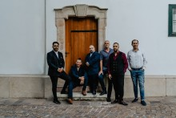
21. MAI 2023
INTERNATIONALER MUSEUMSTAG
INTERNATIONALER MUSEUMSTAG
11.30 UHR, KONZERT
KAMMERKONZERT DES ORCHESTERS HAGEN
Wolfgang Amadeus Mozart - Klarinettenquintett A-Dur KV 581
KAMMERKONZERT DES ORCHESTERS HAGEN
Johannes Brahms - Klarinettenquintett h-Moll op. 115
Besetzung
Yuria Otaki - Klarinette
Ilszoo Park/Anna Meyer - Violine
Michael Lauxmann - Vola
Katrin Geelvink - Voloncello
Tickets (€ 13,- Erw./€ 7,- Erm.) Informationen unter https://www.theaterhagen.de
Freier Eintritt ins Museum am Internationalen Museumstag
Folgende Angebote sind kostenlos:
12.15 - 13.15 UHR, FÜHRUNG
EMIL SCHUMACHER - DAS FRÜHE WERK UND DIE SAMMLUNG LEPKE
Kuratorenführung mit Rouven Lotz
EMIL SCHUMACHER - DAS FRÜHE WERK UND DIE SAMMLUNG LEPKE
Diese Ausstellung ist schon lange ein besonderes Desiderat gewesen, handelt es sich doch um die Präsentation einer ganz besonderen Kollektion von Werken Emil Schumachers, nämlich aus historischer Sammlersicht. Das Ehepaar Lepke zählt mit zu den ersten Sammlern, die den jungen Künstler in den Nachkriegsjahren unterstützten. Die Sammlung, die später vom Sohn und deren Lebensgefährtin gepflegt wurde, umfasst heute rund siebzig Zeichnungen, Drucke und Gemälde, vor allem aus dem frühen Werk. Sie ist geprägt vom Neuaufbruch im Werk des noch stark vom späten Expressionismus seiner Professoren an der Kunstgewerbeschule in Dortmund geprägten Künstlers (Studium von 1932 – 1934) sowie dem persönlichen Geschmack der insbesondere auch literarisch gebildeten Sammler. Die Ausstellung zeigt Emil Schumacher als weder figurativen noch gänzlich abstrakten Maler.
13 - 17 UHR, OFFENE DRUCKWERKSTATT FÜR GROSS UND KLEIN
WIR GESTALTEN EIN "EXLIBRIS"
Ein „Exlibris“ ist ein persönlicher Buchstempel, der den Besitzer/ die Besitzerin des Buches kennzeichnet. Für die Sammler-Familie Lepke schuf Emil Schumacher ein solches Exlibris, das noch bis zum 30. Juli in der Ausstellung „Emil Schumacher – Das frühe Werk und die Sammlung Lepke“ zu sehen ist. Die offene Werkstatt lädt unter fachkundiger, altersgerechter Anleitung ein, ein persönliches Exlibris zu gestalten. Dabei wird vermittelt, wie ein Motiv erstellt, ein Druckstock angelegt und damit gedruckt wird. Es werden keine Vorkenntnisse benötigt.
WIR GESTALTEN EIN "EXLIBRIS"
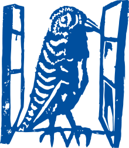
11.05.2023, 18 UHR, KONZERT
KLASSIK & JAZZ IM ESM
CHRONATIC QUARTETT
Der Karneval der Tiere
KLASSIK & JAZZ IM ESM
CHRONATIC QUARTETT
Schnittstelle zwischen Klassischer Musik und Popkultur
Im Jahr des 100. Todestages des französischen Komponisten Camille Saint-Säens haben sich die Musiker des Chronatic Quartett mit dessen wohl bekanntestem und beliebtestem Werk, dem „Karneval der Tiere“, auseinandergesetzt und die Orchestersuite für ihre ungewöhnliche Bandbesetzung - Geige, Klavier, Bass und Schlagzeug - umgeschrieben. Dabei adaptieren sie die Stücke des Originals nicht eins zu eins, sondern geben jedem in der Suite repräsentierten Tier eine eigene kompositorische Interpretation mit. Die tierischen Karnevalsgäste - Kängurus, Fische, Schildkröten, Löwen, Hühner und viele mehr - sind eine augenzwinkernde Persiflage auf Saint-Säens Komponisten-Kollegen. Das 2017 gegründete Chronatic Quartett bewegt sich auf der Schnittstelle zwischen klassischer Musik und Popkultur. In ihrer ungewöhnlichen Besetzung (Klavier/Bass/Violine/Schlagzeug) erfassen die vier Musiker große Werke der Klassik neu und interpretieren, zitieren und rekomponieren diese auf eigene, zeitgemäße Weise. Ein Konzert in der Schnittstelle zwischen Tradition, Moderne, Klassik, Pop & Jazz.
Eintritt frei

03.05.2023, 20 UHR, KONZERT
KLAVIER FESTIVAL RUHR
Nathalia Milstein (Klavier)
KLAVIER FESTIVAL RUHR
Franz Schubert: Sonate in B-Dur D 575
César Franck: Prélude, Choral und Fuge FWV 21
Sergei Rachmaninow: Études-Tableaux op. 39
Im Alter von 14 Jahren wurde Nathalia Milstein am Genfer Konservatorium unter anderem von ihrem Vater Serguei Milstein ausgebildet. Später studierte sie in Berlin an der Barenboim-Said Akademie, zunächst bei Nelson Goerner und dann bei András Schiff. Ihre internationale Karriere begann, als sie 2015 den Dublin International Piano Competition gewann und fortan in den großen Sälen der Welt auftrat – auch in der Carnegie Hall in New York und der Wigmore Hall in London. Ein Kritiker lobte ihre „bemerkenswert natürliche Musikalität“ und eine „Sensibilität von großer Finesse“. Und die wird sie sicherlich auch bei ihrem Debüt beim Klavier-Festival Ruhr zeigen können, bei dem sie sich mit Schuberts großer B-Dur-Sonate, Francks feinsinnigen Präludium, Choral und Fuge und Rachmaninows im Exil entstandenen Études-Tableaux präsentiert. Letztere sind inspiriert von den verschiedensten Bildern, Meeresstimmung, Jahrmarktszenen, aber auch ein Trauermarsch sind zu hören. Ein wahres Wechselbad der Gefühle!
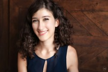
23.04.2023, 11.30 UHR, KONZERT
KAMMERKONZERT DES ORCHESTERS HAGEN
Peter Tschaikowsky - Klaviertrio a-Moll op. 50
KAMMERKONZERT DES ORCHESTERS HAGEN
Besetzung
Werner Köhn - Violine
Hye Jun Byun - Violoncello
Steffen Müller-Gabriel - Klavier
Weitere Informationen unter https://www.theaterhagen.de
30.03.2023, 18 UHR, KONZERT
KLASSIK & JAZZ IM ESM
FECILITAS STEPHAN & CECILIA NOVARINO (TURIN)
Europäische Meisterwerke für Violoncello & Klavier
KLASSIK & JAZZ IM ESM
FECILITAS STEPHAN & CECILIA NOVARINO (TURIN)
Eine musikalische Reise durch Europa
Mit ansteckender Spielfreude nehmen Felicitas Stephan (Cello) und Cecilia Novarino (Klavier) aus Turin ihr Publikum mit auf eine musikalische Reise durch Europa. Sie lernten sich 2016 an der Osterakademie in Cervo/Ligurien kennen. Seitdem begeistern die beiden Musikerinnen das Publikum mit ihren Interpretationen bedeutender Werke aus ganz Europa. In ihrem Programm findet man die große bedeutende französische Kompositionsprofessorin Nadia Boulanger, den spanischen Komponisten Manuel de Falla, einen wunderschönen Choral von Johann Sebastian Bach, die interessanten Werke des Schweizer Komponisten Ernest Bloch, der erst in Amerika bekannt wurde, die Rumänischen Tänze des Ungarn Béla Bartók und die Tangos des Argentiniers Astor Piazzolla, dessen Wurzeln in Italien sind. Gemeinsam ist den Musikerinnen ihr emotionales Spiel, dass sie zu sensiblen Künstlerinnen, die vom Publikum geschätzt und geliebt werden.
Eintritt frei
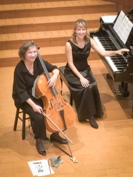
19.03.2023, 11.30 UHR, KONZERT
KAMMERKONZERT DES ORCHESTERS HAGEN
Nodelmann-Quartett
KAMMERKONZERT DES ORCHESTERS HAGEN
Erwin Schulhoff - Fünf Stücke für Streichquartett
Hans Krása - Streichquartett
Felix Mendelssohn Bartholdy - Streichquartett Nr. 6 f-Moll op. 8
Besetzung
Werner Köhn
Hyejun Byun
Steffen Müller-Gabriel
Weitere Informationen unter https://www.theaterhagen.de
16.03.2023, 18 UHR, KONZERT
KLASSIK & JAZZ IM ESM
NINA DAHLMANN QUARTETT
I love Paris
KLASSIK & JAZZ IM ESM
NINA DAHLMANN QUARTETT
Chanson und Jazzstandards aus Frankreich
Mit seinem Programm „I love Paris“ verzaubert das Quartett der jungen Sängerin Nina Dahlmann das Publikum mit einer besonderen Auswahl der Jazzgeschichte Frankreichs. Die vier Musiker haben die schönsten Chanson und Jazzstandards aus Frankreich und Paris im Reisegepäck.
Die Inspiration für ihr aktuelles Programm „I love Paris“ nach einem Song von Cole Porter hatte Nina Dahlmann bei ihrem letzten Besuch in Paris.
„Paris inspiriert mich einfach immer wieder aufs Neue und gibt mir musikalische Anregungen zu innovativen Jazzimprovisationen.“
Die junge Sängerin gilt in Fachkreisen als Ausnahmetalent. In zahlreichen Konzerten und auf Festivals hat sie sich in den letzten Jahren bereits einen eindrucksvollen Ruf erworben. Auf dem Take 5 Jazzfestival ist Nina Dahlmann ein gern gesehener Gast. Aktuell setzt sie ihre musikalische Ausbildung in Jazzgesang an der Folkwang Universität der Künste bei Romy Camerun fort.
Eintritt frei
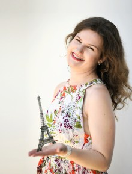
2. MÄRZ 2023 18 UHR, KINO
MODE. MACHT. MENSCHEN
In Kooperation mit dem Kino Babylon des Kulturzentrums Pelmke präsentieren wir Ihnen zum Thema Mode im Film - Kino Babyolon im ESM "Mode. Macht. Menschen".
MODE. MACHT. MENSCHEN
D/Kambodsha 2020 (OT: The Conscience of Clothing), Regie: Patrick Kohl, 99 Min., Dokumentarfilmprojekt der Rosa Luxemburg Stiftung, mit Willy Iffland, Helen Fare u. a.
Die Modetrends von heute sind der Müll von morgen. Der Kon sum steigt rasant. Aber dennoch: Mode ist menschlich. Individualität, Kreativität, Persönlichkeit, Vorlieben, Stil – all das macht uns aus. Doch es macht uns auch anfällig für Manipulation. Kann es einen Ausweg aus der Ressourcen-Verschwendungssucht geben? Welche Rolle spielt jede*r Einzelne von uns und gibt es eine individuelleVerantwortung für die Bedingungen entlang der Lieferkette?
In Kambodscha arbeiten drei Millionen Menschen täglich, um Textilien und Bekleidungsstücke für den Weltmarkt zu produzieren. Ihr Werk macht 70 % des gesamten Exportvolumens des Landes aus. Seit Jahren machen Menschenrechtsorganisationen auf prekäre Arbeitsbedingungen entlang der Lieferketten der Textilindustrie aufmerksam. Welche Machtbeziehungen und strukturellen Probleme existieren, was die Modeindustrie für die Menschen in den Produktionsländern bedeutet und was jede*r Einzelne tun kann, um diese Bedingungen zu verbessern, beleuchtet Regisseur Patrick Kohl in dieser wichtigen Dokumentation.
Eintritt: 8 €
Reservierungen: T +49 2331 / 33 69 67 oder kino@pelmke.de
Download: Flyer Mode im Film - Kino Babylon im ESM
23. FEBRUAR 2023 18 UHR, KINO
YVES SAINT LAURENT
In Kooperation mit dem Kino Babylon des Kulturzentrums Pelmke präsentieren wir Ihnen zum Thema Mode im Film - Kino Babyolon im ESM "Yves Saint Laurent".
YVES SAINT LAURENT
Frankreich 2013 Regie: Jalil Lespert, 101 Min., mit Pierre Niney, Gulliaume Gallienne, Charlotte Le Bon, Laura Smet, Marie De Villepin, Nicolai Kinski u. a.
Er liebte das Schöne, alles andere war Nebensache. Yves Saint Laurent (1936–2008), legendärer französischer Modedesigner – ihm setzt Jalil Lespert in seinem gleichnamigen Film ein Denkmal. Nicht unkritisch, aber vor allem von großer Verehrung für Leben und Werk des Modeschöpfers getragen, gelingt Lespert nicht zuletzt dank der beiden herausragenden Hauptdarsteller ein sehr atmosphärischer Film. Pierre Bergé (1930–2017) als langjähriger Partner Saint Laurents – der im
Film ebenfalls porträtiert wird – autorisierte den Film, der in der Kritik jedoch nicht unumstritten ist.
Eintritt: 8 €
Reservierungen: T +49 2331 / 33 69 67 oder kino@pelmke.de
Download: Flyer Mode im Film - Kino Babylon im ESM
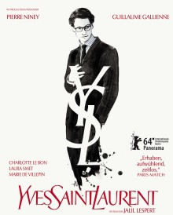
AUSVERKAUFT: 12. FEBRUAR 2023 12 UHR, KINO
FRÜHSTÜCK BEI TIFFANY
In Kooperation mit dem Kino Babylon des Kulturzentrums Pelmke präsentieren wir Ihnen zum Thema Mode im Film - Kino Babyolon im ESM "Frühstück bei Tiffany".
FRÜHSTÜCK BEI TIFFANY
USA 1961, Regie: Blake Edwards, Drehbuch: Truman Capote, 91 Min., mit Audrey Hepburn George Peppard Patricia Nealu. a.
Holly Golightley verbirgt ihre Vergangenheit gekonnt vor anderen, zuweilen auch vor sich selbst und widmet sich lieber den schönen Dingen des Lebens. Sie schwelgt in luxuriösem Ambiente als wenn sie ihr jetziges Dasein bereits mit der Muttermilch eingesogen hätte. Auf den Feiern der New Yorker High Society gelingt es ihr auf wunderbare Weise, die Leichtigkeit eines Partygirls auszustrahlen. Insgeheim sucht sie einen reichen Ehemann. Doch ausgerechnet der mittellose Schriftsteller Paul Varjak gewinnt langsam ihr Herz. Sie erteilt ihm aber eine Abfuhr und willigt stattdessen ein, den wohlhabenden Großgrundbesitzer José da Silva Pereira zu ehelichen. Doch dann taucht ihr Ex-Ehemann auf und Paul erfährt, dass Hollys Name eigentlich Lula Mae Barnes ist.
Ab 11:30 Uhr laden wir bei Croissants, Kaffee und Sekt zur Matinee in das Auditorium des Emil Schumacher Museums ein.
Eintritt: 8 €
Download: Flyer Mode im Film - Kino Babylon im ESM
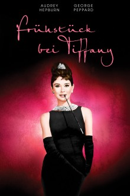
09.02.2023, 18 UHR, KONZERT
KLASSIK & JAZZ IM ESM
SANDRA LANDINI (PISA)
Chopin Klavierabend
KLASSIK & JAZZ IM ESM
SANDRA LANDINI (PISA)
Chopin, Tschaikosky und Fanny Mendelssohn
Die preisgekrönte Pianistin Sandra Landini aus Pisa wird mit einer herrlichen Leichtigkeit, die den Frühling bereits erahnen lässt, im ESM für uns spielen.
Sie begann ihre musikalische Ausbildung unter der Anleitung ihrer Mutter und bestand ihr Klavier-Diplom am L. Cherubini Konservatorium in Florenz mit der Auszeichnung „summa cum laude“. Ein Aufbaustudium in Perugia und Livorno folgte.
Sandra Landini etablierte sich als große Pianistin, als sie noch sehr jung war, da sie in mehreren nationalen Klavierwettbewerben in Genua, Savona, Pompeji, Pisa, Livorno, Rimini, Brindisi und Ravenna erste Preise und Stipendien erhielt.
Ihre große Liebe gilt Frédéric Chopin, mit dessen Werken sie eine hervorragende CD bei Phoenix Classics eingespielt hat.
Freuen Sie sich auf einen Konzertabend im ESM mit einer herausragenden Künstlerin und erleben Sie, wie große Kompositionen der Klaviermusik von Chopin, Tschaikowski und Fanny Mendelssohn mit italienischem Temperament interpretiert werden!
Eintritt frei
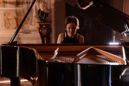
22.01.2023, 11.30 UHR, KONZERT
MUSIKALISCHES LIEBESDREIECK:
BRAHMS UND DIE SCHUMANNS
Im Jahr 1853 verbrachte der zwanzigjährige Johannes Brahms vier Wochen bei Robert und Clara Schumann in Düsseldorf. In der viel gelesenen "Neuen Zeitschrift für Musik" verkündete Robert die Größe des jungen Komponisten und machte ihn über Nacht berühmt. Als Robert nach einem Selbstmordversuch in eine Heilanstalt eingewiesen wurde, stand Brahms sogleich Clara bei und besuchte Robert häufig im Sanatorium. Er wurde ein enger Freund — und vielleicht noch mehr.
MUSIKALISCHES LIEBESDREIECK:
BRAHMS UND DIE SCHUMANNS
Bald nach Roberts Tod 1856 gingen Johannes und Clara ihre eigenen Wege, blieben aber weiterhin treue Freunde. Clara war immer bereit, seine neuesten Kompositionen zu spielen. Brahms heiratete nie und Clara heiratete nie wieder. Brahms starb elf Monate nach Clara Schumann.
Clara Schumann war eine ausgezeichnete Pianistin und Komponistin, deren Karriere als Wunderkind begann und die sechs Jahrzehnte lang auf den wichtigsten Bühnen Europas spielte. Dieses Konzert stellt die Lieder von Clara Schumann in den Mittelpunkt der Werke der beiden Männer, die ihr am nächsten standen.
EVELYN KRAHE, Altistin
YAN VAIGOT, Violoncello
AMY TARANTINO-TRAFTON, Klavier
MUSIK VON:
ROBERT SCHUMANN
CLARA SCHUMANN
JOHANNES BRAHMS
Eintritt € 15,-
Reservierungen unter info@esmh.de
12. JANUAR 2023 18 UHR, KINO
MARTIN MARGIELA - MYTHOS DER MODE?
In Kooperation mit dem Kino Babylon des Kulturzentrums Pelmke präsentieren wir Ihnen zum Thema Mode im Film - Kino Babyolon im ESM "Martin Margiela - Mythos der Mode?".
MARTIN MARGIELA - MYTHOS DER MODE?
Deutschland, Frankreich, Belgien 2019, Regie: Reiner Holzemer, Dokumentarfilm, 91 Min.
MARTIN MARGIELA – MYTHOS DER MODE ist das einzigartige Porträt des größten Mythos der Modegeschichte. Der Designer inspiriert auch heute noch viele seiner jüngeren Kollegen, aber kaum jemand kennt sein Gesicht. Er bleibt ein wahres Rätsel. Martin Margiela erzählt „in his own words“ Stationen seiner Karriere und Momente aus seiner Jugend. Regisseur und Produzent Reiner Holzemer bringt Margiela dazu uns zu erzählen, was ihn zur Gründung von Maison Martin Margiela bewogen hat, um nach 20 Jahren und 41 provokativen Kollektionen seinen Lebensweg zu ändern und die Modewelt ohne öffentliche Ankündigung zu verlassen. Dem Regisseur gelingt ein faszinierendes Porträt des „Banksy of Fashion“: Die Hände und die Stimme des Designers beschreiben die bis jetzt unbekannte persönliche Geschichte eines Mannes, dessen Werk Teil unseres Alltags und unseres kulturellen Hintergrunds geworden ist. Der Film enthält unter anderem Interviews mit Jean Paul Gaultier, Carine Roitfeld, der Trendforscherin Lidewij Edelkoort, der Modekritikerin Cathy Horyn und dem Modehistoriker Olivier Saillard.
Eintritt: 8 €
Reservierungen: T +49 2331 / 33 69 67 oder kino@pelmke.de
Download: Flyer Mode im Film - Kino Babylon im ESM

26.12.2022, 18 UHR, KONZERT
KLASSIK & JAZZ IM ESM
EAST WEST SEXTETT
Weihnachtskonzert
KLASSIK & JAZZ IM ESM
EAST WEST SEXTETT
DIMA - Yes or No
Der ukrainische Trompeter Dima Telmanov verzaubert mit seinen Kompositionen und Arrangements die Jazzwelt. Wer die ersten Töne des Albums „Yes or No“ hört wird begeistert sein. Bei den Improvisationen ist die unbändige Spielfreude sofort zu spüren.
2021 war Telmanov „Artist in Residence“ beim internationalen Jazzfestival Take 5. Was 2005 zum ersten Take 5 Jazz am Hellweg Festival mit dem East West Quartett in Hagen begann, ist heute ein Sextett, das im Kern immer noch aus den Musikern der damaligen Formation besteht.
Mit der gerade erschienenen CD „Yes or No“ erklingen die Werke in einem wahrhaften Klangrausch.
Dimitrij Telmanov (Trompete), Vadim Neselovsky (Klavier), Benny Mokross (Schlagzeug), Uli Bär (Kontrabass), Patrick Porsch (Tenor-Saxophon), Paul Lüpfert (Posaune).
Eintritt € 20,-
Download: Flyer 2/2022
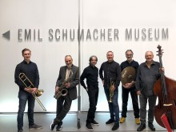
22.12.22 19 UHR, KINO
IM KINO BABYLON
MRS. HARRIS UND EIN KLEID VON DIOR
In Kooperation mit dem Kino Babylon des Kulturzentrums Pelmke präsentieren wir Ihnen zum Thema Mode im Film - Kino Babyolon im ESM "Mrs. Harris und ein Kleid von Dior"
IM KINO BABYLON
MRS. HARRIS UND EIN KLEID VON DIOR
im Kino Babylon
USA 2022, Regie: Anthony Fabian, mit Isabelle Huppert, Lesley Manville, Jason Isaacs, Lambert Wilson, Alba Baptista, Lucas Bravo u. a.
Als ihr Blick auf eine exklusive Haute-Couture-Robe von Christian Dior fällt, ist es um Ada Harris geschehen. Eigentlich ist Mode nicht das Ding der verwitweten Frau, die sich im London der 1950er als Haushaltskraft über Wasser hält. Aber sie beschließt, selbst ein solches Kleid besitzen zu müssen. Auch wenn das bedeutet, dass sie noch härter arbeiten und vielleicht auch hungern muss, damit sie sich ihren Traum erfüllen kann. Ganz so einfach, wie Ada dachte, ist es aber nicht, Zugang zum Hause Dior in Paris gewährt zu bekommen ... Nach einer 1958 veröffentlichten Novelle von Paul Gallico, die Regisseur Anthony Fabian in einer visuell berauschenden, emotional berührenden Kinofassung vorlegt, die bezaubernder nicht sein könnte.
Eintritt: 8 €
Reservierungen: T +49 2331 / 33 69 67 oder kino@pelmke.de
Download: Flyer Mode im Film - Kino Babylon im ESM
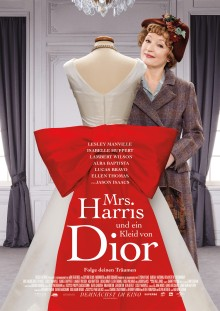
21.12.2022, 19.30 UHR, KONZERT
BACH-CHOR HAGEN
KLEINES WEIHNACHTSKONZERT
"Lasset uns frohlocken"BACH-CHOR HAGEN
KLEINES WEIHNACHTSKONZERT
Alte und neue Lieder zu Weihnachten – auch zum Mitsingen
Der Chor wird in dem rund einstündigen Konzert neue und bekannte Weihnachtslieder a capella vortragen und in einem zweiten Teil das Publikum zum Mitsingen einladen. Auf dem Programm stehen auch zwei Uraufführungen bekannter weihnachtlicher Weisen in neuer Vertonung.
Im Anschluss lädt der Chor zur Begegnung und zum Austausch ein.
Eintritt frei
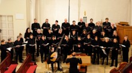
15.12.2022, 18 UHR, KONZERT
KLASSIK & JAZZ IM ESM
UKRAINE & DEUTSCHLAND
VERBUNDEN DURCH MUSIK
Cello & Klavier
KLASSIK & JAZZ IM ESM
UKRAINE & DEUTSCHLAND
VERBUNDEN DURCH MUSIK
Pauline Stephan(Violoncello), Olha Kuzmina (Klavier)
Pauline Stephan, Cellistin aus Unna, und Olha Kuzmina, Pianis tin aus Kiew, lernten sich 2021 beim Studium am Konservatorium in Turin, Italien, kennen.
Zu einer Zeit, wo Europa mit einem Krieg innerhalb seiner Grenzen konfrontiert ist, zeigt sich, dass junge Menschen und insbesondere Musiker:innen den Wunsch haben, sich über Grenzen hinaus zu finden, um trotz allem gemeinsam neue Projekte zu beginnen. Im Emil Schumacher Museum präsentieren sie ein facettenreiches Programm mit Werken von Beethoven und Schostakowitsch.
Eintritt frei
Download: Flyer 2/2022
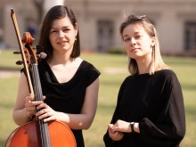
19.11.2022, 19.00 UHR, KONZERT
KLASSIK & JAZZ IM ESM
ENSEMBLE BOSSOCONCEPT
Argentinien - Tango & more
KLASSIK & JAZZ IM ESM
ENSEMBLE BOSSOCONCEPT
Jorge Andrés Bosso (Violoncello), Ivana Zecca,(Klarinette;), Davide Vendramin (Bandoneòn), Paolo Badiin (Kontrabbass)
Das Ensemble BossoConcept als Tangokonzert zu bezeichnen, würde in die Irre führen, meinte die Zeitung Libertà auf dem Summer Jazz Festival in Piacenza. Es handelt sich um stark evokative und filmische Kompositionen, die keinem Genre zuzuordnen sind. Es beginnt mit dem Tango, seinen Stimmungen, Schatten und Vertiefungen, und endet beim Jazz. Mit zwei Worten: zeitgenössische Musik – lebendig, präsent, pulsierend, brillant. „Der Tango ist uralt und wird modern, wenn sein Licht einen ovalen Horizont berührt“ so Jorge Andrés Bosso. Dass der argentinische Komponist und Cellist Jorge Andrés Bosso zum „Celloherbst am Hellweg“ mit seinem aktuellen Ensemble aus Italien nach Hagen in das ESM angereist kommt, gleicht einer Sensation.
Eintritt frei
Download: Flyer 2/2022
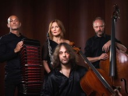
30.10.2022, 12.30 UHR, KONZERT
HUIJING HAN UND PEIXI WU
RHAPSODY IN BLUE AND OTHER COLORS
Statt einem großen Orchester präsentieren zwei Pianistinnen die »Rhapsody in Blue« von Georg Gershwin. Peixi Wu arrangiert in ihrer Fassung eine Kombination aus analogem Piano und digitalen Elementen, auch Bach und Mozart werden zu hören sein. Die Cross Over-Musik läßt in ihrer Spannbreite viele Farben lebendig werden – knüpft Verbindungen von gestern zu heute und morgen – von China nach Europa und Amerika ….
HUIJING HAN UND PEIXI WU
RHAPSODY IN BLUE AND OTHER COLORS
Peixi Wu – Piano und Arrangement
Huijing Han – Piano
Eintritt € 15
Karten sind an der Abendkasse erhältlich
Reservierung unter info@esmh.de
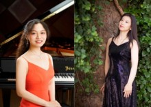
20.10.2022, 18-20 UHR
POLITISCHER SALON HAGEN
ImPuls: Politischer Salon Hagen ist eine Veranstaltung der FernUniversität in Hagen in Kooperation mit dem Theater Hagen und dem Emil Schumacher Museum Hagen. Auf Grundlage von literarischen, wissenschaftlichen und journalistischen Publikationen werden hier aktuelle gesellschaftsrelevante Themen mit der Stadtgesellschaft diskutiert. Schirmherr ist Andreas Meyer-Lauber, Hochschulratsmitglied der FernUniversität in Hagen.
POLITISCHER SALON HAGEN
Russlands Krieg gegen die Ukraine -
Entstehung, Bedeutung und Auswege
Podiumsteilnehmer/-innen:
Prof. Dr. Felix Ackermann, FernUniversität in Hagen
Natalia Keller, Stadt Hagen
Prof. i.R. Dr. Hajo Schmidt, FernUniversität in Hagen
Moderation:
Andreas Meyer-Lauber, Schirmherr des Politischen Salons
Programm der Veranstaltung
Anmeldung
13.10.2022, 18.00 UHR, KONZERT
KLASSIK & JAZZ IM ESM
MUSIKALISCHE REISE DURCH EUROPA
VON RUSSLAND ÜBER FRANKREICH NACH SPANIEN
Cello & Klavier
KLASSIK & JAZZ IM ESM
MUSIKALISCHE REISE DURCH EUROPA
VON RUSSLAND ÜBER FRANKREICH NACH SPANIEN
Camilla Patria (Violoncello) & Elena Ballario (Klavier)
Mutter und Tochter spannen einen großen Bogen als internationale Spitzenmusikerinnen – beide erfolgreich in Italien und Europa. Sie präsentieren auf höchstem Niveau russische, französische und spanische Kompositionen, die alle Klassikfans begeis-tern werden. Es ist immer wieder ein Erlebnis, wenn Menschen mit Saiten und Tasten Träume wahr werden lassen.
Eintritt frei
Download: Flyer 2/2022
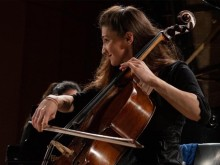
22.09.2022, 18.00 UHR, KONZERT
KLASSIK & JAZZ IM ESM
VOICELLO AUS MALLORCA
Fado, Folk, Pop & Klassik
KLASSIK & JAZZ IM ESM
VOICELLO AUS MALLORCA
Biel Fiol (Violoncello) & Carme Gari (Gesang)
Als Anfang Februar vergangenen Jahres das erste Album endlich fertig war, packte die beiden die Nervosität. Was würden die Puristen, die ja nun einen nicht gerade geringen Anteil des Klassikpublikums ausmachen, dazu sagen? Ein Cellist mit Loop-Pedal und eine Sopranistin, die klassische Stücke, Jazz, Fado und traditionelle mallorquinische Musik verbinden. Konnte das Konzept Voicello aufgehen? Dabei sehen Carme Garí und Biel Fiol keinesfalls aus wie Revoluzzer. Es sind freundliche, junge Menschen Anfang 30. Sie aus Palma, er aus Felanitx. Seit wenigen Jahren sind sie ein Paar. Beide sind am Konservatorium ausgebildete Musiker.
Eintritt frei
Download: Flyer 2/2022
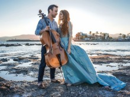
17.09.2022, 17 UHR
THIRD CHOICE VORTEX
THIRD CHOICE VORTEX
Neben 'Third Choice - Vortex' präsentieren werden Fragmente aus Live Performances und Tanzkurzfilme.
Third Choice - Vortex ist eine multidisziplinäre, genreübergreifende Kreation, die sich an der Schnittstelle von Theater, Tanz und Film befindet und von einer persönlichen Erinnerung inspiriert ist. Eine Erinnerung an einen Ort, der einen Übergang zwischen den Ebenen der menschlichen Erfahrungen widerspiegelt. Die Authentizität eines Individuums wird präsentiert und in den Mittelpunkt gestellt. Die Kreation erforscht die Unterthemen Identitätsbildung, Gender, Sehnsucht nach Zugehörigkeit und Verbindung zu anderen, in Bezug auf Stereotypen in unserer Gesellschaft. Auch die Einsamkeit eines Individuums ist Thema, neben den distanzierten und systematischen Kommunikationsmitteln der Medien. Es werden Aspekte erforscht, die die Verbindung zwischen den Gesten des täglichen Lebens und ihren körperlich-expressiven Motiven, dem Individualismus und den persönlichen charakteristischen Ausdrücken, darstellen.
Tickets unter: ticket@wdtanztheater.de
Regisseur, Texter, Choreographie, Konzept, Musikbearbeitung:
Sagi Amir Gross
Darsteller/innen: Aymeric Aude, Simona Dammicco, Filippo Franzese Elpida
Voryas, Amy van Weert
Management: Jozsef Csaba Hajzer
Produktionsleiter: Thomas Seidel
Produktion: Ina Topeters
Kontakt: presse@wdtanztheater.de
02.07.2022, 19 UHR
THIRD CHOICE VORTEX
Komponist: Gérard Grisey (1946-1998) - Frankreich
THIRD CHOICE VORTEX
Vortex Temporum (1995) für sechs Instrumente
Choreograf: Sagí Amir Gross - WestDeutsches Tanztheater
„Ein Ton wird zur Klangfarbe, ein Akkord zum Spektralkomplex und ein Rhythmus zu einer Welle von unvorhersehbaren Dauern.“ Mit diesen Worten umschrieb der Komponist Gérard Grisey die Klangauffassung der „Musique spectrale“, die sich Anfang der 70er-Jahre im Umkreis des Pariser Forschungsinstitutes IRCAM und des Ensembles L'Itinéraire herausbildete und als eine der bedeutendsten Gegenwartsströmungen der Neuen Musik gilt.
musica assoluta spielt das bedeutende Werk ”Vortex Temporum“ von Gérard Grisey in einer Tanz- und Bewegungsperformance, die das Publikum in behutsamer Weise mit einbezieht und die klassische Konzertanordnung zugunsten einer körperlich-geistigen Gesamterfahrung aller Beteiligten aufbricht. Die unterschiedlichen Facetten des „Zeitenwirbels“, in dem das Individuum Spielball der Ereignisse ist, werden in stilisierter Form dargestellt.
"Meine Beziehung zu Musik ist von Klein auf symbiotisch. Ich sehe mich selbst als Maler von Musik und meine Choreographien als Bewegungsgemälde. Durch meine Ton-Farb-Synästhesie verknüpft sich seit meiner Kindheit die Umsetzung von Musik intensiv mit Farben. In meinem Kopf kann ich die Struktur der Musik buchstäblich sehen."
Sagí Amir Gross
16.6.2022, 18.00 UHR, KONZERT
KLASSIK & JAZZ IM ESM
NÄCHTE IN SPANISCHEN GÄRTEN
Duo Casals
KLASSIK & JAZZ IM ESM
NÄCHTE IN SPANISCHEN GÄRTEN
Felicitas Stephan (Violoncello) & Juan Carlos Nawarro (Gitarre)
Auf seiner musikalischen Reise durch Spanien und Lateinamerika gelingt es dem Duo Casals, den Zauber einer Nacht in einem spanischen Garten entstehen zu lassen durch ein Klangfarbenspektrum, das in der Kammermusik seinesgleichen sucht. Die Zuhörer erwartet ein besonders faszinierendes Konzerterlebnis, das durch die Kombination von gezupften und gestrichenen Tönen von Cello und Gitarre entsteht. Das Duo Casals ist in der Klassik zuhause, aber mit einer Seele, die Lateinamerikanisches spürt. In ihrem neuen Programm stellen Felicitas Stephan (Violoncello) und Juan Carlos Arancibia Navarro (Gitarre) vor allem lateinamerikanische und spanische Musikperlen vor, die sowohl von der klassischen Tradition als auch von der vielfältigen Volksmusik beeinflusst sind. Denn früher wie heute gilt: Musik kennt keine Grenzen und die Welt der Musik ist universell.
Eintritt frei
Anmeldung ist nicht mehr erforderlich.
Download: Flyer Klassik & Jazz im ESM 1/2022
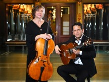
11.06.2022, 14 UHR, KONZERT
HUIJING HAN
Fünf Nocturnes von Frédéric Chopin und
HUIJING HAN
„Carnaval“ Op.9 von Robert Schumann
Es war ein Tag im Juni 1836 – der Komponist Robert Schumann schwärmte, dass alles, was Chopin berühre, Gestalt und Geist annehme. Somit pries er sowohl die Grazie als auch die Verbindlichkeit der Komposition Chopins und bewunderte des Weiteren, wie dieser, hier verhüllend und dort entschleiernd, seine Gedanken entwickelte.
Mit höchster Leidenschaft spielt Huijing Han während ihrer Matinée im Hagener Emil Schumacher Museum die renommierten ,,Nocturnes“, komponiert von Frédéric Chopin, sowie ,,Carnaval“ von Robert Schumann. Die beiden Pianisten und Komponisten verbindet das gemeinsame Geburtsjahr 1810.
Am Ende des Jahres 1833 fand sich in Leipzig jeden Abend zufällig eine Gruppe jüngerer Musiker zusammen, die einen künstlerischen und musikalischen Austausch mit Gleichgesinnten suchten. Daraus hervorgehend, rief Schumann die sogenannten ,,Davidsbündler“ ins Leben, ein geistiger Künstlerkreis, der ideell um verehrte und bereits verstorbene Künstler erweitert wurde. Ihnen zugedachte Phantasienamen kennzeichneten ihre Mitgliedschaft. Vor diesem musischen Hintergrund verewigte Schumann einige der Mitglieder, indem er den Kompositionen in seinem Opus ,,Carnaval“ Titel nach diesen Phantasienamen zudachte.
Die Pianistin Huijing Han wird das Konzert moderieren und die Stücke erläutern und weitere Geschichten in ihrem Konzert offenbaren...
Eintritt € 15
Karten sind erhältlich an der Abendkasse.

02.06.2022, 18.00 UHR, KONZERT
KLASSIK & JAZZ IM ESM
ENTFÄLLT: TRIO TORINO (ITALIEN)
Dafür spielt:
KLASSIK & JAZZ IM ESM
ENTFÄLLT: TRIO TORINO (ITALIEN)
Klavierquintett Pangea
Jeehyun Lee – Violine
Marcelo Albuja - Violine
Daniel Espinoza – Viola
Dimitris Karagiannakidis – Violoncello
Ignacio González – Klavier
Das Klavierquintett Pangea vermittelt ein großes, eindrucksvolles und fast orchestrales Klangerlebnis. Der warme Ton der vier Streichinstrumente wird durch den klanglichen Reichtum des Klaviers ergänzt, was alle großen Komponisten zu schätzen wussten. Nicht zufällig haben beispielsweise Brahms, Schumann, Franck und Dvořak einige ihrer legendären Werke dieser Besetzung gewidmet. Die Mitglieder des Pangea Klavierquintetts sind freischaffende Künstler*innen mit Wohnsitz in Nordrhein-Westfalen. Aus fünf Ländern und drei Kontinenten kommend haben sie sich an der Musikhochschule Münster kennengelernt und spielen seit 2021 zusammen Kammermusik.
W. A. Mozart (1756-1791) – Divertimento D-Dur für Streicher KV 136
J. Brahms (1833-1897) - Klavierquintett f-Moll Op. 34
Eintritt € 20
Karten sind an der Abendkasse erhältlich.
Download: Flyer Klassik & Jazz im ESM 1/2022
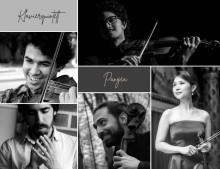
19.05.2022, 18.00 UHR, KONZERT
EDIN KARAMAZOV - MADE IN SILENCE
Das Emil Schumacher Museum freut sich ganz besonders, den in Zagreb lebenden und international auftretenden Gittaristen Edin Karamazov für ein Konzert in Hagen, am Donnerstag, dem 19. Mai, ab 18 Uhr, ankündigen zu dürfen. Anmeldungen sind nicht erforderlich. Der Eintritt ist frei.
EDIN KARAMAZOV - MADE IN SILENCE
Karamazov, 1965 geboren, studierte bei Hopkinson Smith an der Schola Cantorum Basiliensis in der Schweiz. Er arbeitete zusammen mit Ensembles wie Hesperion, L'Arpeggiata, Hilliard Ensemble, Mala Punica, Orpheus Chamber Orchestra und mit Künstlern wie Andreas Scholl, Maria Cristina Kiehr und Arianna Savall. 2006 veröffentlichte der musikalische Grenzgänger zusammen mit dem Rockmusiker und Sänger Sting ein Album mit dem Titel "Songs from the Labyrinth" mit Liedern des englischen Komponisten John Dowland (1563–1626). Die CD, die im Oktober des Jahres bei der Deutschen Grammophon erschien, beinhaltet überwiegend Gesang zur Laute, aber auch Instrumentalstücke. Am 4. und 9. Oktober 2006 fanden in London und New York Konzerte statt, in denen Edin Karamazov und Sting zusammen mit dem Gesangsensemble "Stile antico" erstmals das Album live vorstellten. Das Londoner Konzert in der Kirche St. Luke’s wurde von BBC Radio 3 aufgezeichnet. Am 23. Oktober 2006 gab es auch in Berlin ein Konzert mit diesem Programm. Im Februar und März 2007 begleitete Edin Karamazov Sting auf einer vierwöchige Europatour, die unter anderem nach Deutschland führte.
2018 entstand ein freundschaftlicher Kontakt zwischen dem Emil Schumacher Museum und dem Musikproduzenten Daniel Vukov, der damals eine Auftakt-Reihe von fünf CD-Alben herausbrachte – vier davon Co-produziert von Edin Karamazov. Die CDs sowie eine Schallplatte, tontechnisch aufwändig produziert, wurden entsprechend des hohen musikalischen Anspruchs für die Gestaltung der Booklets mit Motiven von Emil Schumacher ausgestattet. Ein Jahr nach dem Tod des Stifters der Emil Schumacher Stiftung ist das Konzert Edin Karamazovs dem Künstlersohn Dr. Ulrich Schumacher gewidmet.
Das von Edin Karamazov eigens zusammengestellte Programm des Konzertes führt mit Kompositionen von Johann Sebastian Bach (1685 – 1750), Fernando Sor (getauft 1778 – 1839), Francisco Mignone (Brasilien, 1897 – 1986) und Leo Brouwer (Kuba, *1939) vom 18. Jahrhundert über 19. und 20. Jahrhundert durch vier jahrhunderte bis in die Gegenwart. Die Kompositionen von Bach für Violoncello wurden von Karamazov für das Spiel mit der Gitarre neu arrangiert:
Johann Sebastian Bach : Cello Suite no.2
- Prelude
- Allemande
- Courante
- Sarabande
- Menuett
- Gigue
Fernando Sor:
– Variations de Mozart op.9
Francisco Mignone:
– Tres Valsas Brasileiras
Leo Brouwer: El Decameron Negro
- El arpa del guerrero
- La huida de los amantes por el valle de los ecos
- Balada de la doncella enamorada
Eintritt frei.
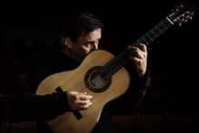
12.05.2022, 18.00 UHR, KONZERT
KLASSIK & JAZZ IM ESM
TASTENVIERTUOS AUS COMO (ITALIEN)
Maurizio Moretta, Klavier
KLASSIK & JAZZ IM ESM
TASTENVIERTUOS AUS COMO (ITALIEN)
Maurizio Moretta kommt als musikalischer Botschafter aus der Lombardei nach Hagen. Der preisgekrönte italienische Pianist aus Como ist auf den Konzertbühnen weltweit ein gern gesehener Gast und wird für seine technische Virtuosität und große musikalische Gestaltungskraft gefeiert. Er liefert den Beweis, dass klassische Musik sehr lebendig und verführerisch sein kann. Sein musikalischer Instinkt ist ein Schatz, es ist ein Instinkt, der vom ersten Moment an fasziniert und die Zuhörer in den Bann zieht. Moretta spielt mit einer musikalischen Intensität, die in heutigen Konzertsälen kaum zu finden ist. Seine Interpretationen lassen das Publikum staunen. In Hagen spielt er u.a. Werke von Paradisi, Scarlatti und das berühmte „Le Lac de Come“ von Galos.
Eintritt frei
Anmeldung ist erforderlich unter info@esmh.de oder Telefon 0 23 31 / 30 60 066
HINWEIS zu den aktuellen Corona-Bedingungen: Einlass nur mit Nachweis von zwei Impfungen + Testung (2G+) bzw. dreifach-Impfung (Booster) jeweils in Verbindung mit gültigem Personalausweis.
Download: Flyer Klassik & Jazz im ESM 1/2022
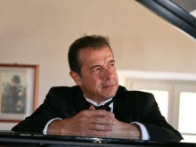
08.05.2021, 11.30 UHR, KONZERT
KAMMERKONZERT DES ORCHESTERS HAGEN
Streichquintette von Frank Martin, Germain Tailleferre und George Onslow
KAMMERKONZERT DES ORCHESTERS HAGEN
Weitere Informationen unter https://www.theaterhagen.de
06.05.2022, 20 UHR, KONZERT
KLAVIER FESTIVAL RUHR
Benjamin Moser (Klavier)
KLAVIER FESTIVAL RUHR
Liza Ferschtman (Violine)
Sergei Prokofjew: Sonate für Violine und Klavier Nr. 1 in f-moll op. 80
César Franck: Sonate für Violine und Klavier in A-Dur
Dmitri Schostakowitsch: Präludien op. 34 (Auswahl)
Beim Klavier-Festival Ruhr 2018 spielten Benjamin Moser und Liza Ferschtman gemeinsam mit dem delian::quartett ein fulminantes Konzert mit Werken französischer Komponisten – nun treten der in München geborene Pianist und die niederländische Geigerin als Duo auf. Was sie verbindet, ist die Leidenschaft für ausgefallene Programme und natürlich die Freude am Musizieren mit Freunden und Wegbegleitern. Das scheint ihnen schon in die Wiege gelegt, denn beide stammen aus hochmusikalischen Familien. Liza Ferschtman studierte in Amsterdam und am Curtis Institute of Music in Philadelphia. Heute ist sie nicht nur als Solistin, sondern auch als Programmgestalterin renommierter Festivals und Kammermusikpartnerin etwa von Elisabeth Leonskaja bekannt. Ein Kritiker der New York Times lobte einmal die „Intensität, Reinheit und raffinierte Schönheit“ ihres Spiels. Benjamin Moser tritt bereits zum neunten Mal beim Klavier-Festival Ruhr auf. Internationales Aufsehen erregte er 2007 als Preisträger des Tschaikowsky-Wettbewerbs in Moskau – viele künstlerische Anregungen erhielt er von Dmitri Bashkirov und Alfred Brendel.Ein Duoabend, auf den wir gespannt sein dürfen!
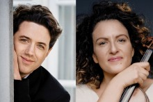
28.04.2022, 18.00 UHR, KONZERT
KLASSIK & JAZZ IM ESM
MOZART UND DVORÁK
Quartetto Archè
KLASSIK & JAZZ IM ESM
MOZART UND DVORÁK
Giovanna Bono, Flöte
Roberto D’Auria, Violine
Tessa Rippo, Viola
Pauline Stephan, Violoncello
Das Quartetto Archè wurde von vier jungen Musiker*innen gegründet, die sich 2021 im Rahmen des Kammermusikstudiums am „Conservatorio Giuseppe Verdi“ in Turin kennengelernt haben. Nach kurzer Zeit entstand der Wunsch, das umfangreiche, wenn auch vielleicht nicht allzu bekannte Repertoire für die seltene Besetzung Flöte und Streichtrio zu erforschen. Durch ihre Energie und ihre Freude am gemeinsamen Musizieren gelingt es den Mitgliedern dieses Ensembles, dem Publikum in ihren Konzerten ihre Begeisterung für diese Musik zu vermitteln.
So entstand ein spannendes, vielfältiges Programm mit Werken von Mozart, Copland und dem amerikanischen Quartett von Dvořák.
Eintritt frei
Anmeldung ist erforderlich unter info@esmh.de oder Telefon 0 23 31 / 30 60 066
HINWEIS zu den aktuellen Corona-Bedingungen: Einlass nur mit Nachweis von zwei Impfungen + Testung (2G+) bzw. dreifach-Impfung (Booster) jeweils in Verbindung mit gültigem Personalausweis.
Download: Flyer Klassik & Jazz im ESM 1/2022
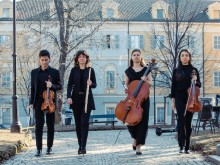
17.04.2022, 11.30 UHR, KONZERT
KAMMERKONZERT DES ORCHESTERS HAGEN
Musik von Ludwig von Beethoven und Robert Schumann
KAMMERKONZERT DES ORCHESTERS HAGEN
Ludwig van Beethoven
Cellosonate Nr. Nr. 1 op. 5 F-Dur
Robert Schumann
Klaviertrio Nr. Nr. 1 op. 63 d-Moll
Weitere Informationen unter https://www.theaterhagen.de
24.03.2022, 18.00 UHR, KONZERT
KLASSIK & JAZZ IM ESM
GOLDBERG VARIATIONEN
Fatjona Maliqi, Klavier
KLASSIK & JAZZ IM ESM
GOLDBERG VARIATIONEN
Fatjona Maliqi profiliert sich gerade als Solistin mit einer Vorliebe für ungewöhnliche, anspruchsvolle Programme und beeindruckt dabei "mit Eindringlichkeit und Finesse" (Piano News). Besondere Anerkennung erwarb sie in jüngster Zeit für ihre Darbietung der Goldberg-Variationen von J. S. Bach, die sie spielt, "als wäre alles ganz einfach" (Bonner Generalanzeiger).
Die aus dem Kosovo stammende Pianistin, die bereits als Jugendliche zahlreiche Preise erringen konnte, ist neben internationalen Konzerten mit diversen Soloprogrammen regelmäßig als Solistin sowie als Kammermusikerin in verschiedenen Besetzungen zu hören.
Eintritt frei
Anmeldung ist erforderlich unter info@esmh.de oder Telefon 0 23 31 / 30 60 066
HINWEIS zu den aktuellen Corona-Bedingungen: Einlass nur mit Nachweis von zwei Impfungen + Testung (2G+) bzw. dreifach-Impfung (Booster) jeweils in Verbindung mit gültigem Personalausweis.
Download: Flyer Klassik & Jazz im ESM 1/2022
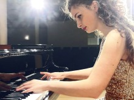
06.03.2022, 11 UHR, KONZERT
HUIJING HAN
Sämtliche Walzer von Frédéric Chopin
HUIJING HAN
Eintritt € 15
Karten sind erhältliich an der Abendkasse. Es wird um Reservierung gebeten unter info@esmh.de oder telefonisch unter 02331 /3060066
HINWEIS zu den aktuellen Corona-Bedingungen: Einlass nur mit Nachweis von zwei Impfungen + Testung (2G+) bzw. dreifach-Impfung (Booster) jeweils in Verbindung mit gültigem Personalausweis.
03.02.2022, 18.00 UHR, KONZERT
SOLEIL NIKLASSON QUARTETT
THE VOICE OF CHICAGO
Die amerikanische Jazzsängerin Soleil Niklasson ist Musikerin mit Leib und Seele. Sie ist in Chicago geboren und in Los Angeles aufgewachsen. Soleil begann schon sehr früh zu singen und gewann in Zusammenarbeit mit Oscar Brown Jr. Einen Emmy. Im weiteren Verlauf ihrer Karriere stand sie mit Musikern wie Udo Lindenberg, Billy Preston, Rod Stewart und Stan Getz auf der Bühne. Ihre musikalische Kreativität wurzelt in einem Gemisch aus Jazz, R&B, Soul und Latin.
SOLEIL NIKLASSON QUARTETT
THE VOICE OF CHICAGO
Mittlerweile in Bonn lebend, hat sie sich einen festen Platz in der deutschen Jazzszene ersungen und mit spielt mit namhaften Musikern. Ihr Repertoire reicht von klassischen Standards des American Songbook über einfühlsame Balladen hin zu Soul mit Gänsehautgarantie.
Soleil ist eine spirituelle, temperamentvolle Sängerin, die es vermag, mit ihrer hinreißenden Stimme das Publikum in ihren Bann zu ziehen. Der Unnaer Musiker Uli Bär am Kontrabass, Andreas Griefingholt aus Köln und Sven Bergmann aus Hagen komplettieren das exzellent besetzte Quartett
Eintritt frei
Anmeldung ist erforderlich unter info@esmh.de oder Telefon 0 23 31 / 30 60 066
HINWEIS zu den aktuellen Corona-Bedingungen: Einlass nur mit Nachweis von zwei Impfungen + Testung (2G+) bzw. dreifach-Impfung (Booster) jeweils in Verbindung mit gültigem Personalausweis.
26.12.2021, 18.00 UHR, KONZERT
ABGESAGT
Klassik und Jazz im ESM
Weihnachtstango
ABGESAGT
Tango Ensemble Contrabajando
Die vier Jahreszeiten von Buenos Aires – CD Präsentation
Das Jahr 2021 ist Piazzolla-Jahr, denn 2021 wäre der Vater des Tango Nuevo 100 Jahre alt geworden.
Das international besetzte Tango Ensemble Contrabajando um die Cellistin Felicitas Stephan feiert den 100. Geburtstag des argentinischen Tango-Königs und lässt die Zuhörer eintauchen in den musikalischen Kosmos des bekennenden Jazz- und Bach-Fans Astor Piazzolla: in die Sehnsucht, die Fröhlichkeit, die Eleganz, den Witz und die Virtuosität des Tango Nuevo.
Das Tango-Quintett begeistert mit Spielfreude, Leidenschaft, Emotionen, Kreativität und tiefgründigen Melodien unabhängig von stilistischem Schubladendenken und bezaubert sein Publikum mit einem mitreißenden Programm, das nach Argentinien und in die Hafenkneipen von Buenos Aires führt, von wo der Tango seinen Siegeszug um die Welt antrat.
Seine Heimatstadt Buenos Aires inspirierte Astor Piazzolla zeit seines Lebens und so fasst Piazzolla auch in seinen „Vier Jahreszeiten von Buenos Aires“ das moderne Leben in der Großstadt Buenos Aires, deren Bewohner sich "Porteños" nennen, in Töne.
Was den Stil jener argentinischen Jahreszeiten betrifft, so ist er geprägt von den Klängen des Tangos und des Jazz, von durchaus neutönenden aggressiven Klängen und einer fast bedrohlichen Dramatik, wie sie für Piazzolla typisch sind.
Im Tango Ensemble Contrabajando haben sich fünf leidenschaftliche Musiker*innen zusammengefunden, die auf die Musik Piazzollas eingeschworen sind und mit viel Spielfreude die unterschiedlichen rhythmischen, harmonischen und klanglichen Facetten seiner Werke differenziert zum Schwingen bringen. Die Melancholie von Piazzollas Tango, die pulsierende Energie und die gefühlvolle Eleganz der „Tango Pasión“ macht das Quintett unmittelbar spürbar.
Die Cellistin Felicitas Stephan ist die künstlerische Leiterin des weltweit größten Cellofestivals „Celloherbst am Hellweg“. Traurig sanft, aber auch bestimmend deutlich lässt sie ihr Cello singen.
Sie entlockt ihrem Instrument wunderbare Kantilenen und verleiht damit dem Grundtenor des Tango Nuevo die Dimension und Ausdruckskraft der menschlichen Stimme, das ist einfach großartig. (nrwjazz.net Januar 2020)
Die aus Finnland stammende Akkordeonistin Heidi Luosujärvi vermag es, die dem Tango innewohnende Ambivalenz der Gefühle eindrucksvoll zu vermitteln. Ihr Akkordeon kann frohlocken und jubeln, aber auch wehmütig klagen. Heidi Luosujärvi ist mehrfache Preisträgerin internationaler Wettbewerbe und konzertiert weltweit.
Der Gitarrist Andreas Heuser gilt als einer der wichtigsten deutschen „Weltmusiker“, er ist bekannt als ein musikalischer Brückenbauer zwischen unterschiedlichen Musikkulturen und Stilen. Seit 2003 leitet er das multikulturelle Transorient Orchester, mit dem er 2017 WDR-Jazzpreisträger wurde.
Der einem breiten Publikum durch das Festival „Take5 Jazz am Hellweg“ bekannte Kontrabassist Uli Bär sorgt für ein rhythmusgebendes solides Fundament, zeigt aber auch, dass er seinen Kontrabass überzeugend solistisch spielen kann.
Die russische Pianistin Anna Polomoshnykh studierte an der "Gnesin" Musikhochschule in Moskau und ergänzte ihre klassische Ausbildung mit einem Studium der Jazz-Improvisation. Inzwischen in Deutschland beheimatet, ist sie international gefragt als Liedbegleiterin und Kammermusikerin.
Mit seiner interessanten Besetzung bildet das Ensemble Contrabajando eine Ausnahme in der Ensemble-Landschaft. Eine emotionsbetonte Bereicherung der Musik sollte es von Anfang an sein. Begleiten Sie die Musiker auf ihrer Reise nach Argentinien mit Piazzollas Musik und erleben Sie, wie das Ensemble Contrabajando „Die vier Jahreszeiten von Buenos Aires“ von Astor Piazzolla aufführt.
Eintritt € 20,-
Anmeldung ist erforderlich unter info@esmh.de oder Telefon 0 23 31 / 30 60 066
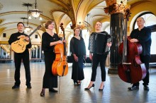
19.11.2021, 11.30 UHR, KONZERT
KAMMERKONZERT DES ORCHESTERS HAGEN
Ballo di Mantova - Musik und Tans aus Neapel und Palermo
KAMMERKONZERT DES ORCHESTERS HAGEN
Werke von Scarlatti, Pergolesi, Guido, Falconiero und Pistocchi
gespielt von
- Barockvioline: Magdalena Rozanska
- Barockoboe: Rebecca Bröckel
- Altblockflöte: Inga Vollmer
- Barockcello: Thorid Brandt-Weigand
- Cembalo: Georg Hellebrandt
- Viola: Miachel Lauxmann
- Violoncello: Katrin Geelvink
Weitere Informationen unter https://www.theaterhagen.de
09.12.2021, 18.00 UHR, KONZERT
KLASSIK + JAZZ IM ESM
SÜDITALIENISCHER JAZZ
Maurizio di Fulvio Quartett
KLASSIK + JAZZ IM ESM
SÜDITALIENISCHER JAZZ
Das Quartett um den weltweit agierenden Gitarristen Maurizio di Fulvio aus Pescara (Italien) und den sizilianischen Trompeter Gregorio Mangano aus Palermo präsentiert klangvollen italienischen Jazz. Doch auch unbekannte Kompositionen aus Ihrer süditalienischen Heimat haben die beiden italienischen Musiker im Reisegepäck.
Ein Abend mit dem weltweit agierenden Gitarristen Maurizio di Fulvio aus dem tiefen Süden Italiens, di Fulvio stammt aus Pescara, ist ein spannender Jazzabend mit süditalienischem Temperament. Seine Aufführungen gelten als temperamentvoll und energisch, raffiniert und verziert, immer zwischen Tradition und Innovation schwebend. Auf seiner künstlerischen Reise kommen schwarzer Jazz, Latin Jazz, Rock, Schattierungen des Klassikers und die Sensibilitäten eines Interpreten zusammen, der eine solide Technik mit einer ausgeprägten kompositorischen Ader vereint.
In dem sizilianischen Trompeter Gregorio Mangano hat di Fulvio einen Gleichgesinnten gefunden. Klassisch ausgebildet am Musikkonservatorium von Palermo, spielte Mangano zunächst im Orchester des „Teatro Massimo di Palermo, bevor er sich dem Jazz und der Musikimprovisation zuwandte.
Das Publikum ist eingeladen, neue Musik zu hören, eine Musik, die offen und freundlich ist, sich fern von Akademismus hält, in der Gegenwart steht und eine starke Verbindung zur Vergangenheit aufrechterhält.
Eintritt frei
Wir bitten Corona-bedingt um Reservierung mit Angabe des Namens, der Anschrift und Telefonnummer unter info@esmh.de
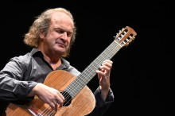
02.12.2021, 18.00 UHR, KONZERT
KLASSIK + JAZZ IM ESM
I LOVE PARIS
Nina Dahlmann Quartett
KLASSIK + JAZZ IM ESM
I LOVE PARIS
Mit seinem Programm „I love Paris“ verzaubert das Quartett der jungen Sängerin Nina Dahlmann das Publikum mit einer besonderen Auswahl der Jazzgeschichte aus Frankreich. Die vier Musiker haben die schönsten Chanson und Jazzstandards aus Frankreich und Paris im Reisegepäck. Die Inspiration für ihr aktuelles Programm „I love Paris“ nach einem Song von Cole Porter hatte Nina Dahlmann bei ihrem letzten Besuch in Paris.
„Paris inspiriert mich einfach immer wieder aufs Neue und gibt mir musikalische Anregungen zu innovativen Jazzimprovisationen.“
Die junge Sängerin gilt in Fachkreisen als Ausnahmetalent. In zahlreichen Konzerten und auf Festivals hat sie sich in den letzten Jahren bereits einen eindrucksvollen Ruf erworben. Auf dem Take 5 Jazzfestival ist Nina Dahlmann ein gern gesehener Gast.
Nina Dahlmann studierte Jazz Performing Arts an der Musikhochschule Osnabrück bei Romy Camerun, nach einem Studienaufenthalt am Conservatoire de Musique in Lyon/Frankreich bei Jérôme Duvivier setzt sie aktuell ihre musikalische Ausbildung in Jazzgesang an der Folkwang Universität der Künste bei Romy Camerun fort.
Nina Dahlmann hat für ihr Programm „I love Paris“ interessante Musiker eingeladen, die alle entlang des Hellwegs leben und arbeiten: das sind der Pianist Sven Bergmann, der Kontrabassist Uli Bär und Martin Siehoff am Schlagzeug Das Trio hat sich zur Aufgabe gemacht, die Traditionslinie des Hardbop in der Tradition von Kenny Barron weiterzuführen. Die Musik dieses hervorragend aufeinander eingespielten Trios bringt die Leidenschaft dreier Musiker zum Ausdruck, die sich mit Herz und Seele dem Jazz verschrieben haben. Die Klänge, die sie ihren Instrumenten entlocken, entführen das Publikum in eine imaginäre Welt, die die Leichtigkeit des Seins widerspiegelt. Die drei Musiker um Sven Bergmann gehören zu den modernen, lyrisch und rhythmischen spielenden Jazztrios.
An diesem Abend präsentieren die drei exzellenten Musiker gemeinsam mit Nina Dahlmann eine Auswahl an französischen Jazzstandards und Chansons und nehmen ihre Zuhörer mit in einen Kurzurlaub nach Frankreich, in das Land der Liebe und des savoir-vivre.
Eintritt frei
Wir bitten Corona-bedingt um Reservierung mit Angabe des Namens, der Anschrift und Telefonnummer unter info@esmh.de
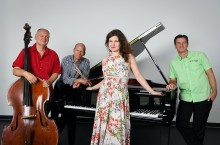
06.10.2021, 18 - 20 UHR, VERNISAGGE ZUM WORKSHOP
"MENSCH SEIN, KREATIV SEIN" - MUSIK KREIS IMPROVISATION
Eintritt frei
"MENSCH SEIN, KREATIV SEIN" - MUSIK KREIS IMPROVISATION
Wir bitten um Anmeldung mit Angabe des Namens, der Anschrift und Telefonnummer unter Sara.walmsley@stadt-hagen.de
25.11.2021, 18.00 UHR, KONZERT
ABGESAGT
Klassik + Jazz im ESM
Concerto Italiano
ABGESAGT
Duo Novalis
Ein hochkarätiger Kammermusikabend erwartet die Zuhörer im Emil Schumacher Museum in Hagen mit dem Duo Novalis aus Italien – Frieder Berthold (Violoncello) und Margherita Santi (Klavier).
Seit seiner Gründung hat das Duo zahlreiche Konzerte gegeben, die vom Publikum ebenso wie von der Kritik (Corriere della Sera, Arena di Verona, Corriere della Sera, WAZ, FAZ, HNA, Das Orchester, CD-Classica etc.) mit Begeisterung aufgenommen wurden. Es ist regelmäßiger Gast vieler internationaler Musikfestivals in Deutschland, Österreich, der Schweiz, Italien, Russland, Japan und Korea.
Ihre Ausbildung haben die Mitglieder an renommierten Instituten, so z. B. den Musikhochschulen in Köln und Detmold, den Konservatorien von Mailand, Moskau, der Indiana University/Bloomington sowie beim Amadeus Quartett, Borodin Quartett, Orlando Quartett und dem Bartok Quartett erhalten.
Dabei sind die Musiker vor allem durch die Zusammenarbeit mit dem legendären Amadeus Quartett geprägt worden und setzen diese Tradition des bedingungslos auf den richtigen musikalischen Ausdruck bedachten Kammermusikspiels fort.
24.11.2021, 18 - 20 UHR, WORKSHOP (6 VON 6)
"MENSCH SEIN, KREATIV SEIN" - MUSIK KREIS IMPROVISATION
Neue Musik: ein improvisiertes Stück
"MENSCH SEIN, KREATIV SEIN" - MUSIK KREIS IMPROVISATION
Wir legen alle unsere Ideen fest, sodass wir sie nicht verlieren!!
Eintritt frei
Wir bitten um Anmeldung mit Angabe des Namens, der Anschrift und Telefonnummer unter Sara.walmsley@stadt-hagen.de
10.11.2021, 18 - 20 UHR, WORKSHOP (5 VON 6)
"MENSCH SEIN, KREATIV SEIN" - MUSIK KREIS IMPROVISATION
Musikalische Ideen: Farbe, Klang, Rhythmus und Energie
"MENSCH SEIN, KREATIV SEIN" - MUSIK KREIS IMPROVISATION
In dieser Werkstatt kommen drei Musiker*innen des Philharmonischen Orchesters Hagen, um mit uns zu musizieren und unseren musikalischen Ideen Leben einzuhauchen. Die Klangwelten des Schlagzeugs, des Cellos und des Klaviers bereichern unser Farbpalletten, mit denen unsere improvisierten Stücke eine neue Gestalt finden.
Weitere Termine des Workshops:
24.11.
Vernissage: 26.11.
Eintritt frei
Wir bitten um Anmeldung mit Angabe des Namens, der Anschrift und Telefonnummer unter Sara.walmsley@stadt-hagen.de
07.11.2021, 11.30 UHR, KONZERT
KAMMERKONZERT DES ORCHESTERS HAGEN
Streichquartett von Ludwig van Beethoven
KAMMERKONZERT DES ORCHESTERS HAGEN
gespielt von
- Violine: Ilzoo Park, Yutaka Shimoda
- Viola: Miachel Lauxmann
- Violoncello: Katrin Geelvink
Weitere Informationen unter https://www.theaterhagen.de
04.11.2021, 18.00 UHR, KONZERT
KLASSIK + JAZZ IM ESM
IN MEMORY OF ART BLAKEY
Blue Note Jazz Ensemble
KLASSIK + JAZZ IM ESM
IN MEMORY OF ART BLAKEY
Das Blue Note Jazz Ensemble setzt sich zusammen aus internationalen Musikern wie dem italienischen Pianisten Igor Iabichino und dem Schlagzeuger Enzo Cioffi aus Sanremo sowie regionalen Musikern wie Patrick Porsch aus Soest am Saxophon, dem jungen Posaunisten Jona Böbel aus Holzwickede sowie Uli Bär aus Unna am Kontrabass. Allen gemeinsam ist die Liebe zum Jazz und zu eigenen Kompositionen.
Der Trompeter Dmitrij Telmanov steht an diesem Abend mit seinen Kompositionen Im Mittelpunkt. Dmitrij Telmanov (Trompete und Flügelhorn) trifft perfekt den Nerv der Musik: virtuos kraftvoll und zugleich warm und samtig spielt er meisterhaft mit der Ausdruckspalette des Cool Jazz. Seine Interpretationen sind genial und reißen mit. Dabei kopiert Telmanov jedoch nicht, sondern zeigt mit seinem Erfindungsreichtum als Komponist eine ganz und gar eigenständige, exzellente Musikerpersönlichkeit.
Der aus der Ukraine stammende und seit vielen Jahren in Deutschland beheimatete Trompetenvirtuose bekam eine klassische Ausbildung am staatlichen Konservatorium Odessa und absolvierte danach ein Jazz-Studium an der Folkwang Universität Essen. Zahlreiche Künstler der internationalen Jazz-Szene wurden bereits auf ihn aufmerksam. Künstler wie David Friedman, Norma Winston, Matz Mutzke, Peter Kraus, aber auch das Roncalli Royal Orchestra arbeiten gerne mit Dmitrij Telmanov zusammen. Er ist regelmäßig auf Jazz-Festivals wie dem überregional bekannten „Take5 Jazz am Hellweg“ zu Gast und gern gesehenes Mitglied bei unterschiedlichen Jazz-Formationen wie dem East West Quartett, dem Tropical Turn Quartett, dem Acoustic Jazz Quartett und dem Soleil Niklasson Quartett.
Eintritt frei
Wir bitten Corona-bedingt um Reservierung mit Angabe des Namens, der Anschrift und Telefonnummer unter info@esmh.de
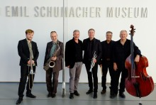
03.11.2021, 18 - 20 UHR, WORKSHOP (4 VON 6)
"MENSCH SEIN, KREATIV SEIN" - MUSIK KREIS IMPROVISATION
Musizierende Menschen: die Kunst der Improvisation
"MENSCH SEIN, KREATIV SEIN" - MUSIK KREIS IMPROVISATION
Wir reden jeden Tag miteinander und erachten es nicht als etwas Sonderbares. Musik in Bezug auf Improvisation ist nichts Anderes. Zusammen bauen wir mit Neugier etwas Musikalisches auf!
Weitere Termine des Workshops:
10.11.
24.11.
Vernissage: 26.11.
Eintritt frei
Wir bitten um Anmeldung mit Angabe des Namens, der Anschrift und Telefonnummer unter Sara.walmsley@stadt-hagen.de
28.10.2021, 18.00 UHR, KONZERT
KLASSIK + JAZZ IM ESM
KLASSIK MEETS JAZZ
Edoardo Bruni - Piano Solo
KLASSIK + JAZZ IM ESM
KLASSIK MEETS JAZZ
Einen ganz besonderen Reiz gewinnen Konzertabende, wenn Interpreten mit eigenen Werken hervortreten und so erfrischend moderne Repertoire-Impulse geben.
Edoardo Bruni ist Pianist und Komponist und absolvierte neben seiner musikpraktischen Ausbildung auch philosophische Studien. Darüber hinaus ist er promovierter Musikwissenschaftler – ein echtes Multitalent also, dessen künstlerische Souveränität hörbar auf vielen Fundamenten ruht.
Seine Kompositionen werden sowohl in Italien als auch in Europa in bereits über 150 Konzerten aufgeführt. Der klassisch ausgebildete Konzertpianist und Komponist Edoardo Bruni ist ein Grenzgänger zwischen Klassik und Jazz.
Er absolvierte das Klavierdiplom mit Auszeichnung an den Konservatorien von Trient und Rotterdam und bildete sich bei Cohen, Berman, Delle Vigne, Schiff, Margarius fort. Er konzertiert als Solist in Italien und ganz Europa und widmet sich zudem der Kammermusik: Er spielt mit der Pianistin Monique Ciola, dem Harmonikaspieler Santo Albertini und dem Jazz-Ensemble “Garnerama”. Er trat auch in renommierten Konzertreihen neben Künstlern wie Yo Yo Ma, Canino, Pogorelich, Bollani, Bahrami und Campanella auf. Das Kompositions-Diplom absolvierte er mit Auszeichnung am Konservatorium Trient und bildete sich bei Mullenbach, Corghi und Bacalov fort. Seine eigenen Kompositionen wurden sowohl in Italien als auch in Europa in über 200 Konzerten aufgeführt. Er schloss sein Studium an der Universität Padua mit dem Diplom für Philosophie ab und schrieb seine Doktorarbeit über Musikwissenschaft an den Universitäten Trient und Paris 4 - Sorbonne. Er unterrichtete an den Konservatorien in Verona, Padua, Trient, Siena, Frosinone, Riva del Garda, Darfo. Derzeit lehrt er am Konservatorium von Vicenza. Er ist künstlerischer Leiter verschiedener Musikfestivals, darunter “I martedì a casa Raphael” und “GiudiJazz”.
Eintritt frei
Wir bitten Corona-bedingt um Reservierung mit Angabe des Namens, der Anschrift und Telefonnummer unter info@esmh.de
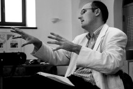
24.10.2021, 11.30 UHR, KONZERT (3 VON 3)
VON FERN UND NAH
ETWAS ALTES, ETWAS NEUES
FANNY KLOEVEKORN, Oboe
VON FERN UND NAH
ETWAS ALTES, ETWAS NEUES
AMY TARANTINO-TRAFTON, Klavier
MUSIK VON:
FRANCIS POULENC
JOSEPH TRAFTON
ANTONIO PASCULLI
ROBERT SCHUMANN
Bereits im Alter von sieben Jahren begann Fanny Kloevekorn mit dem Oboenspiel. Als Jugendliche nahm sie regelmäßig an Wettbewerben teil, u.a. „Jugend musiziert“, wo sie sich zahlreiche Preise erspielte wie 2004 einen 1. Bundespreis. Während ihres Bachelorstudiums an der Musikhochschule Lübeck wurde sie als Stipendiatin der Stiftungen „Yehudi Menuhin-Live Music Now“ und „Oscar-Vera-Ritter“ aufgenommen. Darüber hinaus hat sie zwei Semester am „Conservatoire national supérieur de musique et de danse de Lyon“ verbracht. Ihren Master of Music hat sie 2015 an der Hochschule für Musik „Franz Liszt“ in Weimar abgeschlossen. Fanny Kloeverkorn hat als Solo-Oboistin des Schleswig-Holsteinischen Landestheaters und Sinfonieorchesters sowie der Estonian National Opera gespielt. Derzeit ist sie Solo-Oboistin des Philharmonischen Orchesters Hagen.
Eintritt € 18
Karten sind erhältliich in der Buchhandlung am Rathaus, Tel. 02331/32689
Download: Flyer Von Fern und Nah - Amy Tarantino-Trafton und Gäste
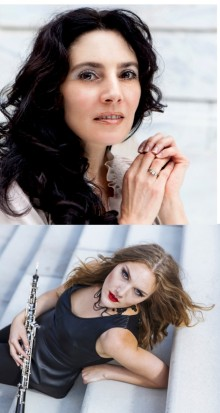
20.10.2021, 18 - 20 UHR, WORKSHOP (3 VON 6)
"MENSCH SEIN, KREATIV SEIN" - MUSIK KREIS IMPROVISATION
Rhythmus als Kommunikation: ein musikalisches Gespräch führen
"MENSCH SEIN, KREATIV SEIN" - MUSIK KREIS IMPROVISATION
Reden und Stille. Sagen und Zuhören. Wir suchen einen Weg miteinander zu kommunizieren, der uns Spaß macht!
Weitere Termine des Workshops:
3.11.
10.11.
24.11.
Vernissage: 26.11.
Eintritt frei
Wir bitten um Anmeldung mit Angabe des Namens, der Anschrift und Telefonnummer unter Sara.walmsley@stadt-hagen.de
17.10.2021, 11.30 UHR, KONZERT
KAMMERKONZERT DES ORCHESTERS HAGEN
Stefan Heucke: Konsonanzenquartett op. 107
KAMMERKONZERT DES ORCHESTERS HAGEN
Wolfgang Amadeus Mozart: Dissonanzenquartett KV 465
gespielt vom Nodelmann Quartett
- Violine: Mischa Nodelmann/Evgeny Selitsky
- Viola: Andreas Kosinski
- Violoncello: Mark Mefsut
Weitere Informationen unter https://www.theaterhagen.de
14.10.2021, 18 UHR, KONZERT
HUIJING HAN
Klaviersonate in Es-Dur Op. 31 Nr. 3 "La chase"
HUIJING HAN
Klaviersonate in As-Durl Op. 110
Klaviersonate in c-Moll Op. 13 "Pathétique"
Eintritt € 15
Karten sind erhältliich in der Buchhandlung am Rathaus, Tel. 02331/32689
13.10.2021, 18 - 20 UHR, WORKSHOP (2 VON 6)
"MENSCH SEIN, KREATIV SEIN" - MUSIK KREIS IMPROVISATION
Farbe als Klänge: musikalische Bausteine entstehen
"MENSCH SEIN, KREATIV SEIN" - MUSIK KREIS IMPROVISATION
Spielerisch umgehen mit das, was es bedeutet zu musizieren, wobei es für alle verschiedene Ausgangspunkte gibt.
Weitere Termine des Workshops:
20.10.
3.11.
10.11.
24.11.
Vernissage: 26.11.
Eintritt frei
Wir bitten um Anmeldung mit Angabe des Namens, der Anschrift und Telefonnummer unter Sara.walmsley@stadt-hagen.de
06.10.2021, 18 - 20 UHR, WORKSHOP (1 VON 6)
"MENSCH SEIN, KREATIV SEIN" - MUSIK KREIS IMPROVISATION
Am Anfang!
"MENSCH SEIN, KREATIV SEIN" - MUSIK KREIS IMPROVISATION
Eine Einführung zu dem Projekt – die Farben von Emil Schumacher-Gemälden als Impuls für eine Improvisation im Musikkreis. Der Ansatz für das Projekt sind spielerisch musikalische Übungen und Aktivitäten, die uns in die Welt der improvisierenden Musik führen. Ein sehr offener Prozess, der aus unserer Gemeinsamkeit organisch entstehen wird, wo wir alle einen passenden Platz ohne Leistungsstress finden können.
Weitere Termine des Workshops:
13.10
20.10.
3.11.
10.11.
24.11.
Vernissage: 26.11.
Eintritt frei
Wir bitten um Anmeldung mit Angabe des Namens, der Anschrift und Telefonnummer unter Sara.walmsley@stadt-hagen.de
01.10.2021, 19.00 UHR, KINO
"SEE, LISTEN, KNOW ... ME
"See, Listen, Know…Me" ist ein digitaler Tanz- und Dokumentarfilm. Es ist ein künstlerischer und doch intimer Blick auf die Meinungsfreiheit. Durch Interviews mit verschiedenen Menschen mit einer großen Bandbreite von persönlichen Hintergründen und nicht zuletzt durch die Linse von LGBTQ+ und ihren heterosexuellen Verbündeten enthält der Film Gedanken und Ideen der Interviewpartner mit Passagen in Gestik, Ballett und zeitgenössischem Tanz. Die musikalische Untermalung ist ein Pop/Hip-Hop-Vibe des amerikanischen Musikproduzenten und Toningenieurs RiotOnTheBeat mit verspielten und rhythmischen Texten des Pan/Trans-Duos Partna Universal.
"SEE, LISTEN, KNOW ... ME
Laufzeit des Films: 34 Minuten
Choreografie:
Bobby Briscoe mit
Sara Peña
mit Improvisationen von:
Azizé Flittner
Thäddeus Maria Jungmann
Tänzer*innen:
(Ensemblemitglieder des Ballett Hagen am Theater Hagen, Deutschland)
Noemi Emanuela Martone (Italy)
Amber Neumann (USA)
Alexandre Demont (France)
Antonio Moio (Italy)
Sara Peña (Spain)
Musik:
Loréana Briscoe - Rap Artist, USA
Mickey Gonz - Rap Artist, USA
RiotOnTheBeat - Music Produzent / Tontechniker, USA
Bobby Briscoe - Music creator, USA
Film Team:
Péter Dániel Matkaicsek (Ungarn)
Leszek Januszewski (Polen)
Der Choreograph und Filmemacher sowie die Ko-Choreografin Sara Peña und zahlreiche Beteiligte am Filmprojekt werden bei der Premiere anwesend sein.
Eintritt frei
Wir bitten Corona-bedingt um Reservierung mit Angabe des Namens, der Anschrift und Telefonnummer unter info@esmh.de
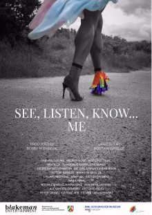
30.09.2021, 18.00 UHR, KONZERT
KLASSIK + JAZZ IM ESM
KLANGLICHE ERMITTLUNGEN
VON ARGENTINIEN ÜBER PARIS NACH DEUTSCHLAND
Stefan Bauer (Vibes/Marimba) & Michael Heupel (Flöten)
KLASSIK + JAZZ IM ESM
KLANGLICHE ERMITTLUNGEN
VON ARGENTINIEN ÜBER PARIS NACH DEUTSCHLAND
Das Duo als kleinste kommunikative und intime Besetzung stellt für Stefan Bauer und Michael Heupel eine besondere Herausforderung dar.
Beide Musiker haben die Welt bereist und Eindrücke verschiedener Kulturen in ihre Spielweise und ihr „musikalisches Denken“ einfliessen lassen. Ihnen ist eine unstillbare Neugier sowie Offenheit für Unvorhergesehenes (eigentlich Unerhörtes oder Unvorhergehörtes) zu eigen. Wenn dann noch in Konzerten das Publikum als aktive Kraft hinzukommt, macht es ihnen besondere Freude Neuland zu betreten und Klangwelten gemeinsam zu erforschen.
Flöte und Marimba haben ihre traditionellen Pendants in vielen Ländern Afrikas, wo die verschiedensten Flöten, sowie die`Ahnen´der Marimba in Form von Balafonen und diversen Schlitztrommeln vorkommen.
Bei einer Afrika Tournee im Auftrag des Goetheinstitutes wurde so die Brücke zum Publikum schon allein durch die Instrumentierung geschlagen. Als dann noch in der Zusammenarbeit mit den einheimischen Balafon- und Gyil-Meistern Aly Keïta (Elfenbeinküste) und Bernhard Woma (Ghana) afrikanische und europäische Musikkulturen aufeinandertrafen, geriet das Publikum außer Rand und Band. Ähnliche Reaktionen gab es während eines Auftritts beim Vibraphonissimo Festival in Fürth im Januar 2020. Teile eines Mitschnitts des Bayrischen Rundfunks dort werden zur Grundlage einer Audio-Veröffentlichung des Duos, die Anfang nächsten Jahres erwartet wird.
Besonders solche Erfahrungen haben Bauer und Heupel in ihrer Ansicht bestärkt, dass Musik keine Grenzen kennt. Improvisation steht für beide im Vordergrund. Als Basis dienen Bauers Kompositionen und Heupels Improvisationsvorlagen.
Obwohl die beiden schon über einen langen Zeitraum miteinander musizieren haben sie sich die Frische der Erstbegegnung bewahrt.
Eintritt frei
Wir bitten Corona-bedingt um Reservierung mit Angabe des Namens, der Anschrift und Telefonnummer unter info@esmh.de
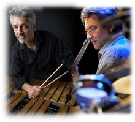
23.09.2021, 18 UHR, KONZERT (2 VON 3)
VON FERN UND NAH
ZEIT UND REISE
DIMITRI ASHKENAZY, Klarinette
VON FERN UND NAH
ZEIT UND REISE
NADJA NEVOLOVITSCH, Bratsche
AMY TARANTINO-TRAFTON, Klavier
Musik von:
DENNIS KAM
CAMILLE SAINT-SAENS MAX BRUCH
ISTVÁN HADJU
Der aus Island stammende Klarinettist Dimitri Ashkenazy lebt seit seiner Kindheit in der Schweiz. Mit sechs Jahren erhielt er Musikunterricht am Klavier und wechselte später zur Klarinette. Nach Abschluss des Studiums am Konservatorium Luzern war er Mitglied des Schweizer Jugendsinfonieorchesters sowie des Gustav Mahler Jugendorchesters. Seit 1991 führt Ashkenazy eine rege Konzerttätigkeit in berühmte Konzertsäle und Festivals in den USA, Australien, Europa und Asien. Daneben hat er an zahlreichen CD-, Radio- und Fernsehproduktionen mitgewirkt und ist international als Gastdozent für Meisterkurse sehr gefragt.
Die deutsch-russische Violinistin Nadja Nevolovitsch wurde in St. Petersburg geboren. Schon mit elf Jahren gab sie dort ihr Debüt am Staatlichen Symphonie Orchester. Nach dem Master-Studium am Königlichen Konservatorium in Brüssel legte Nevolovitsch an der Hochschule für Musik und Theater Rostock das Konzertexamen ab und ist Preisträgerin zahlreicher internationaler Wettbewerbe in Europa und Japan. Seit 2017 Konzertmeisterin bei den Brüsseler Philharmonikern, wird sie ab Oktober 2021 als Professorin an der Hochschule für Musik und Tanz in Köln lehren.
Eintritt € 18
Karten sind erhältliich in der Buchhandlung am Rathaus, Tel. 02331/32689
Download: Flyer Von Fern und Nah - Amy Tarantino-Trafton und Gäste
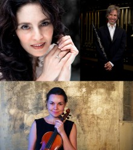
20. - 27. SEPTEMBER 20221
SUKKOT XXL
1700 Jahre jüdisches Leben in Deutschland
SUKKOT XXL
Im Foyer des Kunstquartiers Hagen ist eine Sukka (Laubhütte) zum jüdischen Fest Sukkot aufgebaut. Zu dem kleinen und feinen Begleitprogramm lädt die Gesellschaft für Christlich-Jüdische Zusammenarbeit Hagen und Umgebung e.V. Sie herzlich ein.
Sukkot ist ein Erntedankfest und erinnert an den Auszug des Volkes Israel aus Ägypten. Die Laubhütte symbolisiert die provisorischen Behausungen der Jüdinnen und Juden während seiner vierzigjährigen Wanderung durch die Wüste.
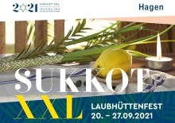
21.09.2021, 15.00 UHR
KONFIRMANDEN SCHMÜCKEN JÜDISCHE LAUBHÜTTE
50 Konfirmanden der Kirchengemeinde Hagen schmücken gemeinsam mit Gemeinsam mit Pfarrer Jürgen Schäfer von der Kirchengemeinde Hagen-Haspe die Hagener Sukka.
KONFIRMANDEN SCHMÜCKEN JÜDISCHE LAUBHÜTTE
22.09.2021, 19.00 UHR
ZUM SUKKOT-FEST MIT DEM KLEZMERTRIO "LIORA"
Festprogramm:
ZUM SUKKOT-FEST MIT DEM KLEZMERTRIO "LIORA"
– Klezmergruppe "Liora"
– Filmvorführung über das Laubhüttenfest in einer jüdischen Gemeinde
Mit einem kleinen Imbiss aus der jüdischen Küche.
18.09.21, 20 UHR, KONZERT
KLAVIER FESTIVAL RUHR
A Bu
KLAVIER FESTIVAL RUHR
„A Bu ist der erste chinesische Jazzpianist der international bekannt wird. Er erzählt Geschichten am Klavier“, meinte Michel Camilo, Preisträger des Klavier-Festivals 2019, als er das Ausnahmetalent aus Peking zum Stipendiaten des diesjährigen Festivals bestimmte. A Bu heißt eigentlich Dai Liang, ist Jahrgang 1999 und wurde mit gerade mal 13 Jahren bei einem Festival in Peking entdeckt. Da hatte er – parallel zur klassischen Klavierausbildung, die er bereits im Alter von vier Jahren begann – schon in Jamsessions Erfahrungen gesammelt, ein Trio gegründet, New York besucht. Einmal hatte Chick Corea ihn in Shanghai zum spontanen Duett auf die Bühne geholt. Mit 14 spielte er sein erstes Album ein („88 Tones of Black and White“), dann ging es Schlag auf Schlag: Zulassung zur renommierten New Yorker Juilliard School (2014), 1. Preis und Publikumspreis beim Solo-Klavierwettbewerb des Montreux-Jazzfestivals 2015, zweites Album („Butterflies Fly in Pairs“, 2015), Beteiligung an den repräsentativen All-Star Global Concerts zum International Jazz Day in Paris (2015), Havanna (2017) und Melbourne (2019). Heute lebt A Bu in New York und gastiert auf den Bühnen der Welt. Ein „vielversprechender junger Jazzlöwe“, so sein Mentor Michel Camilo über A Bu. Nun gibt er sein Debüt beim Klavier-Festival Ruhr.
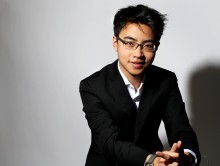
13.09.2021, 19.30 - 20.30 UHR, KONZERT
19 - 19.30 UHR EINFÜHRUNG UND WERKSTATTGESPRÄCH
LIEBE/TOD - MAN/WOMAN
Christiane Oleze, Sopran
19 - 19.30 UHR EINFÜHRUNG UND WERKSTATTGESPRÄCH
LIEBE/TOD - MAN/WOMAN
Jonathan Ware, Klavier
Gleichstellungsthematik mal ganz anders: Die Liedwelt Rheinland freut sich auf das Auftragswerk von Christoph Maria Wagner – zeitgenössische Musik gepaart mit Texten, wie sie das Leben schreibt. Sopranistin Christiane Oelze schlüpft dabei in unterschiedlichste Rollen – als hingebungsvolle Geliebte, sadistischer Macho, Betrogene oder Toter im Sarg.
Texte der protofeministischen Dichterin Anne Sexton treffen auf Charles Bukowskis sarkastische Gedichte. Bei Christiane Oelze und ihrem Klavierpartner Jonathan Ware ist der gut halbstündige Zyklus in den besten Händen.
Das Programm wird passend ergänzt durch Songs von Kurt Weill und Lieder von Francis Poulenc, die das Panorama zwischen vulgärer Direktheit und Melancholie weit aufspannen.
Eintritt € 18,- / € 12,- (erm. für Studenten)
Karten sind erhältliich unter 0221-9335000, 0170 1957580, per eMail sabine.krasemann@liedwelt-rheinland.de
Abendkasse € 20,-
Weitere Informationen unter liedwelt-rheinland.de/termine/3552/
09.09.2021, 18-20 UHR
POLITISCHER SALON HAGEN
Klimaneutraler Umbau der Wirtschaft
POLITISCHER SALON HAGEN
Der Politische Salon Hagen, welcher sich mit aktuellen politischen und gesellschaftlich relevanten Themen beschäftigt, geht in die nächste Runde.
Die weltweit bekannten Autoren Klaus Schwab und Thierrey Malleret sehen in ihrem Buch „Covid-19: Der große Umbruch“ die Coronakrise als Anlass, über die großen globalen Veränderungen von Ökonomie und Gesellschaft zu schreiben, die sich erst in der Krise deutlicher zeigen. Vielfältige Gefahren der aktuellen Entwicklung werden benannt, um für einen neuen Gesellschaftsvertrag zu werben und die internationalen Beziehungen auf ein neues, verantwortliches Niveau zu heben.
Zugleich nutzen sie das Momentum, um Kräfte für den radikalen ökologischen Umbau zu mobilisieren. Insbesondere das Verhältnis der Menschen und der Gesellschaften zur Natur müsse verändert werden, um die Umwelt zu erhalten. Wirtschaftskapitänen und Regierungen wird eine neue Verantwortungsethik abverlangt. Schwab und Malleret beanspruchen für sich, ihr Weg würde „uns in eine bessere Welt führen, eine integrativere, gerechtere und umweltfreundlichere Welt.“
Ein radikaler Vorschlag, der allerdings auch harte politische Debatten auslöst. Nicht nur die Eliten der Welt sind aufgefordert, sich damit zu befassen. In einer Demokratie sind alle Bürgerinnen und Bürger gefragt.
Buchpräsentation (Autoren: Klaus Schwab und Thierrey Malleret)
Andreas Meyer-Lauber
Podiumsteilnehmer:
Dr. Heino Buddenberg (C.D. Wälzholz GmbH)
Prof. Dr. Görge Deerberg (Fernuniversität Hagen)
Prof. Dr. Annete Töller(Fernuniverstätig Hagen)
Moderation:
Jens Helmecke (Westfalenpost)
Dr. Christian Kurrath (Fernuniversität)
Eintritt ist frei.
Anmeldung bitte unter www.fernuni.de/politischer-Salon
Der politische Salon ist eine Kooperation der Fernuniversität in Hagen, Theater Hagen und dem Emil Schumacher Museum
02.09.2021, 18.00 UHR, KONZERT
KLASSIK + JAZZ IM ESM
100 JAHRE ASTOR PIAZZOLLA
VON ARGENTINIEN ÜBER PARIS NACH DEUTSCHLAND
Felicitas Stephan, Violoncello (Opherdicke)
KLASSIK + JAZZ IM ESM
100 JAHRE ASTOR PIAZZOLLA
VON ARGENTINIEN ÜBER PARIS NACH DEUTSCHLAND
Bertrand Giraud, Klavier (Paris)
2021 ist das Astor-Piazzolla-Jahr, denn 2021 feiert der Vater des argentinischen Tango Nuevo seinen 100. Geburtstag.
In Paris studierte Piazzolla bei der berühmten Nadia Boulanger Komposition und Boulanger war es auch, die ihn überzeugte, sich ganz dem Tango zu widmen, denn nur das sei „der echte Piazzolla. Seine gesamte andere Musik könne er fortschmeißen!“
Der Geburtstag Astor Piazzollas war Anlass für die Cellistin Felicitas Stephan aus Opherdicke, den in Paris lebenden Pianisten Bertrand Giraud einzuladen, mit dem sie eine langjährige musikalische Freundschaft verbindet.
Das Programm der beiden Künstler wird sich um Piazzollas berühmten Grand Tango für Violoncello und Klavier ranken, den der Komponist dem legendären Cellisten Mstislav Rostropowitsch gewidmet hat. Die großangelegte Komposition verwirklicht wie kaum eine andere in meisterhafter Weise Piazzollas Anliegen, Elemente des Tangos mit solchen der klassischen Musik zu verknüpfen.
Ein Kammermusikabend mit Werken von Astor Piazzolla, Nadia Boulanger, Bloch und Brahms
Erleben Sie deutsch-französische Freundschaft auf der Bühne und freuen Sie sich auf zwei Ausnahmekünstler und Meister ihres Faches.
In Kooperation mit dem Kulturkreis der Unnaer Wirtschaft e.V.
Eintritt frei
Wir bitten Corona-bedingt um Reservierung mit Angabe des Namens, der Anschrift und Telefonnummer unter info@esmh.de
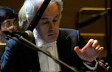
26.08.2021, 18 UHR, KONZERT
HUIJING HAN
SCHUBERT RECITAL
"Franz Schubert, der phantastische Maler, dessen Pinsel gleich tief vom Mondesstrahle wie von der Sonnenflamme getränkt war und der uns nach Beethovenschen neun Musen vielleicht eine zehnte geboren hätte."
HUIJING HAN
SCHUBERT RECITAL
(Robert Schumann)
Mit Intensität und Einühlsamkeit spielt Huijing Han ausgewählte Werke von Franz Schubert.
Klaviersonate in A-Dur Op. 120
Klaviersonate in A-Moll Op 143
Grätzer Walzer Op. 91
Impromptus Op. 90/3, Op 142/3 und Op. 90/2
Eintritt € 15
Karten sind erhältliich in der Buchhandlung am Rathaus, Tel. 02331/32689
22.08.2021, 11.30 UHR, KONZERT (1 VON 3)
VON FERN UND NAH
LIEDER DES LEBENS, DER LIEBE UND DER HINGABE
CRISTINA PICCARDI, Sopran
VON FERN UND NAH
LIEDER DES LEBENS, DER LIEBE UND DER HINGABE
ASTRID DEN DAAS, Klarinette
AMY TARANTINO-TRAFTON, Klavier
MUSIK VON:
GEORG FRIEDRICH HÄNDEL
ANTONÍN DVOŘÁK
FRANZ SCHUBERT
IGOR STRAWINSKY
Die Sopranistin Cristina Piccardi stammt aus Rio Grande do Sul, Brasilien. An der Federal University in ihrer Heimatstadt legte sie den Bachelor of Music ab. Mit einem Stipendium erhielt sie an der Duquesne University in Pennsylvania, USA, den Master of Music. Die beim Hagener Publikum besonders beliebte Sopranistin ist zweimalige Finalistin des Gesangswettbewerbs des Young Artist Programms der Lyric Opera of Chicago und seit 2016 zunächst als Gast und inzwischen als festes Ensemblemitglied am Theater Hagen.
Astrid den Daas erhielt mit neun Jahren den ersten Klarinettenunterricht. 2013 gewann sie einen nationalen 2. Preis beim Niederländischen „Prinses Christina“ Wettbewerb und tritt seither international mit großem Erfolg als Solistin auf. 2017 absolvierte sie ihr Bachelorstudium an der Hochschule für Musik in Detmold, wo sie sich aktuell auf ihren Master vorbereitet. Von 2017 bis 2020 war sie als stellvertretende Solo-Klarinettistin beim Philharmonischen Orchester Hagen tätig und spielt zurzeit als stellvertretende Solo- Klarinettistin bei den Bergischen Symphonikern.
Eintritt € 18
Karten sind erhältliich in der Buchhandlung am Rathaus, Tel. 02331/32689
Download: Flyer Von Fern und Nah - Amy Tarantino-Trafton und Gäste
19.08.2021, 18.00 UHR, KONZERT
KLASSIK + JAZZ IM ESM
EIN SÜDAMERIKANISCHER TRAUM - MUSIKPERLEN FÜR VIOLONCELLO UND GITARRE
Duo Casals
KLASSIK + JAZZ IM ESM
EIN SÜDAMERIKANISCHER TRAUM - MUSIKPERLEN FÜR VIOLONCELLO UND GITARRE
Felicitas Stephan & Juan Carlos Arancibia Navarro
Es ist ein besonders faszinierendes Konzerterlebnis, das mit seinem Klangfarbenspektrum in der Kammermusik seinesgleichen sucht.
Die deutsche Cellistin Felicitas Stephan und der peruanische Gitarrist Juan Carlos Arancibia Navarro treten in einen unkonventionellen Dialog zweier durch Tonlage, Material und Form verwandter und doch so gegensätzlicher Instrumente und zeigen eindrucksvoll, wie perfekt die gestrichenen Töne des Cellos mit den gezupften Tönen der Gitarre harmonieren.
In ihrem neuen Programm stellen Felicitas Stephan (Violoncello) und Juan Carlos Arancibia Navarro (Gitarre) vor allem lateinamerikanische und spanische Musikperlen vor, die sowohl von der klassischen Tradition als auch von der vielfältigen Volksmusik beeinflusst sind. In ihren Werken verleugnen die Komponisten Villa-Lobos, Gnattali, Gismonti und Zenamon denn auch nie ihre europäischen Wurzeln. Denn früher wie heute gilt: Musik kennt keine Grenzen und die Welt der Musik ist universell. Dabei geht es den beiden Künstlern darum, diese Musik in einen neuen, persönlichen Kontext zu bringen. „Uns ist es wichtig zu zeigen, dass uns alle mehr verbindet als uns trennt“, so Felicitas Stephan. In der Wehmut lateinamerikanischer Musik kommt meisterhaft die menschliche Sehnsucht zum Ausdruck nach einer Welt jenseits der Grenzen, nach einer Welt, in der die Seele den Verstand regiert. Das Duo Casals hat sich nach einem der berühmtesten Musiker des 20. Jahrhunderts, dem spanischen Cellisten Pablo Casals, benannt.
In neuer Besetzung treffen hier zwei hochkarätige Kammermusiker aufeinander, die ihre Erfahrung aus unzähligen Konzertjahren und Konzertreisen durch Europa und Lateinamerika zusammengetragen haben für ein neues funkensprühendes Musikerlebnis. Die Zuhörer erleben ein Duo, das in der Klassik zuhause ist, aber mit seinem dramatischen Temperament die Seele lateinamerikanischer Musik offenlegt. Und so vereint das Duo Casals – gebürtig aus Europa und Lateinamerika - in brillantem Cross-Over die beispiellose traditionsverbundene Rhythmik und Melodik brasilianischer Folklore mit Stilelementen des amerikanischen Jazz und der europäischen Kammermusik sowie des argentinischen Tango Nuevo von Astor Piazzolla, dessen Geburtstag 2021 zum 100. Mal jährt.
Das Konzert ist ausgebucht.
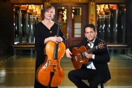
05.08.2021, 18.00 UHR, KONZERT
KLASSIK + JAZZ IM ESM
ZEITREISE IN DEN ZEITLOS FESSELNDEN JAZZ
Sven Bergmann - Piano
KLASSIK + JAZZ IM ESM
ZEITREISE IN DEN ZEITLOS FESSELNDEN JAZZ
Uli Bär - Bass
Martin Siehoff - Drums
Das BBS Trio hat sich zur Aufgabe gemacht, die Traditionslinie des Hardbop in der Tradition von Kenny Barron weiterzuführen. Es besteht aus dem Pianisten Sven Bergmann, dem Kontrabassisten Uli Bär und Martin Siehoff am Schlagzeug.
Die Musik dieses hervorragend aufeinander eingespielten Trios bringt die Leidenschaft dreier Musiker zum Ausdruck, die sich mit Herz und Seele dem Jazz verschrieben haben. Die Klänge, die sie ihren Instrumenten entlocken, entführen das Publikum in eine imaginäre Welt, die die Leichtigkeit des Seins widerspiegelt. Die drei Musiker um Sven Bergmann gehören zu den modernen, lyrisch und rhythmisch spielenden Jazztrios. Das Programm des BBS Trios besteht überwiegend aus Jazzstandards und interessanten Eigenkompositionen.
Sven Bergmann, von dem die meisten Kompositionen sind, erfreut durch Spielwitz und seinen großflächigen Akkorden. Seine Ernsthaftigkeit spiegelt seine Hingabe zum Jazz und seine herrlichen Melodien die seine Kompositionen tragen. Immer wenn eine Komposition den Traum wahr werden läßt und die Realität verschwand wird es zeitlos.
Uli Bär, verliebte sich in den Kontrabass und seine Leidenschaft macht ihn zu einem gefragten Bassisten. Nicht umsonst ist das Hellweg-Festival ohne ihn nicht mehr wegzudenken. Uli Bär singt auf seinem Bass, nimmt Schwingungen auf und legt einen breiten Teppich von tragenden Akkorden auf dem sich seine Mitspieler austoben können.
Martin Siehoff ist ein sehr sensibler Schlagzeuger, er bekommt jede Veränderung seiner Mitspieler mit und reagiert sofort. Wer ein lebendiges Zusammenspiel von Musikern lebt, kann an Martin Siehoff als Drummer nicht vorbei kommen So kann man sagen wächst zusammen was zusammen gehört.
Eintritt frei
Wir bitten Corona-bedingt um Reservierung mit Angabe des Namens, der Anschrift und Telefonnummer unter info@esmh.de
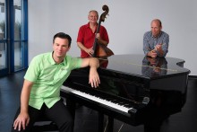
06.07.2021, 18.00 UHR, KONZERT
KLASSIK + JAZZ IM ESM
HOMMAGE AN ASTOR PIAZZOLLA
10 Jahre "Klassik & Jazz im ESM"
KLASSIK + JAZZ IM ESM
HOMMAGE AN ASTOR PIAZZOLLA
Hommage an Astor Piazzolla
Ein leidenschaftlicher Abend mit dem Tango Nuevo
Zum 100. Geburtstag von Astor Piazzolla haben die deutsche Cellistin Felicitas Stephan und die Akkordeonistin Heidi Luosujärvi aus Finnland ein faszinierendes Programm zusammengestellt. Astor Piazzolla, in der Provinz Buenos Aires als Sohn italienischer Eltern geboren, ist der Vater des Tango Nuevo. Der König des Tangos wäre am 11. März diesen Jahres 100 Jahre alt geworden
Felicitas Stephan und Heide Luosujärvi sind in der Klassik zuhause, aber mit einer Seele, die die Leidenschaft des Tangos in sich spürt. Als Solistinnen konzertieren beide seit vielen Jahren sehr erfolgreich und sind auf allen europäischen Bühnen zu Hause. Als Duo eint sie die große Hingabe an die Musik des Tangos. Mit ihrer Hommage an Astor Piazzolla präsentieren die beiden Künstlerinnen ihrem Publikum alle Variationen des argentinischen Tango Nuevo. Die bezaubernden Kantilenen des Cellos treten in einen vollendeten musikalischen Dialog mit den virtuosen Klängen des Akkordeons.
Die Reise in die Welt des Tangos wird dann im Quartett fortgesetzt mit dem finnischen Bandoneonspieler Petteri Waris und dem deutschen Kontrabassisten Uli Bär. Das perfekt aufeinander eingespielte Tangoquartett mit seiner ungewöhnlichen Besetzung nimmt seine Zuhörer mit in eine Welt voller Leidenschaft und Emotionen. Ein begeisternder Abend voller Sinnlichkeit mit Tangomusik aus Argentinien!
Eintritt frei
Das Konzert ist ausgebucht.
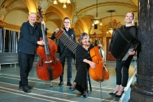
17.03.2021, 18-20 UHR
LIVE PER ZOOM AUS DEM 360-GRAD-VIDEOSTUDIO
POLITISCHER SALON HAGEN DIGITAL
Wie verändert Corona unsere Gesellschaft?
LIVE PER ZOOM AUS DEM 360-GRAD-VIDEOSTUDIO
POLITISCHER SALON HAGEN DIGITAL
Der Politische Salon Hagen, welcher sich mit aktuellen politischen und gesellschaftlich relevanten Themen beschäftigt, geht in die nächste Runde.
Diese, in Kooperation zwischen der FernUniverstät in Hagen, dem Theater Hagen und dem Emil Schumacher Museum veranstaltete Diskussionsreihe beschäftigt sich dieses Mal mit der Frage, wie Corona die Gesellschaft verändert.
Das Podium möchte über die Frage „Wie verändert Corona unsere Gesellschaft?” ins Gespräch kommen: untereinander und mit dem Publikum vor den Monitoren. Anregungen für die Diskussion beim Politischen Salon Hagen liefert das Buch von Ivan Krastev: „Ist heute schon morgen? Wie die Pandemie Europa verändert”. Es wird an dem Abend vorgestellt.
Es diskutieren: Prof. Dr. Ada Pellert (Rektorin der FernUniversität), Dr. Eva-Maria Butz (Historikerin an der FernUniversität), Andreas Meyer-Lauber (Schirmherr Politischer Salon), Francis Hüser (Intendant des Theater Hagen), Rouven Lotz (Leiter des Emil Schumacher Museums), Volker Ruff (Geschäftsführer der Hagen.Agentur.GmbH), René Röspel (Bundestagsabgeordneter für Hagen), Verena Schmidt (Superintendentin des Ev. Kirchenkreises Hagen). Moderation: Dr. Jana Husmann (FernUniverität)
Diese Veranstaltung wird live per Zoom aus dem neuen 360-Grad-Studio der Hagener Firma Go4It in Haspe gesendet. Die Mitwirkenden freuen sich auf ein innovatives und einzigartiges Digitalevent, bei welchem das Publikum interaktiv mitduskutieren kann.
Die Aufzeichnung der Veranstaltung finden Sie hier.
ABGESAGT
06.12.2020, 11.30 UHR, 5. KONZERT DER 5-TEILIGEN KONZERTREIHE
HUIJING HAN
BEETHOVEN BY HAN
"Les Adieux"
06.12.2020, 11.30 UHR, 5. KONZERT DER 5-TEILIGEN KONZERTREIHE
HUIJING HAN
BEETHOVEN BY HAN
Op.22
Op.26 „Trauermarsch“
Op.81a „Les Adieux“
Op.111
Mit der 1799/1800 komponierten Sonate Op. 22, die Beethovens erste Scha ensperiode beendete, fängt das letzte Konzert der Rei- he an. Danach folgt die Sonate Op. 26 mit dem „Trauermarsch“ im dritten Satz, der laut Beethoven dem Tod eines Helden gewid- met ist. In der zweiten Hälfte des Konzertes sind die Passagen „Das Lebewohl“ (Les Adieux), „Abwesenheit“ (L’ Absence) und „Das Wiedersehen“ (Le Retour) in der Sonate Op. 81a zu hören. Zum Schluss gibt es noch ein Glanzlicht mit der letzten Klaviersonate Beethovens, Op. 111 (1821), deren Ruhm auch durch die literari- sche Rezeption bei omas Mann fast mythische Züge angenom- men hat.
Eintritt: € 15,-
Karten sind erhältlich in der Buchhandlung am Rathaus, Tel. 02331 - 32689
ABGESSAGT
05.11.2020, 18.00 UHR, KONZERT
KLASSIK + JAZZ IM ESM
TÄNZE DER WELT
Duo Aken2: Soraya Ansari, Violoncello (Iran) & Luis Casellanos Klaver (Kolumbien)
05.11.2020, 18.00 UHR, KONZERT
KLASSIK + JAZZ IM ESM
TÄNZE DER WELT
Meister von Morgen
Das Duo Aken2 mit der deutsch-iranischen Cellistin Soraya Aken und dem kolumbianischen Pianisten Luis Castellanos beeindruckt seit nunmehr acht Jahren bei Kammermusikreihen im In- und Ausland und ist seit 2016 im Stipendiatenprogramm der Werner Richard-Dr. Carl Dörken Stiftung, deren Jury sie durch „ihren elektrisierenden Vortrag“ und „ihre unbedingte, exzessive Ausdruckskraft“ überzeugten.
Die aus Freiburg stammende Cellistin Soraya Ansari mit deutsch-iranischen Wurzeln ist Preisträgerin zahlreicher Wettbewerbe u.a. des Lions-Musikwettbewerbs, desVioloncello-Wettbewerbs der HfMT Köln und der Konzertreihe Accordate. Konzerte führten sie als Solistin und Kammermusikerin in mehrere Länder Europas, bereits mit 15 Jahren trat sie als Solistin mit Orchester in Deutschland und Frankreich auf.
Der kolumbianische Pianist Luis Castellano ist erster Preisträger des Chopin-Wettbewerbs in Kolumbien und seither ein gefragter Solist und Kammermusiker. Als Reprästentant seines Heimatlandes trat er u.a. beim Musikfestival „Südamerika!“ im Berliner Konzerthaus, im italienischen Spoleto ebenso wie in der kolumbianischen Botschaft in Brüssel u.a.
Eintritt fei
Wir bitten um Reservierung mit Angabe des Namens, der Anschrift und Telefonnummer unter info@esmh.de
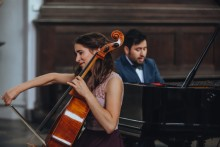
ABGESAGT
31.10.2020, 16 UHR, 4. KONZERT DER 5-TEILIGEN KONZERTREIHE
HUIJING HAN
BEETHOVEN BY HAN
"Mondschein"
31.10.2020, 16 UHR, 4. KONZERT DER 5-TEILIGEN KONZERTREIHE
HUIJING HAN
BEETHOVEN BY HAN
Op.27 Nr.2 „Mondschein“
Op.31 Nr.3 „La Chasse“
Op.110
01.10.2020, 18.00 UHR, KONZERT
KLASSIK + JAZZ IM ESM
BEETHOVEN KAMMERMUSIK-NACHT IM ESM
Ensemble Europa
KLASSIK + JAZZ IM ESM
BEETHOVEN KAMMERMUSIK-NACHT IM ESM
Beethoven & Hummel
Vier erfahrene Kammermusiker – davon gleich drei aus dem sonnigen Italien - die sowohl gemeinsam als auch als Solisten tätig sind, bilden das Ensemble Europa und sie feiern das Beethoven-Jubiläumsjahr mit einer klangvollen Kammermusiknacht, in deren Mittelpunkt das bekannte „Gassenhauer-Trio“ steht.
Das Gassenhauer-Trio ist sehr frisch, sehr lebendig und auch voller Humor und daher geradezu ideal als Geburtstagsständchen für den großen Komponisten. Auf dem Programm dieser Beethoven-Nacht stehen außerdem Beethovens Klavier-Quartett in Es-Dur, op. 16 sowie das Klavier-Quintett es-moll, op. 87 von Johann Nepomuk Hummel, der in seinen Wiener Jahren eng mit Beethoven befreundet war und bei der Aufführung einiger Werke Beethovens mitwirkte.
Die Mitglieder des Ensemble Europa kommen aus Sardinen, dem Piemont, Holzwickede und Unna und sind alle angesehene Kammermusiker: Der aus dem Piemont stammende italienische Pianist Maurizio Barboro leitet die Klavier-Klasse am staatlichen Conservatorio Niccolò Paganini in Genua. Ebenfalls aus dem Piemont stammt der angesehene Geiger Vittorio Marchese, Preisträger zahlreicher Wettbewerbe, der mit den wichtigsten Orchestern Italiens konzertiert. Der aus Sassari auf Sardinien gebürtige Bratschist Gioele Lumbau ist ein erfahrener und geschätzter Kammermusikpartner und ist seit 2006 Bratschist des Ensemble Ellipsis, mit dem er europaweit konzertiert. Die deutsche Cellistin Felicitas Stephan aus Holzwickede ist die künstlerische Leiterin des Festivals „Celloherbst am Hellweg“. Der Kontrabassist Uli Bär aus Unna wird das Ensemble als Gast unterstützen.
Das Ensemble Europa hat sich 2018 für das Festival „Celloherbst am Hellweg“ gegründet und zeichnet sich aus durch eine grandiose Tongestaltung und eine fast außergewöhnlich zu nennende Klanghomogenität – der gemeinsame Atem geht in keinem Takt verloren.
Seine Mitglieder verstehen sich als Botschafter für Europa, dessen Zusammenhalt ohne Kunst und Kultur nicht denkbar ist.
Eintritt 18€/10€ erm.
Kartenreservierung mit Namen, Anschrift und Telefonnummer unter info@celloherbst.de
(Die Karten werden zur Abholung an der Abendkasse hinterlegt)
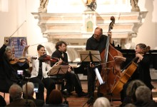
17.09.2020, 18.00 UHR, KONZERT
KLASSIK + JAZZ IM ESM
MEISTERWERKE FÜR CELLO & KLAVIER
Felicitas Stephan & Tobias Bredohl
KLASSIK + JAZZ IM ESM
MEISTERWERKE FÜR CELLO & KLAVIER
Schostakowitsch, Brahms und Bloch
Mit seinem neuen Programm bezaubert das Duo Felicitas Stephan und Tobias Bredohl sein Publikum. Ob Pisa, Herne, Paris, Mailand, Murcia oder Unna – mit seinem grandiosen Wechselspiel und interessanten europäischen Kompositionen geht das Duo auf eine spannende musikalische Europareise. Felicitas Stephan und Tobias Bredohl präsentieren mitreißende Interpretationen bedeutender Werke von Dmitrij Schostakowitsch, Johannes Brahms und Ernest Bloch.Die Cellistin Felicitas Stephan und der Pianist Tobias Bredohl bieten eine faszinierende Verbindung von Erfahrung und Frische, der man sich kaum entziehen kann: „Die beiden Musiker nahmen die Zuhörer mit auf eine musikalische Reise voller Leidenschaft und Liebe mit einem Repertoire, bei dem trotz der klassischen Werke nichts verstaubt wirkt. Ihre Musik hat Seele“. (Westfälische Rundschau)
Eintritt frei
Wir bitten um Reservierung mit Angabe des Namens, der Anschrift und Telefonnummer unter info@esmh.de
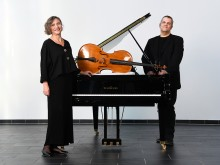
05.09.2020, 16 UHR, 3. KONZERT DER 5-TEILIGEN KONZERTREIHE
CORONA: DAS KONZERT WIRD OHNE PAUSSE GESPIELT UND ENDET NACH 60 MINUTEN.
HUIJING HAN
BEETHOVEN BY HAN
"Appassionata"
CORONA: DAS KONZERT WIRD OHNE PAUSSE GESPIELT UND ENDET NACH 60 MINUTEN.
HUIJING HAN
BEETHOVEN BY HAN
Op. 90
Op. 101
Op.57 „Appassionata“
Das Konzert beginnt mit Beethovens letzter Sonate, aus seiner mittleren Schaffensperiode, Op. 90, veröffentlicht im Sommer 1815. Im Anschluss spielt Han die Baronin Dorothea Erdmann gewidmete Sonate op. 101 aus dem Jahr 1816. Als Schluss- und Höhepunkt des Konzertes wird eines seiner bekanntesten Werke, die Klaviersonate „Appassionata“ (die Leidenschaftliche), op. 57, zu hören sein. Beethoven komponierte sie bereits 1804/05 – zeitgleich mit der Oper „Fidelio“. Diese Klaviersonate war auch ein Wendepunkt in Beethovens Schaffen: mit eruptiver Leidenschaft und glanzvoll-dämonischer Wirkung voll romantischer Virtuosität.
Eintritt: € 15,-
Karten sind erhältlich in der Buchhandlung am Rathaus, Tel. 02331 - 32689
27.08.2020, 18.00 UHR, KONZERT
KLASSIK + JAZZ IM ESM
GUITAR CROSS OVER
Two for the road(Uli Bär, Kontrabass & Felix Krampen, Gitarre)
KLASSIK + JAZZ IM ESM
GUITAR CROSS OVER
Latin America
Romantischer, zeitgemäßer, kammermusikalischer Jazz, der offen ist für Berührungen mit klassischer Musik, Folk und Pop – innovativ, klangverliebt und experimentierfreudig.
Vielfarbig ist der swingende Dialog zwischen Uli Bär am Kontrabass und Felix Krampen an der Gitarre. In ihren Konzerten geht es um Sommer, Sonne und Samba. Da treffen die Beatles auf Bach und Musik des Jazz-Gitarristen Pat Metheny auf eine Ballade des Südamerikaners Egberto Gismonti. Die kleine Eisenbahn von Villa-Lobos führt zu Uli Bär ́s Tango unter dem Hochofen, womit auch das Ruhrgebiet vertreten ist. Die Arrangements aller Stücke haben die beiden Musiker selbst geschrieben. „Latin America“, so heißt das Programm, das die beiden auch auf einer CD veröffentlicht haben. Mit viel musikalischer Reiselust und unterhaltsamer Moderation beschreiten die beiden unbekannte Wege, immer auf der Suche nach neuen Horizonten.
Eintritt frei
Das Konzert ist ausgebucht
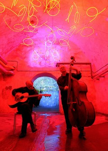
13.08.2020, 18.00 UHR, KONZERT
KLASSIK + JAZZ IM ESM
SPAIN & LATIN AMERICA GUITAR NIGHT
Juan Carlos Aranciba Navarro, Peru
KLASSIK + JAZZ IM ESM
SPAIN & LATIN AMERICA GUITAR NIGHT
Gitarre solo
Der in Dortmund lebende und aus Peru stammende Musiker Juan Carlos Arancibia Navarro beherrscht sein Handwerk virtuos. Mit der Gitarre als ständigen Wegbegleiter, gelingt es dem vielfach preisgekrönten Künstler das Publikum mit klassischen und vor allem spanischen sowie lateinamerikanischen Klängen in die warmen Sommernächte Perus zu entführen. Seine sowohl ruhigen als auch temperamentvollen Lieder und Interpretationen schaffen eine faszinierende Atmosphäre; sie erzählen dabei stets von den Ereignissen und Geschichten, die sie in sich tragen. Seit Navarro zurückdenken kann, ist er mit der Musik verbunden. Über 300 Auftritte in Deutschland, Peru und Europa sowie verschiedene Radio- und Fernsehübertragungen, neben mehreren aufgenommenen CDs, bestätigen seine außergewöhnliche Qualität und zeugen von seiner Beliebtheit beim Publikum.
„Er beherrscht sein Instrument absolut, seine kultivierte Technik macht staunen und sein guter Geschmack verführt. Außerdem ist seine Kunst gutherzig und Weise, so dass das Geschenk, das uns die Komponisten hinterlassen haben - Musik voller Liebe und voll der reinsten menschlichen Gefühle -, vollkommen entfaltet wird. So können wir uns gemeinsam mit dem jungen Gitarristen auf den Weg machen und uns öffnen für dieses wunderbare Instrument.“ - Joaquín Clerch
Eintritt frei
Das Konzert ist ausgebucht

ABGESAGT AUFGRUND DER COVID-19-PANDEMIE:
19.06.2020, 20 UHR, KONZERT
KLAVIER FESTIVAL RUHR
A Bu
19.06.2020, 20 UHR, KONZERT
KLAVIER FESTIVAL RUHR
Stipendiat des Klavier-Festivals Ruhr 2019
„A Bu ist der erste chinesische Jazzpianist der international bekannt wird. Er erzählt Geschichten am Klavier“, meinte Michel Camilo, Preisträger des Klavier-Festivals 2019, als er das Ausnahmetalent aus Peking zum Stipendiaten des diesjährigen Festivals bestimmte. A Bu heißt eigentlich Dai Liang, ist Jahrgang 1999 und wurde mit gerade mal 13 Jahren bei einem Festival in Peking entdeckt. Da hatte er – parallel zur klassischen Klavierausbildung, die er bereits im Alter von vier Jahren begann – schon in Jamsessions Erfahrungen gesammelt, ein Trio gegründet, New York besucht. Einmal hatte Chick Corea ihn in Shanghai zum spontanen Duett auf die Bühne geholt. Mit 14 spielte er sein erstes Album ein („88 Tones of Black and White“), dann ging es Schlag auf Schlag: Zulassung zur renommierten New Yorker Juilliard School (2014), 1. Preis und Publikumspreis beim Solo-Klavierwettbewerb des Montreux-Jazzfestivals 2015, zweites Album („Butterflies Fly in Pairs“, 2015), Beteiligung an den repräsentativen All-Star Global Concerts zum International Jazz Day in Paris (2015), Havanna (2017) und Melbourne (2019). Heute lebt A Bu in New York und gastiert auf den Bühnen der Welt. Ein „vielversprechender junger Jazzlöwe“, so sein Mentor Michel Camilo über A Bu. Nun gibt er sein Debüt beim Klavier-Festival Ruhr.

ABGESAGT AUFGRUND DER COVID-19-PANDEMIE:
11.06.2020, 18.00 UHR, KONZERT
KLASSIK + JAZZ IM ESM
ZEITENSPRÜNGE
Lilith Saxophon Quartett
11.06.2020, 18.00 UHR, KONZERT
KLASSIK + JAZZ IM ESM
ZEITENSPRÜNGE
Ein einzigartiger musikalischer Streifzug
Das Lilith Saxophon Quartett unternimmt einen musikalischen Streifzug durch verschiedene Länder und Zeiten der Musikgeschichte. „Alles ist möglich“ – das ist das Motto der vier Saxophonistinnen, die von erlesener klassischer Kammermusik bis zum Jazz dem Publikum ein breites musikalisches Spektrum präsentieren. Die Auswahl von Werken der Renaissance und des Barock, französischer Originalliteratur, argentinischer Tangos, afrikanischer Grooves, Pop, Rock und Jazzsongs bietet ein sehr abwechslungsreiches und inspirierendes Klangerlebnis. Das Lilith Saxophon Quartett entführt Sie in eine einzigartige musikalische Welt.
Eintritt frei
Download: Flyer Klassik & Jazz im ESM 1/2020
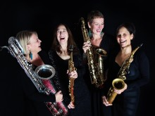
ABGESAGT AUFGRUND DER COVID-19-PANDEMIE:
21.05.2020, 18.00 UHR, KONZERT
KLASSIK + JAZZ IM ESM
SÜDITALIENISCHER JAZZ
Maurizio di Fulvio Quaertett
21.05.2020, 18.00 UHR, KONZERT
KLASSIK + JAZZ IM ESM
SÜDITALIENISCHER JAZZ
Jazz mit Temperament und Energie
Das Quartett um den weltweit auftretenden Gitarristen Maurizio di Fulvio aus Pescara (Apulien) und den sizilianischen Trompeter Gregorio Mangano aus Palermo bietet klangvollen italienischen Jazz. Ihre Konzerte gelten als temperamentvoll und energisch, rafiniert und verziert, immer zwischen Tradition und Innovation schwebend. Das Publikum ist eingeladen, eine Musik zu hören, die offen und freundlich ist und die eine starke Verbindung zur Vergangenheit aufrechterhält. Die Zuhörer erwartet eine spannende Reise in die Welt des Jazz, bei der di Fulvio und Mangano auch unbekannte Kompositionen aus ihrer süditalienischen Heimat präsentieren werden. Mit dabei sind Uli Bär (Kontrabass) und Benny Mokross (Percussion).
Eintritt: € 10,-
Karten sind erhältlich in der Buchhandlung am Rathaus, Tel. 02331 - 32689
Reservierungen unter booking@kulturverein-westfalen.de
Download: Flyer Klassik & Jazz im ESM 1/2020
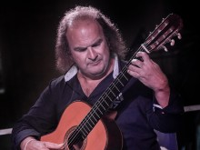
ABGESAGT AUFGRUND DER COVID-19-PANDEMIE:
17.05.2020, 11.30 UHR, KONZERT
KLASSIK + JAZZ IM ESM
IL PIANO ITALIANO
Maurizio Moretta
17.05.2020, 11.30 UHR, KONZERT
KLASSIK + JAZZ IM ESM
IL PIANO ITALIANO
Klavier solo
Maurizio Moretta kommt als musikalischer Botschafter aus der Lombardei nach Hagen. Der preisgekrönte italienische Pianist aus Como ist auf den Konzertbühnen weltweit ein gern gesehener Gast und wird für seine technische Virtuosität und große musikalische Gestaltungskraft gefeiert. Er liefert den Beweis, dass klassische Musik sehr lebendig und verführerisch sein kann. Sein musikalischer Instinkt ist ein Schatz, es ist ein Instinkt, der vom ersten Moment an fasziniert und die Zuhörer in den Bann zieht. Moretta spielt mit einer musikalischen Intensität, die in heutigen Konzertsälen kaum zu finden ist. Seine Interpretationen lassen das Publikum staunen. In Hagen spielt er u.a. Werke von Paradisi, Scarlatti und das berühmte „Le Lac de Come“ von Galos.
Eintritt: € 10,-
Karten sind erhältlich in der Buchhandlung am Rathaus, Tel. 02331 - 32689
Reservierungen unter booking@kulturverein-westfalen.de
Download: Flyer Klassik & Jazz im ESM 1/2020
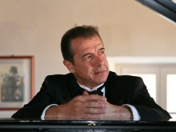
ABGESAGT AUFGRUND DER COVID-19-PANDEMIE:
17.09.2020, 18.00 UHR, KONZERT
KLASSIK + JAZZ IM ESM
MEISTERWERKE FÜR CELLO & KLAVIER
Schostakowitsch, Brahms und Bloch
Mit seinem neuen Programm bezaubert das Duo Felicitas Stephan und Tobias Bredohl sein Publikum. Ob Pisa, Herne, Paris, Mailand, Murcia oder Unna – mit seinem grandiosen Wechselspiel und interessanten europäischen Kompositionen geht das Duo auf eine spannende musikalische Europareise. Felicitas Stephan und Tobias Bredohl präsentieren mitreißende Interpretationen bedeutender Werke von Dmitrij Schostakowitsch, Johannes Brahms und Ernest Bloch.Die Cellistin Felicitas Stephan und der Pianist Tobias Bredohl bieten eine faszinierende Verbindung von Erfahrung und Frische, der man sich kaum entziehen kann: „Die beiden Musiker nahmen die Zuhörer mit auf eine musikalische Reise voller Leidenschaft und Liebe mit einem Repertoire, bei dem trotz der klassischen Werke nichts verstaubt wirkt. Ihre Musik hat Seele“. (Westfälische Rundschau)
Eintritt frei
Download: Flyer Klassik & Jazz im ESM 1/2020
ABGESAGT AUFGRUND DER COVID-19-PANDEMIE:
02.05.2020, 16 UHR, 2. KONZERT DER 5-TEILIGEN KONZERTREIHE
HUIJING HAN
BEETHOVEN BY HAN
"Mondschein"
02.05.2020, 16 UHR, 2. KONZERT DER 5-TEILIGEN KONZERTREIHE
HUIJING HAN
BEETHOVEN BY HAN
Op.2 Nr.2
Op.27 Nr.2 „Mondschein“
Op.31 Nr.3 „La Chasse“
Op.110
Seine zweite Klaviersonate Op. 2 Nr. 2, komponiert 1795, hat Beethoven ebenfalls Joseph Haydn gewidmet. Im Konzert folgt eins von Beethovens berühmtesten Werken, die „Mondscheinsonate“ aus dem Jahr 1801. Dieses Werk – quasi eine Fantasie – hat eine ungewöhnliche Satzfolge. „Eine Blume zwischen zwei Abgründen“ beschrieb Franz Liszt den zweiten Satz dieser Sonate. Dann folgt die heitere und ironische Sonate Op. 31 Nr. 3. Die letzte in diesem Konzert ist Beethovens vorletzte Klaviersonate (1821). Der österrei- chische Pianist Jörg Demus sagt: „Von der Unschuld des Anfangs über Zwist und Streit, Klage, Leid und Verzagen zu mutigem Aufschwung durch die Kraft des Geistes. Ja, das scheint mir der Grund für die erschütternde, erhebende Wirkung von Op. 110 zu sein: Der Triumph des Geistes.“
Eintritt: € 15,-
Karten sind erhältlich in der Buchhandlung am Rathaus, Tel. 02331 - 32689
Download: Flyer "Beethoven by Han"
ABGESAGT AUFGRUND DER COVID-19-PANDEMIE:
19.03.2020, 18.00 UHR, KONZERT
KLASSIK + JAZZ IM ESM
STILL MY GUITAR
Buck Wolters
19.03.2020, 18.00 UHR, KONZERT
KLASSIK + JAZZ IM ESM
STILL MY GUITAR
Gitarre Solo
Spielt da tatsächlich nur einer? Das fragt man sich unwillkürlich, wenn man die Augen schließt und Burkhard „Buck“ Wolters live hört. Denn sein Gitarrenspiel ist außergewöhnlich: Mit sechs Saiten und zwei Händen erzeugt er so geschickt gleichzeitig Melodie, Akkordbegleitung, Basslinien und Percussion, dass man eine komplette Band oder bisweilen gar ein ganzes Orchester vor sich glaubt. In seinem Solo-Programm „Still my Guitar“ präsentiert der deutsche Gitarrist, Komponist, Arrangeur und Autor überwiegend Klassiker der 1960er und 70er Jahre. Kompositionen von George Harrisson, Stevie Wonder, Jimi Hendrix, Bob Marley und vielen weiteren Protagonisten jener unvergleichlichen Ära erweckt Wolters durch seine erstaunliche Virtuosität und emotionale Ausdruckskraft zu neuem Leben. Die facetten- und farbenreichen Arrangements zeugen von umfangreichen Erfahrungen als Komponist und Gitarrist aus Klassik, Jazz und Weltmusik. Altvertraute Songs kommen überraschend neu und frisch auf die Bühne, so dass man sie im wahrsten Sinne des Wortes „mit ganz anderen Ohren“ hört.
Eintritt frei
Download: Flyer Klassik & Jazz im ESM 1/2020
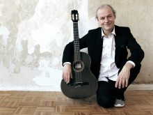
27.02.2020, 18.00 UHR, KONZERT
KLASSIK + JAZZ IM ESM
KLAVIER-DUO AUS NIZZA
Frédéric Chauvel & Mark Solé-Leris
KLASSIK + JAZZ IM ESM
KLAVIER-DUO AUS NIZZA
Ein französischer Traum zu vier Händen
Frédéric Chauvel & Mark Solé-Leris sind zwei Pianisten aus Nizza in Südfrankreich, die ihre künstlerische Inspiration aus dem kulturellen Reichtum Europas ziehen und dabei auf die große europäische Vielfalt zurückgreifen. Das Publikum erlebt mit diesem Klavierduo zwei starke Persönlichkeiten, die in all ihrer Unterschiedlichkeit am Klavier zu einer vollkommenen Einheit verschmelzen. Ihre musikalische Sensibilität und ihr außergewöhnliches gegenseitiges musikalisches Verstehen machen aus den beiden Pianisten ein Duo, das fasziniert und in dieser Art einmalig ist. Das Duo Frédéric Chauvel und Mark Solé-Leris gibt seit 1998 weltweit Konzerte und wird mit begeisterten Kritiken bedacht. Im Gepäck haben die beiden Musiker ein spannendes französisches Programm mit den schönsten Werken aus dem Repertoire für Klavierduo von Gouvy, Bizet, Poulenc und Milhaud. Die Zuhörer erwartet eine traumhafte Reise durch die romantische Welt der französischen Klaviermusik.
Eintritt frei
Download: Flyer Klassik & Jazz im ESM 1/2020
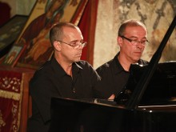
13.02.2020, 18 UHR, KONZERT
KLASSIK + JAZZ IM ESM
BBS TRIO - HARDBOP
Bergmann - Bär -Siehoff
KLASSIK + JAZZ IM ESM
BBS TRIO - HARDBOP
Lyrischer Jazz mit Herz und Seele
Das BBS Trio hat es sich zur Aufgabe gemacht, den Hardbop in der Tradition von Kenny Barron weiterzuführen. Es besteht aus dem Pianisten Sven Bergmann, dem Kontrabassisten Uli Bär und Martin Siehoff am Schlagzeug. Die Musik dieses hervorragend aufeinander eingespielten Trios bringt die Leidenschaft dreier Musiker zum Ausdruck, die sich mit Herz und Seele dem Jazz verschrieben haben. Die Klänge, die sie ihren Instrumenten entlocken, entführen das Publikum in eine imaginäre Welt, die die Leichtigkeit des Seins widerspiegelt. Die drei Musiker um Sven Bergmann gehören zu den modernen, lyrisch und rhythmisch spielenden Jazztrios. Das Programm des BBS Trios besteht überwiegend aus Jazzstandards und interessanten Eigenkompositionen.
Eintritt frei
Download: Flyer Klassik & Jazz im ESM 1/2020
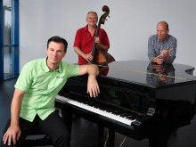
02.02.2020, 11.30 UHR, 1. KONZERT DER 5-TEILIGEN KONZERTREIHE
HUIJING HAN
BEETHOVEN BY HAN
"Sonnenaufgang"
HUIJING HAN
BEETHOVEN BY HAN
Op.2 Nr.1
Op.109
Op.31 Nr.2 „Der Sturm“
Op.53 „Waldstein“
Nach seiner ersten Sonate Op. 2 Nr. 1, die Beethoven Joseph Haydn gewidmet hat, ist im ersten Konzert der Reihe die erste von Beethovens letzten drei Sonaten, Op. 109, zu hören – Maximiliane Brentano gewidmet. Über diese Sonate schrieb der bekannte Pianist Paul Badura-Skoda: „Die Musik ist eine Frau, einer Frau ist die Musik zugedacht. Verweile doch, du bist zu schön, scheint die verschwiegene Botschaft zu heißen.“ Die zweite Hälfte des Konzertes beginnt mit der „Sturm“-Sonate, die der Legende nach auf William Shakespeares gleichnamiges Drama zurückgeht. Den Abschluss bildet die dem Grafen Ferdinand von Waldstein gewidmete, 1803/04 komponierte Sonate Op. 53. Im letzten Satz der Sonate zeigt das Tongemälde einen Sonnenaufgang ...
Eintritt: € 15,-
Karten sind erhältlich in der Buchhandlung am Rathaus, Tel. 02331 - 32689
Download: Flyer "Beethoven by Han"
26.12.2019, 18 UHR, KONZERT
KLASSIK + JAZZ IM ESM
WEIHNACHTSJAZZ IM ESM
Soleil Niklasson Quartett
KLASSIK + JAZZ IM ESM
WEIHNACHTSJAZZ IM ESM
The Voice from Chicago
Die amerikanische Jazz-Sängerin Soleil Niklasson ist Musikerin mit Leib und Seele. Die Künstlerin ist in Chicago geboren und in Los Angeles aufgewachsen. Ihr Repertoire reicht von klassischen Standards des American Songbook über einfühlsame Balladen hin zu Soul mit Gänsehautgarantie. Mit ihrer hinreißenden Soulstimme zieht Soleil „die Sonne“, das Publikum in den Bann. Im exzellent besetzten Quartett mit Musikern, die alle einen festen Platz in der Jazzszene haben, findet man Sven Bergmann am Klavier, Andreas Griefingholt am Schlagzeug und Uli Bär am Kontrabass.
Eintritt: AK 20 €, VVK 18 €
Karten: Buchhandlung am Rathaus (0 23 31) 3 26 89
Reservierungen: booking@kulturverein-westfalen.de
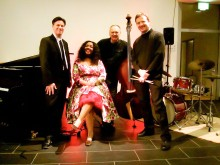
14.12.2019 16 UHR, KONZERT
J.E.S.! A-CAPELLA
"WIR SIND DANN WIEDER MAL DA ... ZWISCHEN EINKAUFS(B/R)UMMEL UND WEIHNACHTMARKT
Es ist wieder soweit: zum Ersten, zum Zweiten, zum … Achten! Wer hätte bei der ersten Auflage im Jahr 2012 schon gedacht, dass die Idee, in der Vorweihnachtszeit im Auditorium des Emil Schumacher Museums ein Benefizkonzert zu veranstalten, so eine Resonanz finden würde? Inzwischen ist es zu einer festen Institution geworden, denn bereits im achten Jahr heißt es am Samstag vor dem 3. Advent traditionell: "Wir sind dann wieder mal da".
J.E.S.! A-CAPELLA
"WIR SIND DANN WIEDER MAL DA ... ZWISCHEN EINKAUFS(B/R)UMMEL UND WEIHNACHTMARKT
Rund 90 Minuten Kurzweil und Atempause im vorweihnachtlichen Trubel mit einem Querschnitt beliebter a-capella-songs, quer durch das Repertoire aus Pop-Oldies und neuen Arrangements. Deutschsprachiges von z.B. Peter Maffay, Ich & Ich, Maybebob und Wise Guys, internationale Hits von John Miles, Clapton und Sting, den Beatles, Simon & Garfunkel, Four Seasons und auch (wieder) „was ganz überraschend Anderes“. Der Jahreszeit angemessen natürlich auch Weihnachtliches - auf jeden Fall wie gewohnt Gesang pur ohne elektrische Verstärkung, entspannte Atmosphäre und den ein oder anderen humorigen Blick auf (Rand)Notizen des ablaufenden Jahres :-)
Einlass ist eine halbe Stunde vorher um 15.30 Uhr.
Der Eintritt ist wie gewohnt frei, Spenden nach dem Motto „was es Euch wert ist“ sind erbeten (Spendenzweck folgt).
07.12.2019 AB 19 UHR
LANGE NACHT DER KUNST
Das Kunstquartier feiert nunmehr zum dritten Mal zusammen mit dem Theater Hagen eine Lange Nacht der Kunst – Der besondere Anlass in diesem Jahr: 10 Jahre Emil Schumacher Museum und Kunstquartier Hagen.
LANGE NACHT DER KUNST
Alle Museumsräume verwandeln sich in Bühnen!
Sänger*innen, Tänzer*innen, Musiker*innen, Schauspieler*innen des Theaters Hagen präsentieren in verschiedenen Formationen ihre eigens für diesen Abend entwickelten Programme. Wir laden Sie ein, die theatralisch verwandelten Kunst-Räume nach Belieben zu durchwandern – gehen Sie, bleiben Sie stehen, lauschen und schauen Sie, nehmen Sie teil, tauschen Sie sich aus ... und lassen Sie sich immer wieder von Neuem überraschen!
Für das leibliche Wohl sorgt das Team der Museumsgastronomie Novy’s.
Programm Trio Classic Deluxe (Tangos), das Duo Imaginaire (Werke von Brahms, Orlovich), Heiko Schäfer (Schlagzeug) und Rebecca Bröckel (Oboe/Englisch Horn; Werke von Terzakis, Killmayer), Philharmonisches Orchester Hagen (Werke von Halle, Hensel), Marilyn Bennett (Sopran), Iris Reeder (Viola), Dan K. Kurland (Klavier; Werke von Brahms), Ballett Hagen (Performance). Ferner werden eine Szenische Lesung (Lutz),ein Künstlergespräch zwischen Tayfun Belgin (Direktor des Osthaus Museums) und Pia Stadtbäumer (Trägerin des Karl Ernst Osthaus-Preises 2019) sowie Vorführungen von Filmen von Christoph Böll angeboten und Ausschnitte aus dem Madrigal „Combattimento di Tancredi e Clorinda“ von Monteverdi und aus der Lutz-Produktion „pardauz“ aufgeführt.
Pay what you want – Den Eintrittspreis bestimmen Sie selbst. Denn bezahlt wird im Anschluss an Ihren Besuch und zwar genau die Summe, die Ihnen der Abend wert war. Entsprechende Spendenboxen finden Sie während des gesamten Abends an den Ausgängen.

21.11.2019, 18 UHR, KONZERT
KLASSIK + JAZZ IM ESM
KUNST WIRD KLANG
Florian Boos Nonett
KLASSIK + JAZZ IM ESM
KUNST WIRD KLANG
Emotionen in den Werken berühmter Künstler klanglich zu Tage fördern, das beschäftigt Florian Boos – vielfach ausgezeichneter Jazzmusiker, Bandleader und Komponist - und seine Band seit 2016. Nachdem sie Vincent van Gogh und Amedeo Modigliani musikalisch ihre Referenz erwiesen haben, widmen sie sich nun aus aktuellem Anlass Bildern von Bauhauskünstlern aus der Sammlung des Osthaus Museums. Um den Kunstwerken nahezukommen, greifen Boos und seine Musiker auf alle Möglichkeiten zwischen Jazz, Indie-Pop und zeitgenössischer Musik zurück.
Eintritt frei
10.11.2019, 11.30 UHR, KONZERT
KLASSIK + JAZZ IM ESM
JAZZ-PORTRAIT DIMITRIJ TELMANOV
Blue Note Jazz Ensemble
KLASSIK + JAZZ IM ESM
JAZZ-PORTRAIT DIMITRIJ TELMANOV
In memory of Art BLaky
Das Blue Note Jazz Ensemble setzt sich zusammen aus internationalen Musikern wie dem italienischen Pianisten Igor Iabichino und dem Schlagzeuger Enzo Cio aus Sanremo sowie regionalen Musikern wie Patrick Porsch aus Soest am Saxophon, dem jungen Posaunisten Jona Böbel aus Holzwickede sowie Uli Bär aus Unna am Kontrabass.
Allen gemeinsam ist die Liebe zum Jazz und zu eigenen Kompositionen.Im Rahmen des Jazz-Portaits des Festivals „Take 5 Jazz am Hellweg 2019“ steht an diesem Abend der Trompeter Dimitrij Telmanov mit seinen Kompositionen im Mittelpunkt.
Eintritt: 10 €
Karten: Buchhandlung am Rathaus (0 23 31) 3 26 89
Reservierungen: booking@kulturverein-westfalen.de
26.09.19, 18.30 UHR, KINO
DAS NEUE FRANKFURT - MODERNES WOHNEN FÜR DIE MASSEN
In Kooperation mit dem Kino Babylon des Kulturzentrums Pelmke und dem Architekten und Ingenieurverein Mark-Sauerland präsentieren wir Ihnen im Rahmen von 100 Jahre Bauhaus den Film "Das neue Frankfurt".
DAS NEUE FRANKFURT - MODERNES WOHNEN FÜR DIE MASSEN
Filme von Paul Wolff, Jonas Geist und Joachim Krausse
Der 1925 zum Frankfurter Stadtbaurat ernannte Ernst May (1886-1970) hat mit einem Stab junger Architekten, Planer und Designer sich der Herausforderung gestellt, die große Wohnungsnot in der Metropole Frankfurt anzugehen, ein auch heute wieder aktuelles Thema. Um den unteren Bevölkerungsschichten ein humanes Leben in moderner Wohnkultur zu ermöglichen und gleichzeitig den vorgegebenen Finanzrahmen einzuhalten, setze man auf rationelle kostensparende Bauweise durch Typisierung der Grundrisse und der Bauteile, sowie auf den Einsatz lokaler Firmen und die Beschäftigung von Arbeitslosen. Dazu gehört auch die berühmte „Frankfurter Küche (1926) von Charlotte Schütte-Lihotzki. Das „Neue Frankfurt“profilierte sich damals als eines der innovativsten Großprojekte des „Neuen Bauens“ der 1920er Jahre in Deutschland. Neben Originalfilmen von Dr. Paul Wolff aus den 20er Jahren umfasst der Filmabend eine ausführliche WDR-Dokumentation, Als Zeitzeugen kommen Architekten, Designer, Küchenhersteller sowie zahlreiche Erstbezieher in den „May-Siedlungen“ zu Wort.
Eintritt: 6,50 € / ermäßigt 5 €
Reservierungen: T +49 2331 / 33 69 67 oder kino@pelmke.de
Karten bitte spätestens bis zehn Minuten vor Veranstaltungsbeginn abholen.
12.09.2019, 18 UHR, KONZERT
KLASSIK + JAZZ IM ESM
VIRTUOSITÄT ZU VIER HÄNDEN
Duo Yves Robbe
KLASSIK + JAZZ IM ESM
VIRTUOSITÄT ZU VIER HÄNDEN
Klavier-Duo Yves Robbe und Macha Makarevich
Vier Hände, zwei Virtuosen, ein Klavier – eine Begegnung voller Freude und voller Entdeckungen, ein mitreißendes und bewegendes Programm. Es gibt Momente im Leben, die lassen sich nur schwer in Worte fassen, ein Konzert mit dem Duo Yves Robbe und Macha Makarevich gehört dazu: Das muss man erleben, genießen und teilen!Im Mittelpunkt des Konzertabends, den dieses beeindruckende Klavier-Duo im Emil Schumacher Museum in Hagen spielen wird, stehen die „Bilder einer Ausstellung“ in der Fassung für Klavier zu vier Händen von Modest Mussorgski aus dem Jahr 1874.
Eintritt frei
29.08.2019, 18 UHR, KONZERT
KLASSIK + JAZZ IM ESM
EIN TANGO FÜR EMIL SCHUMACHER
DIE 4 JAHRESZEITEN VON BUENOS AIRES
Ensemble Contrabajando
KLASSIK + JAZZ IM ESM
EIN TANGO FÜR EMIL SCHUMACHER
DIE 4 JAHRESZEITEN VON BUENOS AIRES
Zum 107. Geburtstag von Emil Schumacher und zum zehnten Geburtstag des Emil Schumacher Museums präsentiert das Tango Ensemble Contrabajando sein neues Programm „Die 4 Jahreszeiten von Buenos Aires“. Ganz wie sein brasilianischer Kollege Villa-Lobos, der in den dreißiger und vierziger Jahren musikalische Denkmäler für Bach gebaut hatte, ließ sich der Argentinier Astor Piazzolla von Vivaldi inspirieren, als er in den sechziger Jahren den Zyklus seiner „Jahreszeiten” begann.
Erleben Sie Spielfreude, Leidenschaft, Emotionen, Kreativität und eingängige Melodien unabhängig von stilistischem Schubladendenken!
Mitglieder des Fördervereins Emil Schumacher Museum e.V. haben freien Eintritt bei Voranmeldung unter booking@kulturverein-westfalen.de
Eintritt: AK 18 €, VVK 15 €Karten: Buchhandlung am Rathaus (0 23 31) 3 26 89

24.08.2019, 18 UHR, KONZERT
KLASSIK + JAZZ IM ESM
10 JAHRE ESM - 200 JAHRE FORELLENQUINTETT - KAMMERMUSIKNACHT ZUM DOPPELGEBURTSTAG
Ensemble Europa
KLASSIK + JAZZ IM ESM
10 JAHRE ESM - 200 JAHRE FORELLENQUINTETT - KAMMERMUSIKNACHT ZUM DOPPELGEBURTSTAG
Weltberühmt ist das Lied „Die Forelle“ von Franz Schubert, weltberühmt ist auch das nach diesem Lied benannte und von Schubert komponierte Klavierquintett „Das Forellenquintett“.2019 feiert das Forellenquintett seinen 200. Geburtstag und das Emil Schumacher Museum sein zehnjähriges Bestehen. Grund genug für das Ensemble Europa, diesen Doppelgeburtstag mit einer hochkarätigen Kammermusiknacht mitzufeiern. Das Ensemble Europa zeichnet sich aus durch eine grandiose Tongestaltung und eine fast außergewöhnlich zu nennende Klanghomogenität – der gemeinsame Atem geht in keinem Takt verloren.
Eintritt: AK € 18, VVK € 15, Buchhandlung am Rathaus, 02331 - 32689
Reservierungen: booking@kulturverein-westfalen.de
08.08.2019, 18 UHR, KONZERT
KLASSIK + JAZZ IM ESM
GOLDENE FLÖTENTÖNE AUS BELLA ITALIA
Guiseppe Nova (Flöte) & Fabio Merlinie (Klavier)
KLASSIK + JAZZ IM ESM
GOLDENE FLÖTENTÖNE AUS BELLA ITALIA
„Eine magische Aufführung... . Einfach göttlich...“
Mit seiner goldenen Flöte und seinen einfühlsamen Interpretationen wird der Flötist aus Alba im italienischen Piemont Werke von Mozart, Donizetti, Verdi, Bizet, Debussy und Ravel für das Hagener Publikum spielen. Gemeinsam mit dem Pianisten Fabio Merlini aus Sanremo bildet Giuseppe Nova ein Duo von höchster künstlerischer Virtuosität, wobei die beiden Musiker einen gemeinsamen Dialog „con genialitá“ führen.
Eintritt frei
11.07.2019, 18 UHR, KONZERT
KLASSIK + JAZZ IM ESM
NÄCHTE IN SPANISCHEN GÄRTEN
Duo Casals
KLASSIK + JAZZ IM ESM
NÄCHTE IN SPANISCHEN GÄRTEN
Felicitas Stephan und Wolfgang Lehmann
Auf ihrer musikalischen Reise durch Spanien und Lateinamerika gelingt es dem Duo Casals, den Zauber einer Nacht in einem spanischen Garten durch ein Klangfarbenspektrum entstehen zu lassen, das in der Kammermusik seinesgleichen sucht. Die Zuhörer erwartet ein besonders faszinierendes Konzerterlebnis, das durch die Kombination von gezupften und gestrichenen Tönen von Cello und Gitarre entsteht. Das Duo Casals ist in der Klassik zuhause, aber mit einer Seele, die Lateinamerikanisches spürt.
Eintritt frei
24.06.2019, 20 UHR, KONZERT
KLAVIER FESTIVAL RUHR
Alexandra Dariescu
KLAVIER FESTIVAL RUHR
Claude Debussy: Estampes | L'isle joyeuse
Germaine Tailleferre: Romance | Pastorale | Impromptu | Larghetto | Valse lente
Lili Boulanger: Prélude in Des-Dur | Trois morceaux
Frédéric Chopin: Andante spianato et Grande Polonaise in Es-Dur op. 22
Peter Iljitsch Tschaikowsky: Nussknacker-Suite op. 71a (Auswahl) (Bearbeitung von Mikhail Pletnev)
Mit ihrer faszinierenden Bühnenpräsenz und ihrer außergewöhnlichen Programmgestaltung ist die aus Rumänien stammende, in Großbritannien lebende Pianistin Alexandra Dariescu in den letzten Jahren mehr und mehr in den Fokus der internationalen Kritik gelangt. Aufsehen erregte sie im Dezember 2017 mit ihrer innovativen Live-Performance Der Nussknacker und ich für Klavier, Ballerina und digitale Animation. In dieser Saison stehen neben ihrem Debüt beim Klavier-Festival Ruhr u.a. Auftritte in Wien, Brüssel und London sowie eine Tournee nach China, Australien und in die Vereinigten Arabischen Emirate auf dem Programm. „In höchstem Maße beeindruckend" nannte das BBC Music Magazine ihr „herrlich durchdachtes Spiel“. Und dass der große Sir András Schiff die junge Rumänin als Mentor betreut, spricht ebenfalls dafür, dass dieser charismatischen Pianistin eine große Karriere bevorsteht. Bei ihrem Solo-Recital wird sie eine vielfältige musikalische Mischung präsentieren, die von Tschaikowskys Nussknacker-Suite bis zu Préludes der französischen Komponistin Lili Boulanger reicht.
17.06.19, 19 UHR, KINO
LEBEN IN DER STADT VON MORGEN
In Kooperation mit dem Kino Babylon des Kulturzentrums Pelmke und dem Architekten und Ingenieurverein Mark-Sauerland präsentieren wir Ihnen im Rahmen von 100 Jahre Bauhaus den Film "Leben in der Stadt von Morgen".
LEBEN IN DER STADT VON MORGEN
Deutschland 2007
Regie: Marian Engel,
95 Min.
Auf der Berliner Interbau 1957 wurde der ideelle Grundstein zum West-Berliner Hansaviertel gelegt. Mit dem Neubaugebiet sollte nicht allein Wohnraum geschaffen werden, sondern auch die Idee einer durchgrünten Stadt beseelt werden. 64 der weltweit bekanntesten Architekten der Klassischen Moderne – unter ihnen Le Corbusier, Oskar Niemeyer, Walter Gropius, Alvar Aalto, Jan van den Broek oder Jacob Bakema – waren an dem Projekt beteiligt. Der Dokumentarfilm entstand zum 50. Geburtstag des Hansaviertels. Er zeigt die Aufbruchsstimmung der damaligen Zeit und fragt heutige Bewohner nach der Wohn- und Lebensqualität in dem international gewürdigten Wohnmodell. Findet sich der hohe, weltanschauliche Anspruch seiner Schöpfer an Fortschritt, Freiheit und Demokratie in der Lebenswirklichkeit der Bewohner wieder? Dokumentation über das Hansaviertel als spannungsreiches, lebendiges Gemeinwesen mitten im Herzen Berlins.
Eintritt: 6,50 € / ermäßigt 5 €
Reservierungen: T +49 2331 / 33 69 67 oder kino@pelmke.de
Karten bitte spätestens bis zehn Minuten vor Veranstaltungsbeginn abholen.
15.06.2019, 18 UHR, KONZERT
KLASSIK + JAZZ IM ESM
"STILLE TAG AM MEER" – HOMMAGE AN DAS KOMPOSITORISCHE SCHAFFEN DES BAUHAUS-MEISTERS LYONEL FEININGER
Bearbeitung der Orgelwerke für Klavier und Keyboard von Lutz Gerlach
KLASSIK + JAZZ IM ESM
"STILLE TAG AM MEER" – HOMMAGE AN DAS KOMPOSITORISCHE SCHAFFEN DES BAUHAUS-MEISTERS LYONEL FEININGER
Konzert mit Ulrike Mai und Lutz Gerlach – an Flügel & Keyboards
Der Bauhausmeister Lyonel Feininger hatte seine erste Einzelausstellung im Februar 1919 im Hagener Folkwang Museum. Von Walter Gropius als Leiter der Druckwerkstatt an das neu eröffnete Bauhaus berufen – wohin ihm der junge Hagener Heinrich Brocksieper als Student folgte –, widmete er sich in dieser Zeit auch der Musik. Inspiriert von Johann Sebastian Bach komponierte Feininger 1921 seine erste Fuge und schuf insgesamt 13 Werke im „Kontrapunkt“, die meisten davon für Orgel. Diese Kompositionen Feiningers wurden nie verlegt und nur selten aufgeführt. Bis heute existiert nur eine Faksimileausgabe.
Der Pianist und Komponist Lutz Gerlach bearbeitete einen Teil der Orgelkompositionen für Klavier und Keyboard. Da die Werke des Malers nur nummeriert waren, ordnete er den einzelnen Stücken des Programmes Namen von Bildern Feiningers zu. Es entstehen neue musikalische Kontexte und farbige „Klangbilder“.
Eintritt: AK € 20,-, VVK € 17, Buchhandlung am Rathaus, 02331 - 32689
30. MAI 2019, 18 UHR
KLASSIK + JAZZ IM ESM
INTERNATIONALE SPITZENKLASSE AUF 12 SAITEN
Überschwängliches Temperament, sensible Gestaltungskraft und ein warmer, tragender Gitarrenton.
KLASSIK + JAZZ IM ESM
INTERNATIONALE SPITZENKLASSE AUF 12 SAITEN
Dale Kavanagh und Thomas Kirchhoff bilden das Amadeus Guitar Duo und haben weit mehr als 1400 Konzerte in gut 70 Ländern gespielt. Sie gehören zur internationalen Spitzenklasse der Gitarrenduos und erhalten weltweit enthusiastische Kritiken.
Im Programm finden sich sowohl klassische Stücke von Georg-Friedrich Händel und Johann Sebastian Bach als auch eigene Kreationen und Stücke, die eigens für das Duo komponiert wurden. Unter anderem Komponisten wie Harald Genzmer, Zamfir, Roland Dyens und Jaime Zenamon widmeten dem Amadeus Gitarrenduo Werke.
Eintritt frei!
16.05.20019, 19 UHR, KINO
FILM AM BAUHAUS - VON ABSTRATION, REFORMARCHITEKTUR
In Kooperation mit dem Kino Babylon des Kulturzentrums Pelmke und dem Architekten und Ingenieurverein Mark-Sauerland präsentieren wir Ihnen im Rahmen von 100 Jahre Bauhaus den Film "Film am Bauhaus – von Abstraktion, Sozialreportage und Reformarchitektur".
FILM AM BAUHAUS - VON ABSTRATION, REFORMARCHITEKTUR
Eingeführt und erläutert von Thomas Tode (Filmemacher, Kurator und Publizist, Hamburg).
ca. 120 Minuten
Auch wenn die „Filmversuchsstelle“ am Bauhaus niemals als Fach eingerichtet wurde, so spielte der Film doch in der Konzeption der Schule eine große Rolle: 25 Studenten und Professoren drehten Filme! Darunter finden sich nicht nur die abstrakten Kurzfilme von Laszló Moholy-Nagy, Werner Graeff, Kurt Schwerdtfeger, Ludwig Hirschfeld-Mack und dem Hagener Bauhausschüler Heinrich Brocksieper. Eingreifen in eine Massenkultur wollten sie mit Filmen zur Reformarchitektur, wie Richard Paulicks Porträt des Dessauer Wohnhauses von Walter Gropius, und mit sozialkritischen Dokumentarfilmen über prekäre Lebensverhältnisse in Berlin (Moholy-Nagy) oder die zunehmende Aggressivität im Wahlkampf der letzten freien Reichstagswahl (Ella Bergmann-Michel, 1932).
Eintritt: 6,50 € / ermäßigt 5 €
Reservierungen: T +49 2331 / 33 69 67 oder kino@pelmke.de

Karten bitte spätestens bis zehn Minuten vor Veranstaltungsbeginn abholen.
01. MAI 2019, 17 UHR, KONZERT
LIEDERABEND MIT MELANIE MAENNL (SOPRAN) & FLORIAN LUDWIG
Diese beiden Musiker sind für das Hagener Publikum keine Unbekannten:Die Sopranistin Melanie Maennl und ihr Mann, der ehemalige Generalmusikdirektor der Stadt Hagen, Florian Ludwig, gestalten gemeinsam einen Liederabend mit Werken von Robert Schumann und Richard Strauss.Im Mittelpunkt steht der Liederzyklus „Frauenliebe und -leben“ von Robert Schumann. Er zählt zu den bewegendsten Werken der Romantik. Eine Liebesgeschichte – ausnahmsweise einmal aus weiblicher Perspektive erzählt. In acht Gedichten spannt der Dichter Adalbert Chamisso einen großen Lebensbogen: Eine junge Frau ergibt sich zunächst in selbstvergessenes Verliebtsein. Als ihre Gefühle erwidert werden, schwelgt sie im Glücksrausch von Verlobung, Ehe, Mutterschaft, der erst durch den frühen Tod des Geliebten jäh beendet wird. Aus heutiger Sicht der Frauenemanzipation mag eine solche auf Ehemann und Kind reduzierte Lebenserfüllung überholt bzw. als männliches Wunschdenken erscheinen. Doch die Schilderung schwärmerisch hingebungsvoller Liebe brachte Schumanns Liedern im 19. Jahrhundert große Beliebtheit ein, und ein Lied wie "Er, der Herrlichste" von allen erlangte fast volksliedhafte Popularität.
LIEDERABEND MIT MELANIE MAENNL (SOPRAN) & FLORIAN LUDWIG
Neben weiteren bekannten und frühlingsinspirierten Liedern von Robert Schumann werden Maennl und Ludwig im zweiten Teil Lieder von Richard Strauss aufführen. Nach den großen Romantikern Schubert und Schumann zählt Richard Strauss zu den bedeutendsten Liedkomponisten der Musikgeschichte. Seine unnachahmliche Art, die Gesangsstimme in großen und weitschwingenden ausdrucksstarken Bögen zu führen ist es besonders die orchestrale Behandlung des Klavierparts, die sein Liedschaffen so außergewöhnlich macht. Das ist in den großen Gesängen wie "Dichters Abendgang" und "Gesang der Apollopriesterin" hervorragend zu hören. Aber auch intimere Schöpfungen wie Blauer Sommer überhöhen in ihrer unvergleichlich kulinarischen Harmonik die lyrischen Vorlagen auf unnachahmlich schöne Weise.
Eintritt: € 15,- (Vorverkauf: Buchhandlung am Rathaus, 02331 - 32689)

06.04.2019, 19.30 UHR, BENEFIZKONZERT
QUADRO NUEVO
Benefizkonzert mit Quadro Nuevo, die europäische Antwort auf den Argentinischen Tango
QUADRO NUEVO
Mehr Worte bedarf es nicht, um die Ausnahmeformation von Quadro Nuevo zu beschreiben. In ungewöhnlicher Zusammenstellung sind Evelyn Huber (Harfe), Mulo Francel (Saxophon/Klarinette), Andreas Hinterseher (Akkordeon, Bandoneon) und D.D.Lowka (Kontrabass & Percussion) die erfolgreiche europäische Antwort auf den argentinischen Tango.
Aus der Welt des Jazz stammend adaptieren sie Standards, Schlager und Tangos mit musikalischen Elementen aus fernen und exotischen Ländern ihrer zahlreichen Weltreisen zu einem völlig neuen Klangerlebnis, welches man - sobald einmal gehört - nie wieder vergißt.
Die intensiven musikalischen Erzählungen von der großen Reisen des Lebens, von kleinen und großen Momenten, der Schönheit einer zufälligen Begegnung, der Gegensetzlichkeit von östlichen und westlichen Winden und dem schmalen Grad zwischen verzehrendem Verlangen und nie endgültiger Erfüllung erklären den Erfolg der Künstler, die nicht nur aus Überzeugung in abgedunkelten Nachtclubs, auf Straßen, mit bulgarischen Musikern auf einem Dorfplatz, sondern auch auf allen Bühnen der Welt von Peking, Mexico , Quebec bis zur New Yorker Carnegie Hall spielen.
Seit der Gründung an einem grauen Januartag im Jahre 1996 auf einem Parkplatz vor Salzburg dokumentieren über 3000 Konzertauftritte und die Auszeichnung mit diversen Preisen das Ungewöhnliche und Unaussprechliche in dieser Musik.
Die Künstler von Quadro Nuevo leben Ihren Traum. Der Überschwang des Glücks ist in jedem Ton zu hören.
Eintritt 30 € zugunsten des Projekts: Macht Mädchen stark
Karten sind erhältlich bei der Buchhandlung am Rathaus oder unter www.zonta-hagen.de
06.04.2019, 19 UHR, VORTRAG
DIE ANGSTPREDIGER: WIE RECHTE CHRISTEN GESELLSCHAFT UND KIRCHEN UNTERWANDERN
DR. LIANE BEDNARZ
Auf Einladung der GESELLSCHAFT FÜR CHRISTLICH-JÜDISCHE ZUSAMMENARBEIT HAGEN & UMGEBUNG E.V. beschreibt Liane Bednarz in ihrem Vortrag, wie Teile der evangelischen, evangelikalen und katholischen Christen seit Jahren rechtes Gedankengut annehmen und verbreiten.
DIE ANGSTPREDIGER: WIE RECHTE CHRISTEN GESELLSCHAFT UND KIRCHEN UNTERWANDERN
DR. LIANE BEDNARZ
Diese Art von Fundamentalismus nutzt das bürgerliche Vertrauen in die christliche Religion und ihre Kirchen, um die bürgerliche Mitte mit rechten Ideen zu infiltrieren und einen Kreuzzug gegen Pluralismus und Toleranz zu führen. Rechte Christen sind seit Jahren auf dem Vormarsch. Sie sind in den Volkskirchen und in evangelikalen Gruppierungen zu Hause, sie haben ein klares Feindbild und meinen, damit das christliche Abendland zu schützen. Rechte Christen kämpfen gegen die angebliche Islamisierung, gegen Zuwanderung und Migration, gegen die Ehe für alle, Homosexualität, Gender Mainstreaming, Gleichberechtigung und Abtreibung. Die Verbindungen zur rechten populistischen Szene sind zum Teil fließend; die Angstprediger zeigen bisweilen offene Sympathie für Pegida, die AfD und die vom Verfassungsschutz beobachtete Identitäre Bewegung. In ihrem Vortrag deckt Liane Bednarz die Netzwerke der rechten Christen auf, beschreibt ihre Feindbilder, Überzeugungen und Aktionsformen und warnt vor den gesellschaftlichen Konsequenzen dieser Instrumentalisierung von Religion.
Eintritt frei
29.03.2019, 19.30 UHR, KONZERT
A TAVOLA CON ROSSINI
Aus Anlass der Jahreshauptversammlung der
Deutschen Rossini Gesellschaft
in Hagen spielt Wolfgang Nieß - Der Pianist für die besonderen Noten:
A TAVOLA CON ROSSINI
"A TAVOLA CON ROSSINI"
Kulinarische Klavierwerke aus "Sünden des Alters".
Klavierabend und köstliche Geschichten
Ein musikalisch-literarisch-kulinarischer Klavierabend für alle, die schon immer wissen wollten, wie auf dem Klavier Butter, ein Braten oder romantisches Hackfleisch klingt.
Die beeindruckende Antwort auf diese Frage gibt der italienische Komponist und Gourmet Gioachino Rossini (1792-1868). Seine Leidenschaft für die gute Küche war legendär und inspirierte ihn zur Komposition einiger Klavierwerke zum Thema Essen. In seinem Spätwerk “Péchés de vieillesse“ („Sünden des Alters”) finden sich so manche musikalische Kostbarkeiten, die schon im Titel auf Kulinarisches hinweisen. Die musikalische Darstellung dieser Gaumenfreuden würzt Rossini mit ausgesprochen hoher Virtuosität, einprägsamer Belcanto-Melodik und subtilem Humor. Diese Meisterwerke sind eine echte Entdeckung und eine wertvolle Bereicherung des üblichen Konzertrepertoires!
Zu dem bewegtem Leben des Komponisten zwischen Küche und Konzertsaal existieren zahlreiche köstliche Geschichten und pikante Anekdoten, die zwischen den Klavierwerken mit einem Augenzwinkern serviert werden. Die Verbindung von virtuoser Klaviermusik mit vergnüglichem Textvortrag ist die fein abgestimmte Rezeptur für ein einzigartiges, genussvolles Konzerterlebnis:
A Tavola con Rossini bietet in jeder Hinsicht einen Ohrenschmaus!
Eintritt frei, Kostenbeitrag willkommen
28.03.2019, 18 UHR, VORTRAG
DAS BAUHAUS IN WEIMAR - DIE ERSTE HOCHSCHULE DES ERFINDENS
Vortrag von Dr. Michael Siebenbrodt
DAS BAUHAUS IN WEIMAR - DIE ERSTE HOCHSCHULE DES ERFINDENS
Das künstlerische Umfeld für den jungen Studenten Heinrich Brocksieper aus Hagen
Das Staatliche Bauhaus in Weimar wurde am 1. April 1919 von Walter Gropius gegründet. Anknüpfend an die erfolgreiche Kunstgewerbeschule Henry van de Veldes in Weimar und die fruchtbaren Kontakte zu Karl Ernst Osthaus in Hagen baute er mit europäischen Avantgardekünstlern wie Feininger, Itten, Kandinsky, Klee, Moholy-Nagy oder Schlemmer eine neuartige Hochschule für Gestaltung auf. Sie basierte auf täglicher Arbeit an selbst definierten Projekten in den Werkstätten, auf kreativem Spielen und Mentaltraining sowie auf Gemeinschaftsarbeit/Teamwork bis hin zu einem pluralistischen Lehransatz statt der Vermittlung eines Bauhaus-Stils. Jeder begabte junge Mensch sollte am Bauhaus studieren können, ungeachtet von Geschlecht, Hautfarbe, Religion/Weltanschauung oder Geldbeutel der Eltern. Diese Ideen griff Heinrich Brocksieper in seiner Kunst auf und vermittelte sie auch an Emil Schumacher in schwieriger Zeit.
Eintritt frei
12.03.2019, 19.30 UHR, LESUNG
WARUM ICH NAZI WURDE
Lesung mit Sven Söhnchen, Musik Björn Nonnweilert
WARUM ICH NAZI WURDE
Der Hagener Kommunalpolitiker Sven Söhnchen liest aus dem Buch „Warum ich Nazi wurde“ des Soziologen und Amerikaners polnischer Herkunft, Theodore Abel, aus dem Jahr 1934. In diesen unmittelbaren Schilderungen findet sich ungefiltertes Gedankengut, nicht durch Scham späterer Erkenntnisse getrübt - durch Holocaust, Krieg und Untergang. Abel wollte wissen, wer diese Menschen sind, wie die Hitler-Bewegung in ihr Bewusstsein trat. Diese Biogramme beantworten erstmals in die Tiefe gehende Beweggründe und die Haltung der Nazis.
Eintritt frei
07.03.2019, 18 UHR, KONZERT
KLASSIK + JAZZ IM ESM
DIE GANZE FARBPALETTE DES JAZZ
Acoustic Jazz Trio
KLASSIK + JAZZ IM ESM
DIE GANZE FARBPALETTE DES JAZZ
Felix Krampen, Uli Bär & Ralf Bornowski
Beim Acoustic Jazz Trio handelt es sich um drei eigene Köpfe, die schöpferisch und spielerisch mit Standards genauso umzugehen wissen wie mit Eigenkompositionen. Musik lieben und Musik leben – daraus entsteht ein eigenwilliger und lebendiger Sound, ein Klangteppich, der aus verschiedenen Jazzstilen gewebt ist. Mit Swing, Bossa Nova, Limbo und Tango wird den Zuhörern die ganze Farbpalette des Jazz geboten.
Die Musiker Felix Krampen (Gitarre), Uli Bär (Kontrabass) und Ralf Bornowski (Percussion) werden Jazzkompositionen jenseits gängiger Standard-Klischees präsentieren und mit interessanten Arrangements und jazzigen Improvisationen überzeugen.
Eintritt frei
Download: Flyer Klassik & Jazz im ESM 1/2019
05.03.2019, 18 UHR, VORTRAG
"DIE WEISSE STADT " - TEL AVIV ENTDECKT SEIN ERBE
Vortrag von Eva Pieper Rapp-Frick
"DIE WEISSE STADT " - TEL AVIV ENTDECKT SEIN ERBE
Seit 2003 steht die „Weiße Stadt“, die vor allem in den 30er Jahren des 20. Jhs. entstand, unter Schutz der UNESCO. Das Land unter britischem Protektorat, das erst 1948 der Staat Israel werden sollte, war Anziehungs- und Fluchtpunkt vieler junger jüdischer Menschen aus Europa, die vor der Verfolgung durch den Nationalsozialismus flohen, die aber auch von der zionistischen Idee beseelt waren, ein neues, ein eigenes Land aufzubauen. Mit sich brachten sie die Ideen des neuen Bauens und großstädtisches Leben. Die Einwohnerzahl von Tel Aviv verdreifachte sich während der 30er Jahre: Wohnkomplexe, Plätze, Boulevards, Cafés entstanden.
In den Jahrzehnten nach der Staatsgründung war die Frage der Existenzerhaltung vordringlich – nicht die Frage der Bauerhaltung. Seit einigen Jahren besinnt man sich in Tel Aviv auf das architektonische Erbe. Ein weitgespanntes Kompetenznetzwerk unterstützt die Sanierungsarbeit – zum Teil mit überraschenden Erkenntnissen und Lösungen.
Eintritt frei
28.02.2019, 18 UHR, KONZERT
KLASSIK + JAZZ IM ESM
ITALIENISCHE KLANGWELTEN
Duo Pitros - Trompete und Klavier
KLASSIK + JAZZ IM ESM
ITALIENISCHE KLANGWELTEN
Luigi Santo (Trompete), Daniela Gentile (Klavier)
Aus der Idee, Geschichten aus unterschiedlichen Klangwelten zu erzählen, entstand das Duo Pitros. Aus den vielfältigen Klangeigenschaften ihrer beiden Instrumente Trompete und Klavier weben Luigi Santo und Daniela Gentile ein feines Netz, auf dessen Grundlage sie ihre Musik und ihr breit gefächertes Repertoire präsentieren. Das Duo Pitros nimmt sein Publikum mit auf eine emotionale Reise durch die Zeit, dabei verstehen es die beiden exzellenten Musiker aus dem Süden Italiens immer, durch ihre musikalische Sensibilität die passende Atmosphäre entstehen zu lassen. Ihre Musik berührt die Zuhörer und zielt mitten ins Herz. Das Programm dieses außergewöhnlichen Konzertabends reicht dabei von romantischen Werken aus Russland und Italien über Gershwin bis hin zu modernen Kompositionen.
Eintritt: frei
Download: Flyer Klassik & Jazz im ESM 1/2019
23.02.2019, 9 UHR BIS CIRCA 17 UHR, EXKURSION
Gemeinsam mit dem Karl Ernst Osthaus-Bund e.V. laden wir ein zur Exkursion zum Museum Küppersmühle Duisburg sowie zum Clemens Sels Museum Neuss:
Emil Schumacher - Inspiration und Widerstand Ihrer Zeit voraus! Heinrich Campendonk - Heinrich Nauen - Johan Thorn Prikker
Das MKM Museum Küppersmühle richtet Emil Schumacher eine umfangreiche Retrospektive mit großformatigen Werken aus. Die beiden ältesten Bilder in der Ausstellung stammen aus dem Jahr 1950, das jüngste aus dem Jahr seines Todes 1999. Das Emil Schumacher Museum ist u.a. Hauptleihgeber für die Ausstellung, die darüber hinaus aber durch zahlreiche Leihgaben mit bedeutenden Werken Schumachers ergänzt wurde. Interessante Bezüge ergeben sich zudem zur ständigen Sammlung des Hauses. Die Kuratorin der Ausstellung, Dr. Eva Müller-Remmert, stellt uns das Konzept der Ausstellung vor und berichtet über die Entwicklung der Ausstellungsidee. Mit ihrer persönlichen Sicht auf Schumacher weicht sie dabei speziell für uns von einem üblichen Ausstellungsrundgang mit Werkeinführung ab.
2019 jährt sich der Einbau der revolutionären Glasfenster von Johan Thorn Prikker in die Dreikönigenkirchein Neuss zum 100. Mal. Der damit vollzogenen Übergabe an die Öffentlichkeit ging eine lange und kontroverse Diskussion um die expressive Kunst der Moderne voraus. Diese Begebenheit nimmt das Clemens Sels Museum Neuss zum Anlass, die Entwicklung der Moderne im Rheinland neu zu beleuchten und zu thematisieren, wie die Stadt Neuss zu einer Keimzelle der internationalen modernen Kunstszene werden konnte. Im Fokus stehen neben dem Niederländer Johan Thorn Prikker sein Krefelder Schüler Heinrich Campendonk und der mit beiden befreundete Heinrich Nauen. Sie pflegten enge Kontakte zum Kölner Sonderbund und zum Deutschen Werkbund, die sich ebenso der modernen Formensprache verschrieben hatten und die mit ihrem Streben nach einer Symbiose von freier und angewandter Kunst zu einem Gesamtkunstwerk einen zentralen Gedanken des späteren Bauhauses vorwegnahmen. Dr. Uta Husmeier-Schirlitz, die Direktorin des Hauses wird uns durch die Ausstellung, in der auch Hagener Werke zu sehen sind, führen. Danach besteht die Möglichkeit, die Dreikönigenkirche zu besichtigen.
Treffpunkt: 9 Uhr, Parkplatz Goldene Pforte (beim Hohenhof)
Rückkehr ca. 17 Uhr
Kosten: € 35, für Bus und Eintritte
Anmeldung bis zum 19.02.2019: bei Nicole Lopez, nlopez@esmh.de oder
telefonisch 02331 - 3060066
17.02.2019, 11.30 UHR, KONZERT
KLASSIK + JAZZ IM ESM
VARIATIONEN DER KLASSIK
Huijing Han
KLASSIK + JAZZ IM ESM
VARIATIONEN DER KLASSIK
Von Bachs Toccata bis "O Du lieber Augustin"
Huijing Han spielt ein buntes und abwechslungsreiches Programm, das von Bachs bekannter „Toccata und Fuge“ in d-Moll über Chopins Walzer und elf nicht ganz seriöse Variationen über „O Du lieber Augustin“ des Komponisten Kurt Hausschild, deren Uraufführung sie im September in Berlin gab, bis hin zu den jazzigeren Klängen von Gershwin reicht.
Die in Hagen besonders durch ihre eigene Klavierreihe bekannte Pianistin wurde im Dezember 2018 zum „Steinway Artist“ ernannt und gehört damit zu einem exquisiten Kreis renommierter Künstler wie Martha Argerich, Vladimir Horowitz, Arthur Rubinstein, Jacky Terrasson und vielen weiteren Größen. Nun kommt sie für ein Konzert zurück nach Hagen.
Eintritt: € 15,-
Karten sind erhältlich in der Buchhandlung am Rathaus, Tel. 02331 - 32689
Download: Flyer Klassik & Jazz im ESM 1/2019
07.02.2019, 18.30 UHR, KINO
BAUHAUS - MODELL UND MYTHOS
In Kooperation mit dem Kino Babylon des Kulturzentrums Pelmke und dem Architekten und Ingenieurverein Mark-Sauerland präsentieren wir Ihnen im Rahmen von 100 Jahre Bauhaus den Film "Bauhaus - Modell und Mythos".
BAUHAUS - MODELL UND MYTHOS
Deutschland, 1998/2009
Regie: Kerstin Stutterheim, Niels Bolbrinker
104 min
Bis heute gilt es als Urzelle der modernen Architektur und Designs – das Bauhaus. Doch „Bauhaus“ meint nicht nur das kubische weiße Haus mit flachem Dach, den Stahlrohrstuhl oder die Bauhaus-Lampe. Das Bauhaus war auch eine Ausbildungsstätte, die bis heute als Modell fungiert. Gelehrt haben dort weltbekannte Künstler wie Johannes Itten, Wassily Kandinsky, Lyonel Feininger, Paul Klee, Oskar Schlemmer, Walter Gropius bis Mies van der Rohe. Der Film zeichnet ein Bild von dieser einmaligen Institution der künstlerischen Moderne – vom revolutionären Ausbruch nach dem Ende des Ersten Weltkriegs bis zur Auflösung und der Emigration, der beruflichen Weiterreise oder auch der Verstrickung einiger Bauhäusler im Nationalsozialistischen Deutschland. Erinnert werden diese Etappen vor allem von einigen ehemaligen Bauhaus-Studenten, die Meister kommen über Archivmaterial zu Wort.
Eintritt: 6,50 € / ermäßigt 5 €
Reservierungen: T +49 2331 / 33 69 67 oder kino@pelmke.de
Karten bitte spätestens bis zehn Minuten vor Veranstaltungsbeginn abholen.
31.01.2019, 18 UHR, KONZERT
KLASSIK + JAZZ IM ESM
MUSIK - IM AUGENBLICK GEBOREN
JazzSmells
KLASSIK + JAZZ IM ESM
MUSIK - IM AUGENBLICK GEBOREN
Klaus Fey, David Jehn & Wolfgang Ekholt
Diese Musik ist im Augenblick geboren und im Mittelpunkt steht die Improvisation.
JazzSmells begibt sich auf eine musikalische Tour, die sich nicht in stilistische Kategorien einordnen lässt. Die Musiker befreien sich von abgenutzten, jazzüblichen Mustern und verzichten auf die fortlaufende Trennung von Solo und Begleitung. Spontane Kommunikation und Mut zum Risiko, Überraschung und Einmaligkeit sind die Kategorien dieser Musik.
„Die Musik des Trios JazzSmells ist in der Tradition verwurzelt und zugleich eigen und aufregend. Interaktiv ist das Zusammenspiel der drei. Klaus Fey am Saxophon, David Jehn am Kontrabass und Wolfgang Ekholt am Schlagzeug bilden ein absolut hörenswertes Trio, das seinen eigenen Weg geht.“(Lutz Büchner, Saxophon-Solist der NDR BigBand)
Eintritt: frei
Download: Flyer Klassik & Jazz im ESM 1/2019
27.01.2019, 11.30 UHR, KONZERT
KLASSIK + JAZZ IM ESM
SEHNSUCHT NACH DER WEITE IM RAUM
Susanne Wendel (Klavier), Karsten Wolfewicz (Erzähler)
KLASSIK + JAZZ IM ESM
SEHNSUCHT NACH DER WEITE IM RAUM
Konzert in Bewegung
Diese Matinee durchstreift Orte, Berufsbilder, Schlüsselsituationen und historische Wendepunkte, die – nah an Gerhard Hoehmes früher Biografie – den Geburtsjahrgang 1920 prägten: Weltwirtschaftskrise, Dessau, der Zweite Weltkrieg, die Teilung Deutschlands...Die fiktiven, erfrischend subjektiven, mit technischer Tiefenschärfe gewürzten Ich-Erzählungen erscheinen eng verwoben mit kompositorisch gegensätzlichen Klavierstücken von Johann Sebastian Bach, John Cage bis Arvo Pärt, und gestalten ein atmosphärisch sich schrittweise anreicherndes, überraschend kontrapunktisches, zuletzt szenisches Dreieck zwischen Malerei, Klang und Zitat.
Eintritt: € 15,-
Karten sind erhältlich in der Buchhandlung am Rathaus, Tel. 02331 - 32689
Download: Flyer Klassik & Jazz im ESM 1/2019
26.12.2018, 18 UHR, KONZERT
KLASSIK + JAZZ IM ESM
WEIHNACHTS-JAZZ
East-West-Quartett
KLASSIK + JAZZ IM ESM
WEIHNACHTS-JAZZ
Jazz-Begegnungen
Der Pianist Vadim Neselovskyi lebt schon seit vielen Jahren in New York und ist allen Musikfreunden schon lange kein Unbekannter mehr ebenso wie Trompetenvirtuose Dmitrij Telmanov, der der eigentliche Komponist des Abends ist. Jazzdrummer Benny Mokross und Uli Bär am Kontrabass bilden das musikalische Fundament.
Dieser Jazzabend wird spannend, denn im Reisegepäck haben die Musiker unterschiedliche neue Kompositionen mitgebracht. Außerdem sitzt auf jedem Platz ein Solist mit seinem persönlichen Stil, seiner musikalischen Heimat und seinen musikalischen Vorlieben. Das garantiert ein abwechslungsreiches Programm, bei dem das Publikum auf seine Kosten kommt.
Eintritt: VVK € 18,- / AK € 20,-
Karten sind erhältlich in der Buchhandlung am Rathaus, Tel. 02331 - 32689
Vorbestellungen: booking@kulturverein-westfalen.de
Download: Flyer Klassik & Jazz im ESM 2/2018
15.12.2018 16 UHR, KONZERT
J.E.S.! A-CAPELLA
"WIR SIND DANN WIEDER MAL DA ... ZWISCHEN EINKAUFS(B/R)UMMEL UND WEIHNACHTMARKT
Wer hätte bei der ersten Auflage 2012 schon gedacht, dass die Idee der Hagener a-capella-Gruppe JES, in der Vorweihnachtszeit im Auditorium des Emil Schumacher Museums ein Benefizkonzert zu veranstalten, so eine Resonanz finden würde? Inzwischen ist es zu einer festen Institution geworden, denn bereits im siebten Jahr heißt es am Samstag vor dem 3. Advent um 16 Uhr traditionell: "Wir sind dann (wieder) mal da".
J.E.S.! A-CAPELLA
"WIR SIND DANN WIEDER MAL DA ... ZWISCHEN EINKAUFS(B/R)UMMEL UND WEIHNACHTMARKT
Rund 90 Minuten Kurzweil und Atempause im vorweihnachtlichen Trubel mit einem Querschnitt beliebter a-capella-songs, quer durch das Repertoire aus Pop-Oldies und neuen Arrangements. Ob deutsche Songs von Andreas Bourani, Grönemeyer, Ich & Ich oder internationale Hits von Abba, Simon & Garfunkel, Elvis oder auch weihnachtlichen Liedern, auf jeden Fall wie gewohnt Gesang pur in entspannter Atmosphäre und dem ein oder anderen Blick auf (Rand-)Notizen des ablaufenden Jahres :-)
Einlass ist eine halbe Stunde vorher (um 15.30 Uhr).
Der Eintritt ist wie gewohnt frei, Spenden nach dem Motto „was es Euch wert ist“ sind erbeten.
02.12.2018, 11.30 UHR, KINO
PINA - EIN FILM ÜBER PINA BAUSCH
In Kooperation mit dem Kino Babylon des Kulturzentrums Pelmke präsentieren wir Ihnen in unserer Reihe KINO BABYLON IM ESM den Film "Pina - Ein Film über Pina Bausch".
PINA - EIN FILM ÜBER PINA BAUSCH
Deutschland /Frankreich 2011,
Regie: Wim Wenders, Dokumentarfilm,
100 Min., mit Pina Bausch und dem Ensemble des Tanztheaters Wuppertal,
FSK 0, kein 3-D!
Wim Wenders setzt der großen Choreographin Pina Bausch ein filmisches Denkmal.
„Pina“ ist ein abendfüllender Tanzfilm mit dem Ensemble des Tanztheaters Wuppertal und der mitreißenden, einzigartigen Kunst seiner im Sommer 2009 verstorbenen Choreographin. Das Filmkonzept umfasst, neben Auszügen aus den vier Inszenierungen „Café Müller“, „Le Sacre du printemps“, „Vollmond“ und „Kontakthof“, sparsam eingesetztes Archivmaterial von Pina Bausch bei der Arbeit und zeigt phantasievolle, kurze Soloauftritte der Tänzerinnen und Tänzer des Ensembles.
Eine sinnliche, bildgewaltige Entdeckungsreise.
Eintritt: 6,50 € / ermäßigt 5 €
Reservierungen: T +49 2331 / 33 69 67 oder kino@pelmke.de
Karten bitte spätestens bis zehn Minuten vor Veranstaltungsbeginn abholen.
Download: Flyer Kino Babylon im ESM
22.11.2018, 18 UHR, KONZERT
KLASSIK + JAZZ IM ESM
JUNGE CELLO-STERNE
Von Tschaikowski bis Prokofiev
KLASSIK + JAZZ IM ESM
JUNGE CELLO-STERNE
Julia Wasmund & Isaac Andrade
Mit Julia Wasmund und Isaac Andrade gestalten zwei herausragende junge Cellisten aus der Cello-Klasse von Professor Matias de Oliveira Pinto von der Musikhochschule Münster einen abwechslungsreichen Kammermusikabend für Violoncello und Klavier mit Werken von Sergej Prokofiev, Peter Tschaikowski u. a. Beide haben bereits zahlreiche Wettbewerbe gewonnen und konzertieren erfolgreich im In- und Ausland. Julia Wasmund ist außerdem Stipendiatin der Yehudi-Menuhin-Stiftung „Live Music Now“. Begleitet werden sie von der japanischen Pianisten Risa Adachi.
Ein Konzert im Rahmen des Festivals Celloherbst am Hellweg 2018.
Eintritt frei
Download: Flyer Klassik & Jazz im ESM 2/2018
17.11.2018, 18 UHR, VORTRAG UND KINO
100 JAHRE FRAUENWAHLRECHT. ZIEL ERREICHT! UND WEITER?
Vortrag Frau Rohner
100 JAHRE FRAUENWAHLRECHT. ZIEL ERREICHT! UND WEITER?
Am 12. November 1918 erhalten die Frauen erstmalig in Deutschland das passive und aktive Wahlrecht - 100 Jahre sind seit dem vergangen!
Wir laden Sie herzlich ein mit uns an diesem Abend das Frauenwahlrecht zu feiern und zu diskutieren, was das Frauenwahlrecht für die Gegenwart und die Zukunft bedeutet.
Dazu stellt die Autorin und Literaturwissenschaftlerin Dr. Isabel Rohner ihr Buch "100 Jahre Frauenwahlrecht" (Ulrike Helmer Verlag) vor, das sie zusammen mit der Journalistin Rebecca Beerheide herausgegeben hat.
Sie wollten von einflussreichen Frauen aus Politik, Wirtschaft, Wissenschaft und Medien wissen: Was verbinden Frauen heute mit dem Frauenwahlrecht? Welche Bedeutung hat es für sie – und was wissen sie über seine Geschichte und die Pionierinnen, die es erkämpft haben? Welche Verantwortung hat jede einzelne von uns – gerade in Zeiten erstarkender rechter Gruppierungen und Parteien, die erzkonservative Frauen- und Familienbilder propagieren und ihre antifeministische Haltung kaum verbergen? Wählen Frauen eigentlich anders? Und wie sieht es jenseits von Deutschland aus? Herausgekommen ist ein im wahrsten Sinn des Wortes perspektivenreiches Buch.
Isabel Rohner möchte Sie mit auf eine Reise in die Geschichte nehmen, analysiert die Gegenwart und wirft einen Blick über den Tellerrand. Eine Veranstaltung zwischen Vortrag, Lesung und Talk – hoch aktuell, informativ und unterhaltsam.
Im Anschluss an den Vortrag von Frau Dr. Rohner wird der Film „Die Göttliche Ordnung“ gezeigt.
Die Göttliche Ordnung
Schweiz, 1971: Nora ist eine junge Hausfrau und Mutter, die mit ihrem Mann, den zwei Söhnen und dem missmutigen Schwiegervater in einem beschaulichen Dorf im Appenzell lebt. Hier ist wenig von den gesellschaftlichen Umwälzungen der 68er-Bewegung zu spüren.
Die Dorf- und Familienordnung gerät jedoch gehörig ins Wanken, als Nora beginnt, sich für das Frauenwahlrecht einzusetzen, über dessen Einführung die Männer abstimmen sollen. Von ihren politischen Ambitionen werden auch die anderen Frauen angesteckt und proben gemeinsam den Aufstand. Beherzt kämpfen die züchtigen Dorfdamen bald nicht nur für ihre gesellschaftliche Gleichberechtigung, sondern auch gegen eine verstaubte Sexualmoral. Doch in der aufgeladenen Stimmung drohen Noras Familie und die ganze Gemeinschaft zu zerbrechen.
Kontakt:
Gleichstellungsstelle FernUniversität Hagen
Maria Mitze
Gleichstellungsbeauftragte@fernuni-hagen.de
02331 987 1346
25.10.2018, 18.30 UHR, KINO
3 TAGE IN QUIBERON
In Kooperation mit dem Kino Babylon des Kulturzentrums Pelmke präsentieren wir Ihnen in unserer Reihe KINO BABYLON IM ESM den Film "3 Tage in Quiberon".
3 TAGE IN QUIBERON
Deutschland 2018,
Regie & Buch: Emily Atef,
100 Min., Spielfilm,
mit Marie Bäumer, Robert Gwisdek, Birgit Minichmayr, Charly Hübner u. a.
Im Jahr 1981 ist Romy Schneider (Marie Bäumer) eine der berühmtesten Schauspielerinnen der Welt. Um vor ihrem nächsten Filmprojekt ein wenig zur Ruhe zu kommen, gönnt sie sich mit ihrer besten Freundin Hilde (Birgit Minichmayr) drei Tage Auszeit in dem bretonischen Kurort Quiberon – das ist zumindest der Plan. Denn mit der Ruhe ist es schnell vorbei, als Schneider trotz ihrer schlechten Erfahrungen mit der deutschen Presse einem Interview mit dem Stern zustimmt. Schon bald treffen der Reporter Michael Jürgs (Robert Gwisdek) und der Fotograf Robert Lebeck (Charly Hübner) in Quiberon ein. Zwischen den Vieren entspinnt sich ein nervenaufreibendes Psychoduell, das sich über die kompletten drei Tage hinzieht und für alle Beteiligten eine echte Belastungsprobe ist. Das Interview wird legendär. Marie Bäumer begeistert in der Rolle der großen Schauspielerin.
Eintritt: 6,50 € / ermäßigt 5 €
Reservierungen: T +49 2331 / 33 69 67 oder kino@pelmke.de
Karten bitte spätestens bis zehn Minuten vor Veranstaltungsbeginn abholen.
Download: Flyer Kino Babylon im ESM
03.10.2018, 18 UHR, KONZERT
KLASSIK + JAZZ IM ESM
KAMMERMUSIKNACHT
Ensemble Europa
KLASSIK + JAZZ IM ESM
KAMMERMUSIKNACHT
200 Jahre Forellenquintett
Vier erfahrene Kammermusiker aus Italien, Kroatien, der Türkei und Deutschland, die sowohl gemeinsam als auch als Solisten tätig sind, bilden das Ensemble Europa.
Das Ensemble Europa hat sich für das Festival „Celloherbst am Hellweg“ gegründet und zeichnet sich aus durch eine grandiose Tongestaltung und eine fast außergewöhnlich zu nennende Klanghomogenität – der gemeinsame Atem geht in keinem Takt verloren. Das stellen sie bei der Interpretation von Schuberts berühmten Forellenquintett ebenso unter Beweis wie in Mozarts Klavierquartett in g-moll KV 478.
Ein Konzert im Rahmen des Festivals Celloherbst am Hellweg 2018.
Eintritt: VVK € 17,- / AK € 20,-
Karten sind erhältlich in der Buchhandlung am Rathaus, Tel. 02331 - 32689
oder www.hellwegticket.de
weitere Infos: www.celloherbst.de
Download: Flyer Klassik & Jazz im ESM 2/2018
27.09.2018, 18.30 UHR, KINO
MARIA BY CALLAS
In Kooperation mit dem Kino Babylon des Kulturzentrums Pelmke präsentieren wir Ihnen in unserer Reihe KINO BABYLON IM ESM den Film "Maria by Callas".
MARIA BY CALLAS
Frankreich 2017,
Regie: Tom Volf,
113 Min., Dokumentarfilm, OmU (engl. / franz.)
mit Maria Callas, Eva Mattes, Fanny Ardant u. a.
Mit ihrer Kunst und ihrem Privatleben stand der Opernstar Maria Callas zu Lebzeiten stark im Fokus der Öffentlichkeit. 40 Jahre nach ihrem Tod erzählt die Ausnahmekünstlerin in „Maria by Callas“ ihre Geschichte erstmals in ihren eigenen Worten. Dabei sind es weniger die Meilensteine ihrer Karriere, die die sensible Dokumentation beleuchtet, als vielmehr das, was diese besondere Frau in ihrem Tiefsten bewegte und welche Resümees sie aus den Ereignissen ihres Lebens zog. Sei es der Rausschmiss aus der Metropolitan Opera, die intensive, wenn auch schwierige Freundschaft und Liebe zu Aristoteles Onassis, die Rückkehr auf die Bühne, der Druck, die Verausgabung oder das ambivalente Schicksal, mit solch einer Begabung gesegnet zu sein.
Aus mannigfachem Archivmaterial webte Regisseur Tom Volf ein sehr persönliches Porträt des Weltstars. Den roten Faden bildet ein unveröffentlichtes TV-Interview von David Frost aus dem Jahre 1970. Um die Themen dieses Gesprächs arrangiert Volf einen immensen Reichtum an unterschiedlichsten Zeugnissen wie private Fotos und Videos, Aufzeichnungen ihrer Auftritte und Mediendokumente. In TV- oder Radiointerviews oder auch in ihren Briefen (gesprochen von Eva Mattes): Immer sind es die Worte von Maria Callas selbst, die ihr Leben erzählen. Kunstvoll vervollständigt wird die Erzählung durch insgesamt zehn ausgesungene Arien.
Eintritt: 6,50 € / ermäßigt 5 €
Reservierungen: T +49 2331 / 33 69 67 oder kino@pelmke.de
Karten bitte spätestens bis zehn Minuten vor Veranstaltungsbeginn abholen.
Download: Flyer Kino Babylon im ESM
20.09.2018, 18 UHR, KONZERT
KLASSIK + JAZZ IM ESM
HARD BOP JAZZ
BBS Trio
KLASSIK + JAZZ IM ESM
HARD BOP JAZZ
Sven Bergmann, Uli Bär und Martin Siehoff
Die Musik dieses hervorragend aufeinander eingespielten Trios bringt die Leidenschaft dreier Musiker zum Ausdruck, die sich mit Herz und Seele dem Jazz verschrieben haben.
Die Klänge, die sie ihren Instrumenten entlocken, entführen das Publikum in eine imaginäre Welt, die die Leichtigkeit des Seins widerspiegelt. Die drei Musiker um Sven Bergmann gehören zu den modernen, lyrisch und rhythmisch spielenden Jazztrios. Das Programm des BBS Trios besteht überwiegend aus Jazzstandards und interessanten Eigenkompositionen.
Eintritt frei
Download: Flyer Klassik & Jazz im ESM 2/2018

26.08.2018, 18 UHR, VORTRAG
NATURWUNDER ERDE
In Kooperation mit Greenpeace präsentieren wir Ihnen die Multivisionsshow von und mit Markus Mauthe
NATURWUNDER ERDE
Eine Weltreise voller Bilder, Erlebnisse und Musik:
In seiner Multimedia-Reportage im Auftrag der Umweltschutzorganisation erklärt er die Erde als Ganzes. Er hat es geschafft, die unermessliche Vielfalt des Planeten mit der Kamera in Form faszinierender Fotos festzuhalten und relevante Lebensräume im Wasser, Wald, Grasland und Gestein sowie deren Verbindungen untereinander zu zeigen. Neben fundiertem Fachwissen bietet er authentische Geschichten, Anekdoten zum Schmunzeln, haarsträubende Grenzerfahrungen und bewegende Begegnungen mit Mensch und Tier. Untermalt wird die Weltreise durch eigens für die Bilder komponierte Musikpassagen von Kai Arend. Die Multivisionsshow von Markus Mauthe zieht die Besucherinnen und Besucher ins Geschehen hinein, wie es ein guter Roman oder Kinofilm vermag. Kommen Sie mit und sehen Sie unsere Erde mit anderen Augen.
Eintritt frei
Weitere Informationen, Bilder und Videos der Fotoreisen finden Sie unter: www.greenpeace.de/naturwunder-erde
23.08.2018, 18 UHR, KONZERT
KLASSIK + JAZZ IM ESM
I SOLISTI LAUDENSI
Fabio Merlini (Viola) & Massimo dal Prà (Klavier)
KLASSIK + JAZZ IM ESM
I SOLISTI LAUDENSI
Fabio Merlini (Viola) und Massimo dal Prà (Klavier) kommen aus dem sonnigen Sanremo an der ligurischen Blumenriviera. Sie werden die Zuhörer mit italienischem Flair verzaubern und die Leichtigkeit des italienischen Sommers erlebbar machen.
Die beiden hochkarätigen Musiker interpretieren die hochromantische Sonate für Viola und Klavier A-Dur von César Franck, aber auch zwei weniger bekannte Werke der italienischen Komponisten Marco Enrico Bossi und Alessandro Longo, in denen Merlini und dal Prà ihre tief empfundene, für die Italiener so typische musikalische Leidenschaft entfalten können.
Eintritt frei
Download: Flyer Klassik & Jazz im ESM 2/2018
02.07.2018, 20 UHR, KONZERT
KLAVIER FESTIVAL RUHR
Jerry Lu Trio
KLAVIER FESTIVAL RUHR
Jerry Lu
Caris Hermes (Bass)
Niklas Walter (Drams)
Swingendem Jazz zwischen Mainstream und Moderne hat sich das Trio des Kölner Pianisten Jerry Lu verschrieben. Seine Eigenkompositionen und Arrangements von Klassikern aus dem American Songbook sind inspiriert von Vorbildern wie Oscar Peterson und Benny Green. Durch jahrelanges Zusammenspiel als Rhythmusgruppe anderer Formationen sind die drei perfekt aufeinander eingespielt. Sie bestritten zahlreiche Konzerte und Radioproduktionen. Jerry Lu, Absolvent der Glen Buschmann Jazz Akademie Dortmund, gewann erste Preise bei „Jugend jazzt“ und „Jugend musiziert“, 2013 wurde er Mitglied des Jugendjazzorchesters (JJO) NRW, mit dem er beim „Euregio Big Band Contest“ und „International Big Band Concours“ reüssierte. Mit seinem harmonisch reichen, lyrischen Stil voller überraschender rhythmischer Wendungen eroberte er binnen Kurzem die Jazzbühnen des Landes. Wie er selbst zählen auch Kontrabassistin Caris Hermes und Drummer Niklas Walter zu den herausragenden Musikern der jungen Jazzszene NRW. Ein Klaviertrio bahnt sich den Weg durch die deutsche Jazzlandschaft, professionell und voller Spielfreude.

24.06.2018, 11.30 UHR, KINO
DAS SALZ DER ERDE
In Kooperation mit dem Kino Babylon des Kulturzentrums Pelmke präsentieren wir Ihnen in unserer Reihe KINO BABYLON IM ESM den Film "Das Salz der Erde".
DAS SALZ DER ERDE
Frankreich 2014 (OT: The Salt of the Earth),
Regie: Wim Wenders und Juliano Ribeiro Salgado, OmU,
109 Min., mit Sebastião Salgado u. a.
In den vergangenen 40 Jahren hat der brasilianische Fotograf Sebastião Salgado auf allen Kontinenten die Spuren unserer sich wandelnden Welt und Menschheitsgeschichte dokumentiert. Dabei war er Zeuge wichtiger Ereignisse der letzten Jahrzehnte – von internationalen Konflikten, Kriegen und ihren Folgen, von Hungersnöten, Vertreibung und Leid. Seine beeindruckenden Fotoreportagen haben den Blick auf unsere Welt geformt. Salgado selbst wäre seelischan dieser Aufgabe fast zugrunde gegangen, wenn er nicht ein neues, ein gigantisches Fotoprojekt begonnenhätte: „Genesis“. Fast die Hälfte unseres Planeten ist bis zum heutigen Tag unberührt.
Mit seiner Kamera widmet sich Salgado seit nunmehr fast einem Jahrzehnt diesen paradiesischen Orten unserer Erde, kehrt an den Ursprung allen Lebens zurück und offenbart eine wunderbare Hommage an die Schönheit unseres Planeten. Eindrucksvoller als auf der großen Kinoleinwand wird man diese Bilder in keiner Ausstellung zu sehen bekommen.
Eintritt: 6,50 € / ermäßigt 5 €
Reservierungen: T +49 2331 / 33 69 67 oder kino@pelmke.de
Karten bitte spätestens bis zehn Minuten vor Veranstaltungsbeginn abholen.
Download: Flyer Kino Babylon im ESM
14.06.2018, 18 UHR, KONZERT
KLASSIK + JAZZ IM ESM
SPANISCHE MUSIKPERLEN
Duo Casals
KLASSIK + JAZZ IM ESM
SPANISCHE MUSIKPERLEN
Fecilitas Stephan & Wolfgang Lehmann
Dieser Abend verspricht ein besonders faszinierendes Konzerterlebnis – denn die außergewöhnliche Verbindung von zwei durch Tonlage, Material und Form verwandten Instrumenten sowie die Kombination von gezupften und gestrichenen Tönen ermöglicht ein Klangfarbenspektrum, das in der Kammermusik seinesgleichen sucht. Die Cellistin Felicitas Stephan und der Gitarrist Wolfgang Lehmann stellen vor allem spanische und lateinamerikanische Musik vor, die sowohl von der klassischen Tradition als auch von der vielfältigen Volksmusik beeinflusst ist.
Obwohl Felicitas Stephan und Wolfgang Lehmann an derselben Hochschule studierten, bedurfte es vieler Jahre und einer Reise nach Spanien, bis sie sich kennenlernten. Als sie sich 1996 schließlich im mallorquinischen Soller trafen, glich das einer kreativen Faszination auf den ersten Ton: beide in der Klassik zuhause, aber mit einer Seele, die Lateinamerikanisches spürt.
Eintritt frei
24.05.2018, 11.30 UHR, KINO
THE SQUARE
In Kooperation mit dem Kino Babylon des Kulturzentrums Pelmke präsentieren wir Ihnen in unserer Reihe KINO BABYLON IM ESM den Film "The Square".
THE SQUARE
Schweden 2017,
Regie & Buch: Ruben Östlund,
142 Min., mit Claes Bang, Elisabeth Moss, Dominic West u. a.
Christian ist der smarte Kurator eines der größten Museen in Stockholm. Seine nächste Ausstellung „The Square“ handelt von einem Platz, der das schwindende Vertrauen in die Gemeinschaft hinterfragen soll. Doch wie bei den meisten modernen Menschen ist es auch bei Christian nicht weit hin mit diesem Vertrauen – auch er verriegelt die Tür seines stylischen Apartments und würde seinen Tesla nicht unbeaufsichtigt in einer zwielichtigen Gegend parken. Als Christian ausgeraubt wird und ihm seine provokante Mediakampagne zu „The Square“ um dieOhren fliegt, gerät sein Leben schwer ins Wanken.
Regisseur Ruben Östlund („Höhere Gewalt“) nimmt mit seinem vielschichtigen und sarkastisch-entlarvenden Humor Kunstwelt, political correctness und Männlichkeitsbilder aufs Korn, erhielt 2017 den Europäischen Filmpreis sowie die Goldene Palme in Cannes und war 2018 für einen Oscar nominiert.
Eintritt: 6,50 € / ermäßigt 5 €
Reservierungen: T +49 2331 / 33 69 67 oder kino@pelmke.de
Karten bitte spätestens bis zehn Minuten vor Veranstaltungsbeginn abholen.
Download: Flyer Kino Babylon im ESM
10.05.2018, 18 UHR, KONZERT
KLASSIK + JAZZ IM ESM
BELLA ITALIA
Marisa Fagnani aus Sanremo
KLASSIK + JAZZ IM ESM
BELLA ITALIA
Canzoni Italiane
Die Italienerin Marisa Fagnani aus Sanremo in Ligurien tritt mit ihrem Programm „Canzoni Italiane“ erstmalig in Deutschland auf. Mit ihrer weichen Stimme und ihrem hervorragenden Gitarrenspiel wird sie sich auch hier in die Herzen des Publikums singen. Ihre Lieder erzählen von Liebe und Sehnsucht, von Sonne und Meer – gepaart mit italienischer Lebensfreude und Leidenschaft zieht Marisa Fagnani ihre Zuhörer schon nach wenigen Minuten in ihren Bann.
Marisa Fagnani erhielt eine klassische Gitarrenausbildung. Doch schon bald entdeckte sie ihre Liebe zum Jazz und zum Gesang. Bereits während ihres Jazz-Studiums an der Musikhochschule in Genua begann sie, italienische Lieder zu singen. Heute zählt Marisa Fagnani mit ihrem einzigartigen Stil zu den authentischsten Musikerinnen in Ligurien.
Eintritt: VVK € 15,-, AK € 16,-
Karten sind erhältlich in der Buchhandlung am Rathaus, Tel. 02331 - 32689
Vorbestellungen: booking@kulturverein-westfalen.de
26.04.2018, 18.30 UHR, KINO
GAUGUIN
In Kooperation mit dem Kino Babylon des Kulturzentrums Pelmke präsentieren wir Ihnen in unserer Reihe KINO BABYLON IM ESM den Film "Gauguin".
GAUGUIN
Frankreich 2017,
Regie: Edouard Deluc,
104 Min., Spiel lm mit Vincent Cassel, Tuhei Adams, Malik Zidi u. a.
Tahiti, 1891. Der französische Künstler Paul Gauguin hat sich in sein selbsterwähltes Exil nach Französisch-Polynesien zurückgezogen. Er lässt sich vom Dschungel verschlucken, trotzt Einsamkeit, Hunger und Krankheit. Während seiner Erkundungstouren über die Insel trifft er auf die junge Eingeborene Tehura, die seine Muse und auch Modell seiner bekanntesten Gemälde werden wird. Als freier Mann in der Wildnis – fernab der Politik und von Regeln eines zivilisierten Europas – entwickelt er einen neuen Stil des Malens. Als obsessiver Künstler, stets getrieben von dem Wunsch, mit gesellschaftlichen Konventionen zu brechen, schafft Gauguin in der Wildnis von Tahiti für seine Zeit außergewöhnliche Kunstwerke.
Mit viel Ausdruckskraft und Sensibilität bringt Vincent Cassel diese innere Gebrochenheit und den ambivalenten Charakter Gauguins in Edouard Delucs gleichnamigem Erstlingswerk auf die Leinwand.
Eintritt: 6,50 € / ermäßigt 5 €
Reservierungen: T +49 2331 / 33 69 67 oder kino@pelmke.de
Karten bitte spätestens bis zehn Minuten vor Veranstaltungsbeginn abholen.
Download: Flyer Kino Babylon im ESM
19.04.2018, 18 UHR, KONZERT
KLASSIK + JAZZ IM ESM
LIEDER AUS OPERETTEN
Gudrun Kohlruss & Andreas Kersten
KLASSIK + JAZZ IM ESM
LIEDER AUS OPERETTEN
Ich bin eine Frau, die weiß, was sie will
Die Sopranistin Gudrun Kohlruss aus Stuttgart interpretiert Lieder aus Operetten der 20er und 30er Jahre, bei denen die Frau im Mittelpunkt des Geschehens steht. Von Oscar Straus und Leo Fall bis zu Nico Dostal und Paul Abraham u. a. wird der musikalische Bogen gespannt. Denn das war die goldene Spielzeit der Frau, die weiß, was sie will. Hier traut sich die Frau auch ohne Mann ins Vergnügen, ja bis ins Verruchte. Hier liebt sie die Liebe und den Sport. Hier liebt sie Golf und Geld. Die neue Frau entwickelt Tempo und Stil. Sie flirtet mit Franzosen, liest Bert Brecht, lässt sich Bubikopf schneiden, umschlingt sich mit Boas und Perlenketten und raucht mit armlangen Zigarettenspitzen.
Gudrun Kohlruss betrachtet Vielseitigkeit als künstlerische Herausforderung und verbindet mühelos Oper, Operette und Lied, dabei wird sie einfühlsam begleitet von ihrem Pianisten Andreas Kersten.
Eintritt frei
29.03.2018, 19 UHR, KINO
LOVING VINCENT
In Kooperation mit dem Kino Babylon des Kulturzentrums Pelmke präsentieren wir Ihnen in unserer Reihe KINO BABYLON IM ESM den Film "Loving Vincent".
LOVING VINCENT
GB/Polen 2017
Regie: Dorota Kobiela, Hugh Welchman,
95 Min., mit Douglas Booth, Saoirse Ronan, Chris O’Dowd u.a.
Ein Jahr nach dem Tod Vincent van Goghs taucht plötzlich ein Brief des Künstlers an dessen Bruder Theo auf. Der junge Armand Roulin soll den Brief aushändigen, doch er kann den Bruder nicht ausfindig machen und reist in den verschlafenen Ort Auvers-sur-Oise. Hier hat der berühmte Maler die letzten Wochen seines Lebens verbracht. Auf der Suche nach dem Empfänger stößt Armand auf ein Netz aus Ungereimtheiten und Lügen. Fest entschlossen will er die Wahrheit über den Tod des Malers herausfinden. „Loving Vincent“ ist der erste Film, der vollständig aus Ölgemälden erschaffen wurde und van Goghs berühmte Bilderwelten auf der Kinoleinwand lebendig werden lässt. Ein nie dagewesenes Gesamtkunstwerk, das den Zuschauer visuell und inhaltlich tief in die Welt des Vincent van Gogh eintauchen lässt.
Eintritt: 6,50 € / ermäßigt 5 €
Reservierungen: T +49 2331 / 33 69 67 oder kino@pelmke.de
Karten bitte spätestens bis zehn Minuten vor Veranstaltungsbeginn abholen.
08.03.2016, 18 UHR, KONZERT
KLASSIK & JAZZ IM ESM
QUATTRO VENTI - SAXOPHONQUARTETT
Auf den Tag genau 200 Jahre nach der Geburt des Instrumentenbauers Adolphe Sax gründete sich am 6. November 2014 das Quartett „Quattro Venti“. Die vier Dortmunder Saxophonisten entfalten kein intellektuelles, abstraktes Zusammenspiel, sondern spannen einen klangvollen Bogen über die reichhaltige Geschichte dieses besonderen Instrumentes. Ihr vielseitiges Repertoire umfasst die ganze Klangpalette des Saxophons: Jazz, Tango und Klassik, von Satie über Piazzolla und Gershwin bis hin zu Arrangements der Dortmunder Jazz-Legende Rainer Glen Buschmann. Improvisationen über bluesige Jazz-Standards gehören genauso dazu wie die tiefgründige Musik eines Samuel Barber.
KLASSIK & JAZZ IM ESM
QUATTRO VENTI - SAXOPHONQUARTETT
Quattro Venti – das sind Wim Wollner, Kerstin Fabry, Peter Brand und Wolfgang Beckschäfer.
Eintritt frei
25.01.2018 18 UHR, KONZERT
KLASSIK + JAZZ IM ESM
FANTASIA ITALIANA
Frieder Berthold & Margherita Santi
KLASSIK + JAZZ IM ESM
FANTASIA ITALIANA
Busoni, Liszt & Rachmaninov
Einen Kammermusikabend mit italienischem Flair verspricht das Duo Frieder Berthold und Margherita Santi. Wie ein roter Faden zieht sich die Liebe zu Italien durch das Programm des Abends. Präsentiert werden Werke für Violoncello und Klavier bzw. Klavier solo der drei großen Komponisten Busoni, Liszt und Rachmaninov, die alle eine besondere Bindung zu dem Land im Süden hatten.
Der Cellist Frieder Berthold studierte bei den Mitgliedern des Amadeus Quartetts in Köln und London. Er lebt und arbeitet seit vielen Jahren in Italien und tritt als hochgeschätzter Kammermusiker regelmäßig bei internationalen Festivals und auf Bühnen weltweit auf. Begleitet wird er von der italienischen Pianistin Margherita Santi, die schon früh internationale Wettbewerbe gewann.
Eintritt frei
18.01.2018 19 UHR, KONZERT
CHRIS HOPKINS
CLASSIC JAZZ & SWING AT ITS BEST
The Great American Songbook - and more!
CHRIS HOPKINS
CLASSIC JAZZ & SWING AT ITS BEST
von George Gershwin bis Duke Ellington
Lässig-elegant, mitreißend, unterhaltsam.
Chris Hopkins wurde 1972 in Princeton (New Jersey) geboren. Gleichermaßen versiert an Piano und Alt-Saxophon, zählt er zu den meistbeschäftigten Künstlern der internationalen Jazzszene.
Über 4000 Konzerte an der Seite vieler Jazz-Stars - unter ihnen Clark Terry, Harry "Sweets" Edison, Louie Bellson, Scott Hamilton, Butch Miles, Paul Kuhn, Hazy Osterwald, Till Brönner, Jackie Williams, Peanuts Hucko, Bucky Pizzarelli, Flip Phillips, Greetje Kauffeld, Ruby Braff, Joe Wilder, Bob Wilber, Warren Vaché, Gene 'Mighty Flea' Connors, Buddy DeFranco u.v.a. - führten ihn durch ganz Europa, die USA, Japan, Australien und Neuseeland.
Neben etwa 30 weiteren CD-Produktionen legte er im Piano-Duo mit dem legendären Tasten-Virtuosen Dick Hyman, Jahrgang 1927, das vom US-Magazin Downbeat ausgezeichnete Album "Teddy Wilson in 4 Hands“ vor ("Top contender for Best Piano Album of the Year"). Das Album „Message from Mars“ seines Ensembles „Echoes of Swing“ wurde mit dem „Preis der Deutschen Schallplattenkritik“ prämiert und erhielt in Paris den begehrten „Prix de L’Académie du Jazz“. Das unter Chris Hopkins Leitung nunmehr seit fast 20 Jahren bestehende Quartett "Echoes of Swing", das für seinen innovativen Umgang mit der Jazz-Tradition international Beachtung findet, ist seit 2013 beim renommierten und weltweit aktiven Plattenlabel "ACT Music" unter Vertrag und hat dort die zwei erfolgreichen Alben "Blue Pepper" und "Dancing" vorgelegt.
Unlängst wurde Chris Hopkins um seine Verdienste für den klassischen Jazz in Europa als "Keeper of the Flame" geehrt. Über seine rege Konzerttätigkeit hinaus wirkt Chris Hopkins seit 2005 als Jazz-Dozent an der Hochschule für Musik Köln. www.HopkinsJazz.com
Eintritt: VVK € 15,-, AK € 16,-
Karten sind erhältlich in der Buchhandlung am Rathaus, Tel. 02331 - 32689
17.01.2018, 18 UHR, VORTRAG
TERMIN ENTFÄLLT!
Dr. Marie Louise Otten
TERMIN ENTFÄLLT!
ESPACES IMAGINAIRES ET L'ESPRIT FRATERNELLE
Peter Brüning und Pierre Restany – ein Dialog zur Kunst ohne Grenzen
Der französische Titel „espaces imaginaires“ geht auf einen Text von Pierre Restany über Peter Brüning aus dem Jahr 1958 zurück, der - dem Titel einer Ausstellung in der Galerie Kamer, Paris (1957) folgend - mit dieser Formulierung das Hauptanliegen im Werk Peter Brünings zu dieser Zeit beschreibt: die Bestimmung und Eroberung einer neuen Räumlichkeit, in der Restany Analogien zum Werk von Wols und Bryen in Frankreich und in den USA im Werk von Pollock, Tobey und Rothko feststellt.
Pierre Restany und Peter Brüning hatten sich bereits vor 1955 in Paris kennengelernt, woraus - bis zum frühen Tode Peter Brünings im Jahr 1970 - eine lebenslange, intensive Freundschaft mit vielen gegenseitigen Besuchen werden sollte. Restany, der Brüning als seinen „Bruder“ bezeichnete, bildete mit diesem eine Brücke vom Rheinland direkt nach Paris, dem ein ambitionierter Gedanken- und Künstleraustausch zwischen Düsseldorf und Paris, hier vor allem mit Künstlern der „Gruppe 53“, aber auch der daraus sich entwickelnden „Düsseldorfer Kunstszene“ folgen sollte.
Die beiden fast gleichaltrigen Protagonisten der jüngeren Kunstszene diskutierten seit 1955, zunächst ausgehend von den Visionen und Entwicklungen der jungen Kunst in Frankreich und im westlichen Deutschland der Nachkriegsjahre, über das Phänomene Kunst, dessen geistige Impulse sich in beider Werk, literarisch und künstlerisch erkennbar manifestiert. Diesen kreativen Dialog im engeren und weiteren Sinne aufzuzeigen, ist Thema des Vortrages.
Foto aus: Peter Brüning und Pierre Restany in der Westfalenstraße, Düsseldorf, 1964. Aus: Marie Luise Otten, Peter Brüning – Studien zu Entwicklung und Werk. Werkverzeichnis, Köln 1988
Eintritt frei
14.01.2018 11.30 UHR, KONZERT
MARKUS SCHLEMMER
Virtuos mit der der chromatischen Fantasie und Fuge von Johann Sebastian Bach beginnt Markus Schlemmer die Klaviermatinée, gefolgt von der Fantasie in C – Dur von Robert Schumann. In einem Brief an seine Braut Clara Wieck schreibt Schumann: „Der erste Satz davon ist wohl mein Passioniertestes, was ich je gemacht – eine tiefe Klage um Dich“.
MARKUS SCHLEMMER
„Weinen, Klagen, Sorgen, Zagen“ – dieser Kantate von Bach ist das thematische Material entlehnt aus dem die Fuge aus Prélude, Choral und Fugue von César Franck besteht. Dieses Werk, welches hochromantisch und expressiv ist, zugleich aber auf barocke Traditionen und Spielarten zurückgreift, beschließt das Konzert.
Markus Schlemmer ist ehemaliger Schüler von Helena Riha und Prof. Fritz Emonts an der Hagener Musikschule, war erfolgreicher Teilnehmer am Deutschen Musikwettbewerb und unterrichtet am Musikgymnasium Carl Phillip Emanuel Bach in Berlin. Seine gemeinsam mit der Mezzosopranistin Michaela Schuster veröffentlichte CD „Morgen!“ erhielt den renommierten Preis der deutschen Schallplattenkritik und einen „Editor`s Choice“ beim englischen Magazin Gramophone.
Markus Schlemmer ist ehemaliger Schüler von Helena Riha und Prof. Fritz Emonts an der Hagener Musikschule, war erfolgreicher Teilnehmer am Deutschen Musikwettbewerb und unterrichtet am Musikgymnasium Carl Phillip Emanuel Bach in Berlin. Seine gemeinsam mit der Mezzosopranistin Michaela Schuster veröffentlichte CD „Morgen!“ erhielt den renommierten Preis der deutschen Schallplattenkritik und einen „Editor`s Choice“ beim englischen Magazin Gramophone.
Eintritt: VVK € 15,-, AK € 18,-
Karten sind erhältlich in der Buchhandlung am Rathaus, Tel. 02331 - 32689

26.12.2017, 18 UHR, KONZERT
KLASSIK + JAZZ IM ESM
WEIHNACHTSJAZZ
Tropical Turn Quartett
KLASSIK + JAZZ IM ESM
WEIHNACHTSJAZZ
Heiße Musik zur kalten Jahreszeit
Einzigartig am Tropical Turn Quartett ist die Synthese aus klassischem Jazz und latein-karibischen Rhythmen wie Samba, Salsa, Soca und Merengue. Diese Musik ist wie der Sommer und bringt Wärme in die kalte Jahreszeit: mal locker-leicht und entspannt fließend, mal heiß und expressiv. Vibrierend vor Energie und Lebensfreude vereinigen sich Virtuosität und Klangsinn zu einem Sound, der Herz und Füße bewegt.
Das Quartett hat eine wunderbare neue CD eingespielt mit Kompositionen des Bandleaders Burkhard „Buck“ Wolters u. a.
Mit dem Tropical Turn Quartett hat Buck Wolters eine Besetzung gefunden, die seine latein-karibischen Kompositionen auf ideale Weise umsetzt: Dmitrij Telmanov (Trompete), Uli Bär (Kontrabass) und Benny Mokross (Drums/Percussion).
Eintritt: VVK € 15,-, AK € 18,-
Karten sind erhältlich in der Buchhandlung am Rathaus, Tel. 02331 - 32689
Vorbestellungen: booking@kulturverein-westfalen.de
Download: Flyer Klassik & Jazz 2/2017
7.12. UND 14.12.2017, 18 UHR, KONZERT
KLASSIK + JAZZ IM ESM
ZEHN BEEETHOVEN-VIOLINSONATEN
Konzert an zwei Abenden
KLASSIK + JAZZ IM ESM
ZEHN BEEETHOVEN-VIOLINSONATEN
Anna Kritsina (Violine) & Burkhard Schaeffer (Klavier)
Die Violinistin Anna Kritsina und der Pianist Burkhard Schaeffer treten seit 2014 regelmäßig gemeinsam auf. Für das Emil Schumacher Museum stellen die beiden Künstler sich an zwei Abenden einer besonderen musikalischen Herausforderung: der Interpretation aller zehn Sonaten für Klavier und Violine von Ludwig van Beethoven. Die Violinsonaten gelten nach wie vor als Höhepunkte der Violinliteratur und künstlerische Meilensteine, spiegeln sie doch das gesamte Spektrum der ungeheuren Schöpfungskraft Beethovens wider. Die Zuhörer erwartet eine spannende Reise durch Leben und Schaffen eines der bedeutendsten Komponisten des 18. und 19. Jahrhunderts. Überquellende Lebensfreude, grenzenloser Optimismus und Schaffenskraft des jungen Beethoven, die in den frühen Sonaten mitreißen, weichen in den späteren Werken mitunter Verzweiflung, Wut und Demut. Die letzte Sonate begeistert wiederum durch ihren harmonischen und ausgeglichenen Charakter.
Eintritt je Abend: VVK € 15,-, AK € 18,-
Karten sind erhältlich in der Buchhandlung am Rathaus, Tel. 02331 - 32689
Download: Flyer Klassik & Jazz 2/2017
09.12.2017 16 UHR, KONZERT
J.E.S.! A-CAPELLA UND ESM ZUM SECHSTEN
Am Samstag vor dem 2. Advent ist das Auditorium des Emil Schumacher Museums erneut fest gebucht, denn da stellt sich die Hagener a-capella-Gruppe J.E.S.! wieder in den Dienst der guten Sache und lädt jetzt bereits im sechsten Jahr zu einem Benefizkonzert zugunsten eines sozialen Kinderprojekts in Hagen ein.
J.E.S.! A-CAPELLA UND ESM ZUM SECHSTEN
Um 16 Uhr heißt es dann traditionell: "Wir sind dann wieder mal da". Für rund 1 1/2 Stunden ist ein Querschnitt beliebter a-capella-songs angesagt, quer durch das Repertoire aus Pop und Rock, Oldies und NeuJes, von AHA und Andreas Bourani über John Lennon und Simon & Garfunkel bis Maybebop, Grönemeyer, Ich & Ich und vielen Anderen. Wie gewohnt Gesang pur ohne Verstärkung in entspannter Atmosphäre abseits der vorweihnachtlichen Hektik und sicher wieder mit kleinen Überraschungen, vielleicht sogar einem Weihnachtslied und mit dem einen oder anderen Blick auf (Rand-)Notizen des ablaufenden Jahres :-)
Einlass ist eine halbe Stunde vorher (um 15.30 Uhr).
Der Eintritt ist wie gewohnt frei, Spenden nach dem Motto „was es Euch wert ist“ sind erbeten. Und die JESsies hoffen, dass sie und ihre Musik an diesem Nachmittag viel wert sein werden, denn die Spendensumme soll in diesem Jahr eine wichtige Hagener Initiative unterstützen: „Die Kinder aus dem Schatten holen“ - ein Gruppenprogramm für Kinder aus suchtbelasteten Familien.
02.12.2017, 16 UHR, KONZERT
HUIJING HAN
BEETHOVEN - "CON ESPRESSIONE" *
Mit Kraft und Gefühl spielt Huijing Han Klaviersonaten ihres Lieblingskomponisten Ludwig van Beethoven. Die für das Konzert ausgewählten Werke geben viel von Beethoven preis: seine Lebensentwicklung, Mut, Freude, tiefe Empfindungen, Depressionen und Freiheit über die Zeit.
HUIJING HAN
BEETHOVEN - "CON ESPRESSIONE" *
Eintritt: € 15,-
Karten sind erhältlich in der Buchhandlung am Rathaus, Tel. 02331 - 32689
* Bereits gekaufte Karten für die Konzerte aus 2016 behalten ihre Gültigkeit.
Download: Flyer Huijing Han - Am Flügel mit ihren Gästen im ESM 2017
13.11.2017, 19 UHR, KINO
PAULA – MEIN LEBEN SOLL EIN FEST SEIN
In Kooperation mit dem Kino Babylon des Kulturzentrums Pelmke präsentieren wir Ihnen in unserer Reihe KINO BABYLON IM ESM den Film "Paula – Mein Leben soll ein Fest sein".
PAULA – MEIN LEBEN SOLL EIN FEST SEIN
Deutschland/Frankreich 2016
Regie: Christian Schwochow
123 Min., mit Carla Juri, Albrecht Abraham Schuch, Roxane Duran, Joel Basman u.a.
FSK 12
Worpswede, 1900. Schon bei ihrer ersten Begegnung spüren Paula Becker und Otto Modersohn eine besondere Verbindung. Aus ihrer gemeinsamen Leidenschaft für die Malerei wird die große Liebe. Als sie heiraten, führen sie eine Ehe fernab von gängigen Mustern ihrer Zeit. Gegen alle Widerstände lebt sie ihre Vision von künstlerischer Selbstverwirklichung und ihre romantische Vorstellung von Ehe und Liebe.Mit PAULA erzählt Regisseur Christian Schwochow das faszinierende Leben einer hochbegabten Künstlerin und radikal modernen Frau zu Beginn des 20. Jahrhunderts.
Eintritt: 6,50 € / ermäßigt 5 €
Reservierungen: T +49 2331 / 33 69 67 oder kino@pelmke.de
Karten bitte spätestens bis zehn Minuten vor Veranstaltungsbeginn abholen.
09.11.2017, 18 UHR, KONZERT
KLASSIK + JAZZ IM ESM
JAZZ ALL‘ ITALIANO
Canzone feat. Matthias Nadolny
KLASSIK + JAZZ IM ESM
JAZZ ALL‘ ITALIANO
Jazzmusiker aus Italien und Deutschland
Die Jazzszene Italiens ist geprägt von einer über Jahrzehnte gewachsenen Nähe zur originären italienischen Musikkultur. Nicht umsonst gilt Italien als Wiege der Oper, wo Verdis Melodien auf den Straßen gesungen wurden.
Und so wundert es nicht, dass italienische Jazzmusiker teils Tendenzen zu folkloristisch-tänzerischen Formen zeigen, die in ihrem verspielten, bisweilen auch witzigen Charakter bei uns schwer vorstellbar sind. Auch beim Interpretieren von Jazz-Standards hat sich ein spielerischer Gestus entwickelt, der betont gesanglich klingt und der sich auf die ungemein reiche Gesangskultur in Italien zurückführen lässt.
Deshalb ist der Name „Canzone“ folgerichtig für ein Programm mit italienischen Versionen der European Standards, für das der renommierte Tenorsaxophonist Matthias Nadolny weitere namhafte Jazzmusiker aus Italien und Deutschland um sich versammelt hat.
Eintritt frei!
Download: Flyer Klassik & Jazz 2/2017
05.11.2017 11:30 UHR, KONZERT
HUIJING HAN UND ANA-MARIA DAFOVA
UN GIOCCO DI RAGAZZI *
Ein elegantes Spiel erwartet das Publikum, wenn neben Huijing Han die Pianistin Ana-Maria Dafova Platz vor dem Piano nimmt. Tatsächlich nehmen sich die klassisch-populären Stücke bei diesem erstmaligen Auftritt der beiden Kolleginnen als Duo so leichthändig aus, dass etwa Mozarts „Kleine Nachtmusik“, Brahms’ „Ungarische Tänze“, „Vocalise“ von Rachmaninov und Ravels „Gänsemutter“ wie ein Kinderspiel anmuten – sprichwörtlich „un giocco di ragazzi“.Ana-Maria Dafova, ausgebildet in den USA und u. a. an der renommierten Guildhall School of Music and Drama in London, spielte schon als Neunjährige in den großen Orchestern ihres Heimatlandes Bulgarien. Un giocco di ragazzi ist – wortwörtlich – aber auch das Spiel der Freundinnen, denn Ana-Maria Dafova, heute Solorepetitorin am Theater Hagen, und Huijing Han sind sich in künstlerischer Freundschaft erkennbar verbunden.
HUIJING HAN UND ANA-MARIA DAFOVA
UN GIOCCO DI RAGAZZI *
Eintritt: € 15,-
Karten sind erhältlich in der Buchhandlung am Rathaus, Tel. 02331 - 32689
* Bereits gekaufte Karten für die Konzerte aus 2016 behalten ihre Gültigkeit.
Download: Flyer Huijing Han - Am Flügel mit ihren Gästen im ESM 2017
15.10.2017, 11.30 UHR, KINO
BEUYS
In Kooperation mit dem Kino Babylon des Kulturzentrums Pelmke präsentieren wir Ihnen in unserer Reihe KINO BABYLON IM ESM den Film "Beuys".
BEUYS
Deutchland 2017
Regie: Andres Veiel, Dokumentarfilm, 107 Min, mit Joseph Beuys, Caroline Tisdall, Rhea Thönges-Stringaris, Johannes Stüttgen, Klaus Staeck u.a.
Er erklärte einem toten Hasen, was es mit den Bildern an der Wand auf sich hat und pflanzte in Kassel 7.000 Eichen neben einen Stein: Kunst diente dem Aktionskünstler, Bildhauer und Zeichner Joseph Beuys vor allem dazu, durch die Provokation ins Gespräch mit anderen Menschen zu kommen.
Regisseur Andres Veiel geht es in seinem Dokumentarfilm nicht darum, die Werke von Beuys, der mit Andy Warhol zu den wichtigsten Aktionskünstlern des 20. Jahrhunderts gehört, umfassend zu interpretieren. Er lässt den Künstler, 1986 mit 64 Jahren verstorben, in Bild- und Tondokumenten sprechen und montiert Erklärungen von Menschen dazu, die Beuys kannten. Dabei wird deutlich, dass Beuys auch ein politischer Mensch war. Als Mitglied der Grünen allerdings blieb er ein Außenseiter, der sich mit seinen antikapitalistischen Zielen nicht durchsetzen konnte.
Eintritt: 6 € / ermäßigt 4,50 €
Reservierungen: T +49 2331 / 33 69 67 oder kino@pelmke.de
Karten bitte spätestens bis zehn Minuten vor Veranstaltungsbeginn abholen.
12.10.2017, 18 UHR
KLASSIK + JAZZ IM ESM
BRAZILIAN GROOVES
Santos-Barbosa-Duo
KLASSIK + JAZZ IM ESM
BRAZILIAN GROOVES
A. Santos (Gesang/Git./Bass) & L. Barbosa (Percussion)
Extra eingeflogen aus der Wahlheimat Lissabon präsentiert das Santos-Barbosa-Duo die Musik Nord-Brasiliens gepaart mit einem genialen Schuss Reggae, African Mood und Latin Grooves, wie sie bislang in Europa nicht zu hören war. Alexandre Santos spielt virtuos und unnachahmlich Akustic Bass und Akustic Gitarre auf einem Instrument und singt mit eindrucksvoller Stimme, so dass er in der eigentlichen Weltstadt des Fado, in Lissabon, als die führende Persönlichkeit und musikalisch treibende Kraft des ‚Barrio Alto‘ gilt.
Er wird kongenial begleitet durch den ebenfalls brasilianischen Percussionisten Leonardo Barbosa. Gemeinsam verführen die beiden brasilianischen Ausnahmekünstler ihr Publikum mit einer Musik, die scheinbar ein ganzes Orchester erklingen und pure Freude spürbar werden lässt.
Eintritt frei!
Download: Flyer Klassik & Jazz 2/2017
29.09.2017, 19.30 UHR
DAS PABLO HELD TRIO
Das Pablo Held Trio ist derzeit eine der lebendigsten und bedeutendsten Formationen des europäischen Jazz. Es überschreitet die Grenzen zwischen Komposition und Improvisation, indem es auf Festlegungen – eine Abfolge von Themen und einen vorgezeichneten Weg, diese zu präsentieren – bei Konzerten verzichtet. Das Risiko radikaler Spontaneität verleiht dem Trio seit Jahren Flügel, so dass es zum Modell einer Ästhetik geworden ist, welche man nur bei wenigen Künstlern findet. Die Kohäsion des Pablo Held Trios beruht auf Freundschaft und auf dem schöpferischen Willen, beständig Neuland zu betreten. Das künstlerische Gewicht und die Eigenständigkeit der drei Ausnahmekünstler ist ein Anziehungspunkt für einen wachsenden Kreis kongenialer Musiker des europäischen und amerikanischen Kontinents, die das Trio häufig erweitern. Die Zusammenarbeit mit dem Münchner Label Pirouet Records ist für die Entfaltung dieser Gruppe von unschätzbarer Bedeutung und auf nunmehr acht CDs dokumentiert.
DAS PABLO HELD TRIO
Pablo Held – Piano
Robert Landfermann – Bass
Jonas Burgwinkel – Drums
Kurs 9026
Eintritt: VVK € 18,-, AK € 20,-
Karten sind erhältlich bei der VHS Villa Post und Max-Reger-Musikschule
14.09.2017, 18 UHR
KLASSIK + JAZZ IM ESM
BRASIL ANTIGO - SAMBA, CHORO & BOSSA NOVA
BRASIL ANTIGO - Stefan Koschitzki (Klarinette/Flöte) & Fabiano Pereira (Gitarre)
KLASSIK + JAZZ IM ESM
BRASIL ANTIGO - SAMBA, CHORO & BOSSA NOVA
Ein brasilianisches Sprichwort sagt: „Halte Dich an die Guten und Du wirst einer der ihren sein.“ Auf der Suche nach Inspiration stießen die beiden Ausnahmemusiker Stefan Koschitzki und Fabiano Pereira während ihres Studiums auf den brasilianischen Musikstil Choro, der nach seiner Geburt in den 1870er Jahren von Rio de Janeiro aus die Salons und Bars Brasiliens erobert hatte.
„Brasil Antigo“ ist ein Programm mit internationalem Flair und von einer großen Leichtigkeit. Auch wenn Choro mit „Weinende Musik“ übersetzt werden kann, ist es doch das positive brasilianische Lebensgefühl, das aus den Kompositionen des Duos herausklingt. Im Zusammenspiel zwischen Gitarre und Klarinette / Flöte findet sich der für die brasilianische Musik typische Dialog von Virtuosität und Melancholie.
Eintritt frei
Download: Flyer Klassik & Jazz 2/2017
24.08.2017, 18 UHR
KLASSIK + JAZZ IM ESM
REAL DUO - SÜDITALIENISCHE KLÄNGE
REAL DUO – Luciano Damiani (Mandoline) & Michele Libraro (Gitarre)
KLASSIK + JAZZ IM ESM
REAL DUO - SÜDITALIENISCHE KLÄNGE
Das Real Duo entstand Ende 2002 aus der Begegnung von Luciano Damiani (Mandoline) und Michele Libraro (Gitarre), zweier italienischer Musiker, die als Solisten, Kammermusikpartner, Orchestermusiker und Pädagogen tätig sind. Das Duo fand in seiner ungewöhnlichen Besetzung rasch Erfolg, liefert es doch Hörerlebnisse fern des Alltäglichen mit dem kristallinen Klang der Mandoline und dem runden Klang der Gitarre.
Diese Klangfarben haben die Kreativität renommierter Komponisten geweckt, die dem Duo eigene Werke gewidmet haben, so zum Beispiel Roland Dyens, Maximo Pujol und Jorge Cardoso u.a.
Das REAL DUO nimmt regelmäßig an wichtigen internationalen Musikfestivals teil, so in Argentinien, Mexico, England, Irland, Deutschland, Italien und Spanien.
Eintritt frei
Download: Flyer Klassik & Jazz 2/2017
15.06.2017, 18 UHR, KONZERT
KLASSIK + JAZZ IM ESM
"ARTIST AND COMPOSER IN RESIDENCE"
BUCK WOLTERS
"Artist & Composer in Residence"
KLASSIK + JAZZ IM ESM
"ARTIST AND COMPOSER IN RESIDENCE"
BUCK WOLTERS
Burkhard „Buck“ Wolters studierte Klassische Gitarre an der Hochschule für Musik Westfalen/Lippe sowie Jazzgitarre und Komposition an der Amsterdamer Hochschule der Künste. Seine Kompositionen werden von Kanada bis Neuseeland weltweit öffentlich aufgeführt und von renommierten Verlagen wie Mel Bay, Schott Music oder Acoustic-Music-Records vertrieben. Nach Aalborg, Bern, Buenos Aires, Caracas, Luxemburg, München, Hamburg, Tijuana, Wien (u. a.) wird Buck Wolters regelmäßig zu internationalen Gitarrenfestivals eingeladen. Zahlreiche Rundfunk- und Studioaufnahmen sowie internationale Fachpublikationen ergänzen sein Schaffen.Der Münchner Produzent Klaus-Wolfgang Wildner sagt über ihn: „Kaum ein zweiter Gitarrist versteht es so wie Burkhard Wolters, sich in stilistischen Grenzbereichen frei und meisterhaft auszudrücken. Sein improvisatorisches und kompositorisches Können zeugt von der großartigen Persönlichkeit des Künstlers.“
Eintritt: VVK 15,- € , AK 18,- €
Karten: Buchhandlung am Rathaus, T 02331 - 3 26 89
Download Klassik & Jazz Flyer 1/2017
22.05.2017, 19 UHR, KINO
NEO RAUCH - GEFÄHRTEN UND BEGLEITER
In Kooperation mit dem Kino Babylon des Kulturzentrums Pelmke präsentieren wir Ihnen in unserer Reihe KINO BABYLON IM ESM den Film "Neo Rauch - Gefährten und Begleiter".
NEO RAUCH - GEFÄHRTEN UND BEGLEITER
Neo Rauch ist einer der weltweit erfolgreichsten deutschen Maler seiner Generation. Seine Bilder faszinieren durch ihren rätselhaften Realismus, die Figuren scheinen wie aus der Zeit gefallen. Schlafwandlerisch gehen sie ihren Tätigkeiten nach. Das, was der Maler auf der Leinwand zeigt, bewegt sich zwischen Traum, Phantasie und schwer greifbarer Wirklichkeit, zugänglich und eigenwillig zugleich. Nie ist das Bildgeschehen eindeutig oder konkret – und doch zieht es den Betrachter in seinen Bann.
Im Mittelpunkt des Films steht Neo Rauch selbst: Erstmals seit Jahren spricht er vor der Kamera über seinen Zugang zur Kunst, seine Bilderwelten und die vom frühen Verlust seiner Eltern geprägte Vergangenheit. Filmemacherin Nicola Graef zeigt den Künstler bei der Arbeit im Atelier, beobachtet den kritischen Austausch mit seiner Frau, der Malerin Rosa Loy, und diskutiert mit internationalen Sammlern, Galeristen und Kunstliebhabern das Phänomen Neo Rauch.
Eintritt: 6 € / ermäßigt 4,50 €
Reservierungen: T +49 2331 / 33 69 67 oder kino@pelmke.de
Karten bitte spätestens bis zehn Minuten vor Veranstaltungsbeginn abholen.
18.05.2017, 18 UHR, KONZERT
KLASSIK + JAZZ IM ESM
EUROPÄISCHE MEISTERWERKE
Felicitas Stephan (Violoncello) & Andreas Hering (Klavier)
KLASSIK + JAZZ IM ESM
EUROPÄISCHE MEISTERWERKE
Felicitas Stephan, die künstlerische Leiterin des „Celloherbst am Hellweg“, und der Pianist Andreas Hering nehmen ihr Publikum mit auf eine musikalische Reise durch Europa.Der tschechische Komponist Bohuslav Martinů zeigt in seinen Werken stets einen engen Bezug zur Volksmusik seiner Heimat. Seine Kompositionen sind vital und tänzerisch und durch eine differenzierte Rhythmik gekennzeichnet.Von Tschechien geht es weiter auf die Iberische Halbinsel. Manuel de Falla gilt als der bedeutendste spanische Komponist seiner Zeit, und Andalusien mit seinen Landschaften, Städten und Menschen beeinflusste sein Werk ein Leben lang.Und schließlich zurück nach Mitteleuropa: Ludwig van Beethovens Sonate Nr. 3 A-Dur gilt als die melodischste seiner Cellosonaten; sie hatte von Beginn an großen Erfolg beim Publikum.
Eintritt: frei
Download Klassik & Jazz Flyer 1/2017
08.05.2017, 20 UHR, KONZERT
KLAVIER FESTIVAL RUHR
Andrea Lucchesini (Klavier)
KLAVIER FESTIVAL RUHR
Mario Brunello (Violoncello)
Ludwig van Beethoven
Sonate für Violoncello und Klavier in A-Dur op. 69
Sonate für Violoncello und Klavier in C-Dur op. 102, 1
Sonate für Violoncello und Klavier in D-Dur op. 102, 2
Wenn sich zwei solche Musikerpersönlichkeiten an Klavier und Violoncello zu einem Duo zusammenfinden, stehen große Kammermusikstunden bevor. Wer vielleicht noch den Abend im Ohr hat, den die beiden Italiener Andrea Lucchesini und Mario Brunello 2011 beim Klavier-Festival Ruhr gegeben haben, darf sich jetzt auf das Wiederhören freuen. Denn für ihr Gastspiel haben sie gleich drei Cellosonaten von Beethoven ausgesucht. Wie furios und bewegend zugleich sie diese epochalen Werke zu interpretieren verstehen, haben sie bereits 1995 mit der Gesamteinspielung der Cellosonaten bewiesen. Beethoven ist für Lucchesini zu einem ständigen Begleiter seiner beeindruckenden Solo-Karriere geworden. So hat er seine sämtliche Klaviersonaten auf CD eingespielt und weltweit immer wieder zyklisch aufgeführt. Auch Mario Brunello ist seit seinem Gewinn des renommierten Tschaikowsky-Wettbewerbs in Moskau ein weltweit gefragter Solist. Mit Vorliebe widmet er sich auf seinem Maggini-Violoncello aus dem Jahre 1600 der großen Kammermusik.
Eintritt € 45,-/€ 18,-
Karten sind erhältlich beim Klavier-Festival Ruhr
23.04.2017, 11.30 UHR, KINO
MEINE ZEIT MIT CÉZANNE
In Kooperation mit dem Kino Babylon des Kulturzentrums Pelmke präsentieren wir Ihnen in unserer Reihe KINO BABYLON IM ESM den Film "Meine Zeit mit Cézanne".
MEINE ZEIT MIT CÉZANNE
Frankreich 2015
Regie: Danièle Thompson, Deutsche Fassung, BluRay,114 Mi., mit Guillaume Gallienne, Guillaume Canet, Alice Po u.a.
Paul und Émile kennen sich seit frühester Kindheit und in ihren Jugendjahren in Aix-en-Provence sind sie noch weit davon entfernt, der berühmte Maler Paul Cézanne und der herausragende Schriftsteller Émile Zola zu sein. Im fernen Paris schließlich erfüllen sie sich den Wunsch nach künstlerischer Entfaltung, tauchen in den bunten Wirbel der Stadt ein, feiern Erfolge und verfallen mit Alexandrine derselben Frau.
Mit hervorragenden Darstellern und einer lebensprallen Erzählung macht der Film viel Lust, sich anschließend mit den Menschen und ihrer Kunst auseinanderzusetzen.
Anlässlich der vormittäglichen Filmvorführung erwarten wir unsere Kinozuschauer mit Croissants, warmer Milch und heißem Kaffee für Café au lait.
Eintritt: 7 € / ermäßigt 5,50 € (inkl. Croissant und Café au lait)
Reservierungen: T +49 2331 / 33 69 67 oder kino@pelmke.de
Karten bitte spätestens bis zehn Minuten vor Veranstaltungsbeginn abholen.
01.04.2017, 18 UHR, KONZERT
KLASSIK + JAZZ IM ESM
MAURIZIO BARBORO
Mit Werken von Beethoven, Schumann & Liszt
KLASSIK + JAZZ IM ESM
MAURIZIO BARBORO
Maurizio Barboro absolvierte seine künstlerische Ausbildung an der „Accademia Nazionale di Santa Cecilia” in Rom unter der Leitung von Lya De Barberiis. Als Preisträger von italienischen Klavierwettbewerben hat er seit 1980 und in der Zusammenarbeit mit renommierten Dirigenten und Orchestern eine intensive Karriere sowohl in Italien als auch in den wichtigsten kulturellen Zentren in Europa, Asien und Nordamerika bestritten. Maurizio Barboro stammt aus dem südlichen Piemont nahe der Grenze zu Ligurien.
Eintritt: frei
Download Klassik & Jazz Flyer 1/2017
25.03.2017, 16 UHR, KONZERT
„HÖR MEINER STIMME SCHALL“ *
HUIJING HAN MIT ULRIKE HÜBSCHMANN
Huijing Han und Ulrike Hübschmann interpretieren Klavierwerke und Texte wie Gedichte, Tagebuchauszüge, Briefe und Kritiken des Komponisten Robert Schumann – jede mit ihrer eigenen künstlerischen Stimme. Eine besonders lebendige und zugleich dichte Begegnung mit dem Werk Schumanns ermöglichen Pianistin und Schauspielerin ihrem Publikum an diesem Abend. Ulrike Hübschmann stand in zahlreichen nationalen wie internationalen Filmproduktionen vor der Kamera und wirkte in 60 Hörbüchern und Hörspielen als Sprecherin mit.
„HÖR MEINER STIMME SCHALL“ *
HUIJING HAN MIT ULRIKE HÜBSCHMANN
Eintritt: € 15,-
Karten sind erhältlich in der Buchhandlung am Rathaus, Tel. 02331 - 32689
* Bereits gekaufte Karten für die Konzerte aus 2016 behalten ihre Gültigkeit.
Download: Flyer Huijing Han - Am Flügel mit ihren Gästen im ESM 2017
23.03.2017, 19 UHR, KINO
EGON SCHIELE - TOD UND MÄDCHEN
In Kooperation mit dem Kino Babylon des Kulturzentrums Pelmke präsentieren wir Ihnen in unserer Reihe KINO BABYLON IM ESM den Film "Egon Schiele -Tod und Mädchen".
EGON SCHIELE - TOD UND MÄDCHEN
Österreich/Lux 2016, deutsche Fassung
Regie: Dieter Berner
Mit Noah Saavedra, Maresi Riegner, Valerie Pachner u.a.
Der junge Egon Schiele (Noah Saavedra) gehört im Wien am Anfang des 20. Jahrhunderts zu den Künstlern, über die am meisten diskutiert wird. Seine originellen, expressionistischen, erotischen Werke bieten reichlich Gesprächsstoff. Inspiriert wird Egon von schönen Frauen wie seiner Schwester Gerti Schiele, die für ihn Modell steht. Doch zu ihrem Bedauern bleibt sie nicht die einzige Muse ihres Bruders: Mehr und mehr Mädchen lassen sich von ihm malen, unter ihnen die rothaarige Wally Neuzil, die Egon von seinem Künstlerfreund Gustav Klimt vorgestellt wird. Sie und Egon verlieben sich, beginnen eine Beziehung, deren Leidenschaft den Künstler zu neuen Großtaten veranlasst.
Eintritt: 6 € / ermäßigt 4,50 €
Reservierungen: T +49 2331 / 33 69 67 oder kino@pelmke.de
Karten bitte spätestens bis zehn Minuten vor Veranstaltungsbeginn abholen.
16.03.2017, 18 UHR, KONZERT
KLASSIK + JAZZ IM ESM
ROBERTO ISSOGLIO (KLAVIER) & CIAT ASKIN (VIOLINE)
Mozartreise von Wien über Turin nach Paris
KLASSIK + JAZZ IM ESM
ROBERTO ISSOGLIO (KLAVIER) & CIAT ASKIN (VIOLINE)
Diese musikalische Mozartreise mit Roberto Issoglio (Turin) und Chiat Askin (Istanbul) gibt eine beeindruckende Vorstellung von den zahlreichen Reisen, die Mozart kreuz und quer durch Europa führten. Tatsächlich war Mozart in seinen 35 Lebensjahren insgesamt etwa drei Jahre mit der Kutsche oder mit dem Schi unterwegs. Hatten die ersten Reisen und Auftritte zum Ziel, die Wunderkinder Nannerl und Mozart an den europäischen Fürstenhöfen bekannt zu machen, so ging es in späteren Reisen, insbesondere bei der zweiten Reise (September 1777), nach Paris.
Eintritt: frei
Download Klassik & Jazz Flyer 1/2017
19.02.2017, 11.30 UHR
GESUNDHEIT DURCH BEWEGUNG
Eine deutsch-chinesische Begegnung zwischen Angelika Schunck, Qigongstudio Hagen (QiGong), und
GESUNDHEIT DURCH BEWEGUNG
Hongxiang Xiong, Beijing/Peking (Taiji Quan und Kalligraphie),
mit Musik von Huijing Han (Pianistin) und Keija Xiong (Tenor).
Programm:
- Der Weg zur chinesischen Bewegungslehre: Biografisches der Vortragenden
- Der menschliche Körper in der Traditionellen Chinesischen Medizin (TCM)
- Praktische Vorführung von Übungen aus der chinesischen Bewegungslehre und der Kalligraphie
- Das Programm wird eingerahmt durch chinesische Lieder
Diese Veranstaltung findet in Kooperation mit dem Qigongstudio Hagen und dem HAGENRING e.V. und des Emil Schumacher Museums statt.
Eintritt: frei
14.02.2017, 18 UHR, VORTRAG
PROF. DR. DR. H.C. STEFAN M. MAUL
DAS GILGAMESCH-EPOS
Prof. Dr. Dr. h.c. Stefan M. Maul, Universität Heidelberg, Seminar für Sprachen und Kulturen des Vorderen Orients, Institut für Assyriologie
PROF. DR. DR. H.C. STEFAN M. MAUL
DAS GILGAMESCH-EPOS
Das in der mesopotamischen Keilschrift aufgezeichnete Epos, das von Gilgamesch, dem sagenhaften König von Uruk, handelt, ist wohl das berühmteste Textzeugnis des Alten Orients. Das umfangreiche, weit mehr als dreitausend Jahre alte Gedicht in babylonischer Sprache fußt auf Überlieferungen, die bis in das dritte vorchristliche Jahrtausend zurückgehen. Es erzählt die Geschichte des jungen, unerschrockenen, aber ganz ichbezogenen Fürsten, der in großen Abenteuern seine Kräfte mit der ganzen Welt messen will, nach der Unsterblichkeit strebt, aber trotz aller Mühsal auf die ewig gültige Erkenntnis zurückgeworfen wird, dass das menschliche Leben endlich ist. Erst im Licht dieser Erkenntnis kann Gilgamesch die Fähigkeit erwerben, ein guter Herrscher zu sein.
Mehrere Generationen von Keilschriftforschern arbeiteten daran, den auf zwölf Tontafeln niedergelegten Text aus zahlreichen Tafelbruchstücken, die im gesamten Vorderen Orient bei Ausgrabungen immer wieder entdeckt wurden, zu rekonstruieren. Der Heidelberger Altorientalist Stefan Maul, der in den vergangenen Jahren zahlreiche neue Textzeugen identifizieren konnte, führt in seinem Vortrag in das bedeutendste literarische Werk des Alten Orients ein.
Eintritt: frei
08.02.2017, 18 UHR
JÜRGEN POTTEBAUM, DR. RALF BLANK UND ROUVEN LOTZ
HAGEN - EINE STADT UND DER U-BOOT-KRIEG
Jürgen Pottebaum, Theater Hagen, mit Dr. Ralf Blank, Fachbereich Kultur, und Rouven Lotz, Emil Schumacher Museum
JÜRGEN POTTEBAUM, DR. RALF BLANK UND ROUVEN LOTZ
HAGEN - EINE STADT UND DER U-BOOT-KRIEG
Am 1. Februar 1917 – vor 100 Jahren – begann Deutschland den uneingeschränkten U-Boot-Krieg. Was aber haben U-Boote mit der Stadt Hagen zu tun? Im Hagener Werk der Accumulatoren Fabrik AG wurden seit 1904 Batterien für U-Boote gefertigt, ebenso Batterien für Elektrotorpedos, im Zweiten Weltkrieg eine der Hauptwaffen von U-Booten. Der U-Boot-Krieg wäre ohne die Hagener Fabrik kaum möglich gewesen. Das Hagener Theater führt das Stück „Das Boot“ an einem historisch belasteten Ort (15. Februar 2016) auf.
Eintritt frei
04.02.2017, 16 UHR, KONZERT
KEJIA XIONG UND HUIJING HAN MIT GÄSTEN
DIVAN CHINOIS
Bei dieser Konzert-Matinee mit abendländischer und chinesischer Musik, die als gemischtes Programm aus traditionellen sowie zeitgenössischen Kompositionen angelegt ist, gibt es viele Entdeckungen zu machen.
KEJIA XIONG UND HUIJING HAN MIT GÄSTEN
DIVAN CHINOIS
Im ersten Teil spielt die bekannte Pianistin Huijing Han als Solistin, bis Kejia Xiong,der beliebte Tenor des Theaters Hagen, gesanglich einstimmt. In der zweiten Hälfte steht die chinesische Musik im Vordergrund. Yuanni Yang spielt das traditionelle chinesische Instrument Gu Zheng, während der Kalligraphie- und Keramikkünstler Hongxiang Xiong eine Taijiquan-Performance aufführt. Der Saxophonist Hanchao Jiang, der aus Shanghai zu Gast in Hagen ist, stellt eine neue chinesische Komposition vor. Abgerundet wird das Konzert durch ein chinesisches Lied, für das ein Trio aus Tenor, Saxophonist und Pianistin zusammentritt.
Eintritt: € 15,-
Karten sind erhältlich in der Buchhandlung am Rathaus, Tel. 02331 - 32689
Download: Flyer Huijing Han - Am Flügel mit ihren Gästen im ESM 2017

02.02.2017, 18 UHR
KLASSIK + JAZZ IM ESM
TANGO ENSEMBLE CONTRABAJANDO
Hommage a Astor Piazzolla
KLASSIK + JAZZ IM ESM
TANGO ENSEMBLE CONTRABAJANDO
Tauchen Sie ein in die Sehnsucht, in die Fröhlichkeit, in den Witz, in die Eleganz und in die Virtuosität dieser Tango-Musik!
Erleben Sie Spielfreude, Leidenschaft, Emotionen, Kreativität und eingängige Melodien unabhängig von stylistischem Schubladendenken!
Ausgangspunkt ist der argentinische Tango mit Werken von Astor Piazzolla, dann geht es zu José Bragato und Rodolfo Mederos - überzeugender kann Weltmusik nicht sein!
Traurig sanft, aber auch bestimmend deutlich lässt Felicitas Stephan ihr Cello singen. Kraftvoll melden Wolfgang Lehmann an der Gitarre und Sabine Böker-Kaminsky am Klavier immer wieder einen Anspruch auf Melodieführung an. Stefanie Schulte-Hoffmann lässt ihr Akkordeon frohlocken und jubeln, aber auch wehmütig klagen. Uli Bär sorgt am Kontrobass für ein rhythmusgebendes solides Fundament. Mit seiner interessanten Besetzung bildet das Ensemble Contrabajando eine Ausnahme in der Ensemble-Landschaft.
Eintritt frei!
Download Klassik & Jazz Flyer 1/2017
01.02.2017, 18 UHR, VORTRAG
PROF. DR. HEINZ SPIELMANN
GILGAMESCH - DIE KÜNSTLERISCHE ÜBERLIEFERUNG DES ALTEN ORIENTS UND DIE REZEPTION IM 20. JAHRHUNDERT
Prof. Dr. Heinz Spielmann, Hamburg
PROF. DR. HEINZ SPIELMANN
GILGAMESCH - DIE KÜNSTLERISCHE ÜBERLIEFERUNG DES ALTEN ORIENTS UND DIE REZEPTION IM 20. JAHRHUNDERT
Unabhängig voneinander beschäftigten sich Willi Baumeister und Emil Schumacher mit dem Gilgamesch-Thema, sicher auch dadurch bestimmt, dass gegen Kriegsende jeder stets mit dem eigenen Lebensende rechnen musste. Der Vortrag behandelt die Eigenarten der Illustrationen, stellt weitere Abbildungen der 1920er-Jahre sowie thematisch vergleichbare Beispiele auf Rollsiegeln aus dem Alten Orient vor. Heinz Spielmann kannte beide Maler persönlich und beschäftigte sich als Kunsthistoriker wiederholt mit dem Gilgamesch-Epos, das er in mehreren Ausstellungen und Publikationen beleuchtete.
Eintritt: frei
25.01.2017, 18 UHR, ZEITZEUGENGESPRÄCH
DR. RALF BLANK, THOMAS WALTER UND FRIEDRICH GRAWERT
DER HAGENER SOBIBOR-PROZESS
BEGEGNUNG MIT DEM HOLOCAUST
Dr. Ralf Blank, Fachbereich Kultur, und Thomas Walter, Historiker, mit Friedrich Grawert, Rechtsanwalt Hagen/Berlin und Prozesszeuge
DR. RALF BLANK, THOMAS WALTER UND FRIEDRICH GRAWERT
DER HAGENER SOBIBOR-PROZESS
BEGEGNUNG MIT DEM HOLOCAUST
Vor 50 Jahren ergingen am Hagener Landgericht gegen ehemalige SS-Männer aus dem Vernichtungslager Sobibor die Urteile. Das Lager diente einem einzigen Zweck: der Ermordung von möglichst vielen Juden. Etwa 250.000 Menschen fanden in Sobibor den Tod. Der Prozess konfrontierte die Stadt mit der Shoah. Doch die Wahrnehmung war in Hagen selber nur gering. Heute gilt der Sobibor-Prozess als einer der wichtigsten Strafprozesse zur Aufarbeitung des Holocaust.
Eintritt € 5,-
15.01.2017, 11.30 UHR
KLASSIK + JAZZ IM ESM
ERASMUS WEGMANN TRIO
Eine Hommage an Karel Appel
KLASSIK + JAZZ IM ESM
ERASMUS WEGMANN TRIO
Zu Gast ist ein Trio aus Musikern, die prächtig aufeinander eingespielt sind und den Jazz leben. Die Jazzfreunde des ESM können sich auf einen explosiven Jazz mit freien Improvisationen freuen. Ganz im Geist Karel Appels, der selbst auch Jazz-Musik komponiert hat.
Das Publikum im ESM erwartet ein kontrastreiches Programm von freien Improvisationen bis hin zu Melodien der Kindheit. Der Bandleader Erasmus Wegmann zählt zu den umtriebigsten Musikern der Jazz-Szene in NRW. Wegmanns Saxophon-Ton charakterisiert die Stimmung der verschiedenen musikalischen Farbpaletten der Jazz-Musik. Beeindruckend ist es, wie schon nach wenigen Takten in seinem wunderschönen, brüchigen und überreichen Saxophon-Sound Höhen und Tiefen verschmelzen. Auch seine Rhythmusgruppe mit Ralf Bornowski am Schlagzeug und Uli Bär am Kontrabass hat eine langjährige Jazzerfahrung.
Eintritt frei!
10.01.2017, 18 UHR, VORTRAG
ROUVEN LOTZ
KAREL APPEL UND EMIL SCHUMACHER - DER ABSTRAKTE BLICK
Rouven Lotz, Emil Schumacher Museum
ROUVEN LOTZ
KAREL APPEL UND EMIL SCHUMACHER - DER ABSTRAKTE BLICK
Durch die Einzelausstellung Appels im Emil-Schumacher-Museum kommt es zugleich auch zu einer einmaligen Begegnung der beiden Maler Appel und Schumacher mit ihren Werken. Die bemerkenswerte Nähe der beiden international herausragenden Zeitgenossen, bei gleichzeitig stark individueller Ausprägung, wird so besonders gut erkennbar. Der Vortrag macht verblüffende Ähnlichkeiten und Unterschiede erkennbar.
Eintritt: frei
10.12.2016, 16 UHR BENEFIZKONZERT
J.E.S.! A-CAPELLA
ZWISCHEN EINKAUFSBUMMEL UND WEIHNACHTSMARKT
Am Samstagnachmittag vor dem 3. Advent ist das Auditorium des Emil Schumacher Museums seit Jahren fest gebucht, denn da stellt sich die Hagener A-Capella-Gruppe J.E.S! wieder in den Dienst der guten Sache und lädt jetzt bereits im fünften Jahr zu einem Benefiz-Konzert in das Emil Schumacher Museum ein.
J.E.S.! A-CAPELLA
ZWISCHEN EINKAUFSBUMMEL UND WEIHNACHTSMARKT
Um 16 Uhr heißt es dann traditionell von der Gruppe: "Wir sind dann mal da“ - in der Zeit zwischen Einkaufsbummel und -rummel. Für rund anderthalb Stunden ist ein kleines "Best of" beliebter A-Capella-Songs aus Pop, Rock und Musical angesagt. Geboten wird Gesang pur. Das heißt, ohne Verstärkung in entspannter Atmosphäre abseits der vorweihnachtlichen Hektik und sicher wieder mit einem etwas anderen Rückblick auf das dann zu Ende gehende Jahr .
Der Eintritt ist frei, aber es wird um Spenden für einen guten Zweck gebeten.
Einlass 15.30 Uhr
26.12.2015, 18 UHR
KLASSIK + JAZZ IM ESM
WEIHNACHTSJAZZ
Quartett mit Soleil Niklasson
KLASSIK + JAZZ IM ESM
WEIHNACHTSJAZZ
Die in Chicago geborene Sängerin Soleil Niklasson hat bereits mit Legenden wie Stan Getz, Billy Preston, Linda Hopkins, Udo Lindenberg und Rod Stewart zusammengearbeitet. Soleil, die Sonne, ist eine spirituelle, temperamentvolle Sängerin, die es vermag, mit ihrer hinreißenden Soulstimme das Publikum in ihren Bann zu ziehen.Ihr musikalisches Schaffen ist geprägt vonihrer Liebe zur afro-amerikanischen Musik, zum Jazz, Soul, R & B und zur Gospel- und auch latein-amerikanischen Musik, aber auch zum Flamenco und Folk.Andreas Griengholt an den Drums, UliBär am Kontrabass und Sven Bergmann am Klavier komplettieren das exzellent besetzte Quartett.
Eintritt: VVK € 15,-, AK € 18,-
Karten sind erhältlich in der Buchhandlung am Rathaus, Tel. 02331 - 32689
08.12.2016, 18 UHR, KINDERKONZERT
"WEIHNACHTEN IN DER GEIGENBAUWERKSTATT"
Musiktheater für Kinder - und auch "Große"
"WEIHNACHTEN IN DER GEIGENBAUWERKSTATT"
Zwei Wochen vor Weihnachten wünscht sich der zehnjährige Antonio ein Cello. Doch ein Geigenbauer hat in seiner Werkstatt vor Weihnachten viel zu tun. Er begutachtet, hämmert und schleift. Vor den Augen der Kinder fliegen der Staub und die Holzspäne der Instrumente. Wird es der Geigenbauer aus Cremona mit Hilfe der Kinder schaffen, das Cello für Antonio rechtzeitig bis Weihnachten fertigzustellen?
Die kleinen und großen Zuschauer erwartet eine muntere Mixtur aus farbenprächtigen, szenischen Elementen, ausdrucksstarker Musik, vielen Aktionen zum Mitmachen und kindgerechten Geschichten rund um den Geigenbau. Was die Schnecke, der Frosch und der Stachel der Biene damit zu tun haben, darüber klärt der Geigenbauer auf. Da dürfen die Töne auch mal schief und schräg klingen. „Weihnachten in der Geigenbauwerkstatt" ist ein lebensfrohes Musiktheater für Kinder – und Erwachsene. Die Idee zu diesem Kinderkonzert kam Uli Bär, als er gemeinsam mit seiner Tochter in Cremona die Werkstatt des berühmten Geigenbauers Antonio Stradivari besichtigte.
Eintritt frei!
06.12.2016, 18 UHR, LESUNG
MARION GAY
ROMY SCHNEIDER STARB KURZ VOR HAARLEM
Marion Gay, Autorin, Hamm und Ellsworth
MARION GAY
ROMY SCHNEIDER STARB KURZ VOR HAARLEM
Manchmal geht es nicht gut aus. Da ist der Musiker, der dem Stipendium entkommt, nicht aber der eigenen Wohnung. Die Frau, die auf das verliehene Paar Socken wartet. Oder das Paar, das den fremden Hotelgast aufnimmt… Marion Gays Kurzgeschichten zeigen den Alltag in seiner Zerbrechlichkeit.
Kurzgeschichten gehören zu den beliebtesten epischen Formen – der Erzählkunst. Die vielfach ausgezeichnete Autorin liest aus ihrem jüngsten Werk.
Eintritt: frei
29.11.2016, 16.30 UHR
KURATORENFÜHRUNG DURCH DIE AUSSTELLUNG
"KAREL APPEL - DER ABSTRAKTE BLICK"
Der Kurator der Ausstellung und Wissenschaftliche Leiter des Emil Schumacher Museums, Rouven Lotz, führt durch die Werkschau und gibt besondere Einblicke in die Vorbereitung sowie Zusammenstellung der Werke für die Präsentation. Selbstverständlich gibt es auch über Besonderheiten einzelner Werke, die zu ihrer Auswahl für die Ausstellung geführt haben, einiges zu erfahren. Selbstverständlich können Fragen gestellt und das Konzept der Ausstellung diskutiert werden.
KURATORENFÜHRUNG DURCH DIE AUSSTELLUNG
"KAREL APPEL - DER ABSTRAKTE BLICK"
Dauer der Führung: ca. 1 Stunde
Führungsgebühr: 5 Euro (zzgl. Eintritt)
(Einnahmen zugunsten der Museumspädagogik im Kunstquartier)
Zu dieser Führung ist eine Anmeldung erforderlich, die Teilnehmerzahl ist begrenzt.
Anmeldung im Emil Schumacher Museum bei Nicole Lopez Muñoz, T +49 2331/306 00 66, info@esmh.de
Weitere Kuratorenführung:
Sonntag, 15. Januar, 15 Uhr
22.11.2016, 18 UHR, KONZERT
KLASSIK & JAZZ IM ESM
RACHMANINOV TRIO MOSKAU
Frieder Berthold wirkt als Gastcellist mit
KLASSIK & JAZZ IM ESM
RACHMANINOV TRIO MOSKAU
Sein Debüt feierte das Rachmaninov Trio 1994 im Konzertsaal der Gnessin Music Academy. Es war ein solcher Erfolg, dass darauf viele Auftritte in den besten Konzerthallen von Russland und international folgten. Jeder einzelne Musiker spielt als Solist in eigenen Konzerten, nimmt regelmäßig an internationalen Konzerten teil und gibt Meisterkurse. Im aktuellen Programm werden Werke von Sergej Rachmaninov und Anton Arensky interpretiert, als Gastcellist wird Frieder Berthold beim Werk von Arensky mitwirken.
Mikhail Tsinman ist Träger vieler renommierter Preise und spielt als Solist in Russland und im Ausland mit bekannten Dirigenten. Er hatte immer eine spezielle Affinität zur Kammermusik. Viktor Yampolsky spielt als Solist und Kammermusiker in Russland und im Ausland. Zusammen mit dem Philharmonie Orchester Moskau unter Ponkin nahm er zwei CDs auf, die den Komponisten Mozart und Beethoven gewidmet sind. Natalia Savinova war in vielen Wettbewerben erfolgreich und ist Gewinnerin des Spezialpreises für Bach-Suiten. Sie spielt viele Soloprogramme und auch in einigen Symphonie-Orchestern.
Eintritt frei!
18.11.2016, 18 - 19.30 UHR, VORTRAG/SPURENSUCHE
MARFA HEIMBACH
MUSLIMISCHE WELT - MÄNNERWELT ?
FRAUEN-, GESCHLECHTER- UND FAMILIENFRAGEN IN SICH WANDELNDE GESELLSCHAFTEN
Im Arabischen Frühling demonstrierten Frauen öffentlich für demokratische Rechte. Unter den neuen Diktaturen werden sie zu Opfern von Repressalien. Erfolgreiche, moderne und selbstbewusste Musliminnen stehen dem von Kritikern gezeichneten Bild der verschleierten, unterdrückten Frau gegenüber. Kann die Religion des Islam hier Antworten geben? Oder wird die Religion instrumentalisiert, um politische Machtgefüge zu legitimieren? Und wie wirken sich traditionelle Rollenzuschreibungen auf Musliminnen in der Migration aus?
MARFA HEIMBACH
MUSLIMISCHE WELT - MÄNNERWELT ?
FRAUEN-, GESCHLECHTER- UND FAMILIENFRAGEN IN SICH WANDELNDE GESELLSCHAFTEN
Fast zwei Jahrzehnte lebte und arbeitete Marfa Heimbach in der Türkei, im Iran, in Syrien und Jordanien. Sie erzählt lehrreich und abwechslungsreich über Traditionen und Verhaltensweisen in der islamischen Welt. Als Islamwissenschaftlerin und Historikerin arbeitet sie für die Bundeszentrale für politische Bildung, ist wissenschaftliche Mitarbeiterin der Universität Köln und arbeitet als freie Hörfunk-Autorin.
Spurensuche - am Anfang steht die Sehnsucht...
Für die Reihe "Spurensuche" wird die Idee des Kunstprojektes "Sehnsucht nach Ebene 2" aufgegriffen und fortgesetzt: multikulturell gefärbte Geschichten von Menschen, umgesetzt in Kunst, anspruchsvoll, ungewöhnlich, einmalig.
Eine Veranstaltung des ZONTA-Club Hagen Area in Kooperation mit der Gleichstellungsstelle der Stadt Hagen, Deutsch-Israelischen Gesellschaft e.V. und dem Emil Schumacher Museum.
Eintritt: frei
Download: Flyer der Reihe Spurensuche für 2016
17.11.2016, 18 UHR, VORTRAG
DR. EMMANUEL MIR
BESCHLEUNIGUNGEN - DIE PARISER JAHRE VON KAREL APPEL
Dr. Emmanuel Mir, Kunstwissenschaftler, Düsseldorf
DR. EMMANUEL MIR
BESCHLEUNIGUNGEN - DIE PARISER JAHRE VON KAREL APPEL
Ganz am Anfang seiner Karriere entschied sich der junge Karel Appel, Amsterdam zu verlassen: In Paris erlebten seine Kunst und Karriere danach eine dreifache Beschleunigung.
Die Emanzipation von CoBrA, die internationale Vernetzung sowie entscheidende Impulse von Art Brut und französischen Informellen bahnten Appel den Weg in die Anerkennung. Der Vortrag schildert die intellektuelle und künstlerische Atmosphäre im Paris der Nachkriegszeit mit ihren verrauchten Bebop-Kellern in Montmartre und feinen Coktail-Partys in den Galerien.
Eintritt: frei
10.11.2016, 18 UHR, KONZERT
KLASSIK & JAZZ IM ESM
CELLOHERBST AM HELLWEG
ENSEMBLE CAFE DE PARIS
Das Ensemble „Café de Paris“ präsentiert die Musik des „Swinging Paris“, die aus den verrückten 20er-Jahren stammt.
KLASSIK & JAZZ IM ESM
CELLOHERBST AM HELLWEG
ENSEMBLE CAFE DE PARIS
Französische Chansons zu singen, ist die Leidenschaft von Jean-Claude Séférian, und so klingen die berühmten Chansons von Édith Piaf ganz authentisch. Mit den Musikern des Ensembles „Café de Paris“ ist er im Rahmen des Celloherbstes unterwegs. Die Cellistin Charlotte Voigt stammt aus einer Musikerfamilie und erlernte das Cellospiel im Alter von sechs Jahren. Der Akkordeonist Miroslav Tybora ist vielen Musikfreunden aus dem Ensemble Uwaga bekannt. Der Kontrabassist Uli Bär und der Gitarrist Felix Krampen kennen sich schon seit Teenager-Zeiten, haben gemeinsam Musik studiert, sind „ziemlich beste Freunde“ und treten auch als Duo auf.
Eintrittt: VVK 12 €, AK 15 €
Karten: Buchhandlung am Rathaus, T 02331 - 3 26 89
20.10.2016, 18 UHR, VORTRAG
DR. ELISABETH MAY
MENSCHENBILDER - DAS PORTRÄT VON DER MODERNE BIS IN DIE GEGENWART
Dr. Elisabeth May, Osthaus Museum Hagen – Junges Museum
DR. ELISABETH MAY
MENSCHENBILDER - DAS PORTRÄT VON DER MODERNE BIS IN DIE GEGENWART
In den letzten 100 Jahren hat das Porträt im Ver gleich zu vorangegangenen Epochen eine unge ahnte Wandlung und Neubestimmung erfahren. In der Sammlung des Osthaus Museums ist das Charakterbild mit Werken vom Expressionismus bis zur digitalen Welt des Computers vertreten. Vor dem Hintergrund ausgewählter Beispiele der Sammlung werden die Porträts aus der Ausstel lung Karel Appel – Der abstrakte Blick in ihrem zeitlichen und inhaltlichen Umfeld verständlich.
Eintritt: frei
22.10.2016 11.30- 13.30 UHR
WORKSHOP ZU KAREL APPEL
MIT NURI IRAK
Gemäß dem Motto von Karel Appel „Ich verwende immer Formen, die auf sprechenden Gegenständen basieren. Man soll eine Sache als Ganzes betrachten und sich nicht in Details verlieren“, werden in der Ausstellung seine Werke betrachtet. Unter Anleitung von Nuri Irak wird im Anschluss in naiver Malweise, grober Darstellungsart und greller Farbigkeit den Werken von Appel nachgespürt.
WORKSHOP ZU KAREL APPEL
MIT NURI IRAK
Max. 12 Personen
Teilnahmegebühr 7 € pro Person inkl. Eintritt und Material
Anmeldungen unter T 02331-207 2740
18.10.2016, 16.30 UHR
KURATORENFÜHRUNG DURCH DIE AUSSTELLUNG
"KAREL APPEL - DER ABSTRAKTE BLICK"
Der Kurator der Ausstellung und Wissenschaftliche Leiter des Emil Schumacher Museums, Rouven Lotz, führt durch die Werkschau und gibt besondere Einblicke in die Vorbereitung sowie Zusammenstellung der Werke für die Präsentation. Selbstverständlich gibt es auch über Besonderheiten einzelner Werke, die zu ihrer Auswahl für die Ausstellung geführt haben, einiges zu erfahren. Selbstverständlich können Fragen gestellt und das Konzept der Ausstellung diskutiert werden.
KURATORENFÜHRUNG DURCH DIE AUSSTELLUNG
"KAREL APPEL - DER ABSTRAKTE BLICK"
Dauer der Führung: ca. 1 Stunde
Führungsgebühr: 5 Euro (zzgl. Eintritt)
(Einnahmen zugunsten der Museumspädagogik im Kunstquartier)
Zu dieser Führung ist eine Anmeldung erforderlich, die Teilnehmerzahl ist begrenzt.
Anmeldung im Emil Schumacher Museum bei Nicole Lopez Muñoz, T +49 2331/306 00 66, info@esmh.de
Weitere Kuratorenführungen:
Dienstag, 29. November, 16.30 Uhr
Sonntag, 15. Januar, 15 Uhr
15. UND 16.10.2016, TANZWORKSHOP/SPURENSUCHE
MARGA NAGEL
"TANGO ARGENTINO - DER WEG ENTSTEHT IM GEHEN"
Zweitägiger Tanz-Workshop
MARGA NAGEL
"TANGO ARGENTINO - DER WEG ENTSTEHT IM GEHEN"
15.10.2016, 15 - 18 Uhr
und 16.10.2016 11 - 14 Uhr
Tango Argentino ist ein gleichberechtigt getanzter Dialog, in dem die Tanzenden sich aufeinander beziehen und sich begegnen. Es geht um Kontakt, Impulse senden und Impulse verstehen und interpretieren. Hier werden keine festgelegten Schritte gezählt, keine starren Muster einstudiert, denn „der Tango passiert zwischen den Schritten“. Die Tänzerinnen und Tänzer sind ganz im Moment, miteinander und mit der Musik verbunden, nehmen sich gegenseitig wahr - der Alltag tritt zurück. Dadurch können sehr beglückende Momente entstehen. Tango Argentino lässt Individualität und persönlichen Ausdruckzu - und das macht diesen Tanz so einzigartig und spannend, denn jeder Tanz ist anders und immer wieder neu.
Da der Tangokurs 2014 und 2015 mit großem Erfolg durchgeführt wurde und erneute Anfragen vorliegen, haben wir ihn auch in diesem Jahr in das Programm aufgenommen.
Tanz-Vorkenntnisse sind nicht erforderlich!
Einzelanmeldungen sind willkommen.
Spurensuche - am Anfang steht die Sehnsucht...
Für die Reihe "Spurensuche" wird die Idee des Kunstprojektes "Sehnsucht nach Ebene 2" aufgegriffen und fortgesetzt: multikulturell gefärbte Geschichten von Menschen, umgesetzt in Kunst, anspruchsvoll, ungewöhnlich, einmalig.
Eine Veranstaltung des ZONTA-Club Hagen Area in Kooperation mit der Gleichstellungsstelle der Stadt Hagen, Deutsch-Israelischen Gesellschaft e.V. und dem Emil Schumacher Museum.
Teilnahmegebühr: 70€
Anmeldung unter: nlopez@esmh.de oder unter 02331/3060066
Download: Flyer der Reihe Spurensuche für 2016
15.10.2016 11.30- 13.30 UHR
WORKSHOP ZU KAREL APPEL
MIT NURI IRAK
Nach einem inspirierenden Rundgang durch die Ausstellung mit Werken von Karel Appel werden Bilder entstehen, die an Menschen, Landschaften oder Stadtansichten erinnern. Mit abstraktem Blick wird die gegenständliche Welt unter Anleitung des Hagener Künstlers Nuri Irak in ein farbenfrohes Gebilde verwandelt.
WORKSHOP ZU KAREL APPEL
MIT NURI IRAK
Max. 12 Personen,
Teilnahmegebühr 5 € pro Person inkl. Eintritt und Material
Eingeladen sind Erwachsene und Kinder (ab 8 J.).
Anmeldungen unter T 02331-207 2740
11.10.2016, 18 UHR, VORTRAG
MARIA SCHULTE
KAREL APPEL UND DIE TRADITION DER NIEDERLÄNDISCHEN LANDSCHAFTSMALEREI
Maria Schulte, Kuratorin der Stiftung Situation Kunst, Bochum
MARIA SCHULTE
KAREL APPEL UND DIE TRADITION DER NIEDERLÄNDISCHEN LANDSCHAFTSMALEREI
Wie kaum ein anderes Medium eignet sich die Landschaftsdarstellung dazu, die Rolle des Individuums in der Welt bzw. den Blick des Einzelnen auf seine jeweilige Umwelt zu reflektieren: Landschaftssicht ist immer auch Weltsicht, Werke der Landschaftskunst sind nicht als bloße Abbilder einer tatsächlichen Landschaft zu verstehen. Vielmehr bündeln sich in ihnen kollektive und individuelle Perspektiven und offenbaren sich gesellschaftliche Vorstellungen ebenso wie private Befindlichkeiten oder Sehnsüchte.
Eintritt: frei
06.10.2016, 18 UHR, KONZERT
KLASSIK & JAZZ IM ESM
CELLOHERBST AM HELLWEG
Kammermusiknacht im ESM
KLASSIK & JAZZ IM ESM
CELLOHERBST AM HELLWEG
Diesmal sind die musikalischen Freunde der künstlerischen Leiterin des Celloherbstes am Hellweg, Felicitas Stephan, in der Kammermusiknacht im ESM zu Gast. Kammermusik-Liebhaber dürfen sich auf das kaum bekannte Klaviertrio des französischen Komponisten Gabriele Fauré und bedeutende Werke von Max Reger freuen. So unterschiedliche Musiker wie u. a. der Geiger Misha Nodelman, Konzertmeister der Neuen Philharmonie Westfalen, Emil Rovner, der singende Cellist aus Dresden, sowie der Pianist Andreas Hering werden den Abend gestalten.
Andreas Hering wird Auszüge aus seiner Solo-CD „Stimmungen“ spielen, wobei es sich bei dem Zyklus „Draussen. 6 Stimmungen für Klavier“ (1915) von Großherzog Ernst Ludwig von Hessen und bei Rhein um eine Weltersteinspielung handelt.
Ein unvergessliches Erlebnis für jeden Liebhaber des Violinspiels ist Misha Nodelman als Solist: ausdrucksstark und brillant. Außerdem werden die Cellistinnen Felicitas Stephan und Pauline Stephan zu hören sein.
Eintritt frei
23.09.2016, 19.30 - 21.30 UHR, KONZERT/SPURENSUCHE
CYMIN SAMAWATIE
CYMINOLOGY - QUARTETT
Cymin Samawatie - Gesang
CYMIN SAMAWATIE
CYMINOLOGY - QUARTETT
Benedikt Jahnel- Flügel
Ralf Schwarz- Bass
Ketan Bhati - Schlagzeug
Die musikalische Reise der deutsch-iranischen Sängerin und ihrer Band bewegt sich zwischen Orient und Okzident, alter und moderner Lyrik, zwischen Jazz, Klassik und Weltmusik. Die Musik funktioniert nonverbal durch die emotionale Tiefe von sanft und subtil bis kraftvoll. Das erfahren die Sängerin und die Band auch auf ihren Tourneen in Ländern, in denen kein Persisch gesprochen wird. Die Lieder sind der Suche nach Sinn gewidmet. Die Musik ist der modernen iranischen Dichterin Forough Farrokhzad (1934 – 1967) gewidmet.
Spurensuche - am Anfang steht die Sehnsucht...
Für die Reihe "Spurensuche" wird die Idee des Kunstprojektes "Sehnsucht nach Ebene 2" aufgegriffen und fortgesetzt: multikulturell gefärbte Geschichten von Menschen, umgesetzt in Kunst, anspruchsvoll, ungewöhnlich, einmalig.
Eine Veranstaltung des ZONTA-Club Hagen Area in Kooperation mit der Gleichstellungsstelle der Stadt Hagen und dem Emil Schumacher Museum.
Eintritt: 19,- €
Karten: Buchhandlung am Rathaus, T. 02331 - 3 26 89
Download: Flyer der Reihe Spurensuche für 2016
15.09.2016, 18 UHR, KONZERT
KLASSIK & JAZZ IM ESM
BBS TRIO
Hardbob
KLASSIK & JAZZ IM ESM
BBS TRIO
Das BBS Trio hat sich zur Aufgabe gemacht, die Traditionslinie des Hardbop in der Tradition von Kenny Barron weiterzuführen. Es besteht aus dem Pianisten Sven Bergmann, dem Kontrabassisten Uli Bär und Martin Siehoff am Schlagzeug. Die Musik dieses hervorragend aufeinander eingespielten Trios bringt die Leidenschaft dreier Musiker zum Ausdruck, die sich mit Herz und Seele dem Jazz verschrieben haben. Die Klänge, die sie ihren Instrumenten entlocken, entführen das Publikum in eine imaginäre Welt, die die Leichtigkeit des Seins widerspiegelt. Die drei Musiker um Sven Bergmann gehören zu den modernen, lyrisch und rhythmisch offen spielenden Jazztrios. Das Programm des BBS Trios besteht überwiegend aus Jazzstandards und interessanten Eigenkompositionen.Das Klavierspiel von Sven Bergmann zeichnet sich neben der melodisch lyrischen Improvisationsweise insbesondere durch klaviertechnische Vielfalt und eine umfangreiche Palette von Klangfarben aus. Uli Bär am Kontrabass, der das Klangfundament des Trios bildet, und Martin Siehoff am Schlagzeug, der für den Groove sorgt, lernten sich an der Musikhochschule Dortmund kennen
Eintritt frei
Download: Bilddatei
02.09.2016, 10 - 13 UHR
"FARBE IM BLICK"
„Farbe im Blick“: So lautet in diesem Jahr der Titel des Schülerfestes, das alle zwei Jahre in Erinnerung an den weltbekannten Hagener Maler Emil Schumacher stattfindet. In diesem Jahr orientiert sich das Motto am Titel der Ausstellung des niederländischen Malers Karel Appel, dessen Bilder im Emil Schumacher Museum zu Gast sind: Karel Appel – Der abstrakte Blick.
"FARBE IM BLICK"
Der Förderverein Emil Schumacher Museum organisiert seit 2006 zusammen mit den Hagener Schulen dieses Kunstfest – immer an einem Freitag nach den Sommerferien und dem Geburtstag von Emil Schumacher am 29. August. Inzwischen ist diese vielfältige und fröhliche Veranstaltung mit mehr als 900 Schülerinnen und Schülern fest im kulturellen Leben der Stadt verankert.
Alle Lehrerinnen und Lehrer sind eingeladen, mit ihren Schülern unter dem Motto „Farbe im Blick“ ihre Kunstwerke oder Projekte vorzustellen. Musik und Tanz vervollständigen den bunten Reigen der Schülerbeiträge – machen den Tag darüber hinaus zu einem interkulturellen Fest.

14.07.2016, 18 UHR, VORTRAG
MAREN LUEG
MUSIK DES ORIENTS
Vortrag mit Konzert von Maren Lueg mit Musikern aus der arabischen Welt im Rahmen der Ausstellung EMIL SCHUMACHER - REISEBILDER AUS DEM ORIENT.
MAREN LUEG
MUSIK DES ORIENTS
Der Vortrag von Maren Lueg bietet einen Einblick in die Vielzahl der verschiedenen musikalischen Richtungen in Vorderasien und Nordafrika sowie den geschichtlichen und kulturellen Hintergrund des arabischen Raums von der Antike bis zur Neuzeit. Die Vielfalt verschiedener Bevölkerungsgruppen, Religionen und Sprachen hat einen großen Reichtum an musikalischem Wissen geschaffen. So bildete gerade die gemeinsame Musik über Jahrhunderte ein verbindendes Element zwischen den Völkern des Orients.
Die Hagenerin Maren Lueg hat ein Master-Studium der Middle Eastern Music Performance an der School of Oriental and African Studies (SOAS) der University of London absolviert und lebte viele Jahre in England und Schottland, bis sie 2013 wieder nach Hagen zurückkehrte. Ihre musikalische Tätigkeit umfasst ein weites Spektrum von eigenen Konzerten, über die Arbeit als Theatermusikerin bis hin zur Filmmusik.
Der Vortrag von Maren Lueg mit abgestimmten Konzertpassagen, die von Musikern aus dem Maghreb und Vorderasien live gespielt werden, wird im Rahmen der Ausstellung „Emil Schumacher –Reisebilder aus dem Orient“ durch den FÖRDERVEREIN EMIL SCHUMACHER MUSEUM e.V. angeboten.
Eintritt: frei
16.06.2016, 18 UHR, KONZERT
5 JAHRE KLASSIK & JAZZ IM ESM
HÄRTE & FRIENDS
Jazz-Standards der besonderen Art
5 JAHRE KLASSIK & JAZZ IM ESM
HÄRTE & FRIENDS
Local Heroes
Bandleader Hartmut Tripp ist vielen Jazzfreunden noch aus dem Jazz-Club Katakombe bekannt. Hier hat er bei unzähligen Auftritten den Jazz der Volmestadt ein Stück weit mit „alten Weggefährten“ bekannter gemacht. Früher Saxophonlehrer und Leiter der Big Band des Hochsauerlandkreises hat Hartmut Tripp aus den gestandenen Musikern wie dem Schlagzeuger Benny Mokroß, der als erster studierter Jazz-Schlagzeuger aus der Folkwang Musikhochschule hervorging, sowie dem Hagener Pianisten Sven Bergmann, dessen grundsätzliche Auffassung von Komposition und Jazzklavierspiel die lyrische Art ist, und dem Kontrabassisten Uli Bär, der als vielgefragter Sideman in den letzten Jahren bereits bei unzähligen Konzerten im ESM mitgewirkt hat, ein Ensemble zusammengestellt. Zum Repertoire des interessanten Quartetts gehören Jazz-Standards wie „The Days of Wine and Roses“ genauso wie der bekannte „All Blues“.
Eintritt: VVK 15,- € , AK 18,- €
Karten sind erhältlich in der Buchhandlung am Rathaus, Tel. 02331 - 3 26 89
12.06.2016, 11.30 UHR, 4. KONZERT DER 6-TEILIGEN KONZERTREIHE
HUIJING HAN
HÖR MEINER STIMME SCHALL
KLAVIERMATINÉE „WO AI NI"
HUIJING HAN
Der chinesische Titel der Klaviermatinée bedeutet: „Ich liebe Dich“. Für das Programm des Konzerts hat die Pianistin Liebeslieder von Franz Liszt und das virtuose „Trois mouvements de Petrouchka“ von Igor Stravinsky arrangiert. Ihr Zeitgenosse Max Reger, der am 28. Februar 1914 auch in Hagen gastierte, wagte mit romantischer Seele den Aufbruch in die Moderne und blieb zugleich tief in seiner Zeit verwurzelt. Huijing Han arrangiert das Programm der Matinée anlässlich seines 100. Todesjahres 2016 mit Klavierstücken Max Regers. Das Gefühl der Liebe wird wie im Leben von Schwärmerei, Schmerz, Versprechen und auch der Tragödie begleitet.
HUIJING HAN
HÖR MEINER STIMME SCHALL
KLAVIERMATINÉE „WO AI NI"
HUIJING HAN
Eintritt: € 15,-,
Karten sind erhältlich in der Buchhandlung am Rathaus, Tel. 02331 - 32689
Zum Download: Flyer der sechsteiligen Konzertreihe
19.05.2016, 18 UHR, KONZERT
KLASSIK & JAZZ IM ESM
TWOFOURTWELVE GITARRENDUO
Martin Zimny – Aleksandar Vidojevic
KLASSIK & JAZZ IM ESM
TWOFOURTWELVE GITARRENDUO
Zwei Gitarren, vier Hände, zwölf Saiten
Mit berauschender Virtuosität und feinem Sinn für die intimen Klänge der Gitarre feierte TwoFourTwelve seit seiner Gründung 2012 Konzerterfolge in Deutschland, Lettland und Serbien. Ob klangsatte Transkriptionen von Granados oder verspielte Fugen Castelnuovo-Tedescos – TwoFourTwelve begeistert durch Interpretationen, die von Frische und Jugendlichkeit geprägt sind. Ihre Ausbildung genossen sie an der Robert-Schumann Hochschule in Düsseldorf. Seit 2015 ist TwoFourTwelve Stipendiat der Werner Richard – Dr. Carl Dörken Stiftung. Konzerte brachten die beiden Künstler von Europa bis nach Indien.2014 bestanden sie als Gitarrenduo die Aufnahmeprüfung an der Royal Academy of Music in London. Neben klassischen Werken und Transkriptionen beinhaltet ihr Konzertrepertoire auch Eigenkompositionen und Arrangements, die das breite Spektrum von klassischer und populärer Musik abrunden.
Eintritt frei
12. MAI 2016, 18 UHR, SONDERKONZERT DER REIHE
HUIJING HAN
HÖR MEINER STIMME SCHALL
FRÜHLINGSFREUDE
SARAH LÄNGLE (SOPRAN)
HUIJING HAN (KLAVIER) UND
KEJIA XIONG (TENOR)
Unter dem Titel „Frühlingsfreude“ wird am kommenden Donnerstag, 12. Mai 2016, ab 18 Uhr das Terzett Huijing Han mit ihren Gästen Sarah Längle und Kejia Xiong dem Wonnemonat Mai entsprechend charmant-beschwingte Lieder voller Poesie und Sehnsucht interpretieren.
HUIJING HAN
HÖR MEINER STIMME SCHALL
FRÜHLINGSFREUDE
SARAH LÄNGLE (SOPRAN)
HUIJING HAN (KLAVIER) UND
KEJIA XIONG (TENOR)
Sopranistin Sarah Längle, in Hagen durch Gastengagements am Theater Hagen bekannt, bringt aus Berlin den Inbegriff des Frühlings mit: Johann Strauß’ „Frühlingsstimmenwalzer“. Als Orchesterstück komponiert wurde später ein passender Text hinzugeschrieben, sodass der Walzer auch gesungen werden kann.
Eine absolute Liebeserklärung an den Mann der Träume – gerade zur Frühlingszeit eine fühlbare Regung – schrieb Robert Stolz mit dem Stück „Du sollst der Kaiser meiner Seele sein“ aus der Operette „Der Favorit“, das Sarah Längle ebenso zu Gehör bringt wie „Er ist's“ von Robert Schumann: eine Begrüßung an den Frühling! Neben weiteren Liedern findet sich auch Claude Debussy mit seinen impressionistischen Liedern „Romance“ und „Nuits d'etoiles“ in Längles Frühlingsreigen.
Tenor Kejia Xiong, derzeit in mehreren Rollen am Theater Hagen zu erleben und dem Hagener Publikum bestens bekannt, wird berühmten Operettenmelodien seine sonore Stimme verleihen.
„Gern hab' ich die Frauen geküsst" aus Franz Lehars „Paganini" und „Dein ist mein ganzes Herz" aus seiner Operette „Das Land des Lächelns" gehören zu den berühmtesten Liedern.
Eintritt: € 15,-
Abendkasse oder bereits vorhandene Karten für das 3. Konzert der Reihe im Tausch
Zum Download: Flyer der sechsteiligen Konzertreihe
14.04.2016, 18 UHR, KONZERT
KLASSIK & JAZZ IM ESM
FREYA DEITING GOES TWO FOR THE ROAD
Jazz & Crossover
KLASSIK & JAZZ IM ESM
FREYA DEITING GOES TWO FOR THE ROAD
Romantischer, zeitgemäßer, kammermusikalischer Jazz, der offen ist für Berührungen mit klassischer Musik, Folk und Pop – innovativ, klangverliebt und experimentierfreudig. Mit großer musikalischer Reiselust beschreiten die drei Musiker unbekannte Wege, immer auf der Suche nach neuen Horizonten. Freya Deiting studierte Violine in Dortmund und Düsseldorf und ist Mitglied verschiedener Formationen wie z. B. „Transorientorchester“, „Salonorchester Münster“, „Jazz in Opera“ und „Duo Aciano“. In ihrem Solo-Projekt „World Violin Art“ verbindet sie musikalische Stile von Klassik, Jazz, Klezmer und Folk. Vielfarbig ist der swingende Dialog zwischen Uli Bär am Kontrabass und Felix Krampen an der Gitarre. In ihren Konzerten geht es um Sommer, Sonne und Samba. Da treffen die Beatles auf Bach und Musik des Jazz-Gitarristen Pat Metheny auf eine Ballade des Südamerikaners Egberto Gismonti. Die kleine Eisenbahn von Villa-Lobos führt zu Bärs Tango unter dem Hochofen, womit auch das Ruhrgebiet vertreten ist.
Eintritt frei
08.04.2016, 19.30 - 21.30 UHR, KONZERT/SPURENSUCHE
SHARON BRAUNER & TRIO
JEWELS
Sharon Brauner - Gesang
SHARON BRAUNER & TRIO
JEWELS
Harry Ermer - Flügel
Daniel Zenke - Bass
Philipp Schmitt - Schlagzeug
Sharon Brauner kann alles, und das auch noch besser als andere: Filme machen, Theater spielen und Singen, ein Multitalent mit dem Charisma eines Weltstars. „..klug, witzig, glamourös und unerschrocken, singt und erzählt sie vom Judentum - mit einer Stimme, die nach slawischen Tänzen, tiefem Orient und schwarzem Soul klingt“, jubelt die Presse.
Die Stimme der Berlinerin mit jüdischen Wurzeln ist geradezu prädestiniert für das jiddische Liedgut, das um Liebe, das Leben und eine allgegenwärtige Sehnsucht kreist.
Spurensuche - am Anfang steht die Sehnsucht...
Für die Reihe "Spurensuche" wird die Idee des Kunstprojektes "Sehnsucht nach Ebene 2" aufgegriffen und fortgesetzt: multikulturell gefärbte Geschichten von Menschen, umgesetzt in Kunst, anspruchsvoll, ungewöhnlich, einmalig.
Eine Veranstaltung des ZONTA-Club Hagen Area in Kooperation mit der Gleichstellungsstelle der Stadt Hagen, Deutsch-Israelischen Gesellschaft e.V. und dem Emil Schumacher Museum.
Eintritt: 19,- €
Karten: Buchhandlung am Rathaus, T. 02331 - 3 26 89
Download: Flyer der Reihe Spurensuche für 2016
31.03.16, 19 UHR, KINO
SHINE - DER WEG ANS LICHT
AUS 1996, Regie: Scott Hicks, 101 Min., Deutsche Fassung, mit Geoffrey Rush, Armin Mueller-Stahl, Noah Taylor, Lynn Redgrave u.a.
SHINE - DER WEG ANS LICHT
Erzählt wird die wahre Geschichte des australischen Pianisten David Helfgott, der sein Leben lang unter der Autorität seines Vaters leidet. Nach einem totalen Zusammenbruch verbringt David über zehn Jahre in Heilanstalten und Sanatorien. Und erst als er der Astrologin Gillian begegnet, bringt diese Ruhe und Stabilität in sein inneres Chaos. Durch sie wird aus dem gebrochenen Genie wieder ein Konzert-Pianist, der die Welt begeistert und endlich seine Vergangenheit hinter sich lassen kann.
Einfühlsames Porträt eines musikalischen Ausnahmetalents auf dem schmalen Grat zwischen Genie und Wahnsinn.
Gemeinsam mit Nova Hagen e.V. und in Kooperation mit dem Kino Babylon des Kulturzentrums Pelmke präsentieren wir Ihnen diesen Film.
Eintritt frei
13.03.2016, 11.30 UHR, 2. KONZERT DER 6-TEILIGEN KONZERTREIHE
HUIJING HAN
HÖR MEINER STIMME SCHALL
KLAVIERMATINÉE „LIEDER MIT UND OHNE WORTE“
HUIJING HAN MIT KEJIA XIONG
Gemeinsam präsentieren die Meisterpianistin Huijing Han und Kejia Xiong, Tenor am Theater Hagen, Klavierwerke Felix Mendelssohn-Bartholdys sowie Lieder der romantischen Epoche, etwa von Robert Schumann und Franz Schubert.
HUIJING HAN
HÖR MEINER STIMME SCHALL
KLAVIERMATINÉE „LIEDER MIT UND OHNE WORTE“
HUIJING HAN MIT KEJIA XIONG
Eintritt: € 15,-
Karten sind erhältlich in der Buchhandlung am Rathaus, Tel. 02331 - 32689
Download: Flyer der sechsteiligen Konzertreihe
03.03.2016, 18 UHR, KONZERT
KLASSIK & JAZZ IM ESM
SAXOPHONQUARTETT QUATTRO VENTI
Gourmetmenu für die Ohren
KLASSIK & JAZZ IM ESM
SAXOPHONQUARTETT QUATTRO VENTI
Auf den Tag genau 200 Jahre nach der Geburt des Instrumentenbauers Adolphe Sax, am 6. November 2014, gründete sich das Quartett „Quattro Venti“. Die vier Dortmunder Saxophonisten entfalten kein intellektuelles, abstraktes Zusammenspiel, sondern spannen einen klangvollen Bogen über die reichhaltige Geschichte dieses besonderen Instrumentes. Ihr vielseitiges Repertoire umfasst die ganze Klangpalette des Saxophons: Jazz, Tango und Klassik, von Satie über Piazzolla und Gershwin bis hin zu Arrangements der Dortmunder Jazz-Legende Rainer Glen Buschmann. Improvisationen über bluesige Jazz-Standards gehören genauso dazu wie die tiefgründige Musik eines Samuel Barber.Quattro Venti – das sind Wim Wollner, Kerstin Fabry, Peter Brand und Wolfgang Beckschäfer.
Eintritt frei
23.02.16, 18 - 20.30 UHR, TEIL 4 VON 4
MIT DER YOGAMATTE INS MUSEUM
Nicht zu einer Vernissage, nicht in eine Ausstellung – im Februar gehen wir mit der Yogamatte unterm Arm ins Emil Schumacher Museum. Am Dienstag, 2.2.2016, 18.00 – 20.30 Uhr, beginnt der vierwöchige Yoga-Kurs (4 x dienstags), der in Kooperation von VHS Hagen und Emil Schumacher Museum stattfinden wird.
MIT DER YOGAMATTE INS MUSEUM
Zwischen den verschlungenen Linien von Zdeněk Sýkora, dem aktuellen Gast des Museums und den großen Formaten Emil Schumachers im sanft gedimmten Licht des Ausstellungssaales, verbinden sich Yoga Asanas mit Meditationen und den Bildern der beiden Maler.
Haben Yoga und Kunst etwas gemeinsam oder berühren sich ihre Weltanschauungen und Schauplätze nur an der Oberfläche? Zwar sind Yoga und Kunst zwei recht unterschiedliche Disziplinen, doch es gibt Momente im Erleben beider Bereiche, in denen etwas Ähnliches passiert. In der Yogapraxis wie auch in der Kunstrezeption geschieht ein Perspektivwechsel: Man sieht die Dinge bewusster als zuvor und mit anderen Augen, man gewinnt neue Sichtweisen auf sich und die Welt. Der Kurs findet unter der Leitung der erfahrenen und zertifizierten Yogalehrerin Mirabai statt.
Bitte eine Yogamatte, Handtuch und Decke mitbringen!
Weitere Informationen zum Kurs 3288 erhalten Interessierte beim Serviceteam der VHS unter Telefon 02331/207-3622 oder unter www.vhs-hagen.de .
16.02.16, 18 - 20.30 UHR, TEIL 3 VON 4
MIT DER YOGAMATTE INS MUSEUM
Nicht zu einer Vernissage, nicht in eine Ausstellung – im Februar gehen wir mit der Yogamatte unterm Arm ins Emil Schumacher Museum. Am Dienstag, 2.2.2016, 18.00 – 20.30 Uhr, beginnt der vierwöchige Yoga-Kurs (4 x dienstags), der in Kooperation von VHS Hagen und Emil Schumacher Museum stattfinden wird.
MIT DER YOGAMATTE INS MUSEUM
Zwischen den verschlungenen Linien von Zdeněk Sýkora, dem aktuellen Gast des Museums und den großen Formaten Emil Schumachers im sanft gedimmten Licht des Ausstellungssaales, verbinden sich Yoga Asanas mit Meditationen und den Bildern der beiden Maler.
Haben Yoga und Kunst etwas gemeinsam oder berühren sich ihre Weltanschauungen und Schauplätze nur an der Oberfläche? Zwar sind Yoga und Kunst zwei recht unterschiedliche Disziplinen, doch es gibt Momente im Erleben beider Bereiche, in denen etwas Ähnliches passiert. In der Yogapraxis wie auch in der Kunstrezeption geschieht ein Perspektivwechsel: Man sieht die Dinge bewusster als zuvor und mit anderen Augen, man gewinnt neue Sichtweisen auf sich und die Welt. Der Kurs findet unter der Leitung der erfahrenen und zertifizierten Yogalehrerin Mirabai statt.
Bitte eine Yogamatte, Handtuch und Decke mitbringen!
Weitere Informationen zum Kurs 3288 erhalten Interessierte beim Serviceteam der VHS unter Telefon 02331/207-3622 oder unter www.vhs-hagen.de .
11.02.2016, 18 UHR, KONZERT
KLASSIK & JAZZ IM ESM
FELICITAS STEPHAN (VIOLONCELLO) & ANDREAS HERING (KLAVIER)
Werke bedeutender Komponistinnen
KLASSIK & JAZZ IM ESM
FELICITAS STEPHAN (VIOLONCELLO) & ANDREAS HERING (KLAVIER)
„Vergessen wir, dass ich eine Frau bin, und sprechen wir über Musik!“
Noch im 20. Jahrhundert wehrte sich Nadia Boulanger entschieden gegen ein Klischeedenken, dem schon Clara Schumann ausgesetzt war, die resignierend feststellen musste: „Eine Frau darf nicht komponieren wollen“. Sie brach das Tabu und hinterließ u. a. jene wunderschönen Tongedichte, die in eine Welt unterschiedlichster Farben entführen.Mit ihrem Programm „Werke bedeutender Komponistinnen“ gehen die Cellistin Felicitas Stephan und der brillante Pianist Andreas Hering auf eine interessante musikalische Reise, auf der auch Romanzen und Lieder von Clara und Robert Schumann zu hören sind.
Eintritt frei
09.02.16, 18 - 20.30 UHR, TEIL 2 VON 4
MIT DER YOGAMATTE INS MUSEUM
Nicht zu einer Vernissage, nicht in eine Ausstellung – im Februar gehen wir mit der Yogamatte unterm Arm ins Emil Schumacher Museum. Am Dienstag, 2.2.2016, 18.00 – 20.30 Uhr, beginnt der vierwöchige Yoga-Kurs (4 x dienstags), der in Kooperation von VHS Hagen und Emil Schumacher Museum stattfinden wird.
MIT DER YOGAMATTE INS MUSEUM
Zwischen den verschlungenen Linien von Zdeněk Sýkora, dem aktuellen Gast des Museums und den großen Formaten Emil Schumachers im sanft gedimmten Licht des Ausstellungssaales, verbinden sich Yoga Asanas mit Meditationen und den Bildern der beiden Maler.
Haben Yoga und Kunst etwas gemeinsam oder berühren sich ihre Weltanschauungen und Schauplätze nur an der Oberfläche? Zwar sind Yoga und Kunst zwei recht unterschiedliche Disziplinen, doch es gibt Momente im Erleben beider Bereiche, in denen etwas Ähnliches passiert. In der Yogapraxis wie auch in der Kunstrezeption geschieht ein Perspektivwechsel: Man sieht die Dinge bewusster als zuvor und mit anderen Augen, man gewinnt neue Sichtweisen auf sich und die Welt. Der Kurs findet unter der Leitung der erfahrenen und zertifizierten Yogalehrerin Mirabai statt.
Bitte eine Yogamatte, Handtuch und Decke mitbringen!
Weitere Informationen zum Kurs 3288 erhalten Interessierte beim Serviceteam der VHS unter Telefon 02331/207-3622 oder unter www.vhs-hagen.de .
02.02.16, 18 - 20.30 UHR, TEIL 1 VON 4
MIT DER YOGAMATTE INS MUSEUM
Nicht zu einer Vernissage, nicht in eine Ausstellung – im Februar gehen wir mit der Yogamatte unterm Arm ins Emil Schumacher Museum. Am Dienstag, 2.2.2016, 18.00 – 20.30 Uhr, beginnt der vierwöchige Yoga-Kurs (4 x dienstags), der in Kooperation von VHS Hagen und Emil Schumacher Museum stattfinden wird.
MIT DER YOGAMATTE INS MUSEUM
Zwischen den verschlungenen Linien von Zdeněk Sýkora, dem aktuellen Gast des Museums und den großen Formaten Emil Schumachers im sanft gedimmten Licht des Ausstellungssaales, verbinden sich Yoga Asanas mit Meditationen und den Bildern der beiden Maler.
Haben Yoga und Kunst etwas gemeinsam oder berühren sich ihre Weltanschauungen und Schauplätze nur an der Oberfläche? Zwar sind Yoga und Kunst zwei recht unterschiedliche Disziplinen, doch es gibt Momente im Erleben beider Bereiche, in denen etwas Ähnliches passiert. In der Yogapraxis wie auch in der Kunstrezeption geschieht ein Perspektivwechsel: Man sieht die Dinge bewusster als zuvor und mit anderen Augen, man gewinnt neue Sichtweisen auf sich und die Welt. Der Kurs findet unter der Leitung der erfahrenen und zertifizierten Yogalehrerin Mirabai statt.
Bitte eine Yogamatte, Handtuch und Decke mitbringen!
Weitere Informationen zum Kurs 3288 erhalten Interessierte beim Serviceteam der VHS unter Telefon 02331/207-3622 oder unter www.vhs-hagen.de .
31.01.2016, 11.30 UHR, 1. KONZERT DER 6-TEILIGEN KONZERTREIHE
HUIJING HAN
HÖR MEINER STIMME SCHALL
Matinée "Bilder einer Ausstellung"
Huijing Han mit Hongxiang Xiong, Chung-Yuan Yu
HUIJING HAN
HÖR MEINER STIMME SCHALL
Huijing Han spielt in der Werkschau des Malers Zdeněk Sýkora nach einer Einführung durch Rouven Lotz „Bilder einer Ausstellung“ von Modest Mussorgsky und Klavierwerke von Maurice Ravel sowie zeitgenössische chinesische Klaviermusik in Anwesenheit des Komponisten Chung-Yuan Yu, dessen Stück „Färbung“ von traditioneller chinesischen Kalligraphie inspiriert ist. Der Künstler Hongxiang Xiong demonstriert parallel dazu traditionelle chinesische Kalligraphie.
Eintritt: VVK Einzelkarte € 15,-, oder
im Abonnement „6 für 5“ – alle 6 Konzert-Tickets für € 75,-
Karten sind erhältlich in der Buchhandlung am Rathaus, Tel. 02331 - 32689
Zum Download: Flyer der sechsteiligen Konzertreihe
21.01.2016, 18 UHR
KLASSIK + JAZZ IM ESM
LENA OSADCHA, GESANG & ANNA POLOMOSCHNIK, KLAVIER
Lena Osadcha (Gesang) und Anna Polomoschnik (Klavier) präsentieren ein neues Konzertprogramm – „Wenn die Seele spricht“. Das Programm wur- de von unsterblichen Gefühlen wie Liebe, Leidenschaft, Trauer und Sehn- sucht inspiriert. Musikalisch wird eine Zeitspanne von der Romantik bis zur Gegenwart umfasst – mit weltbekannten Liedern von Franz Schubert, Johannes Brahms, Peter Tschaikowski, Igor Stravinski und Xavier Montsal- vatge. Die Lieder werden auf Deutsch, Russisch und Spanisch gesungen, um die Verschmelzung von Ton und Wort in ihrer ursprünglichen Origina- lität wiederzugeben.Das Duo zeichnet sich durch ausgeprägte Emotionalität und stilistische Feinheit aus. Lena Osadcha mit ihrer warmen, kraftvollen Stimme und Anna Polomoschnik als erfahrene Klavierbegleiterin und virtuose Solistin versprechen ein unvergessliches Erlebnis.
KLASSIK + JAZZ IM ESM
LENA OSADCHA, GESANG & ANNA POLOMOSCHNIK, KLAVIER
Eintritt frei
10.01.2016, 16 UHR, VORTRAG
MARK ROTHKO - FARBE ALS EMOTION
Prof. Dr. Erich Franz, Münster
MARK ROTHKO - FARBE ALS EMOTION
Einer der großen Nachfolger von Rothko, der Maler Sean Scully sagte zu dessen Werk: "Rothkos Kunst ist abstrakt, aber was das Gefühl anbelangt, vermag er das große spirituelle Anliegen, das sich durch einen Hauptzweig der westlichen Kunst zieht, für seine Zeit zu inszenieren."
Erich Franz erläutert, wie Mark Rothko diese inhaltsschwere Aufladung der Farbe erreichte. Der Betrachter macht tatsächlich die Erfahrung, er sei "innerhalb des Bildes". Bis zu seinem 45. Lebensjahr war Mark Rothko (1903 - 1970), der als Zehnjähriger mit seiner jüdischen Familie in die USA eingewandert war, ein gegenständlicher Maler. In den 1940er-Jahren versuchte er, mit abstrahierten Figuren "Themen der Tragik und Zeitlosigkeit" auszudrücken. Ab 1948 änderte er seine Malerei grundlegend: Er verwendete keine Linien mehr, sondern ungegenständliche Farbzonen und weich begrenzte Farbformen. Eigentlich sollten sie aber das Gleiche ausdrücken: "die grundlegenden menschlichen Emotionen - Tragik, Ekstase, Untergang usw." Das sagte Mark Rothko selbst zu seinen Bildern und fügte an andere Stelle hinzu: "Das Tragische eines Bildes habe ich immer vor mir, wenn ich male. Ich weiß auch, wenn es mir gelungen ist, aber ich könnte es nicht auf den Punkt bringen, ich könnte nicht sagen, woran es sich zeigt."
Korrespondierend zu dem Stück „Rot“ von John Logan, dass am 15. Januar 2016 zum ersten Mal in Hagen im Theater (Foto: Benno Lehmann, Dominique Horwitz - Foto/Rechte: Barbara Braun, drama-berlin.de) aufgeführt wird, bietet der Karl Ernst Osthaus-Bund gemeinsam mit dem Förderverein Emil Schumacher Museum Uhr im Kunstquartier den Vortrag "Mark Rothko - Farbe als Emotion" von Prof. Dr. Erich Franz an.
Erich Franz war lange Jahre stellvertretender Direktor des LWL-Museums für Kunst und Kultur in Münster, lehrt an der Ruhruniversität Bochum und an der Kunstakademie Münster. Seine zahlreichen Publikationen sowie die von ihm kuratierten Ausstellungen befassen sich mit der Kunst des 20. und 21. Jahrhunderts und spiegeln die ganze Bandbreite ihrer Entwicklung. Dem Hagener Publikum ist er vor allem bekannt durch seine maßgebliche Beteiligung als Gastkurator an der Ausstellung: "Malerei ist gesteigertes Leben - Emil Schumacher im internationalen Kontext“, der Ausstellung zum 100. Geburtstag des Künstlers im Emil Schumacher Museum, und durch seine Mitwirkung an der Ausstellung "'Die Natur subjektiv sehen'. Otto Modersohns Bildauffassungen 1886-1943“ im Osthaus Museum Hagen 2013.
Eintritt frei
26.12.2015, 18 UHR
KLASSIK + JAZZ IM ESM
WEIHNACHTSJAZZ MIT DEM EAST-WESTERN-QUARTETT
Jazz mit Weltbürgern
KLASSIK + JAZZ IM ESM
WEIHNACHTSJAZZ MIT DEM EAST-WESTERN-QUARTETT
Elegante Melodien, geschmeidige Kompositionen, abwechslungsreiche Improvisationen sowie ein warmer Sound sind nur einige Vorzüge, die den Hörer dieses Ensembles erwarten. Das „East West Quartett“ ist eine außergewöhnliche Band: Aus allen Himmelsrichtungen von New York bis Boston, von Odessa bis Unna finden sich die Musiker zusammen, um einen Monat lang ihre Jazzerfahrungen auszutauschen und auf Tour zu gehen. An jedem Platz sitzt ein Solist mit seinem persönlichen Stil, seiner musikalischen Heimat und seinen musikalischen Vorlieben. Das Quartett besteht aus dem Starpianisten Vadim Neselovskyi, dem Trompetenvirtuosen Dimitrij Telmanov, dem Drummer Benny Mokross und dem vielseitigen Uli Bär (Kontrabass). Im Reisegepäck dieser Weltbürger haben die Musiker unterschiedliche Kompositionen mitgebracht. So kommen alle zu Wort, und jeder auf seine Weise. Das garantiert ein abwechslungsreiches Programm, bei dem jeder Jazzfreund auf seine Kosten kommt. Mit diesem Konzert feiert das Ensemble sein 10. Jubiläum.
Eintritt: VVK € 15,-
Karten sind erhältlich in der Buchhandlung am Rathaus, Tel. 02331 - 32689
12.12.2015, 16 UHR (EINLASS 15.30) BENEFIZKONZERT
J.E.S.! A-CAPELLA
"WIR SIND DANN MAL DA ...
ZWISCHEN EINKAUFSBUMMEL UND WEIHNACHTSMARKT"
Da kann man fast schon von guter Tradition sprechen: zum vierten Mal im vierten Jahr stellt sich die Hagener a-capella-Gruppe J.E.S.! in den Dienst der guten Sache und gestaltet am Samstag vor dem 3. Advent ein Benefizkonzert im Emil-Schumacher-Museum.
J.E.S.! A-CAPELLA
"WIR SIND DANN MAL DA ...
ZWISCHEN EINKAUFSBUMMEL UND WEIHNACHTSMARKT"
Dann heißt es wieder "Wir sind dann mal da ... zwischen Einkaufsbummel und Weihnachtsmarkt". Zwischen 16 und 17.30 Uhr ist sodann ein kleines "Best of" beliebter a-capella-Songs aus Pop, Rock und Musical angesagt. Freuen Sie sich auf Gesang pur ohne Verstärkung in entspannter Atmosphäre, verbunden mit einem etwas anderen Jahresabschluss.
Der Eintritt ist wie gewohnt frei, Spenden („was es Euch wert ist“) sind erbeten.
28. UND 29.11.2015, TANZWORKSHOP/SPURENSUCHE
MARGA NAGEL
"TANGO ARGENTINO - DER WEG ENTSTEHT IM GEHEN"
Zweitägiger Tanzworkshop
MARGA NAGEL
"TANGO ARGENTINO - DER WEG ENTSTEHT IM GEHEN"
28. November von 15 bis 18 Uhr
und 29. November 11 bis 14 Uhr
Tango Argentino ist ein gleichberechtigt getanzter Dialog, in dem die Tanzenden sich aufeinander beziehen und sich begegnen. Es geht um Kontakt, Impulse senden und Impulse verstehen und interpretieren. Hier werden keine festgelegten Schritte gezählt, keine starren Muster einstudiert, denn „der Tango passiert zwischen den Schritten“. Die Tänzerinnen und Tänzer sind für den Moment ganz miteinander und mit der Musik verbunden, nehmen sich gegenseitig wahr – der Alltag tritt zurück. Dadurch können sehr beglückende Momente entstehen. Tango Argentino lässt Individualität und persönlichen Ausdruck zu – und das macht diesen Tanz so einzigartig und spannend, denn jeder Tanz ist anders und immer wieder neu. Da der Tangokurs 2014 mit großem Erfolg durchgeführt wurde und erneute Anfragen vorliegen, hben wir ihn auch indiesem Jahr in das Programm aufgenommen.
Tanz-Vorkenntnisse sind nicht erforderlich!
Einzelanmeldungen sind willkommen!
Spurensuche - am Anfang steht die Sehnsucht ...
Für die Reihe „Spurensuche“ wird die Idee des Kunstprojektes „Sehnsucht nach Ebene 2“ aufgegriffen und fortgesetzt: multikulturell gefärbte Geschichten von Menschen, umgesetzt in Kunst, anspruchsvoll, ungewöhnlich, einmalig.
Eine Veranstaltung des ZONTA-Club Hagen Area in Kooperation mit der Gleichstellungsstelle der Stadt Hagen und dem Emil Schumacher Museum.
Teilnahmegebühr: 70€
Anmeldung unter: nlopez@esmh.de oder unter 02331/3060066
21.11.2015, 14 UHR, VORTRAG UND BUCHVORSTELLUNG
DR. ANNIKA WIENERT, MÜNCHEN
Die Archtitektur der nationalsozialistischen Vernichtungs-
lager am Beispiel von Sobibor
DR. ANNIKA WIENERT, MÜNCHEN
Im Dezember 1966 verkündete das Landgericht Hagen sein Urteil im Prozess gegen 12 Beschuldigte wegen Verbrechen im Vernichtungslager Sobibór. In Sobibór wurden zwischen Frühjahr 1942 und Oktober 1943 ca. 250.000 Juden und Jüdinnen in Gaskammern ermordet. Das Lager war eines von drei Vernichtungslagern im von Deutschland besetzten Polen, in denen im Zuge der sogenannten Aktion Reinhart insgesamt mindesten 1,7 Millionen jüdische Männer, Frauen und Kinder ermordet.Annika Wienert hat sich in ihrer 2015 publizierten kunsthistorischen Doktorarbeit mit der Architektur dieser singulären Bauaufgabe beschäftigt. Es handelte sich um bauliche Strukturen, die einzig zum Zweck der massenhaften Tötung von Menschen errichtet wurden. Daher ist eine Erweiterung des Architekturbegriffs notwendig, der die Lagerarchitektur als raumorganisierende Struktur analysiert. Als zentrales Charakteristikum wird der permanenten Um-, Aus- und Rückbau herausgearbeitet. Konstituierend sind die architektonischen Kategorien der Grenze, der Freifläche und des Ephemerbaus. Ihre konkreten baulichen Elemente wie Zaun, Appellplatz, Baracke und Gaskammer untersucht die Autorin in der historischen Genese, in der Bedeutung für die Erinnerung und in Bezug auf die Symbolbildung des Holocaust. Die Autorin stellt darüber hinaus die Frage nach einer Vorstellung der Lager jenseits der vermeintlich objektiven gerichtlichen Tatsachenfeststellung. Zum Buch : Annika Wienert, Das Lager vorstellen. Die Architektur der nationalsozialistischen Vernichtungslager, Berlin 2015
Annika Wienert studierte Kunstgeschichte, Geschichte und Philosophie in Bochum und Krakau. Neben der Arbeit an ihrer Dissertation war sie als freiberufliche Kunstvermittlerin für verschiedene Museen und Institutionen tätig. Seit Februar 2015 ist sie Wissenschaftliche Mitarbeiterin am Lehrstuhl für Theorie und Geschichte on Architektur, Kunst und Design der TU München. Ihre Dissertation wurde gefördert durch die Ruhr-Universität Bochum und ein Stipendium der Fondation pour la Mémoire de la Shoa (Paris) sowie den Förderungs- und Beihilfefond Wissenschaft der VG WORT für die Drucklegung.
Eine Gemeinschaftsveranstaltung des Fachbereichs Kultur der Stadt Hagen und des Emil Schumacher Museums. Mit einer Einführung durch Dr. Ralf Blank und Rouven Lotz. Im Anschluss an den Vortrag ist eine Diskussion erwünscht.
Eintritt: € 5,-
15.11.2015, 16 UHR
KLASSIK + JAZZ IM ESM
PABLO HELD TRIO
Traumklang, ganz wahr - Take 5 trifft Jazzlines Südwestfalen
KLASSIK + JAZZ IM ESM
PABLO HELD TRIO
Das Pablo Held Trio ist derzeit eine der lebendigsten und bedeutendsten Formationen des europäischen Jazz. Es überschreitet die Grenzen zwischen Komposition und Improvisation, indem es auf Festlegungen – eine Abfolge von Themen und einen vorgezeichneten Weg, diese zu präsentieren – bei Konzerten verzichtet. Das Risiko radikaler Spontaneität verleiht dem Trio seit Jahren Flügel, so dass es zum Modell einer Ästhetik geworden ist, welche man nur bei wenigen Künstlern findet. Die Kohäsion des Pablo Held Trios beruht auf Freundschaft und auf dem schöpferischen Willen, beständig Neuland zu betreten. Das künstlerische Gewicht und die Eigenständigkeit der drei Ausnahmekünstler ist ein Anziehungspunkt für einen wachsenden Kreis kongenialer Musiker des europäischen und amerikanischen Kontinents, die das Trio häufig erweitern. Die Zusammenarbeit mit dem Münchner Label Pirouet Records ist für die Entfaltung dieser Gruppe von unschätzbarer Bedeutung und auf nunmehr sechs CDs dokumentiert.
Die künstlerische Nähe zum malerischen Werk Emil Schumachers, der ebenfalls von unbedingter Freiheit als Grundlage seiner Malerei ausging, ist überwältigend. Pablo Held sieht die verschiedenen Künste in Ihrer Verwandtschaft als unterschiedliche Sprachrohre für eine ähnliche Botschaft. Zur Herausgabe des Albums „ Trio Live “ mit einem Titelmotiv nach einem Bild Emil Schumchers aus der Sammlung des Museums (Pinatubo, 1992) äußerte sich Pablo Held bereits 2012:
„Ich sehe häufig Bilder wenn ich musiziere oder auch wenn ich Musik höre.
Als ich die Werke von Emil Schumacher zum ersten Mal sah, hörte ich
Musik in meinem Kopf.“
Pablo Held – Piano, Robert Landfermann – Bass, Jonas Burgwinkel – Drums
In Kooperation mit dem Kulturzentrum Pelmke.
Eintritt: € 15,-
Karten sind erhältlich im Kulturzentrum Pelmke , Tel. 02331 - 336967
3., 10., 17. UND 24.11.2014, 18 - 20.30 UHR
MIT DER YOGAMATTE INS MUSEUM
Nicht zu einer Vernissage, nicht in eine Ausstellung – im November gehen wir mit der Yogamatte unterm Arm ins Emil Schumacher Museum. Am Dienstag, 3.11.2015, 18.00 – 20.30 Uhr, beginnt der vierwöchige Yoga-Kurs (4 x dienstags), der in Kooperation von VHS Hagen und Emil Schumacher Museum stattfinden wird.
MIT DER YOGAMATTE INS MUSEUM
Zwischen den verschlungenen Linien von Zdeněk Sýkora, dem aktuellen Gast des Museums und den großen Formaten Emil Schumachers im sanft gedimmten Licht des Ausstellungssaales, verbinden sich Yoga Asanas mit Meditationen und den Bildern der beiden Maler.
Haben Yoga und Kunst etwas gemeinsam oder berühren sich ihre Weltanschauungen und Schauplätze nur an der Oberfläche? Zwar sind Yoga und Kunst zwei recht unterschiedliche Disziplinen, doch es gibt Momente im Erleben beider Bereiche, in denen etwas Ähnliches passiert. In der Yogapraxis wie auch in der Kunstrezeption geschieht ein Perspektivwechsel: Man sieht die Dinge bewusster als zuvor und mit anderen Augen, man gewinnt neue Sichtweisen auf sich und die Welt. Der Kurs findet unter der Leitung der erfahrenen und zertifizierten Yogalehrerin Mirabai statt.
Bitte eine Yogamatte, Handtuch und Decke mitbringen!
Weitere Informationen zum Kurs 3287 erhalten Interessierte beim Serviceteam der VHS unter Telefon 02331/207-3622 oder unter www.vhs-hagen.de .
01.11.2015, 11.30 UHR
MARKUS SCHLEMMER SPIELT BACH, MOZART UND LISZT
KLAVIERMATINEE
Die Klaviermatinee des Pianisten Markus Schlemmer im Emil Schumacher Museum bietet ein beziehungsreiches und spannendes Programm, welches einen Bogen spannt von Johann Sebastian Bach zu seinem Sohn Johann Christian Bach und von diesem zu Wolfgang Amadeus Mozart. Letzterer war ein großer Verehrer der Kompositionskunst von Johann Christian Bach. Die Matinee schließt mit virtuosen Werken von Franz Liszt. Markus Schlemmer war zuletzt vor zwei Jahren im ESMH zu hören mit einer vielbeachteten Matinee anlässlich des 10. Todestages von Fritz Emonts.
MARKUS SCHLEMMER SPIELT BACH, MOZART UND LISZT
KLAVIERMATINEE
Marcus Schlemmer wurde 1965 in Hagen geboren und erhielt seinen ersten Klavierunterricht bei Helena Riha, war Schüler von Fritz Emonts sowie Detlef Kraus. Sein von der Studienstiftung des deutschen Volkes geförderte Studium bei Karl-Heinz Kämmerling in Hannover schloss Schlemmer als Pianist mit dem Konzertexamen ab. Nach erfolgreicher Teilnahme am Deutschen Musikwettbewerb nahm er zweimal am Förderprogramm des Deutschen Musikrates, der Bundesauswahl Konzerte Junger Künstler, teil. Markus Schlemmer war Dozent an der Universität der Künste in Berlin und spielte als Gast beim Linos Ensemble und beim Scharoun Ensemble (Berliner Festwochen). Als Solist konzertierte er mit den Dirigenten Frank Beermann, Michael Halász, Toshiyuki Kamioka und Heinz Wallberg.
Eintritt: € 15,-, Schüler und Studenten € 5,-
Karten sind erhältlich in der Buchhandlung am Rathaus, Tel. 02331 - 32689
22.10.2015, 19 UHR
HUIJING HAN
BENEFIZ-KONZERT DES LIONS-CLUB HAGEN-HARKORT
Medizinische Versorgung in Syrien
HUIJING HAN
BENEFIZ-KONZERT DES LIONS-CLUB HAGEN-HARKORT
Seit dem Ausbruch des Bürgerkrieges 2011 in Syrien ist die medizinische Versorgung der Menschen des Landes nahezu zusammengebrochen. Ein Beispiel ist die bis dahin vorbildliche Impfversorgung der Bevölkerung. Inzwischen sind vier Jahre vergangen, in denen Neugeborene und Kleinkinder nur unzureichend geimpft wurden. Der Lions Club Hagen-Harkort veranstaltet am 22. Oktober im Auditorium des Emil Schumacher Museums im Kunstquartier Hagen ein Benefizkonzert. Der Erlös wird Projekten zur Verbesserung der medizinischen Versorgung in Syrien zur Verfügung gestellt!
Für das Konzert konnte die Ausnahmepianistin Prof. Huijing Han gewonnen werden. Das Programm des Abends bietet eine abwechslungsreiche Auswahl von Stücken des Lieblingskomponisten der Pianistin Ludwig van Beethoven, aber auch Stücke von Frederic Chopin, Maurice Ravel, Robert Schumann sowie Claude Debussy – gespielt auf dem großen Steinway-Flügel im ESM.
Huijing Han erhielt ihren ersten Klavierunterricht bereits im Alter von drei Jahren. Nach ihrem Abschluss am Gymnasium des Musikkonservatoriums Shanghai wurde sie mit 17 Jahren wegen überragender Leistungen zum Studium an dieser Musikhochschule prüfungsfrei übernommen. 2000 wechselte sie an die Hochschule für Musik in Berlin und absolvierte dort ebenfalls mit ausgezeichneten Leistungen ihr Studium. Huijing Han gewann mehrere Preise, war Teilnehmerin an Meisterkursen, unter anderem bei Daniel Barenboim und spielte auf dessen Einladung in der Carnegie Hall, New York. Als Pianistin ist sie international gefragt, spielt in Kammermusikformationen und arbeitet in Berlin als Musikdozentin. Seit 2015 ist sie Gastprofessorin der Universität Jiujiang in China.
Eintritt: VVK € 15,-, AK € 18,-
Karten sind an der Abendkasse sowie über den Lions-Club Hagen-Harkort erhältlich.
Vor dem Konzert und in der Pause werden Getränke angeboten - der Reinerlös wird im Sinne der Benefizveranstaltung verwendet.
16.10.2015, 19.30 - 21.30 UHR, KONZERT/SPURENSUCHE
MARIALY PACHECO, JOO KRAUS
INTRODUCING
Schon beim ersten Klang wird deutlich, dass Marialy Pacheco eine Komponistin ist, die sich ganz auf ihre Wurzeln und die Musik ihrer Heimat Kuba einlässt. Bedeutende Werke lateinamerikanischer Komponisten zeichnet sie mit ihrer persönlichen Handschrift neu. Geblieben ist die schlichte klare Schönheit dieser traditionellen Lieder, angereichert um afro-kubanische Rhythmen, zeitgenössischen Jazz und groovige Clubsounds.1983 auf Kuba geboren, die Mutter Chorleiterin, der Vater Opernsänger, durchlief Marialy Pacheco eine klassische Musikausbildung am Klavier. Dabei entdeckte sie ihre Liebe zum Jazz. Mit gerade mal 29 Jahren gewann sie als erste Frau 2012 die Solo Piano Competition in Montreux, ein Meilenstein auf ihrem beeindruckenden musikalischen Weg. Nach einigen Jahren in Australien lebt die Künstlerin heute in Dortmund. Dort traf sie 2013 den Trompeter Joo Kraus, ein exzellenter Musiker, der schon mit Größen wie BAB, Nana Mouskouri und Tina Turner gespielt hat – ein ideales Duo!
MARIALY PACHECO, JOO KRAUS
INTRODUCING
Spurensuche - am Anfang steht die Sehnsucht ...
Für die Reihe „Spurensuche“ wird die Idee des Kunstprojektes „Sehnsucht nach Ebene 2“ aufgegriffen und fortgesetzt: multikulturell gefärbte Geschichten von Menschen, umgesetzt in Kunst, anspruchsvoll, ungewöhnlich, einmalig.
Eine Veranstaltung des ZONTA-Club Hagen Area in Kooperation mit der Gleichstellungsstelle der Stadt Hagen und dem Emil Schumacher Museum.
Eintritt: 19,- €
Karten: Buchhandlung am Rathaus, T. 02331 - 3 26 89
04.10.2015, 11.30 UHR
KLASSIK + JAZZ IM ESM
JAZZ-MATINEE IM ESM MIT DEM KLANGORCHESTER
Dieses besondere Konzert findet im Rahmen des Jazz Festival Take 5 Jazz am Hellweg statt. Das Klangorchester spielt unter der Leitung von Matthias Nadolny Jazz in seinen unterschiedlichen Erscheinungsformen, darunter auch zahlreiche Kompositionen und Arrangements der Bandmitglieder. Gemeinsam ist den Mitgliedern des Klangorchesters die Liebe zum Jazz. Das besondere an diesem Projekt ist, dass gleich zwei junge Gesangstalente in den Konzerten ins Rampenlicht geführt werden: die in Werne lebende Sängerin Nina Dahlmann, die gerade ihr Jazzstudium in Osnabrück begonnen hat, und Kim Friehs aus Unna.
KLASSIK + JAZZ IM ESM
JAZZ-MATINEE IM ESM MIT DEM KLANGORCHESTER
Dieses besondere Konzert findet im Rahmen des Jazz Festival Take 5 Jazz am Hellweg statt.
Eintritt: € 10,-
Karten sind erhältlich in der Buchhandlung am Rathaus, Tel. 02331 - 32689
24.09.2015, 18 UHR
KLASSIK + JAZZ IM ESM
FELICITAS STEPHAN & ANDREAS HERING
Große Werke der Celloliteratur
KLASSIK + JAZZ IM ESM
FELICITAS STEPHAN & ANDREAS HERING
FELICITAS STEPHAN (Violoncello) & ANDREAS HERING (Klavier) spielen Werke der großen Celloliteratur von Beethoven, Fauré und Brahms
Felicitas Stephan (Violoncello) & Andreas Hering (Klavier) spielen Werke der großen Celloliteratur von Beethoven, Fauré und Brahms. In ihrem Programm präsentieren Felicitas Stephan und Andreas Hering die berühmte Sonate von Johannes Brahms in e-Moll und die wunderbare Sonate von Ludwig van Beethoven in g-Moll. Mit impressionistischen Klangfarben von Gabriel Fauré runden sie ihr Programm ab. Seit 2004 hat Felicitas Stephan die künstlerische Leitung des Festivals „Celloherbst am Hellweg“ inne, das seit 2010 immer wieder im ESM zu Gast ist. Seit Beginn des Sommersemesters 2015 hat Andreas Hering neben seiner Unterrichtstätigkeit an der Musikschule Iserlohn auch einen Lehrauftrag an der Hochschule für Musik „Felix Mendelssohn-Bartholdy” in Leipzig inne.
Eintritt frei
16.09.2015, 19 - 20.30 UHR, VORTRAG
DDR - MYTHOS UND WIRKLICHKEIT
Lutz Rathenow, DDR-Bürgerrechtler, Buchautor und Landesbeauftragter für die Stasi-Unterlagen des Landes Sachsen beschreibt im Gespräch mit der Hagener Bundestagsabgeordneten Cemile Giousouf das Leben in der letzten Diktatur auf deutschem Boden.
DDR - MYTHOS UND WIRKLICHKEIT
Seit der Wiedervereinigung, deren 25. Jubiläum wir in diesem Jahr feiern, können alle Deutschen in einer freiheitlichen Demokratie leben.
Im Laufe der Jahre sind jedoch die Erinnerungen an das, was die DDR ausgemacht hat, zunehmend verblasst. Daher bleibt die Auseinandersetzung mit der Wirklichkeit und dem Alltag in einer Diktatur ebenso erforderlich wie aktuell.
In dem Kontext möchten die Konrad-Adenauer-Stiftung Bürgerinnen und Bürgern die Gelegenheit geben, mit dem DDR-Bürgerrechtler Lutz Rathenow ins Gespräch zu kommen und sich von ihm schildern zu lassen, was es beispielsweise bedeutete, in der DDR der Opposition anzugehören und für eine Demokratisierung der Gesellschaft einzutreten.
Eintritt frei
Anmeldungen bitte telefonisch: 0231-1087777-0 oder per Mail: kas-westfalen@kas.de
06.09.2015, 19 - 20.30 UHR, KONZERT
NETTA OR
"Ein deutscher Liederabend"
NETTA OR
Netta Or, Sopran
Tobias Krampen, Klavier
Mit ihrem Programm stellt die junge Sopranistin Netta Or eine Auswahl genialer Liedkompositionen sowohl jüdischer als auch deutscher Komponisten vor: Werke von Mahler, Zemlinsky und Schönberg stehen ebenso auf dem Programm wie zwei der herausragendsten Werke deutscher Liedkunst: Robert Schumanns Liederkreis op. 39 und Auszüge aus Hugo Wolfs Italienischem Liederbuch.
Netta Or absolvierte ihr Gesangsstudium an der Kölner Musikhochschule und hat sich seit ihrem Debüt bei den Salzburger Festspielen international etabliert.
Eintritt frei
01.09.2015, 18.30 UHR, VORTRAG
KLIMAWANDEL, BÜRGERKRIEGE, FLÜCHTLINGSELEND
GLOBALE KRISEN - LOKALE VERANTWORTUNG
Podiumsdiskussion mit Hans-Joachim Fuchtel, MdB, Margarita Kaufmann, Dr. Ralf-Rainer Braun
KLIMAWANDEL, BÜRGERKRIEGE, FLÜCHTLINGSELEND
GLOBALE KRISEN - LOKALE VERANTWORTUNG
Seit mehr als 50 Jahren betreibt die Bundesrepublik Entwicklungshilfe. Haben sich die Lebensbedingungen der Menschen in den Entwicklungsländern verbessert? Klimakatastrophen und Bürgerkriege haben immer dramatischere Auswirkungen. Die Menschen sehen in ihren Heimatländern keine Perspektiven mehr und flüchten nach Europa.Wie können wir die Lebensbedingungen vor Ort in den armen Ländern dieser Welt verbessern? Welche Ansätze und neuen Projekte gibt es?
Eintritt frei
Anmeldungen bitte per Mail: cemile.giousouf@bundestag.de mit dem Betreff: "Global Lokal"

29.08.2015, 18 UHR
KLASSIK + JAZZ IM ESM
TANGO ENSEMBLE CONTRABAJANDO
Ein Tango für Schumacher
KLASSIK + JAZZ IM ESM
TANGO ENSEMBLE CONTRABAJANDO
Zum Geburtstag von Emil Schumacher die ganze Sehnsucht und Eleganz, die Fröhlichkeit, den Witz und die Virtuosität dieser Musik! Del Diablo y del Angel – vom Teufel und vom Engel, so heißt das neue Programm des Ensemble Contrabajando, das sich auf die Suche nach dem Diabolischen und dem Engelhaften in Piazzollas Musik gemacht hat. „In meiner Geschichte mischen sich Teufel und Engel... man muss von allem etwas haben”, bekannte Astor Piazzolla einst. Zum ersten Mal wird das Ensemble Contrabajando die Tango-Suite des Engels aufführen.
Eintritt: VVK € 15,- / AK € 18,-
Karten sind erhältlich in der Buchhandlung am Rathaus, Tel. 02331 - 32689
Mit der Summertime CARD: 3 Konzerte nur 36 Euro!
11.07.2015, 18 UHR
KLASSIK + JAZZ IM ESM
"SCHWEIZER KOMPOSITIONEN"
Stefan Adam, Bariton und Roland Voit, Klavier
KLASSIK + JAZZ IM ESM
"SCHWEIZER KOMPOSITIONEN"
Der Sänger Stefan Adam, den viele Hagener Musikfreunde noch mit seiner großen Stimme als Opernsänger aus den Jahren vor 2009 kennen, wird mit Roland Voit (Klavier) zusammen ein hochinteressantes Programm vorstellen, das aus Schweizer Kompositionen zusammengesetzt ist. Es erklingen Werke der bekannten Meister Frank Martin, Arthur Honneger und Ottmar Schoeck, außerdem werden auch sehr schöne, leider viel zu wenig bekannte Klavierkompositionen der Schweizer Romantiker Johann Carl Eschmann und Joseph Joachim Raff zu hören sein.
Eintritt: VVK € 15,- / AK € 18,-
Karten sind erhältlich in der Buchhandlung am Rathaus, Tel. 02331 - 32689
Mit der Summertime CARD: 3 Konzerte nur 36 Euro!
11.06.2015, 18 UHR, VORTRAG
BETTINA LANDGRAFE
Ein Brunnen voller Hoffnung
BETTINA LANDGRAFE
Die Hagenerin Bettina Landgrafe ist im Emil Schumacher Museum zu Gast und wird einen Vortrag über ihr Ghana-Projekt halten. Zentrales Thema dieser Veranstaltung wird "Wasser" und der gerade realisierte Brunnen im Dorf Besase sein, der durch die maßgebliche Unterstützung des Rotary Club Hagen und auf Initiative der Westfalenpost realisiert werden konnte. Die Veranstaltung wird durch Jens Stubbe, Lokalredakteur der Westfalenpost, moderiert. Es gibt einen Büchertisch sowie einen Infostand und Bettina Landgrafe steht für Gespräche zur Verfügung.
Eintritt frei, Spenden erbeten
04.06.2015, 18 UHR
KLASSIK + JAZZ IM ESM
Einzigartig am Tropical Turn Quartett ist die Synthese aus klassischem Jazz und latein-karibischen Rhythmen wie Samba, Salsa, Soca und Merengue. Diese Musik ist wie der Sommer: mal locker-leicht und entspannt fließend, mal heiß und expressiv. Vibrierend vor Energie und Lebensfreude vereinigen sich Virtuosität und Klangsinn zu einem Sound, der Herz und Füße bewegt.Im Zentrum stehen die Kompositionen des Bandleaders Burkhard „Buck“ Wolters. Mit Dimitry Telmanov, Trompete, Uli Bär am Kontrabass und dem Percussionisten Benny Mokross hat Buck Wolters eine ideale Besetzung gefunden, die seine latein-karibischen Kompositionen auf ideale Weise umsetzt.
Eintritt: VVK € 15,- / AK € 18,-
Karten sind erhältlich in der Buchhandlung am Rathaus, Tel. 02331 - 32689
Mit der Summertime CARD: 3 Konzerte nur 36 Euro!
28.05.2015, 18.00 UHR
KLASSIK + JAZZ IM ESM
LA STRADA VERSO IL SUD
Maria Tucci Trio
KLASSIK + JAZZ IM ESM
LA STRADA VERSO IL SUD
Sehnsucht, Liebe, Witz – gepaart mit italienischer Lebensfreude und Leidenschaft. Diese Zutaten findet man im Ensemble der aus Süditalien stammenden Sängerin Maria Costanza Tucci. In ihrem aktuellen Programm „la strada verso il sud“ findet man nicht nur bekannte Jazz-Standards, sondern auch traditionelle bekannte Musikformen aus Süditalien, wie die Tarantella, und neapolitanische Musik. Mit interessanten Reisegeschichten und authentischen Rezepten spürt sie mit musikalischer Raffinesse der geheimnisvollen Seele von Kampanien, Apulien, Kalabrien, Basilicata und Sizilien nach, dessen kulinarischer und musikalischer Reichtum fest in der Lebenswelt der Menschen verankert ist. Hier hört das Publikum Melodien, die jeder schon mal gehört hat.Ob „Tu vuò fà l‘americano“, „Quando Quando“ oder „Volare“ – jedes dieser Musikstücke ist eine Erinnerung an den letzten Italien-Urlaub. Mit im Boot sind noch Felix Krampen an der Gitarre und Uli Bär am Kontrabass.
Eintritt frei
08.05.2015, 18 UHR
TALKRUNDE AUS ANLASS DES KRIEGSENDES VOR 70 JAHREN
STUNDE NULL? 1945 - KRIEGSENDE UND NEUBEGINN IN HAGEN
Nach den verheerenden Angriffen der letzten Kriegswochen ging der Zweite Weltkrieg für die Hagener Bevölkerung am 8. Mai 1945 unspektakulär zu Ende. Keine großen „Endkämpfe“, wie sie noch am Tag vor der Besetzung am 14. April 1945 von den Parteiführern auf der „Springe“ angekündigt wurden. Keine „Ströme von Blut“, wie sie der zuständige Gauleiter Albert Hoffmann immer wieder versprochen hatte.
TALKRUNDE AUS ANLASS DES KRIEGSENDES VOR 70 JAHREN
STUNDE NULL? 1945 - KRIEGSENDE UND NEUBEGINN IN HAGEN
Im Vergleich zu anderen Städten gab es wenige weitere Zerstörungen und Verluste, sowohl auf deutscher als auch auf amerikanischer Seite. Die „Stunde Null“, wie das Kriegsende und der Übergang zu Nachkriegszeit gerne genannt werden, begann in Hagen nicht erst mit der Kapitulation der Wehrmacht am 8. Mai 1945, sondern bereits drei Wochen vorher, aber lässt es sich wirklich von einer Stunde Null sprechen?
Und was bedeuteten das Kriegsende im April und die Kapitulation im Mai 1945 für die Menschen? Gab es wirklich eine Zäsur und begann alles schlagartig bei Null? Oder war es ein Übergang, etwa wie eine Türschwelle, die von einem Raum zum anderen führt? Viele Fragen drängen sich auf, und auch die Forschung ist längst noch nicht abgeschlossen, wie mehrere neu erschienene Bücher in den letzten Wochen zeigen. Massenvergewaltigungen und Massenselbstmorde am Kriegsende werden als Tabus verkauft, die Rolle der „Trümmerfrauen“ im Bombenschutt des Wiederaufbaues in Frage gestellt.
Die aktuell im Emil-Schumacher-Museum laufende Ausstellung „Emil Schumacher – 1945 – Wiedersehen in Trümmern“ dokumentiert nicht allein die Bewältigung des Krieges durch die Mittel der Kunst des heute weltberühmten Malers Emil Schumacher. Vielmehr zeigt sie den schwierigen Aufbruch in eine bisher nicht gekannte Freiheit unter geänderten Voraussetzungen. Nach dem Terror des Naziregimes und den erlittenen Schrecken des Krieges veranschaulicht die Ausstellung das Ringen um einen künstlerischen Weg, der das Vergangene überwinden sollte und doch unweigerlich davon beeinflusst ist.
Eine Talkrunde mit den Historikern Thomas Walter und Dr. Ralf Blank sowie dem Kunsthistoriker Rouven Lotz geht den Fragen nach, die über das Jahr 1945 bis heute bewegen. Fragen wie die letzten Tage des Zweiten Weltkriegs in Hagen verlaufen waren, was aus den vielen großen und kleinen Nazis geworden ist, wie die Alliierten versuchten, Demokratie und Normalität herzustellen. Aber auch der Umgang mit dem Nationalsozialismus und Krieg aus einer stadt- und regionalgeschichtlichen sowie kunsthistorischen Perspektive liefert eine interessante Sicht auf die vielzitierte „Vergangenheitsbewältigung“ in der Nachkriegsgesellschaft.
Der Themenabend ist eine Gemeinschaftsveranstaltung des Emil-Schumacher-Museums und des Fachbereiches Kultur der Stadt Hagen sowie dem Karl-Ernst-Osthaus-Bund. Es wird ein Eintritt in Höhe von 5 Euro erhoben. Aufgrund der begrenzten Sitzplätze ist eine Karten- und Platzreservierung sinnvoll.
Eintritt: € 5,-, Vorverkauf an der Kasse des Kunstquartiers
23.04.2015 18.00 UHR
KLASSIK + JAZZ IM ESM
"DREI HINTERM BERG"
Matthias Nadolny Quartett
KLASSIK + JAZZ IM ESM
"DREI HINTERM BERG"
Das Quartett – ein Glücksfall – mit Musikern, die wunderbar aufeinander eingespielt sind und für die Improvisation und Kommunikation an erster Stelle stehen. Vier starke Egos mit Teamgeist treffen sich zum lustvollen Improvisieren: ruppig-elegant, ironisch-melancholisch, arktisch-karibisch, in rauschhafter Einsamkeit und lyrischem Chaos.Mit seinem wandlungsfähigen, stets identifizierbaren individuellen Ton und seiner melodischen Phantasie ist der Tenorsaxophonist Matthias Nadolny zu einer festen Größe in der deutschen Jazzszene geworden. Mit dem Posaunisten Henning Berg, dem Kontrabassisten Christian Ramond und dem Schlagzeuger Peter Weiss hat er kongeniale Partner gefunden, die zum Besten gehören, was der deutsche Jazz zu bieten hat.Die Jazzfreunde des ESM können sich auf einen explodierenden Jazz-Abend mit Werken von Thelonious Monk, Cole Porter, Ornette Coleman und vielen anderen freuen.
Eintritt frei
26.03.2015 18.00 UHR
KLASSIK + JAZZ IM ESM
MUSIK LIEBEN UND MUSIK LEBEN
Acoustic Jazz Quartett feat. Jane Franklin
KLASSIK + JAZZ IM ESM
MUSIK LIEBEN UND MUSIK LEBEN
Als musikalisches Highlight wird Jane Franklin, die in New York geborene Jazzsängerin, das abwechslungsreiche Jazz-Programm moderieren. Begleitet wird sie vom Acoustic Jazz Quartett. Das Quartett wird jenseits gängiger Klischees mit selten gehörten Stücken in interessanten Arrangements, immer wieder veredelt durch jazzige Improvisationen von Dimitry Telmanov an Trompete und Flügelhorn, den Glanz einer Metropole verbreiten. Jane Franklins stimmliche Virtuosität und ihre Ausdruckskraft in Verbindung mit dem Quartett machen jeden Auftritt zu einem Erlebnis. Bei dem Acoustic Jazz Quartett handelt es sich um vier eigene Köpfe, die schöpferisch und spielerisch mit Standards wie mit Eigenkompositionen umzugehen wissen.
Musik lieben und Musik leben – daraus entsteht ein eigenwilliger und lebendiger Sound, ein Klangteppich der Jazzstile: Swing, Bossa Nova, Limbo und Tango, die ganze Farbpalette des Jazz wird den Zuhörern geboten.
Eintritt frei

18.03.2015, 19.30 - 21 UHR, SZENISCHE COLLAGE/SPURENSUCHE
LORE SEICHTER-MURÁTH
ES FIEL EIN SCHUSS IN SARAJEWO -
DAS LEBEN DER KÄTHE KOLLWITZ BIS ZUM BEGINN DES ERSTEN WELTKRIEGS
Am 26. Juni ging das Leben der Familie Kollwitz seinen Gang. Herr Dr. Kollwitz, mit Praxis für Allgemeine Medizin in Berlin, Prenzlauer Berg, versorgte seine Patienten mit gewohnter Fürsorge. Seine Frau Käthe kam von einem Besuch bei der Mutter. Beide Söhne waren außer Haus. Noch ahnte keiner die Veränderungen, die das folgenschwere Attentat auf Prinz Ferdinand und seine Frau haben sollte.
LORE SEICHTER-MURÁTH
ES FIEL EIN SCHUSS IN SARAJEWO -
DAS LEBEN DER KÄTHE KOLLWITZ BIS ZUM BEGINN DES ERSTEN WELTKRIEGS
Lore Seichter-Muráth, Theater- und Fernsehschauspielerin sowie Regisseurin, schildert die Entwicklung der weltpolitischen Ereignisse mit Liedern, Lyrikrezitationen und Lesungen aus Tagebüchern von Käthe Kollwitz auf eine Art, die das Publikum bewegt und begeistert mitnimmt.
Spurensuche - am Anfang steht die Sehnsucht ...
Für die Reihe „Spurensuche“ wird die Idee des Kunstprojektes „Sehnsucht nach Ebene 2“ aufgegriffen und fortgesetzt: multikulturell gefärbte Geschichten von Menschen, umgesetzt in Kunst, anspruchsvoll, ungewöhnlich, einmalig.
Eine Veranstaltung des ZONTA-Club Hagen Area in Kooperation mit der Gleichstellungsstelle der Stadt Hagen und dem Emil Schumacher Museum.
Eintritt: 15,- €
Karten: Buchhandlung am Rathaus, T. 02331 - 3 26 89
02.03.2015, 19 UHR, KINO
SÉRAPHINE
In Kooperation mit dem Kino Babylon des Kulturzentrums Pelmke präsentieren wir Ihnen unsere Reihe
KINO BABYLON IM ESM
SÉRAPHINE
Frankreich 2008, R+B: Martin Provost, 125 Min., deutsche Fassung, DVD, mit Yolande Moreau, Ulrich Tukur, Anne Bennent u.a., Freier Eintritt!
Der mit sieben Césars ausgezeichnete Biographiefilm „Séraphine“ erzählt die wahre Geschichte einer genialen Künstlerin. 1912 zieht der deutsche Kunstsammler Wilhelm Uhde (Ulrich Tukur) in das Städtchen Senlis, um sich dem Schreiben zu widmen und sich vom hektischen Leben in Paris zu erholen. Als Haushälterin stellt er die widerborstige und unscheinbare Séraphine ein. Eines Tages entdeckt er bei Nachbarn ein kleines auf Holz gemaltes Bild, das ihn sogleich fasziniert. Zu seiner großen Überraschung stellt sich heraus, dass das Bild von seiner Haushälterin Séraphine gemalt worden ist. Von den unkonventionellen Werken begeistert, beschließt der Kunstkenner Uhde, der als Entdecker von Picasso und Rousseau gilt, die eigenwillige und von ihren Mitmenschen belächelte Séraphine zu fördern.
Séraphine de Senlis zählt neben Henri Rousseau zu den wichtigsten Vertretern naiver Kunst in Frankreich. Verglichen mit den farbenprächtigen Blumenmotiven, die Séraphine im Zustand religiöser Trance auf die Leinwand bannt, wirkt Martin Provosts zurückhaltende Inszenierung geradezu kunstlos. Respektvoll und distanziert ist auch der Blick auf die Figuren. Dass Uhde, der Frankreich 1914 verlassen musste, nach dem Ersten Weltkrieg nicht versucht hat, Séraphine wiederzufinden, gehört zu den Widersprüchen, die der Film zeigt, ohne nach Erklärungen zu suchen.
Der Film wird bei freiem Eintritt im Rahmen der inklusiven Film- und Kunstreihe INTENSIV! EXPRESSIV! in Kooperation mit Nova Hagen gezeigt. Gefördert durch die Aktion Mensch.
Eintritt: FREI
26.02.201518.00 UHR
KLASSIK + JAZZ IM ESM
VIRTUOSITÄT & LEIDENSCHAFT
Duo Soleil Levant
KLASSIK + JAZZ IM ESM
VIRTUOSITÄT & LEIDENSCHAFT
Als Duo Soleil Levant - benannt nach dem berühmten impressionistischen Gemälde von Claude Monet - gehen der Querflötist Gereon Kleinhubbert und die Gitarristin Sandra Wilhelms ihrer gemeinsamen Leidenschaft für das Paris der Impressionisten, der Salonmusik und des Tangos nach.Mit seiner wandlungsfähigen Instrumentenkombination interpretiert das Duo Soleil Levant Werke impressionistischer Komponisten wie Maurice Ravel und Claude Debussy, denen eine besondere musikalische Sprache eigen ist. Spontane Eindrücke und Stimmungen werden in farbenreicher, lyrischer Musik eingefangen. Ein klarer Querflötenklang und die warmen, perlenden Klänge der Gitarre lassen die Musik in einem nuancenreichen, fein gestreuten Licht erscheinen. Einen spannenden Kontrast voller Leichtigkeit und Spielfreude bietet das Duo Soleil Levant mit einer Auswahl von Kompositionen der Pariser Salonmusik, die sich zu Beginn des 19. Jahrhunderts in der vornehmen Pariser Gesellschaft etablierte. Ein sehr beliebtes Instrument dieser Zeit war die Konzertgitarre.
Eintritt frei
09.02.2015, 19 UHR, KINO
DAS GROSSE MUSEUM
In Kooperation mit dem Kino Babylon des Kulturzentrums Pelmke präsentieren wir Ihnen unsere Reihe
KINO BABYLON IM ESM
DAS GROSSE MUSEUM
Österreich 2014, Regie: Johannes Holzhausen, Doku, 96 Min.
Nicht die Kunst steht im Mittelpunkt von Johannes Holzhausens herausragender Dokumentation „Das große Museum“, sondern die Institution Museum, in diesem Fall das Kunsthistorische Museum Wien. Mit großer Beobachtungsgabe und viel feinem Witz zeigt Holzhausen, wie es hinter den Kulissen des Museums zugeht und wirft weit reichende Fragen nach dem Selbstverständnis einer solchen Kulturinstitution auf.
Der Film zeigt routinierte Handgriffe, vor allem aber lebhafte Mikrodramen, in denen die Arbeitskräfte als Protagonistinnen und Protagonisten hervortreten: Eine Restauratorin ist der Geschichte eines mehrfach bearbeiteten Rubens-Gemäldes auf der Spur; ein anderer verzweifelt ausdrucksstark an der Reparatur eines Modellschlachtschiffs. Eine Frau vom Publikumsdienst fühlt sich am Haus nicht integriert; ein verdienter Sammlungsleiter wird in den Ruhestand verabschiedet.
Eine Kunsthistorikerin erlebt Aufregung und Frustration einer Auktion; der kaufmännische Leiter empfindet die „3“ auf einem Plakatmotiv als zu „bissig“. So entsteht nicht nur das Portrait einer staatlichen Kultureinrichtung, die ihre Integrität mit Budgetvorgaben und Konkurrenzdruck ausbalancieren muss. Unangestrengt stellt DAS GROSSE MUSEUM auch weiter reichende Fragen: Wie lässt sich vermitteln zwischen der Bewahrung der Werke und ihrer zeitgemäßen Präsentation? Welche Zwecke hat Kunst für die Selbstdarstellung einer Nation in Politik und Tourismus zu erfüllen?
Dem Dokumentaristen Johannes Holzhausen gelingt ein behutsames Gleichgewicht zwischen dem einzelnen Moment und der übergreifenden Erzählbewegung, das schon seine früheren Arbeiten auszeichnete. Die präzise Kamera (Joerg Burger, Attila Boa) und der pointierte Schnitt (Dieter Pichler) dienen der geduldigen Beobachtung und Reflexion, so wie die Protagonistinnen und Protagonisten sich im Dienst einer Institution verstehen, die sie überdauern wird. Darin ist DAS GROSSE MUSEUM auch ein Film über Zeitlichkeit und Vergänglichkeit: Er setzt den tagtäglichen Betrieb in Bezug zur Tradition des Hauses, die in der Habsburger-Monarchie fußt, und zum Anspruch der Kunstobjekte auf Zeitlosigkeit.
Eintritt: € 6,- / ermäßigt € 4,50
Reservierungen: Tel. 02331 - 33 69 67 oder kino@pelmke.de
Karten bitte spätestens bis zehn Minuten vor Veranstaltungsbeginn abholen.
22.1.2015, 18.30 UHR, VORTRAG
WER DARF INS BILD?
KONVENTIONEN, REGELVERSTÖSSE UND DEBATTEN
Prof. Dr. Barbara Welzel, TU Dortmund
WER DARF INS BILD?
KONVENTIONEN, REGELVERSTÖSSE UND DEBATTEN
Bildgeschichte lässt sich auch entlang der Debatten und „Bildwürdigkeit“ erzählen. Wer und was darf ins Bild? Gerade für Henri de Toulouse-Lautrec werden immer wieder Kontroversen darüber nachgezeichnet, dass er Schilderungen der Pariser Halbwelt zum Gegenstand von Gemälden und Graphiken machte. Der Vortrag diskutiert diese Debatten im größeren Kontext einer allgemeinen Bildgeschichte.
Eine Veranstaltung des Emil Schumacher Museums in Kooperation mit der Technischen Universität Dortmund
Eintritt frei
19.01.2015, 19 UHR, KINO
ART'S HOME IS MY KASSEL
In Kooperation mit dem Kino Babylon des Kulturzentrums Pelmke präsentieren wir Ihnen unsere Reihe KINO BABYLON IM ESM
ART'S HOME IS MY KASSEL
D 2014, Regie/Drehbuch: Susanne Heinz und Katrin Heinz, 89 Min., FSK 0 J.
Alle fünf Jahre wird die Stadt Kassel zur Welt-Hauptstadt der zeitgenössischen Kunst – wenn dort die documenta läuft. Was geschieht hinter den Kulissen? Wie erleben die Bewohner ihre zeitweilige Metropole? Ändert das Ereignis vorübergehend ihr Leben? Streiflichter dazu bieten die beiden Filmemacherinnen Heinz aus Kassel in einer originellen Dokumentation. Sie beleuchten Ereignisse während der 100 Tage documenta aus ganz persönlichen Sichtweisen.
Eintritt: € 5,- / ermäßigt € 3,50
Reservierungen: T +49 2331 / 33 69 67 oder kino@pelmke.de
Karten bitte spätestens bis zehn Minuten vor Veranstaltungsbeginn abholen.
17.01.2015, 18 UHR, VORTRAG
IST HENRY VAN DE VELDE EIN BARBAR?
DIE FRANZÖSISCHE KRITIK AN VAN DE VELDE UND DER PARISER GESCHMACK UM 1900
Priska Schmückle von Minckwitz, Kunsthistorikerin, Paris
IST HENRY VAN DE VELDE EIN BARBAR?
DIE FRANZÖSISCHE KRITIK AN VAN DE VELDE UND DER PARISER GESCHMACK UM 1900
Henri de Toulouse-Lautrec besuchte van de Veldes erstes Heim und Gesamtkunstwerk „Bloemenwerf“, nachdem dieser und seine Frau es gerade bezogen hatten. Der Maler schätzte den Mut zur Farbe, aber empfand den Zwang zur Harmonie als etwas bedrückend und vielleicht zu ernst. Auch in Paris geriet van de Velde in die Kritik und konnte sich künstlerisch nicht durchsetzen. Warum fand der Belgier schließlich nie seinen Platz innerhalb der Pariser Kunstszene?
Eine Veranstaltung der Henry van de Velde Gesellschaft e.V. in Kooperation mit dem Emil Schumacher Museum.
Eintritt frei
08.01.2015, 18.30 UHR, VORTRAG
TOULOUSE-LAUTREC IM FILM
ODER DIE FÜNFTE JAHRESZEIT DES VISUELLEN
Dr. Daniel Devoucoux, Technische Universität Dortmund
TOULOUSE-LAUTREC IM FILM
ODER DIE FÜNFTE JAHRESZEIT DES VISUELLEN
Inwieweit hat das Kino zum „Mythos von Paris“ mit Montmartre zur Zeit der Belle Epoque mit seinen plakativen Motiven vom Moulin Rouge und des French Can Can beigetragen? Es scheint, dass Lautrec selbst mit seiner Kunst die Vorlagen dafür geliefert hat. Ein genauer Blick auf die Filme legt daher vielschichtigere Zusammenhänge frei, sowohl was die Farbenwelt von Lautrec betrifft als auch die Herkunft mancher der berühmten, angeblich typischen Pariser Motive.
Eine Veranstaltung des Emil Schumacher Museums in Kooperation mit der Technischen Universität Dortmund
Eintritt frei
26.12.2014, 18.00 UHR, KONZERT
KLASSIK + JAZZ IM ESM
WEIHNACHTS-SPECIAL
JAZZ, POP, KLASSIK
Blue Flakes präsentieren Jazz, Popp und Klassik
KLASSIK + JAZZ IM ESM
WEIHNACHTS-SPECIAL
JAZZ, POP, KLASSIK
Mit ihrem Weihnachts-Special verbreiten die Blue Flakes mit einer Auswahl stimmungsvoller Lieder, Songs und Musikstücke festliche Atmosphäre. Die musikalische Ausdruckspalette reicht dabei von besinnlich-klassisch bis jazzig-beschwingt. Neben Interpretationen großer Komponisten wie Bach oder Vivaldi stehen Klassiker der Jazz- und Popgeschichte von Louis Armstrong bis John Lennon, aber auch traditionelle Weihnachtslieder in groovigen Swing- oder Pop-Arrangements auf dem Programm.Die junge Sängerin Nina Dahlmann steht am Anfang einer aussichtsreichen Karriere. Schon jetzt gilt sie in Fachkreisen als Ausnahmetalent. In zahlreichen Konzerten und bei Festivals hat sie sich in den letzten beiden Jahren bereits einen eindrucksvollen Ruf erworben.Mit dabei sind der international gefeierte Gitarrist Buck Wolters sowie der aus der Ukraine stammende Dmitrij Telmanov, der an Trompete und Flügelhorn durch seinen unverwechselbaren Ton und seine Virtuosität festlichen Glanz und swingende Spielfreude verbreiten wird. Am Kontrabass sorgt Uli Bär für das groovige Fundament.
Eintritt: 15 €
Vorverkauf: Buchhandlung am Rathaus Hagen, T 02331 - 3 26 89
21.12.2012, 15 UHR, KINDERKONZERT
"WEIHNACHTEN IN DER GEIGENBAUWERKSTATT"
Musiktheater für Kinder
"WEIHNACHTEN IN DER GEIGENBAUWERKSTATT"
Drei Tage vor Weihnachten wünscht sich der 10-jährige Antonio ein Cello. Doch der Geigenbauer hat in seiner Werkstatt vor Weihnachten viel zu tun. Er hämmert, schleift und begutachtet den Lack. Schließlich macht dieser den Klang einer Geige aus. Mit eigenen Augen sieht man den Staub und Späne fliegen. Irgendwann aber gönnt sich der Geigenbauer eine Pause und kommt nach vorne. Natürlich möchte er von den Kindern wissen, welche Streichinstrumente sie kennen und welche Tiere sie mit den einzelnen Teilen eines Cellos in Verbindung bringen.Was die Schnecke, der Frosch und der Stachel der Biene damit zu tun haben, darüber klärt er die Kinder auf. Beim großen Finale scharen sich die Kinder reihenweise um ihn und bringen mit Rassel, Blockflöte und dem selbstgebauten Cello und anderen Streichinstrumenten ihr eigenes Musikstück auf die Bühne.Da dürfen die Töne auch mal schief und schräg klingen, die Hauptsache ist, die Kinder haben jede Menge Spaß dabei.
Eintritt frei!
13.12.2014, 16 UHR (EINLASS 15.30) BENEFIZKONZERT
J.E.S.! A-CAPELLA
CONCERT DE CHARITÉ -
ZWISCHEN EINKAUFSBUMMEL UND WEIHNACHTSMARKT
Es ist schon fast gute Tradition: Nach den äußerst erfolgreichen Benefiz-Auftritten in den vergangenen zwei Jahren lädt die Hagener Formation J.E.S. in diesem Jahr am Samstag vor dem dritten Advent wieder zu einem Wohltätigkeitskonzert in das Auditorium des Emil Schumacher Museums ein. In Anlehnung an die Toulouse-Lautrec-Ausstellung gibt es natürlich etliche französische Titel im Programm, aber nicht nur. Denn die J.E.S.-Formation ist immer für eine Überraschung gut. Sicherlich wird der eine oder andere Bezug zum „Meister der Linie“, Henri de Toulouse Lautrec, zu finden sein, denn Linie hat J.E.S. auch, doch die Formation ist seit jeher gradlinig schräg. Auf jeden Fall gibt es wieder eine musikalische „Blaue Stunde“ in entspannter Atmosphäre zwischen Einkaufsbummel und Weihnachtsmarkt – mit purem Gesang und ohne Verstärkung. Das Repertoire besteht aus Pop, Rock und Musical – so von Coldplay, Randy Newman, Toto, Simon & Garfunkel, John Lennon, Leonard Cohen, Billy Joel und anderen.
J.E.S.! A-CAPELLA
CONCERT DE CHARITÉ -
ZWISCHEN EINKAUFSBUMMEL UND WEIHNACHTSMARKT
Der Eintritt ist frei, aber es wird um Spenden für einen guten Zweck gebeten.
27.11.2014, 18 UHR, VORTRAG
DAS DRESDNER DAMASKUS-ZIMMER
DIE LANGE REISE EINES SAMMLUNGSSTÜCKS AUS HAGEN
Dr. Dipl.-Rest. Anke Scharrahs, Dresden
DAS DRESDNER DAMASKUS-ZIMMER
DIE LANGE REISE EINES SAMMLUNGSSTÜCKS AUS HAGEN
Karl Ernst Osthaus erwarb nach der Rückkehr von seiner zweiten Orientreise im Frühjahr 1899 ein „altes arabisches Zimmer“ aus einem Wohnhaus in Damaskus. Dieses Zimmer bestand aus einer prächtig bemalten und mit Blattmetallen verzierten Wand- und Deckenvertäfelung, die einst den Empfangsraum für Gäste einer Damaszener Familie schmückte. Diese Erwerbung und andere Orientalia wollte Osthaus in seinem in Bau befindlichen Museum ausstellen.
Warum das Damaskus-Zimmer in Hagen nicht aufgebaut wurde, ist noch eine ungeklärte Frage und bedarf weiterer wissenschaftlicher Klärung. Die hölzerne Wand- und Deckenvertäfelung aus Damaskus blieb verpackt und gelangte nach Osthaus‘ Tod als Schenkung an das Völkerkundemuseum in Dresden. Nach weiteren Jahrzehnten Depotaufenthalt wurde 1997 ein Projekt zur Restaurierung und Wiederaufstellung des Raumes initiiert. Seither arbeitet und forscht die Dresdner Restauratorin Anke Scharrahs an dem Juwel syrisch-osmanischer Innenarchitektur. Viele Geheimnisse des Zimmers konnten bereits entschlüsselt werden und geben einen Einblick in die Lebenswelt der Damaszener im frühen 19. Jahrhundert Damaskus und in seine hoch entwickelte bürgerliche Kultur. Nach Abschluss der Restaurierung, die seit März 2014 in einem zweijährigen Projekt von der Museum and Research Foundation gefördert wird, soll das wieder aufgestellte Zimmer helfen, unser Bild vom Orient zu verändern. Unser Blick auf den Nahen Osten ist bis heute von den Reisebeschreibungen des 19. Jahrhunderts, den Gemälden des Orientalismus und der europäisierten Version der Geschichten aus 1001 Nacht geprägt.
Der Vortrag folgt den Spuren von Karl Ernst Osthaus, gibt einen Einblick in den komplexen Restaurierungsprozess des Dresdner Damaskuszimmers, in die Wohnkultur Damaszener Bürger im 19. Jahrhundert und schlägt eine Brücke ins heutige Damaskus.
Der Vortrag ist eine Veranstaltung des KARL ERNST OSTHAUS BUND E.V./HAGENER KUNSTVEREIN und findet innerhalb des Rahmenprogramms zur Ausstellung HENRI DE TOULOUSE-LAUTREC - DER MEISTER DER LINIE IM EMIL SCHUMACHER MUSEUM statt.
Eintritt frei
01.12.2014, 19 UHR, KINO
DALLAS BUYERS CLUB
Gemeinsam mit der Aids-Hilfe Hagen e.V. und in Kooperation mit dem Kino Babylon des Kulturzentrums Pelmke präsentieren wir Ihnen diesen Film im Rahmen unserer Reihe KINO BABYLON IM ESM
DALLAS BUYERS CLUB
USA 2013, Regie: Jean-Marc Vallée, 120 Min., mit Matthew McConaughey, Jared Leto und Jennifer Garner, FSK 12 J.
Dieses vielfach preisgekrönte Filmdrama (Oscar und Golden Globe) ist d e r Film zum Welt-Aids-Tag. Nach einem Unfall erfährt der Elektriker Ron Woodroof, dass er mit HIV infiziert wurde und bereits an Aids erkrankt ist. Seine Lebenserwartung: nur noch 30 Tage. Doch dann wird er in Mexiko mit einem in den USA nicht zugelassenen Medikament behandelt. Um dieses und weitere Stärkungsmittel auch anderen Infizierten und Aids-Kranken zugänglich zu machen, gründet er den Dallas Buyers Club – nicht aus reiner Nächstenliebe, sondern vor allem zum Gelderwerb. Stärke und Anrührendes zeichnen diesen Film aus.
Eintritt: € 5,- / ermäßigt € 3,50
Reservierungen: T +49 2331 / 33 69 67 oder kino@pelmke.de
Karten bitte spätestens bis zehn Minuten vor Veranstaltungsbeginn abholen.
20.11.2014, 19 UHR, KONZERT
KLASSIK + JAZZ IM ESM
"VOM WASSER"
Lutz Gerlach, Klavier und Jens Naumilkat, Violoncello
KLASSIK + JAZZ IM ESM
"VOM WASSER"
Mit dem Programm „Vom Wasser“ stellen die beiden Musiker Lutz Gerlach und Jens Naumilkat das Wasser als Quelle des Lebens und Symbol unserer Sehnsüchte, Träume und Leidenschaften dar.Dabei verwenden sie alle Stilmittel der zeitgenösschen Musik, in der sich klassische europäische Musiktraditionen genauso finden wie Jazz, New Age und die Avantgarde. Begleitet von Lichtinstallationen kann sich der Zuhörer, der an diesem Abend auch Zuschauer ist, mit den beiden Musikern auf die Reise zur Quelle begeben. Jens Naumilkat, ein hochangesehener Cellist, arbeitete in verschiedenen Ensembles, u.a. mit Barbara Thalheim, immer wieder mit Mikis Theodorakis und Maria Farantouri. Naumilkat schrieb u.a. auch die Filmmusik für die dreiteilige Reportage „Reise durch Ostpreußen“ von Klaus Bednarz und konzertierte mit dem Deutschen Filmorchester anlässlich der „Oscar-Verleihung“ in den USA – weite musikalische Wege, die für den seit einem Unfall querschnittsgelähmten Musiker nicht immer leicht, aber niemals ungangbar waren.
Eintritt frei!
19.11.2014, 18.30 UHR, VORTRAG
DIE WÜTENDE KUH UND DIE FRAU BEIM BADE
DER JAPONISMUS IM WERK TOULOUSE-LAUTRECS
Rouven Lotz, Emil Schumacher Museum
DIE WÜTENDE KUH UND DIE FRAU BEIM BADE
DER JAPONISMUS IM WERK TOULOUSE-LAUTRECS
In der zweiten Hälfte des 19. Jahrhunderts entwickelte sich in Europa, besonders in Frankreich, nach Jahrhunderten der beinahe vollständigen Abriegelung Japans gegenüber dem Westen ein ausgeprägter Geschmack für Handelswaren und vor allem die Künste des Landes. Dieses Phänomen wird als Japonismus bezeichnet. Holzschnitte von Hokusai und Utamaro etwa wurden für europäische Künstler wie Degas, van Gogh, Gauguin und Lautrec zu Vorbildern für eigene zuvor nie gesehene Kompositionen.
Eintritt frei
16.11.2014, 11.30 UHR
YOGA IM MUSEUM
DIE REISE INS EIGENE ICH
Eine „Schnupper“-Tour zu Hatha-, Flow- und Power-Yoga bietet dieser zweistündige Workshop im ESM. Geleitet wird die Veranstaltung von Arzu Akbaba, die seit 2001 in Hagen Yoga lehrt. Sie unterrichtet unter ihrem spirituellen Namen Mirabai, unter dem auch ihre Yogaschule seit langem vielen Hagenerinnen und Hagenern bekannt ist. Die Yogalehrerin Mirabai hat ihre Ausbildung in der Tradition des indischen Yoga-Meisters Sivananda begonnen und im Laufe der Jahre Erfahrung mit unterschiedlichen Yogarichtungen gesammelt. In dieses Wissen will sie die Teilnehmerinnen und Teilnehmer des Workshops einführen und auf eine Reise zu sich selbst mitnehmen.
YOGA IM MUSEUM
DIE REISE INS EIGENE ICH
Die Teilnahme ist kostenlos.
Spenden zugunsten einer Sammlung des Zonta-Clubs Hagen innerhalb der Reihe Spurensuche für Kinder und Frauen in der Textilindustrie Bangladeschs sind erwünscht.
Bitte bequeme Kleidung und ein kleines Handtuch mitbringen, Matten und Decken gibt es vor Ort im ESM. 90 Minuten vor Beginn des Workshops darf nichts gegessen werden.
10.11.2014, 19 UHR, KINO
DAS GROSSE RENNEN VON BELLEVILLE
In Kooperation mit dem Kino Babylon des Kulturzentrums Pelmke präsentieren wir Ihnen unsere Reihe KINO BABYLON IM ESM
DAS GROSSE RENNEN VON BELLEVILLE
(Originaltitel: Les Triplettes de Belleville) F / GB / Belgien / Kanada 2003, Regie /Drehbuch: Sylvain Chomet, 77 Min., FSK 6 J.
Ein ganz spezieller, manchmal etwas düsterer und doch lebenspraller Humor zeichnet den Zeichentrickfilm „Das große Rennen von Belleville“ aus. Das Werk des französischen Regisseurs Sylvain Chomet war 2004 in zwei Kategorien für den Oscar nominiert. Im Mittelpunkt der Handlung steht der kleine Champion, der vom Radfahren begeistert ist. Was dann nach einer erfolglosen Tour-de-France-Teilnahme geschieht, spielt nach einer Entführung im amerikanischen Belleville. Dort treten Champions Oma, Madame Souza, der neurotische Hund Bruno und die exzentrischen Drillinge Les Triplettes de Belleville für Champion und seine Freunde ungewöhnlichund rasant in Aktion.
Eintritt: € 5,- / ermäßigt € 3,50
Reservierungen: T +49 2331 / 33 69 67 oder kino@pelmke.de
Karten bitte spätestens bis zehn Minuten vor Veranstaltungsbeginn abholen.
07.11.2014, 19.30 UHR KONZERT/SPURENSUCHE
SIMIN TANDER
"WHERE WATER TRAVELS HOME"
Simin Tander (Gesang), Jeroen Van Vliet (Piano, Electronics), Cord Heineking (Kontrabass), Etienne Nillesen (Schlagzeug)
SIMIN TANDER
"WHERE WATER TRAVELS HOME"
Simin Tander gehört zu den erstaunlichsten Persönlichkeiten des europäischen Jazz. Mit ihrer betörend zärtlichen und genauso expressiven Stimmkunst baut sie Brücken zwischen abendländischem Jazz und arabeskem Vokalflug, zwischen Songwriting-Experiment, Chanson und intimer Ballade. „Es ist eine Reise zu mir, durch meine Gefühls- und Gedankenwelt zu meinen afghanischen Wurzeln“, erklärt Simin Tander und fragt nach dem Woher und Wohin.Als außergewöhnliches Talent hat sie es auf internationale Jazzbühnen gebracht und bekam rauschenden Beifall. Ganz nebenbei hat sie den Soundtrack für einen Tatort und für zwei Episoden in der Krimireihe „Der Kriminalist“ gesungen und mit entwickelt.
Spurensuche- am Anfang steht die Sehnsucht ...
Für die Reihe „Spurensuche“ wird die Idee des Kunstprojektes „Sehnsucht nach Ebene 2“ aufgegriffen und fortgesetzt: multikulturell gefärbte Geschichten von Menschen, umgesetzt in Kunst, anspruchsvoll, ungewöhnlich, einmalig.
Eine Veranstaltung des ZONTA-Club Hagen Area in Kooperation mit der Gleichstellungsstelle der Stadt Hagen und dem Emil Schumacher Museum.
Eintritt: 19,- €, ermäßigt 16,- €
Karten: Buchhandlung am Rathaus, T. 02331 - 3 26 89
30.10.2014, 18 UHR, VORTRAG
WIE IST ES BEWEGT?
DER TANZ IM WERK VON HENRI DE TOULOUSE-LAUTREC
Katja Stromberg, Textilwissenschaftlerin, Bochum
WIE IST ES BEWEGT?
DER TANZ IM WERK VON HENRI DE TOULOUSE-LAUTREC
Tanz wirkt stark auf Zuschauer. Maler wie Henri de Toulouse-Lautrec beobachten genau und verleihen mit ihren Mitteln dem Tanz neuen Ausdruck. So sieht der Maler die Tänzerin La Goulue als „mal fröhlich, mal schüchtern, mal kühn oder katzenhaft graziös, geschmeidig wie ein Handschuh“. Sie gehörte wie Jane Avril zum Pariser Nachtleben um Toulouse-Lautrec. Der Vortrag untersucht die Darstellung des Tanzes im Werk des französischen Malers.
Eintritt frei
28.10.2014, 19.30 UHR, KONZERT
CHEF D´OEUVRE
GROSSE KLAVIERWERKE AUS FRANKREICH.
Pianistin Huijing Han
CHEF D´OEUVRE
GROSSE KLAVIERWERKE AUS FRANKREICH.
Programmfolge: Gabriel Fauré – Thème et variations Opus 73
Claude Debussy – Children’s Corner und 2
Études Charles Valentin Alkan – Études
Maurice Ravel – Miroirs
Huijing Han präsentiert mit dieser Musikauswahl ein französisches, romantisch-impressionistisches Programm, das die Zuhörer beeindrucken und bezaubern soll.
Die Pianistin erhielt ihren ersten Klavierunterricht im Alter von drei Jahren. Nach ihrem Abschluss am Gymnasium des Musikkonservatoriums Shanghai wurde sie mit 17 Jahren wegen überragender Leistungen zum Studium an dieser Musikhochschule prüfungsfrei übernommen. Seit 2000 studierte sie an der Hochschule für Musik in Berlin und absolvierte mit ausgezeichneten Leistungen ihr Diplom.
Huijing Han gewann mehrere Preise, war Teilnehmerin an Meisterkursen, unter anderem bei Daniel Barenboim und spielte auf dessen Einladung in der Carnegie Hall, New York. Als Pianistin ist sie international gefragt, spielt in Kammermusikformationen und arbeitet in Berlin als Musikdozentin.
Eintritt: 15 €
23.10.2014, 18 UHR, VORTRAG
CARL GÉRARD
PLANER UND ERBAUER DES FOLKWANG-MUSEUMS IN HAGEN
Dr. Elisabeth May, Osthaus Museum Hagen
CARL GÉRARD
PLANER UND ERBAUER DES FOLKWANG-MUSEUMS IN HAGEN
Der Berliner Regierungsbaumeister Carl Gérard wurde 1898 von Karl Ernst Osthaus mit dem Museumsbau in Hagen betraut, dessen Baudurchführung zahlreiche Dokumente im Osthaus- Archiv vergegenwärtigen. Im Zuge der Reformbewegung geriet dann das Lebenswerk Gérards in Vergessenheit. Rückblickend kann der Museumsbau einen angemessenen Platz in der Tradition der Sammlervilla und des Privatmuseums beanspruchen.
Eine Veranstaltung des Karl-Ernst Osthaus Bund Hagener Kunstverein e.V. in Kooperation mit dem Emil Schumacher Museum
Eintritt frei
20.10.2014, 19 UHR, KINO
MIDNIGHT IN PARIS
Gemeinsam mit dem Kino Babylon des Kulturzentrums Pelmke präsentieren wir Ihnen unsere Reihe
KINO BABYLON IM ESM
.
MIDNIGHT IN PARIS
USA / Spanien 2011, Regie / Drehbuch: Woody Allen, 85 Min., mit Owen Wilson, Rachel McAdams und Carla Bruni, FSK 0 J.
In die für ihn magisch-faszierende Welt des Paris der 1920er-Jahre taucht der Hollywood-Drehbuchautor Gil Pender ein. Auf einer Reise mit seiner Verlobten und den künftigen Schwiegereltern ist er in einer Nacht allein unterwegs und wird von Fremden zu einer Party im Stil der Zwanziger mitgenommen. Er gerät in eine Zeit, in der er Größen wie Ernest Hemingway, Scott Fitzgerald und auch Pablo Picasso begegnet. Für sein Drehbuch bekam Woody Allen 2012 einen Oscar.
Eintritt: € 5,- / ermäßigt € 3,50
Reservierungen: Tel. 02331 - 33 69 67 oder kino@pelmke.de
Karten bitte spätestens bis zehn Minuten vor Veranstaltungsbeginn abholen.
18. UND 19.10. 2014, TANZWORKSHOP/SPURENSUCHE
MARGA NAGEL
"TANGO ARGENTINO - DER WEG ENTSTEHT IM GEHEN"
Zweitägiger Tanzworkshop
MARGA NAGEL
"TANGO ARGENTINO - DER WEG ENTSTEHT IM GEHEN"
18. Oktober von 15 bis 18 Uhr
und 19. Oktober 11 bis 14 Uhr
Tango Argentino ist ein gleichberechtigt getanzter Dialog, in dem die Tanzenden sich aufeinander beziehen und sich begegnen. Es geht um Kontakt, Impulse senden und Impulse verstehen und interpretieren. Hier werden keine festgelegten Schritte gezählt, keine starren Muster einstudiert, denn „der Tango passiert zwischen den Schritten“. Die Tänzerinnen und Tänzer sind für den Moment ganz miteinander und mit der Musik verbunden, nehmen sich gegenseitig wahr – der Alltag tritt zurück. Dadurch können sehr beglückende Momente entstehen. Tango Argentino lässt Individualität und persönlichen Ausdruck zu – und dasmacht diesen Tanz so einzigartig und spannend, denn jeder Tanz ist anders und immer wieder neu.Tanz-Vorkenntnisse sind nicht erforderlich!
Spurensuche- am Anfang steht die Sehnsucht ...
Für die Reihe „Spurensuche“ wird die Idee des Kunstprojektes „Sehnsucht nach Ebene 2“ aufgegriffen und fortgesetzt: multikulturell gefärbte Geschichten von Menschen, umgesetzt in Kunst, anspruchsvoll, ungewöhnlich, einmalig.
Eine Veranstaltung des ZONTA-Club Hagen Area in Kooperation mit der Gleichstellungsstelle der Stadt Hagen und dem Emil Schumacher Museum.
Teilnahmegebühr: 70€
Anmeldung unter: nlopez@esmh.de oder unter 02331/3060066
18.10.2014, 11.30 UHR
MEISTERLICH ZEICHNEN WIE TOULOUSE-LAUTREC
MIT NURI IRAK
Schon in jungen Jahren fiel der französische Maler Henri de Toulouse-Lautrec durch sein Zeichen-Talent auf, dem die Besucherinnen und Besucher der aktuellen Ausstellung begegnen. In zwei Workshops will der in Hagen lebende Künstler Nuri Irak jungen Menschen und auch Erwachsenen die Zeichenkunst des „Meisters der Linie“ nahebringen.
MEISTERLICH ZEICHNEN WIE TOULOUSE-LAUTREC
MIT NURI IRAK
Anmeldung erforderlich unter: T 02331 2072740 oder per EMail an: kuenstfuehrungen@stadthagen.de
Kursangebot für Erwachsene, maximal 12 Teilnehmer, Dauer drei Stunden
Teilnahmegebühr 6 € pro Person inkl. Eintritt und Material.
14.10.2014, 19 UHR, VORTRAG
"WIDER DIE SITTLICHKEIT".
UNZUCHT, WILDE EHEN UND ENUNZIATION IN HAGEN UM 1900
Dr. Stephanie Marra, TU Dortmund
"WIDER DIE SITTLICHKEIT".
UNZUCHT, WILDE EHEN UND ENUNZIATION IN HAGEN UM 1900
Um 1900 gingen Urbanisierung und Modernisierung einher mit einer verstärkten Nachfrage von öffentlichen Lustbarkeiten, Konsum und Vergnügungen. Käufliche Liebe, Unzucht und Trunkenheit sowie unkonventionelles und nicht konformes Verhalten bedrohten als Teil einer bürgerlichen Doppelmoral die gesellschaftliche Ordnung. Der Vortrag beleuchtet anhand von Beispielen die soziale und sittliche Situation in der Stadt Hagen im ausgehenden 19. und frühen 20. Jahrhundert.
Eine Veranstaltung des Emil Schumacher Museums in Kooperation mit der Technischen Universität Dortmund
Eintritt frei
11.10.2014,20 UHR (EINLASS AB 19.30 UHR)
LANGE NACHT DER KUNST
Sieben Fördervereine laden gemeinsam die Hagener Bürger zu einer Nacht voller Überraschungen in das Kunstquartier ein. Am 11. Oktober ist das Kunstquartier ab 20:00Uhr (Einlass ab 19.30 Uhr) für die Besucher geöffnet. Auf Initiative des Fördervereins Emil Schumacher Museum und des Freundeskreises des Osthaus Museums sowie des Karl-Ernst-Osthaus-Bundes, der Henry van de Velde-Gesellschaft und der Fördervereine des Hagener Theaters, dem Theaterförderverein, der Bürgerstiftung und den Ballettfreunden, startet am Samstag eine festliche Nacht.
LANGE NACHT DER KUNST
Bei freiem Eintritt sind alle Hagener eingeladen, sowohl das Osthaus Museum als auch das Emil Schumacher Museum zu besuchen.
Das Besondere an dieser Langen Nacht ist, dass sich bildende und darstellende Kunst unter einem Dach vereinen. Das theaterhagen ist mit sämtlichen Sparten im Kunstquartier zu Gast und präsentiert den Besucherinnen und Besuchern in lockerer Abfolge Gesang, Ballett, Theater und Konzert.
Die Brasserie Novy’s begleitet die Nacht mit einem großen Barbecue unter den Platanen auf dem Museumsplatz.
Eintritt frei!
11.10.2014, 20 UHR, WORKSHOP
MEISTERLICH ZEICHNEN WIE TOULOUSE-LAUTREC
MIT NURI IRAK
Schon in jungen Jahren fiel der französische Maler Henri de Toulouse-Lautrec durch sein Zeichen-Talent auf, dem die Besucherinnen und Besucher der aktuellen Ausstellung begegnen. In zwei Workshops will der in Hagen lebende Künstler Nuri Irak jungen Menschen und auch Erwachsenen die Zeichenkunst des „Meisters der Linie“ nahebringen.
MEISTERLICH ZEICHNEN WIE TOULOUSE-LAUTREC
MIT NURI IRAK
Eine Veranstaltung des Karl-Ernst Osthaus Bund Hagener Kunstverein e.V. in Kooperation mit dem Emil Schumacher Museum
Anmeldung erforderlich unter: T 02331 2072740 oder per EMail an: kuenstfuehrungen@stadthagen.de
Eingeladen sind Kinder und Jugendliche ab 9 Jahren, maximal 12 Teilnehmer. Dauer zwei Stunden.
Das Angebot ist kostenfrei.
09.10.2014, 19 UHR, VORTRAG
KANN FOTOGRAFIE KUNST SEIN?
DIE KÜNSTLERISCHE FOTOGRAFIE ZWISCHEN 1839 UND 1900.
Prof. Dr. Reinhold Happel, Fachhochschule Münster, Fachbereich Design
KANN FOTOGRAFIE KUNST SEIN?
DIE KÜNSTLERISCHE FOTOGRAFIE ZWISCHEN 1839 UND 1900.
Während die Mehrheit der Künstler und der Kunstkritiker vor allem im tonangebenden Paris den per Kamera geschaffenen „Lichtbildern“ jede künstlerische Qualität absprach, versuchten z.B. die „Pictorial Photography“ oder die so genannte „Kunstfotografie“ den Gegenbeweis anzutreten. Der Vortrag bietet einen Streifzug zu den Ansätzen und in die Debatte zu diesem Thema.
Eine Veranstaltung des Karl-Ernst Osthaus Bund Hagener Kunstverein e.V. in Kooperation mit dem Emil Schumacher Museum
Eintritt frei
02.10.2014, 19 UHR, KONZERT
KLASSIK + JAZZ IM ESM
KAMMERMUSIKNACHT IM ESM
Das Violoncello zwischen Lichtinstallation und abstrakter Malerei
KLASSIK + JAZZ IM ESM
KAMMERMUSIKNACHT IM ESM
Mit den letzten Tönen seines 1950 komponierten Duos „The Jet Whistle“ katapultiert Heitor Villa-Lobos die Musik für Violoncello und Flöte in neue Sphären. Holz und Metall, Atem und Bogen, Höhen und Bässe. Diese Parameter maximalen Kontrastes erlauben einen unglaublichen Farbenreichtum. Ausgehend von Villa-Lobos’ ebenso exotischer wie moderner Sprache begeben sich Jan-Filip Tupa und Daniel Agi auf eine Expedition in die Möglichkeiten ihrer außergewöhnlichen Instrumentenpaarung und loten diese kontrastreiche wie spannende Kombination aus. Darüber hinaus wird ein Celloquartett unter der Leitung von Felicitas Stephan zu erleben sein sowie die „Cello Box“ mit Katharina Gross. Die österreichische Cellistin schafft eine Symbiose aus Klang und Kunst, die in ihrer musikalischen Installation nicht nur die Musik, sondern auch den bespielbaren Raum gestaltet. Die Idee ist gemeinsam mit dem Komponisten Arnold Marinissen entstanden: „Wir haben uns einerseits gefragt, was die Musik noch an zusätzlichen Elementen verkraften kann und was einer Produktion andererseits auch eine gewisse Flexibilität bietet“, beschreibt Katharina Gross ihre Überlegungen.
Eintritt: 15 €
Vorverkauf: Buchhandlung am Rathaus Hagen, T 02331 - 3 26 89
www.hellwegticket.de, T 02921 - 3 11 01
28.09.2014, 11.30 UHR, VORTRAG
TRÜGERISCHE GENÜSSE
DIE FRANZÖSISCHE ESSKULTUR IN DER LITERATUR DES BÜRGERLICHEN ZEITALTERS
Priv.-Doz. Dr. Karin Becker, Westfälische Wilhelms-Universität Münster
TRÜGERISCHE GENÜSSE
DIE FRANZÖSISCHE ESSKULTUR IN DER LITERATUR DES BÜRGERLICHEN ZEITALTERS
Das 19. Jahrhundert ist das goldene Zeitalter der französischen Esskultur. Die bürgerliche Gesellschaft bringt mit der „gastronomie française“ einen wahren Mythos hervor, der von den Romanciers der Epoche in teils zustimmen- der, teils kritischer Absicht dargestellt wird. So trägt das Werk von Balzac, Flaubert, Zola oder Maupassant dazu bei, die Licht- und Schattensei- ten der „société gourmande“ aufzuzeigen.
Eine Veranstaltung des Karl-Ernst Osthaus Bund Hagener Kunstverein e.V. in Kooperation mit dem Emil Schumacher Museum
Eintritt frei
25.09.2014, 18 UHR LESUNG/SPURENSUCHE
JABBER MD. ABDUL
"DIE GESCHICHTE DER GOLDENEN FRAUEN"
Der Autor, Politologe und Wanderer zwischen den Welten Europa und Asien. Während seiner Arbeit für internationale Hilfsorganisationen ist er überzeugt: Unterdrückung gibt es in der ganzen Welt, aber in den armen Gesellschaften der unterentwickelten Länder ist das Leiden der Frauen und Kinder am stärksten. Sein Buch „Die Geschichte der goldenen Frauen“ (Bangladesh 2009 / Deutschland 2011), für das er vom Deutschen Akademischen Austauschdienst mit einem Preis ausgezeichnet wurde, handelt von vier Frauen, die sich jeweils auf ihre Weise in ihrer patriarchalischen Gesellschaft behaupten. Anhand von Bildpräsentationen und Textausschnitten schildert Jabber Md. Abdul das Leben der Frauen auf dem indischen Subkontinent. Der Reinerlös des Abends soll zugunsten von Projekten für Frauen und Kinder in Kleiderfabriken gespendet werden.In Kooperation mit dem Verein Deutsch-Bengalische Kinderhilfe e. V.
JABBER MD. ABDUL
"DIE GESCHICHTE DER GOLDENEN FRAUEN"
Spurensuche- am Anfang steht die Sehnsucht ...
Für die Reihe „Spurensuche“ wird die Idee des Kunstprojektes „Sehnsucht nach Ebene 2“ aufgegriffen und fortgesetzt: multikulturell gefärbte Geschichten von Menschen, umgesetzt in Kunst, anspruchsvoll, ungewöhnlich, einmalig.
Eine Veranstaltung des ZONTA-Club Hagen Area in Kooperation mit der Gleichstellungsstelle der Stadt Hagen und dem Emil Schumacher Museum.
Eintritt: 12,- €, ermäßigt 10,- €
Karten: Buchhandlung am Rathaus, T. 02331 - 3 26 89
19.09.2014, 19 UHR, VORTRAG
"DIE ERDE IST GEWALTIG SCHÖN, DOCH SICHER IST SIE NICHT."
DER KUNSTSAMMLER OTTO GERSTENBERG
Dr. Kyllikki Zacharias, Nationalgalerie, Sammlung Scharf-Gerstenberg, Berlin
"DIE ERDE IST GEWALTIG SCHÖN, DOCH SICHER IST SIE NICHT."
DER KUNSTSAMMLER OTTO GERSTENBERG
Otto Gerstenberg (1848-1935) war Versicherungsmathematiker und langjähriger Direktor der Victoria-Versicherung in Berlin. Als Erfinder der Lebensversicherung brachte er es zu finanziellem Wohlstand und Ansehen. Trotzdem ist über sein Leben wenig bekannt. Anhand seiner unlängst rekonstruierten Kunstsammlung – zu der auch das gesamte druckgraphische Werk von Henri de Toulouse-Lautrec gehört – soll das Portrait einer der großen Sammlerpersönlichkeiten um 1900 gezeichnet werden.
Eintritt frei
18.09.2014, 19 UHR, KONZERT
KLASSIK + JAZZ IM ESM
FRANCACELLI SPIELT FRANCOPHILES
Einstimmung auf den Celloherbst
KLASSIK + JAZZ IM ESM
FRANCACELLI SPIELT FRANCOPHILES
Das Repertoire des Celloquartetts Francacelli umfasst neben den Sonaten der französischen Komponisten Boismortier und Ravel auch Bearbeitungen jedweder Genres: Perlen frühester klassischer Musik aus dem Barock über Klassik und Romantik bis hin zur Moderne – genauso wie die leichte Muse der Unterhaltungs- und Filmmusik. Erst seit kurzem werden die jungen Musikerinnen von der Werner Richard - Dr. Carl Dörken Stiftung gefördert. Die Zuhörer dürfen sich auf ein interessantes und stimmungsvolles Konzert freuen, das eine erste Einstimmung auf den Celloherbst am Hellweg ist, der diese Spielzeit dominieren wird.
Eintritt frei
12.09.2014, 19.30 UHR TANZTHEATER, FILM/SPURENSUCHE
JACQUELINE FISCHER
TANZ IST LEBEN
Jacqueline Fischer, Tänzerin, Schauspielerin, Choreographin und pädagogisches Multitalent, hat nach einer klassischen Tanzausbildung in Athen und Lyon an der Folkwang Universität studiert und für berühmte Ensembles getanzt. Sie war zusammen mit Komponisten, Künstlern und Schauspielern Mitgründerin des Düsseldorfer „Theaters der Klänge“, welches sich an der Folkwang Idee, Musik, Theater, Tanz und Gestaltung miteinander zu verbinden, orientiert. „Ich bin geprägt worden durch die Folkwang-Idee. Ästhetik, Aufbau, Bewegung, des Tanztheaters (Pina Bausch), aber auch der spartenübergreifenden Arbeit– es ist alles in mir“. Bis heute arbeitet sie als Choreografin für das „Theaters der Klänge“.
JACQUELINE FISCHER
TANZ IST LEBEN
Mit Erzählungen aus ihrem außergewöhnlichen Schaffen und Filmausschnitten aus ihren Produktionen präsentiert sich Ihnen eine hochkarätige und vielseitige Künstlerin.
Spurensuche - am Anfang steht die Sehnsucht ...
Für die Reihe „Spurensuche“ wird die Idee des interkulturellen Kunstprojektes „Sehnsucht nach Ebene 2“ aufgegriffen und fortgesetzt: multikulturell gefärbte Geschichten von Menschen, umgesetzt in Kunst, anspruchsvoll, ungewöhnlich, einmalig.
Eine Veranstaltung des ZONTA-Club Hagen Area in Kooperation mit der Gleichstellungsstelle der Stadt Hagen und dem Emil Schumacher Museum.
Eintritt: 12,- €, ermäßigt 10,- €
Karten: Buchhandlung am Rathaus, T. 02331 - 3 26 89
09.09.2014, 16.30 UHR, FÜHRUNG
KURATORENFÜHRUNG DURCH DIE AUSSTELLUNG
"HENRI DE TOULOUSE-LAUTREC - DER MEISTER DER LINIE"
Der Kurator der Ausstellung und Wissenschaftliche Leiter des Museums, Rouven Lotz, führt durch die Werkschau und gibt besondere Einblicke hinter die Kulissen einer Ausstellung und berichtet von der Vorbereitung sowie der Zusammenstellung der Werke für die Präsentation. Aber auch über Besonderheiten einzelner Werke, die zur Auswahl für die Ausstellung geführt haben, gibt es einiges zu erfahren. Selbstverständlich können auch Fragen gestellt und das Konzept der Ausstellung diskutiert werden.
KURATORENFÜHRUNG DURCH DIE AUSSTELLUNG
"HENRI DE TOULOUSE-LAUTREC - DER MEISTER DER LINIE"
Dauer der Führung: ca. 1 Stunde
Führungsgebühr: 5 Euro (zzgl. Eintritt)
(Einnahmen zugunsten der Museumspädagogik im Kunstquartier)
Zu diesen Führungen ist eine Anmeldung erforderlich, die Teilnehmerzahl ist begrenzt.
Anmeldung im Emil Schumacher Museum bei Nicole Lopez Muñoz, T +49 2331/306 00 66, info@esmh.de
08.09.2014, 19.30 UHR, KINO
MOULIN ROUGE
Gemeinsam mit der Deutsch-Französische Gesellschaft e.V. präsentieren wir Ihnen in Kooperation mit dem Kino Babylon des Kulturzentrums Pelmke diesen Film im Rahmen unserer Reihe
KINO BABYLON IM ESM
.
MOULIN ROUGE
Australien / USA / UK 2001, Regie: Baz Luhrmann, 123 Min., mit Nicole Kidman, Ewan McGregor, FSK 12 J.
Fantasie und Sinnlichkeit: In diese Atmosphäre entführt der Film „Moulin Rouge“. Das mit einem Oscar ausgezeichnete Musical-Filmdrama des australischen Regisseurs Baz Luhrmann ist mit Hollywood-Größen wie Nicole Kidmann und Ewan McGregor in den Hauptrollen glamourös besetzt. Der um 1900 spielende Film schildert den Zwiespalt der unnahbar wirkenden Kurtisane Satine im Moulin Rouge zwischen Karriere-Traum und Liebe.
Eintritt: € 5,- / ermäßigt € 3,50
Reservierungen: Tel. 02331 - 33 69 67 oder kino@pelmke.de
Karten bitte spätestens bis zehn Minuten vor Veranstaltungsbeginn abholen.
29.08.2014, 10.30 UHR SCHÜLERFEST DES FÖRDERVEREINS EMIL SCHUMACHER MUSEUM E.V.
KUNSTKONGRESS DER STADTTEILE
Die Schüleraktionen des Fördervereins Emil Schumacher Museum haben bereits Tradition. Seit 2006 organisieren Mitglieder des Vereins zusammen mit den Hagener Schulen ein Fest in der Innenstadt. Inzwischen ist das Kunstfest mit häufig mehr als 900 Schülerinnen und Schülern im kulturellen Leben der Stadt fest verankert. Es findet alle zwei Jahre statt, diesmal am 29. August 2014, dem 102. Geburtstag von Emil Schumacher. Alle Lehrerinnen und Lehrer, die an Hagener Schulen Kunst unterrichten, sind eingeladen, mit ihren Schülerinnen und Schülern dabei mitzumachen. In diesem Jahr lautet das Motto des Festes „Kunstkongress der Stadtteile vor dem ESM“. Es lädt dazu ein, den Stadtteil der jeweiligen Schule mit künstlerischen Mitteln auf dem Museumsplatz vorzustellen. Es soll eine Auseinandersetzung mit Kunstwerken, Architektur oder anderen Besonderheiten des eigenen Stadtteils entstehen. Trommler, Tänzer und Musiker vervollständigen den bunten Reigen der Schülerbeiträge – machen den Tag zu einem interkulturellen Fest.
KUNSTKONGRESS DER STADTTEILE
19.06.2014, 18.30 UHR KONZERT
KLASSIK + JAZZ IM ESM
ORLANDO GUITAR QUARTET, JAIME ZENAMON, BUCK WOLTERS,
FELICITAS STEPHAN, FELIX KRAMPEN, ULI BÄR
Classic Guitar Night 2014 im ESM
KLASSIK + JAZZ IM ESM
ORLANDO GUITAR QUARTET, JAIME ZENAMON, BUCK WOLTERS,
FELICITAS STEPHAN, FELIX KRAMPEN, ULI BÄR
Einen Abend voller musikalischer Überraschungen, einfühlsamer Melodien, packender Rhythmen und mitreißender Momente – das bietet die „Classic Guitar Night 2014 im ESM“. Zum ersten Mal präsentieren sich 9 Musiker, darunter sieben Gitarristen, die ihr Publikum durch ihre Virtuosität und ihre Musikalität in ihren Bann ziehen. International wird es, wenn der Brasilianer Jaime Zenamon zur Gitarre greift. Mit den gefeierten Musikern Buck Wolters, Felix Krampen sowie der Cellistin Felicitas Stephan und dem Kontrabassisten Uli Bär betreten nacheinander einige der besten Vertreter der Kammermusik die Bühne, die mit ihrer ganz eigenen Mischung verschiedener Musikstile und Spielarten begeistern. Buck Wolters wird den mittlerweile 46 Jahre alten Hit „Light my fire“ von den Doors interpretieren, dann wird es klassisch mit dem Orlando Guitar Quartet.
Eintritt: VVK 15,- € , AK 18,- €
Karten: Buchhandlung am Rathaus, T. 02331 - 3 26 89
23.05.2014, 19.30 UHR KONZERT
ROSANI REIS
E "BANDA DA TERRA" - BRASILIANISCHE MUSIK
Mit Ihrer neuen Formation geht die im Ruhrgebiet lebende Brasilianerin Rosani Reis tief an die musikalischen Wurzeln ihrer Heimat Minas Gerais zurück. Afrobrasilianische Einflüsse werden, neben Rhythmen wie Jongo, Congado und Mozambique, auch beim Samba in seinen ursprünglichsten Formen wiedergefunden – jenseits des Rio-Karneval-Klischees.
ROSANI REIS
E "BANDA DA TERRA" - BRASILIANISCHE MUSIK
Mit Ihrer ausdrucksstarken Stimme weiß Rosani Reis sowohl eigenen, als auch Songs der Komponisten ihrer Heimat Intensität zu verleihen.
Seit Anfang der neunziger Jahre sorgt sie mit ihren CDs für ein begeistertes Aufhorchen bei Kritik und Publikum. Neben ihren eigenen Projekten arbeitete die Sängerin mit vielen internationalen Musikern zusammen, unter anderem mit David Friedman, Norma Winstone, John Goldsby, Uli Beckerhoff, Bruno Castelucci, Nico Assumpcao und Armando Marcal.
Eine charismatische Sängerin mit einer außergewöhnlichen Band, die ihre Zuhörer mit übersprühender Lebensfreude fesselt.
Rosani Reis – Gesang, Percussion, Joao Luis Nogueira – akustische Gitarre, Angela Frontera – Percussion, Noah Reis-Ramma – Piano
Spurensuche- am Anfang steht die Sehnsucht ...
Für die Reihe „Spurensuche“ wird die Idee des Kunstprojektes „Sehnsucht nach Ebene 2“ aufgegriffen und fortgesetzt: multikulturell gefärbte Geschichten von Menschen, umgesetzt in Kunst, anspruchsvoll, ungewöhnlich, einmalig.
Eine Veranstaltung des ZONTA-Club Hagen Area in Kooperation mit der Gleichstellungsstelle der Stadt Hagen und dem Emil Schumacher Museum.
Eintritt: 19,- €, ermäßigt 16,- €
Karten: Buchhandlung am Rathaus, T. 02331 - 3 26 89
15.05.2014, 18.00 UHR KONZERT
KLASSIK + JAZZ IM ESM
CLARA´S VOICES
Best of 10 years
KLASSIK + JAZZ IM ESM
CLARA´S VOICES
Der ambitionierte Schulchor der sich mittlerweile regional wie überregional einen Namen gemacht hat und auch bereits diverse Male im Ausland gastierte, feiert dieses Jahr sein 10. Jubiläum und gibt im ESM den Auftakt zu einer Reihe von Jubiläumskonzerten. Ob à capella, mit Klavier- oder Bandbegleitung: Clara’s Voices fühlen sich stets dem Groove und dem differenzierten Klang verpflichtet. Am heutigen Abend singt der Chor sozusagen das Beste aus 10 Jahren Clara’s Voices: einfach schönen und modernen Chorpop.
Eintritt frei
06.04.2014, 11.30 UHR KONZERT
KLASSIK + JAZZ IM ESM
DACAPO VOKALENSEMBLE
"a cappella querbeet"
KLASSIK + JAZZ IM ESM
DACAPO VOKALENSEMBLE
Das dacapo vokalensemble ist 25 Jahre „jung“ und besteht gegenwärtig aus 6 Sängerinnen und 5 Sängern. Neben Jazz- und Pop-Balladen sind auch Monteverdi-Madrigale, Motetten von Schütz und Bach sowie romantische und zeitgenössische à-cappella-Werke zu hören. Songs und Arrangements von Manhattan Transfer, Singers Unlimited, The Real Group, Take 6, Maybebop, den Wise Guys und vielen anderen Vorbildern werden in Programme mit schlagkräftigen Ansagen und einer „augenzwinkernden“ Bühnenperformance integriert.
Eintritt: VVK 10,- € , AK 12,- €
Karten: Buchhandlung am Rathaus, T. 02331 - 3 26 89
01.04.2014, 19.00 UHR GESPRÄCH
SALON
"NEUE KUNST IN HAGEN"
Journalisten, Künstler und ihr Publikum im Gespräch
SALON
"NEUE KUNST IN HAGEN"
Stefan Keim | Autor, Journalist und Moderator
Eva Pieper-Rapp-Frick | Kunsthistorikerin
Ludger Vollmer | Komponist der Oper "Lola rennt"
Christoph Maria Wagner | Komponist für Hagen
Dr. Monika Willer | Kulturredakteurin der Westfalenpost
Was sagen uns Neue Musik und zeitgenössische Kunst? Wozu brauchen wir sie und wie beeinflussen sie uns? Mit diesen Fragen beschäftigt sich ein Salon, der am 1. April
um 19 Uhr im Kunstquartier Hagen stattfinden und gemeinsam vom philharmonischen OrchesterHagen und dem Emil Schumacher Museum veranstaltet wird. Der Salon bietet allen Interessierten die Möglichkeit, zum Thema „Neue Kunst in Hagen“ ins Gespräch zu kommen. Die Veanstaltung ist öffentlich. Das Mitdiskutieren ist Teil des Programms.
Eintritt frei
27.03.2014, 18.00 UHR VORTRAG
DIE ENTSCHÄDIGUNG VON NS-ZWANGSARBEIT AM ANFANG DES
21. JAHRHUNDERTS
Die Gesellschaft für Christlich-Jüdische Zusammenarbeit Hagen und Umgebung e.V. konnte Herrn Prof. Dr. Goschler für einen Vortrag am 27. März 2014 um 18 Uhr im Auditoriumdes Emil Schumacher Museums gewinnen.
DIE ENTSCHÄDIGUNG VON NS-ZWANGSARBEIT AM ANFANG DES
21. JAHRHUNDERTS
Prof. Dr. Goschler, geb. in Göppingen, Lehramtsstudium, Promotion, wissenschaftliche Mitarbeit am Institut für Zeitgeschichte an der Humboldt-Universität in Berlin. Sein Buch „Schuld und Schulden“ gilt als Standardwerk zur Geschichte der „Wiedergutmachung“ in Deutschland nach 1945.
Der Vortrag handelt vom nationalsozialistischen Deutschland, das eines der größten Zwangsarbeitssysteme der Geschichte schuf. Erst 60 Jahre nach Kriegsende rief die Entschädigungsdebatte die lange Zeit vergessenen Opfer der Zwangsarbeit wieder ins Gedächtnis.
20.03.2014, 18.00 UHR KONZERT
KLASSIK + JAZZ IM ESM
ERASMUS WEGMANN QUARTETT
Debüt Konzert im ESM
KLASSIK + JAZZ IM ESM
ERASMUS WEGMANN QUARTETT
Das Quartett – ein Glücksfall – mit Musikern die selten so gut aufeinander eingespielt sind und den Jazz leben. Die Musikfreunde des ESM können sich auf einen explodierenden Jazz-Abend mit Werken von Mingus, Monk und „Miles and more“ freuen. Der Band Leader Erasmus Wegmann ist in Münster geboren und lebt seit einigen Jahren in Dortmund. Er zählt zu den aktivsten Musikern der NRW-Jazz-Szene. Erasmus Wegmanns Saxophon-Ton charakterisiert die Stimmung der verschiedenen musikalischen Farbpaletten des Jazz. Beeindruckend ist es, wie schon nach wenigen Takten die Höhen und Tiefen in seinem wunderschönen brüchigen und überreichen Saxophonsound verschmelzen. Auch die Rhythmusgruppe mit Ralf Bornowski am Schlagzeug, Uli Bär am Bass und Matthias Nadolny am Klavier kann auf eine langjährige Jazzerfahrung zurückblicken.
Eintritt frei
07.03.2014, 20 UHR (EINLASS AB 19.45 UHR), KINO
NIGHT OF THE LIVING DEAD
Gemeinsam mit dem Kino Babylon des Kulturzentrums Pelmke präsentieren wir Ihnen in Kooperation mit dem OrchesterHagen unsere Reihe
KINO BABYLON IM ESM
.
NIGHT OF THE LIVING DEAD
USA 1968, Regie: George A. Romero, DF, mit Judith O'Dea, Russell Steiner u.a., FSK 16
Noch nicht bestattete Tote, durch außerirdische Strahleneinwirkung in eine Art Leben zurückgekehrt, dringen in einer ländlichen Gegend von Pennsylvania in die Häuser ein, bringen Menschen um und ernähren sich von deren Fleisch. Auf der Flucht vor ihnen geraten sieben Personen in ein Bauernhaus in eine verhängnisvolle Falle. Mit dieser inzwischen klassischen Ausgangssituation begründetet Romero das Genre des Zombiefilms. Sein Film avancierte nach anfänglicher Kritikerschelte später zum Videohit, bis er schließlich vom MOMA in New York geadelt und in dessen Sammlung aufgenommen wurde.
Der KOMPONIST CHRISTOPH MARIA WAGNER hat über den Film eine Orchestersuite geschrieben, die am 11. März um 20 Uhr in der Stadthalle Hagen uraufgeführt wird. Wagner wird auch bei der Filmvorführung anwesend sein und im Anschluss mit dem Publikum diskutieren.
Eintritt: € 5,- / ermäßigt € 3,50
Reservierungen: Tel. 02331 - 33 69 67 oder kino@pelmke.de
Karten bitte spätestens bis zehn Minuten vor Veranstaltungsbeginn abholen.
20.02.2014, 18.00 UHR KONZERT
KLASSIK + JAZZ IM ESM
KATRIN HATZEL QUARTETT
Jazz vom Feinsten
KLASSIK + JAZZ IM ESM
KATRIN HATZEL QUARTETT
Karin Hatzel, spielt frisch und belebend. Ihr Ton, der Paul Desmond wohl sehr gefallen würde, ist klar. Eine eindrucksvolle Eigenkomposition von Karin Hatzel ist das Stück „Bivio“. Zu diesem Stück sagt sie selbst: „Dieses Stück handelt von einer Phase der Verwirrung in einer schon nicht mehr so frischen Liebesbeziehung, die sich manchmal in dem so völlig unromantischen Alltag mit viel zu viel Arbeit zu verlieren scheint. Überlegt eingestreut, die Akkorde des Hagener Pianisten Sven Bergmann, während es Uli Bär mit seiner langen Erfahrung im Zusammenspiel mit Martin Siehhoff, der zurückhaltend agiert, grandios gelingt, dass das Stück einen besonderen Charakter bekommt. Ideenreich und mit vielfältiger Dramaturgie kredenzt das Karin Hatzel Quartett kraftvollen Hard-Bob.
Eintritt frei
16.01.2014 18 UHR
KLASSIK + JAZZ IM ESM
STREICHDUO "AUF ACHT SAITEN"
Auf nur acht Saiten begibt sich das Duo Hee Ryung Seo-Foerster (Violine) und Joana Rini Kröger (Violoncello) im ersten Konzert der beliebten Reihe KLASSIK & JAZZ IM ESM auf eine klangliche Entdeckungs- und Zeitreise, die vier Raritäten des Streichduorepertoires ans Licht bringt.
KLASSIK + JAZZ IM ESM
STREICHDUO "AUF ACHT SAITEN"
Mit musikalischem Enthusiasmus widmen sich die beiden Musikerinnen den Kompositionen von Federico Fiorillo und Felice Giardini, skizzieren die unterschiedlichen Charaktere in Reinhold Glières “Huit Morceaux”, um dann sogleich mit Astor Piazzolla die Extreme der Instrumente auszuloten.
Die in der Frühklassik aufblühende und beliebte Streichduo-Besetzung, deren kammermusikalische Intimität bei höchster Virtuosität durch das Aufkommen größerer Formen verdrängt wurde, verbirgt musikalische Schätze, die geborgen werden wollen.
Eintritt frei
26.12.13, 18.00 UHR
KLASSIK + JAZZ IM ESM
WEIHNACHTSJAZZ IM ESM
Als musikalisches Highlight wird Jane Franklin, die in New York geborene Jazzsängerin, das abwechslungsreiche Jazz Programm moderieren. Begleitet wird sie vom Acoustic Jazz Quartett. Das Acoustic Jazz Quartett wird jenseits gängiger Standard-Klischees mit selten gehörten Stücken in interessanten Arrangements, immer wieder veredelt durch jazzige Improvisationen von Dimitry Telmanov an Trompete und Flügelhorn, den Glanz einer Metropole verbreiten. Jane Franklins stimmliche Virtuosität und ihre Ausdruckskraft in Verbindung mit dem Quartett machen jeden Auftritt zu einem Erlebnis. Bei dem Acoustic Jazz Quartett handelt es sich um vier eigene Köpfe, die schöpferisch und spielerisch mit Standards wie mit Eigenkompositionen umzugehen wissen. Musik lieben und Musik leben – daraus entsteht ein eigenwilliger und lebendiger Sound, ein Klangteppich der Jazzstile: Swing, Bossa Nova, Limbo und Tango, die ganze Farbpalette des Jazz wird den Zuhörern geboten.
KLASSIK + JAZZ IM ESM
WEIHNACHTSJAZZ IM ESM
Eintritt: VVK 13,- € , AK 15,- €
Karten: Buchhandlung am Rathaus, T. 02331 - 3 26 89
14.12.2013, 16.30 - 17.30 BENEFIZKONZERT
"PROBIER´S MAL MIT GEMÜTLICHKEIT"
J.E.S.! A-CAPELLA-SHOW...
Hagen, im Advent 2013
"PROBIER´S MAL MIT GEMÜTLICHKEIT"
J.E.S.! A-CAPELLA-SHOW...
… im Emil-Schumacher-Museum
… zwischen Einkaufsbummel und Weihnachtsmarkt
Probier´s mal mit Gemütlichkeit... zunächst mal ein ungewöhnlicher Titel für ein J.E.S.!-Konzert, aber es ist ja auch ein besonderes Konzert, ein Benefizkonzert und ein "Balladenkonzert"!
Warum das? Sagt doch selbst - es ist doch jedes Jahr das Gleiche und wir kennen es genau: Weihnachten kommt immer so unverhofft plötzlich! Und dann geht´s los: Geschenkeeinkäufe, Trubel und Hektik allerorten und wann soll man sich besinnen, zwischdurch mal runterkommen? Da haben wir doch ein Mittel: nach der erfolgreichen Erstauflage im vergangenen Jahr gestalten wir auch in der diesjährigen Adventszeit eine "blaue musikalische Stunde" zwischen Einkaufsbummel und Weihnachtsmarkt mit feinsten Balladen und Liebesliedern aus Pop, Rock und Musical, von Billy Joel, John Lennon, Leonhard Cohen, Simon & Garfunkel, Coldplay u. a. Mehrstimmiger a-capella-Gesang vom Feinsten, pur ohne Verstärkung, emotional und gefühlvoll zum Eintauchen, Wohlfühlen, Entschleunigen, Verweilen und Genießen!
Und auch in diesem Jahr soll es wieder einen ganz besonderen Nutznießer geben, denn bei freiem Eintritt bitten wir um Spenden („was es Euch wert ist“) zugunsten von Hagens erstem stationären Hospiz.
Einlass ist ab 16.00 Uhr
12.12.13, 18.30 BIS 19.45 UHR
QIGONG IM ESM MIT ANGELIKA SCHUNCK
Die Kunst des Qigong, diese uralte chinesische Heil- und Entspannungsmethode, eine der Säulen der Traditionellen Chinesischen Medizin (TCM), erlernte die ehemalige Gymnasiallehrerin Angelika Schunck bei dem chinesischen Großmeister Qingshan Liu an der Münchener Qigong Akademie.
QIGONG IM ESM MIT ANGELIKA SCHUNCK
Nach mehrjähriger Ausbildung und Prüfung erhielt sie die Unterrichtserlaubnis und führt seitdem ein Qigongstudio in Hagen. Als langjährige Mitarbeiterin und "rechte Hand" des Meisters begleitet sie ihn außerdem auf seinen Kursen, ist mit ihm zusammen in der Qigong-Lehrerausbildung tätig und darüber hinaus in Freundschaft verbunden. So gewinnt sie immer tiefere Kenntnise und Einsichten in das "Geheimnis des Qigong".
Angelika Schunck möchte einladen, Qigong nach den Jahrtausende alten Vorgaben authentisch zu erfahren, als eine Entspannungsmethode zur Pflege, Kultivierung der Lebensenergie. (Qi = Energie, Gong = Arbeit, Mühe), als eine Möglichkeit mehr Gelassenheit, mehr Vitalität, Lebensfreude und Wohlbefinden zu erlangen.
www.qigongstudio.de
Die Teilnahme an der Veranstaltung ist kostenfrei, lediglich der reguläre Museumseintritt ist an der Kasse zu entrichten. Eine Anmeldung ist nicht notwendig, die Teilnehmerzahl ist jedoch begrenzt.
28.11.2013, 18 UHR, KINO
NIKI DE SAINT PHALLLE: WER IST DAS MONSTER - DU ODER ICH?
Gemeinsam mit dem Kino Babylon des Kulturzentrums Pelmke präsentieren wir Ihnen unsere Reihe
KINO BABYLON IM ESM
.
NIKI DE SAINT PHALLLE: WER IST DAS MONSTER - DU ODER ICH?
Ihre Nanas, die üppigen bunten Frauenskulpturen, haben sie weltberühmt gemacht. Ihre Werke mit dem 1991 verstorbenen Bildhauer Jean Tinguely zeugen von einer höchst ungewöhnlichen Künstlerehe. Der Film "Wer ist das Monster - Du oder ich?" nähert sich biografisch der Kreativität der französisch-amerikanischen Künstlerin Niki de Saint Phalle. In den 50er Jahren, in denen weibliche Künstler kaum bekannt waren, begeistert und schockiert Niki das Publikum auf der ganzen Welt "Statt Terroristin zu werden, wurde ich Terroristin der Kunst." So kommentiert sie ihre spektakulären Schießhappenings der frühen sechziger und ihre grotesken Experimentalfilme der siebziger Jahre. Eine Auseinandersetzung mit traumatischen Kindheitserlebnissen und einem darin begründeten Männerhass, den sie in ihrer Kunst hinter sich lässt. Der jahrelange Bau des gewaltigen Tarot-Skulpturengartens in der Toskana, ein Höhepunkt ihres Schaffens, bildet den Rahmen dieses spannenden Porträts.
Eintritt: € 5,-/ ermäßigt € 3,50
Reservierungen: Tel. 02331 - 33 69 67 oder kino@pelmke.de
Karten bitte spätestens bis zehn Minuten vor Veranstaltungsbeginn abholen.
24.11.2013, 11 UHR, LESUNG
POESIE UND FLAMENCO -
MARION POSCHMANN LIEST TEXTE ZUM KUNSTQUARTIER
"SCHWANENVERWANDLUNG"
Museen durch Dichteraugen gesehen - so war die Idee zum Projekt „Museumsschreiber in NRW“, das vom Literaturbüro NRW initiiert wurde.
POESIE UND FLAMENCO -
MARION POSCHMANN LIEST TEXTE ZUM KUNSTQUARTIER
"SCHWANENVERWANDLUNG"
Die Hagener Kunstmuseen - Osthaus Museum und Emil Schumacher Museum – sowie der Fachdienst Kulturbüro luden die international renommierte Autorin Marion Poschmann ein, die Häuser eingehend zu besuchen, zu betrachten und ihre Eindrücke in einen literarischen Text zu verwandeln.
Das Ergebnis liegt nun vor, und herausgekommen ist ein wunderschönes Bändchen, beim Verlag XIM Virgines, Düsseldorf, erschienen, das sich mit bebildertet Prosa und Poesie der Aura und den Exponaten der Häuser nähert.
Die Autorin Marion Poschmann wird am Sonntag, dem 24.11.2013, 11.00 Uhr, in einer Matinee im Kunstquartier aus dem Musemsschreiber-Text lesen. Außerdem stellt sie Auszüge aus ihrem für den Deutschen Buchpreis 2013 nominierten Roman „Die Sonnenposition“ vor.
Marion Poschmann war Ernst Meister-Preisträgerin 2011 und aktuell erhielt sie den Wilhelm-Raabe-Preis 2013.
Musikalisch begleitet wird sie dabei vom virtuosen Flamencogitarristen Bino Dola. Die Moderation übernimmt kenntnisreich der Initiator des Projektes und Leiter des Literaturbüros NRW Michael Serrer.
Das Projekt konnte mit Unterstützung des Fördervereins Emil Schumacher Museum sowie der Förderung durch die Freunde des Osthaus Museums realisiert werden.
Der Eintritt beträgt 6 € Museumseintritt. Das Buch „ Museumsschreiberin“, Marion Poschmann, Kunstquartier Hagen, ist an der Kasse des Kunstquartiers erhältlich.BesucherInnen haben die Gelegenheit, das Buch von der Autorin signieren zu lassen.
Nähere Informationen unter FD Kulturbüro, Tel.: 02331 2074870.
21.11.13, 18.00 UHR
KLASSIK + JAZZ IM ESM
BIG-BAND-SOUND IM ESM
Green Onions, das ist eine der besten Schul-Big-Bands in der Region, eine Band, die zwar überwiegend aus jungen Musikern des Clara-Schumann-Gymnasiums besteht, aber dennoch nicht mehr ganz grün hinter den Ohren ist.Namensgeber der Band ist Booker T. and the M.G. ́s, der mit seinem gleichnamigen Stück in den 60er Jahren eine swingende Soul-Rock’n Roll-Nummer auflegte, die sozusagen programmatisch für das Repertoire der Big Band steht.Das aktuelle Programm der Green Onions bietet eine spannende Mischung aus alter und neuer Big-Band-Literatur von Frank Sinatra und Michel Bublé bis Jan Delay und Amy Winehouse. Mit dabei sind aktuelle und ehemalige SängerInnen der Schule, die zum Gelingen des abwechselungsreichen Programms beitragen werden.
KLASSIK + JAZZ IM ESM
BIG-BAND-SOUND IM ESM
Eintritt frei

03.11.13, 11.30 UHR KONZERT
MATINEE ZUR ERINNERUNG AN FRITZ EMONTS
Der Pianist und Klavierpädagoge Fritz Emonts hat das Musikleben der Stadt Hagen über einen Zeitraum von fast 70 Jahren nachhaltig geprägt. Er war Gründer und langjähriger Leiter der Hagener Musikschule, Professor an der Folkwang-Hochschule in Essen und Autor und Herausgeber beim Schott–Verlag in Mainz. Seine zwischen 1992 und 2004 erschienene Europäische Klavierschule zählt zu den herausragenden Unterrichtswerken. Privat verband ihn eine enge Freundschaft mit Emil Schumacher. Als Kammermusikpartner begleitete er u. a. namhafte Solisten wie Saschko Gawriloff und Maurice Gendron.
MATINEE ZUR ERINNERUNG AN FRITZ EMONTS
Mehrere Generationen von Klavierschülern verdanken ihm ihre Begeisterungsfähigkeit für die Musik. Anlässlich des 10. Todestages von Fritz Emonts und zur Erinnerung an sein musikalisches Wirken spielt sein ehemaliger Schüler Markus Schlemmer eine Klaviermatinee ( www.markus-schlemmer.com ). Das Programm enthält Werke von L. v. Beethoven (Sonate „Les Adieux“), Erwin Schulhoff (5 Études de Jazz) und Modest Mussorgski (Bilder einer Ausstellung).
Eintritt: VVK UND AK 10,- €
Karten: Buchhandlung am Rathaus, T. 02331 - 3 26 89
17.10.13, 18.00 UHR
KLASSIK + JAZZ IM ESM
LIEDER OHNE WORTE
In ihrem neuen Programm „Lieder ohne Worte“ präsentieren Stephan & Adomeit interessante Bearbeitungen der lyrischen Klavierstücke des Komponisten Felix Mendelssohn Bartholdy und die e-moll Sonate von Johannes Brahms. Ob Teatro Verdi in Pisa oder Robert-Schumann-Haus in Zwickau, ob Kulturhauptstadt RUHR.2010 oder Musik Festival Gardasee – seit mehr als 20 Jahren geht Felicitas Stephan einer regen Konzerttätigkeit als Solistin unterschiedlicher Ensembles nach und gewinnt Publikum und Fachpresse durch ihr sensibles, hingebungsvolles Spiel. Seit 2004 hat sie die künstlerische Leitung des „Celloherbst am Hellweg“ inne. KLASSIK + JAZZ IM ESM
LIEDER OHNE WORTE
Kai Adomeit, galt nach Veröffentlichung seiner Gesamtaufnahme der Klavierkonzerte Rachmaninows 1991 als „Geheimtipp unter den deutschen Pianisten“ – so die „Frankfurter Rundschau“. Neben spektakulären, enorm anspruchsvollen Soloprogrammen konzertierte er mit zahlreichen renommierten Orchestern als Solist. Bei aller Virtuosität besitzt er die seltene Gabe, die tiefsten Regionen des menschlichen Seins zu berühren.
Eintritt frei
13.10.2013, 11.30 UHR, KINO
KNISTERN DER ZEIT - CHRISTOPH SCHLINGENSIEF UND SEIN OPERNDORF IN BURKINA FASO
Gemeinsam mit Soroptimist Hagen und dem Kino Babylon des Kulturzentrums Pelmke präsentieren wir Ihnen unsere Reihe
KINO BABYLON IM ESM
.
KNISTERN DER ZEIT - CHRISTOPH SCHLINGENSIEF UND SEIN OPERNDORF IN BURKINA FASO
Deutschland 2012, Regie: Sibylle Dahrendorf, 106 Min.
Ein afrikanisches Bayreuth, eine Oper in Afrika? Christoph Schlingensief reiste trotz schwerer Krankheit immer wieder nach Afrika, um sein wichtigstes Projekt zu starten: Ein Operndorf in Burkina Faso, ein Raum an dem Leben und Kunst zusammen gehören. „Knistern der Zeit“ erzählt die Geschichte eines scheinbar unmöglichen Projekts, von der Suche nach dem richtigen Ort im Mai 2009 bis zur Schuleröffnung im Oktober 2011. Die Dokumentation begleitet Schlingensief hautnah und macht seine Vision und seinen Kampf für das Projekt erfahrbar. Im August 2010 stirbt Christoph Schlingensief, sein Traum lebt weiter.
Matinee + Buffet für € 10,- als Benefizveranstaltung in Kooperation mit Soroptimist Hagen . Diskussion mit Gästen im Anschluss.
Eintritt: € 10,-
Reservierungen: Tel. 02331 - 33 69 67 oder kino@pelmke.de
Karten bitte spätestens bis zehn Minuten vor Veranstaltungsbeginn abholen.
11.10.13, 19.30 UHR
JAZZKONZERT
ODESSA UNDERGROUND
Nachtreise durch die Metropolen aus der Mitte des 20. Jahrhunderts,
JAZZKONZERT
ODESSA UNDERGROUND
von Odessa bis New York.
Auf ihrer Konzertreise von Kiew über New York nach Bombay kommt die Komponistin, Sängerin, Multi-Instrumentalistin und Schauspielerin Mariana Sadovska auch in Hagen vorbei, um ihr neues Programm „Odessa Underground“ zu präsentieren: ein außergewöhnliches Cabaret-Konzert, eine Nachtreise durch die Folklore der Metropolen aus der Mitte des 20. Jahrhunderts, von Odessa über Berlin nach New York. Diese Lieder der Nachtclubs vergangener Welten erklingen als musikalische Reflexion über eine aufwühlende Periode in der näheren Geschichte, die unseren Zeiten gar nicht so unähnlich ist.
Spurensuche- am Anfang steht die Sehnsucht ...
Für die Reihe „Spurensuche“ wird die Idee des Kunstprojektes „Sehnsucht nach Ebene 2“ aufgegriffen und fortgesetzt: multikulturell gefärbte Geschichten von Menschen, umgesetzt in Kunst, anspruchsvoll, ungewöhnlich, einmalig.
Eine Veranstaltung des ZONTA-Club Hagen Area in Kooperation mit der Gleichstellungsstelle der Stadt Hagen und dem Emil Schumacher Museum.
Eintritt: VVK 13,- €, AK 15,- €
Karten: Buchhandlung am Rathaus, T. 02331 - 3 26 89
10.10.2013, 18 UHR, KINO
ALBERTO GIACOMETTI - DIE AUGEN AM HORIZONT
Gemeinsam mit dem Kino Babylon des Kulturzentrums Pelmke präsentieren wir Ihnen unsere Reihe
KINO BABYLON IM ESM
.
ALBERTO GIACOMETTI - DIE AUGEN AM HORIZONT
Schweiz 2005, Regie: Heinz Bütler, DVD, OmU (Ital./Franz.), 58 Min.
Der wohl berühmteste Schweizer Künstler des 20. Jahrhunderts war Alberto Giacometti (1901-1966). Seine - am ehesten als surrealistisch zu bezeichnenden - Plastiken gehören zu den herausragendsten Kunstwerken ihrer Zeit. Von seinem Vater, einem impressionistischen Maler, früh gefördert, studierte der Spross einer Künstlerdynastie in Genf. 1922 schloss er sich einer Surrealistengruppe in der Kunsthauptstadt Paris an, wo er sich aber schnell in ein kleines Atelier zurückzog. Dort schuf er in rascher Folge seine Gemälde, Plastiken und Zeichnungen. Ausgangspunkt der Dokumentation ist Alberto Giacometti selbst, dessen zahlreiche Niederschriften ein Kaleidoskop seines Schaffens und Denkens bilden. Daneben erinnern sich enge Freunde und Kollegen in Heinz Bütlers gewollt unfertigem Porträt an den Ausnahmekünstler (Quelle: Kino.de)Eine filmische Reise durch die einzigartige Kunst- und Lebenswelt des Künstlers Giacometti. Seine Schriften geben die Bildmotive des Films vor zusammen mit den Erinnerungen derer, die mit ihm befreundet waren. Ein Giacometti-Porträt mit den Freunden und Kennern seines Werks, ganz im Sinne des Künstlers: durchaus unfertig.
Eintritt: € 5,- / ermäßigt € 3,50
Reservierungen: Tel. 02331 - 33 69 67 oder kino@pelmke.de
Karten bitte spätestens bis zehn Minuten vor Veranstaltungsbeginn abholen.
03.10.13, 18.00 UHR
KLASSIK + JAZZ IM ESM
INTERNATIONALE JAZZ-NACHT
Auf die Stimme der spanischen Sängerin Sónnica Yepes darf man sich an diesen Abend ganz besonders freuen, denn die heutige Formation ist eine einmalige Besetzung. Die international gefeierte Sängerin mit dem tiefen Timbre präsentiert mit namhaften Musikern wie dem italienischen Gitarristen Maurizio de Fulvio oder dem Trompeter Dimtrij Telmanov aus der Ukraine eigene Kompositionen. Diese erzählen in spanischer und englischer Sprache von der Leidenschaft der Liebe, dem Feuer südländischen Temperaments und dem Charme kleiner Tavernen. Diese Jazz-Nacht wird es in sich haben, denn viele Musiker haben schon ihr kommen zugesagt wie Dimtrij Telmanov der Arrangeur, der auch immer wieder durch seine jazzigen Improvisationen an der Trompete und am Flügelhorn, beeindruckt.KLASSIK + JAZZ IM ESM
INTERNATIONALE JAZZ-NACHT
Sónnica Yepes (Vocals), Karin Hatzel (Altsax), Dimtrij Telmanov (Trompete), Jonas Hatzel (Posaune), Sven Bergmann (Klavier), Mauricio de Fulvio (Gitarre), Buck Wolters (Gitarre), Uli Bär (Kontrabaß), Benny Mokross (Drums)
Eintritt: VVK 13,- € , AK 15,- €
Karten: Buchhandlung am Rathaus, T. 02331 - 3 26 89
22.09.13, 11.00 UHR KINDERKONZERT
KLASSIK + JAZZ IM ESM
OH WIE SCHÖN IST AFRIKA
Erneut wird Uli Bär mit der ABC-Jazzband für Kids zeigen, dass Jazz nicht nur ein Thema für das reifere Publikum ist. Der erfahrene Pädagoge, Komponist, Musiker und Autor bringt die Kinder der Region auf die Bühne und unternimmt mit ihnen eine musikalische Reise durch Afrika. Gad Osafo aus Ghana & Josef Mahame aus Uganda haben tolle Lieder und Instrumente aus Afrika mitgebracht, die sie den Kindern vorstellen werden und natürlich dürfen spannende Geschichten über Elefanten, Löwen und Gazellen nicht fehlen. In New Orleans geht es los, wenn wir den gemeinsamen Blues vom täglichen Zähneputzen singen und beim Limbo-Tanz der Stadt Trinidad einen Besuch abstatten. Von dort ist es dann ja nur noch ein Katzensprung bis Afrika. Spannende Musikgeschichten werden erzählt, und außerdem: wer weiß schon so genau, wie man Saxophon oder Trompete spielt?Im Konzert wird mit der ABC Big Band viel ausprobiert. Und endlich ist es soweit: Wollte Ihr Kind nicht schon immer einmal die ganze ABC Big Band dirigieren ?
KLASSIK + JAZZ IM ESM
OH WIE SCHÖN IST AFRIKA
Eintritt frei
19.09.13, 18.00 UHR KONZERT
KLASSIK + JAZZ IM ESM
CASABLANCA
Das Amadeus Guitar Duo gehört zur internationalen Spitzenklasse der Gitarrenduos. Weltweit erhalten sie enthusiastische Kritiken: die Kanadierin Dale Kavanagh und der Deutsche Thomas Kirchhoff, die seit 1991 das Amadeus Guitar Duo bilden. Das Geheimnis ihres Erfolgs, den über 70 Konzerte im Jahr bezeugen, liegt in der absoluten Hingabe der beiden Künstler an ihr Instrument. Die freundschaftliche Beziehung zu Jaime Zenamon spiegelt sich in der dem Duo gewidmeten Komposition „Casablanca“ wider.1992 gründeten sie das Internationale Gitarren-Symposion Iserlohn, das heute mit über 300 Teilnehmern aus mehr als 40 Ländern, Konzerten mit Weltstars der Szene, Meisterkursen, Vorträgen, Ausstellungen und zahlreichen Aktivitäten eins der bedeutendsten Festivals dieser Art weltweit ist (www.guitarsymposium.com).
KLASSIK + JAZZ IM ESM
CASABLANCA
Eintritt: VVK 13,- € , AK 15,- €,
Karten: Buchhandlung am Rathaus, T. 02331 - 3 26 89
12.09.2013, 18 UHR, KINO
MARINA ABRAMOVIC: THE ARTIST IS PRESENT
Gemeinsam mit dem Kino Babylon des Kulturzentrums Pelmke präsentieren wir Ihnen auch in 2013 unsere Reihe KINO BABYLON IM ESM.
MARINA ABRAMOVIC: THE ARTIST IS PRESENT
USA 2011, Regie: Matthew Akers, Doku, 106 Min, mit Marina Abramovic u.a., FSK 12
Seit mehr als vierzig Jahren definiert Marina Abramovi den Begriff "Kunst" immer wieder neu. Sie erschafft Performances, die fordern, schockieren und bewegen und gebraucht ihren Körper dabei als Werkzeug, um sich selbst und ihr Publikum an ihre physischen und psychischen Grenzen – und darüber hinaus – zu bringen. Abramović kreierte einen Mythos um ihre Person und wurde eine Ikone der Kunst-Welt - kontrovers diskutiert und einfach anders.
Die Dokumentation beleuchtet die Welt der Marina Abramović und zeigt sie während der Vorbereitungen einer ihrer wichtigsten Ausstellungen: einer großen Retrospektive ihrer Arbeiten im Museum of Modern Art in New York. Das wäre für jeden Künstler ein herausragendes Ereignis, doch für Abramović umso mehr, als sie endlich diese eine Frage verstummt wissen will, die sie seit vier Jahrzehnten verfolgt: "Und wieso ist das jetzt Kunst?"
Eintritt: € 5,- / ermäßigt € 3,50
Reservierungen: Tel. 02331 - 33 69 67 oder kino@pelmke.de
Karten bitte spätestens bis zehn Minuten vor Veranstaltungsbeginn abholen.

08.09.2013, 11.30 UHR, VORTRAG
VON GEFÄSSEN UND SCHALEN - KERAMIKEN VON YOUNG-JAE LEE
Der Vortrag von Gisela Jahn behandelt anlässlich der Ausstellung Young-Jae Lee und Emil Schumacher Leben und Werk der 1951 in Seoul geborenen Künstlerin. Young-Jae Lee leitete bereits seit 1978 eine eigene Werkstatt in Sandhausen bei Heidelberg und war Mitte der 1980er-Jahre Künstlerisch-Wissenschaftliche Mitarbeiterin an der Gesamthochschule Kassel. Unter Lees Leitung erreichte die traditionsreiche Keramikwerkstatt Margarethenhöhe seit Ende der 1980er-Jahre einen neuen Höhepunkt und internationale Bedeutung. Das Emil Schumacher Museum konfrontiert in der Ausstellung "Young-Jae Lee und Emil Schumacher" die Gemälde des in Hagen geborenen Künstlers Emil Schumacher mit Gefäßen der bedeutenden Keramikerin Young-Jae Lee.
VON GEFÄSSEN UND SCHALEN - KERAMIKEN VON YOUNG-JAE LEE
Young-Jae Lee leitet im dritten Jahrzehnt die Keramische Werkstatt Margarethenhöhe, die 1924 durch Margarethe Krupp in Essen gegründet wurde. Als erster Leiter der Keramischen Werkstatt Margarethenhöhe war der aus dem Umfeld von Karl Ernst Osthaus stammende Bildhauer Will Lammert von Hagen nach Essen übergesiedelt und so der berühmten Sammlung gefolgt. Über diese historische Brücke ist das eigenständige Werk Lees auch mit der Tradition des Folkwang verbunden, der sich die Künstlerin bewusst, jedoch ohne Sentimentalität stellt.
Die Installation der Keramiken Lees im Emil-Schumacher-Museum entspricht einer bildhauerischen Intervention in das Gefüge des Ausstellungssaals und verwandelt mit der ästhetischen Kraft eines Environments den eigens für die Malerei Schumachers geschaffenen Ort in eine poetische Landschaft aus Keramikschalen und Bildern im Raum.
Die Referentin, Gisela Jahn ist Wisenschaftliche Mitarbeiterin am Institut für Kunstgeschichte, Abt. Ostasien, an der Freien Universität Berlin und begleitet seit langen Jahren die Arbeit von Young-Jae Lee mit Ausstellungen sowie Katalogen und Texten.
Der Eintritt zu dieser Veranstaltung des Fördervereins Emil Schumacher Museum e.V. ist frei.
29.08.13, 18.00 UHR
KLASSIK + JAZZ IM ESM
EIN TANGO FÜR SCHUMACHER
Bei einem "Tango für Schumacher" nehmen Sie die Grenzgänger des Contrabajando-Ensembles mit auf eine Reise quer durch den südamerikanischen Kontinent. Kreativität und Lebensfreude rangieren vor stilistischem Schubladendenken, Spielfreude und eingängige Melodien vor virtuoser Perfektion. Ausgangspunkt ist der argentinische Tango, dann geht es zum brasilianischen Tango von Jaime Zenamon und weiteren brasilianischen Werken, die Zenamon für dieses Ensemble bearbeitet hat – überzeugender kann Weltmusik nicht sein!KLASSIK + JAZZ IM ESM
EIN TANGO FÜR SCHUMACHER
Das Konzert ist Emil Schumacher, der als junger Mann selbst leidenschaftlich Tango getanzt hat, zum Geburtstag gewidmet.
Wolfgang Lehmann (Gitarre), Sabine Böker-Kaminsky (Klavier), Uli Bär (Kontrabass), Stefanie Schulte-Hoffmann (Akkordeon), Felicitas Stephan (Violoncello)
Eintritt: VVK 10,- € , AK 12,- €,
Karten: Buchhandlung am Rathaus, T. 02331 - 3 26 89
27.06.2013, 18.00 UHR, KINO
GEORG BASELITZ
In Kooperation mit dem Kino Babylon des Kulturzentrums Pelmke präsentieren wir Ihnen unsere Reihe KINO BABYLON IM ESM
GEORG BASELITZ
Deutschland 2013 , Regie: Evelyn Schels, Dokumentation,105 Minuten
Der Maler und Bildhauer GEORG BASELITZ gehört zu den wichtigsten Malern seiner Generation. Zum ersten Mal hat der zurückgezogen lebende Künstler seine Ateliers in Deutschland und Italien für Filmaufnahmen geöffnet. Die Regisseurin Evelyn Schels begleitet ihn über mehrere Jahre aus nächster Nähe. Sie darf in seinem Familienalbum blättern, befragt seine Ehefrau sowie seine Weggefährten und zeigt in diesem fesselnden Film die wichtigsten Stationen seines Lebens. Baselitz gewährt uns einen einmaligen Einblick in das Zentrum seines künstlerischen Schaffens. Der Zuschauer darf so den sensiblen Entstehungsphasen seiner Bilder und Skulpturen beiwohnen, beobachtet seine Pinselstriche, sieht ihn mal zweifelnd, dann euphorisch und entdeckt neben dem Künstler Baselitz auch den Menschen. Aufmerksames, sehr privates und differenziertes Portrait über den Jahrhundertkünstler, dessen Leben und Werk untrennbar mit der deutschen Geschichte verknüpft sind.
Eintritt: € 5,- / ermäßigt € 3,50
Reservierungen: Tel. 02331 - 33 69 67 oder kino@pelmke.de
Karten bitte spätestens bis zehn Minuten vor Veranstaltungsbeginn abholen.
20.06.2013, 18.00 UHR
KLASSIK + JAZZ IM ESM
In der Reihe KLASSIK UND JAZZ IM ESM werden am 20. Juni 2013 um 18.00 Uhr Kompositionen von Jaime Zenamon gespielt.
KLASSIK + JAZZ IM ESM
Grenzen sind gestern. Die Welt - ein Dorf.
Jaime Zenamon ist Weltbürger, der in vielen Kulturen zu Hause ist. Seine über 300 Kompositionen kennen vor allem die Gitarristen - und das weltweit.
Für viele Musikerinnen und Musiker hat er Kompositionen geschrieben. Zenamon wurde in Bolivien geboren, ist in Brasilien aufgewachsen und lebte zwei Jahrzehnte in Berlin, bevor er wieder nach Brasilien zurückkehrte. Seine Kompositionen spiegeln diese unterschiedlichen südamerikanischen und europäischen Einflüsse wider.
An diesem Abend werden über 10 Musiker Werke von Zenamon interpretieren, gespannt sein darf man auf die Uraufführung des Werkes "Morumbi" mit dem Orlando Guitar Quartett & Felicitas Stephan am Violincello. Jaime Zenamon wird an diesem Abend nach Hagen kommen und an dem Konzert selbst beteiligt sein.
Eintritt: VVK € 13,- / AK € 15,-
Karten sind erhältlich in der Buchhandlung am Rathaus, Tel. 02331 - 32689
14.06.2013, 18.30 UHR
KLASSIK + JAZZ IM ESM
BENEFIZKONZERT
Das Benefizkonzert in der Reihe KLASSIK UND JAZZ IM ESM wird veranstaltet von Zonta Hagen Area in Kooperation mit dem Emil Schumacher Museum am 14. Juni 2013 um 18.30 Uhr im Auditorium des ESM im Kunstquartier.
KLASSIK + JAZZ IM ESM
BENEFIZKONZERT
Einzigartig am Tropical Turn Duo ist die Synthese aus klassischem Jazz und latein-karibischen Rhythmen wie Samba, Salsa, Soca und Merengue. Diese Musik ist wie der Sommer: mal locker-leicht und entspannt fließend, mal heiß und expressiv.
Vibrierend vor Energie und Lebensfreude vereinigen sich Virtuosität und Klangsinn zu einem Sound, der Herz und Füße bewegt. Im Zentrum stehen die Kompositionen des Bandleaders Burkhard "Buck" Wotlers.
Eintritt: VVK € 20,- / AK € 25,- (Imbiss inklusive)
Karten sind erhältlich in der Buchhandlung am Rathaus, Tel. 02331 - 32689
23.05.2013, 17.45 UHR, KINO
LA MALA EDUCACIÓN - SCHLECHTE ERZIEHUNG
In Kooperation mit dem Kino Babylon des Kulturzentrums Pelmke präsentieren wir Ihnen unsere Reihe KINO BABYLON IM ESM.
LA MALA EDUCACIÓN - SCHLECHTE ERZIEHUNG
Spanien 2004, R: Pedro Almodóvar, 105 min, Deutsche Fassung, mit Fele Martinez, Gael Garcia Bernal u.a., FSK 12
Enrique, ein junger spanischer Filmregisseur, wird von einem angeblich ehemaligen Schulfreund mit einem Script konfrontiert, das genau seine eigene, schmerzliche Vergangenheit in einer Klosterschule behandelt: seine erste Liebe zu einem Schulfreund, seinen sexuellen Missbrauch durch einen Priester. Obwohl Enrique an der Identität des Freundes zweifelt, beschließt er, den Stoff zu verfilmen.
Almodóvar verwebt Erinnerung, Phantasie, wahre und angenommene Identitäten zu einem komplexen Psycho-Melodrama mit autobiographischen Untertönen und zu einem virtuosen Wechselspiel zwischen Film und Realität. Mit seinem unverwechselbaren Stil, ebenso einfühlsam, sinnlich und humorvoll, wie offensiv, schrill und provozierend, schafft er ein neues emotionales Meisterwerk.
LA MALA EDUCACIÓN ist Meisterwerk und mit seinen wunderbaren Darstellern, Soundtrack und Produktions-Design einfach faszinierend.
Eintritt: € 5,- / ermäßigt € 3,50
Reservierungen: Tel. 02331 - 33 69 67 oder kino@pelmke.de
Karten bitte spätestens bis zehn Minuten vor Veranstaltungsbeginn abholen.
16.05.13, 18.00 UHR
KLASSIK + JAZZ IM ESM
Unter dem Titel "Jazz Colors" spielt Karin Hazel mit ihren Begleitern in der Reihe KLASSIK UND JAZZ IM ESMH am 16. Mai 2013 um 18.00 Uhr im Kunstquartier kraftvollen Hard-Bob. Die Saxophonistin Karin Hatzel kultiviert als Bandleaderin einen coolen, von Paul Desmond inspirierten schlanken Ton, mit dem sie gleichwohl die groovebetonten Stücke, besonders von Bobby Watson, durch wohlgeformte Arrangements und spritzige Improvisationen zu interpretieren und zu gestalten weiß. Gekonnt folgen drei männliche Begleiter: Uli Bär am Kontrabass, Matthias Rumpf am Schlagzeug und Sven Bergmann am Klavier.
KLASSIK + JAZZ IM ESM
05.05.2013, 17.30 UHR, KINO
DANCER IN THE DARK
In Kooperation mit dem Kino Babylon des Kulturzentrums Pelmke und dem
theaterhagen
präsentieren wir Ihnen in unserer Reihe KINO BABYLON IM ESM den Film "Dancer in the dark" begleitend zur Operninszenierung „Selma Jezková“.
DANCER IN THE DARK
Dänemark/Schweden/D 2000, Regie: Lars von Trier, DF, 140 Minuten, mit Björk,
Catherine Deneuve u.a., FSK 12
Die erblindende Selma (Björk) liebt Filmmusicals über alles. In deren Welt flüchtet sie sich vor der harschen Realität: Sie arbeitet mehrere Schichten in einer Fabrik, um genügend Geld für die Augenoperation ihres Sohnes zusammen zu kratzen. Als ihr eigentlich sympathischer Nachbar ihre Ersparnisse klaut, sieht sie sich zum Äußersten gezwungen. Im Mittelpunkt dieses stilistisch modernen, in Motiven und Erzählweise klassischen Musicals von Lars von Trier steht erneut eine Frau aus einfachen Verhältnissen, deren Liebe und Güte auch im schrecklichsten Leid nicht zerbrechen.
Eintritt: 5 € / ermäßigt 3,50 €
Reservierungen: T +49 2331 / 33 69 67 oder kino@pelmke.de
Karten bitte spätestens bis zehn Minuten vor Veranstaltungsbeginn abholen.
02.05.2013, 17.30 UHR, KINO
DANCER IN THE DARK
In Kooperation mit dem Kino Babylon des Kulturzentrums Pelmke und dem
theaterhagen
präsentieren wir Ihnen in unserer Reihe KINO BABYLON IM ESM den Film "Dancer in the dark" begleitend zur Operninszenierung „Selma Jezková“.
DANCER IN THE DARK
Dänemark/Schweden/D 2000, Regie: Lars von Trier, DF, 140 Minuten, mit Björk,
Catherine Deneuve u.a., FSK 12
Die erblindende Selma (Björk) liebt Filmmusicals über alles. In deren Welt flüchtet sie sich vor der harschen Realität: Sie arbeitet mehrere Schichten in einer Fabrik, um genügend Geld für die Augenoperation ihres Sohnes zusammen zu kratzen. Als ihr eigentlich sympathischer Nachbar ihre Ersparnisse klaut, sieht sie sich zum Äußersten gezwungen. Im Mittelpunkt dieses stilistisch modernen, in Motiven und Erzählweise klassischen Musicals von Lars von Trier steht erneut eine Frau aus einfachen Verhältnissen, deren Liebe und Güte auch im schrecklichsten Leid nicht zerbrechen.
Eintritt: 5 € / ermäßigt 3,50 €
Reservierungen: T +49 2331 / 33 69 67 oder kino@pelmke.de
Karten bitte spätestens bis zehn Minuten vor Veranstaltungsbeginn abholen.
25.04.2013, 17.45 UHR, KINO
EMIL SCHUMACHER
Gemeinsam mit dem Kino Babylon des Kulturzentrums Pelmke präsentieren wir Ihnen auch in 2013 unsere Reihe KINO BABYLON IM ESM.
EMIL SCHUMACHER
In Kürze stellen wir Ihnen nähere Informationen zu den Filmen hier zur Verfügung.
Eintritt: 5 € / ermäßigt 3,50 €
Reservierungen: T +49 2331 / 33 69 67 oder kino@pelmke.de
Karten bitte spätestens bis zehn Minuten vor Veranstaltungsbeginn abholen.
28.03.2013, 17.45 UHR, KINO
VOLVER - ZURÜCKKEHREN
Gemeinsam mit dem Kino Babylon des Kulturzentrums Pelmke präsentieren wir Ihnen auch in 2013 unsere Reihe KINO BABYLON IM ESM.
VOLVER - ZURÜCKKEHREN
Spanien 2006, R&B: Pedro Almodóvar, 120 min, BluRay, DF mit Penélope Cruz, Carmen Maura u.a., FSK 12
Drei Generationen von Frauen überleben den Wind, das Feuer, den Wahnsinn, den Aberglauben und sogar den Tod dank ihrer Warmherzigkeit, ihrer schamlosen Lügen und ihrer grenzenlosen Lebenskraft. Mit VOLVER gelingt Pedro Almodóvar eine weitere Hommage an tapfere, starke, den Widrigkeiten des Lebens trotzende Frauen. Und er kehrt zurück an seine Wurzeln in La Mancha, und setzt seiner Heimat ein filmisches Denkmal. VOLVER erzählt aber auch seine tragischen Geschichten um Missbrauch, Mord und Rückkehr aus dem Totenreich, das alles mit einem federleichten, zum Teil grotesken Humor inszeniert.2006 wurde das komplette Frauenensemble in Cannes mit dem Darstellerinnenpreis ausgezeichnet.
Eintritt: 5 € / ermäßigt 3,50 €
Reservierungen: T +49 2331 / 33 69 67 oder kino@pelmke.de
Karten bitte spätestens bis zehn Minuten vor Veranstaltungsbeginn abholen.
11. APRIL, 18.00 UHR
KLASSIK + JAZZ IM ESM
Aus der Reihe KLASSIK UND JAZZ IM ESM wird am 11. April 2013 um 18.00 Uhr das Klangorchester mit dem Titel "Feminin Art" im Kunstquartier auftreten.
KLASSIK + JAZZ IM ESM
14.03.2013, 18.00 UHR
KLASSIK + JAZZ IM ESM
"Spanische Landschaften" ist der Titel, unter dem das Duo Casals in der Reihe KLASSIK UND JAZZ IM ESM am 14. März 2013 um 18.00 Uhr im Kunstquartier auftritt.
KLASSIK + JAZZ IM ESM
28.02.2013, 18 UHR, KINO
SOWEIT UND GROSS
DIE NATUR DES OTTO MODERSOHN
Gemeinsam mit dem Kino Babylon des Kulturzentrums Pelmke präsentieren wir Ihnen auch in 2013 unsere Reihe KINO BABYLON IM ESM. Den ersten Film der Reihe zeigen wir zur Sonderausstellung des Osthaus Museums "Otto Modersohn - Landschaften der Stille".
SOWEIT UND GROSS
DIE NATUR DES OTTO MODERSOHN
Deutschland 2010, Regie: Carlo Modersohn, Dokumentarfilm, BlueRay, 74 Min., mit den Stimmen von: Hanns Zischler, Robert Levin u.a
Selbst wer mit dem Namen Otto Modersohn (1865-1943) wenig anfangen kann, wird den Landschaftsgemälden des Mitbegründers der Künstlerkolonie Worpswede schon einmal begegnet sein: strohgedeckte Hütten unter weiten Himmeln, stille Moorgräben, Birken im Moos und immer wieder Himmel und Variationen von Grün-Braun. Die Inszenierung von Modersohns Enkel Carlo verzichtet dabei auf moderne Quellen, Ansichten und Kommentare und verlässt sich ganz auf zeitgenössisches Bild- und Filmmaterial, Gemälde, Zeichnungen und Schriftdokumente. Eine kunst- und zeitgeschichtlich Bilderreise, die dem Menschen Otto Modersohn so nah kommt wie es kaum eine Ausstellung vermag.
Eintritt: 5 € / ermäßigt 3,50 €
Reservierungen: T +49 2331 / 33 69 67 oder kino@pelmke.de
Karten bitte spätestens bis zehn Minuten vor Veranstaltungsbeginn abholen.
20.01.2013, 16 UHR, KONZERT UND FINNISAGE
DAS ORLANDO-GUITAR-QUARTETT
ROMATISCHER KLANGZAUBER AUF 24 SAITEN!
Beethovens Sinfonien, Piazzollas Tangos und unsterbliche Songs der Beatles in einem Repertoire?
DAS ORLANDO-GUITAR-QUARTETT
ROMATISCHER KLANGZAUBER AUF 24 SAITEN!
Die Arrangements sind maßgeschneiderte Spezialanfertigungen. Die Stärken des Quartetts sind kompromisslose Spielfreude und der mühelose Wechsel zwischen Tiefgang und augenzwinkernder Oberflächlichkeit. Natürlich sind die vier Gitarristen ausgebildete und mit allen Wassern gewaschene Musiker. Im Einzelnen sind es: Wolfgang Lehmann aus Hagen, Südamerikaspezialist mit Virtuosen-Qualität, Michael Burczyk, Ensemblekünstler und Chefarrangeur, Gunter Binder, Klangästhet und Seele des Quartetts, Holger Busemann, Saitenlöwe und musikalischer Abenteurer.
18 UHR, KINO
POLLOCK
Das Kino Babylon des Kulturzentrums Pelmke präsentiert im Rahmen der Sonderausstellung drei Kinovorführungen im Auditorium des Emil Schumacher Museusm im Kunstquartier.
POLLOCK
USA 2000, Regie: Ed Harris, 123 Min., Ed Harris, Marcia Gay Harden, Amy Madigan,
FSK 12
Jackson Pollock gilt als einer der einflussreichsten Künstler des 20. Jahrhunderts. Unverstanden von Kollegen und Kritikern schafft er erst nach der Entdeckung durch die Malerin Lee Krasner seinen Durchbruch. Doch weder Ruhm und kommerzieller Erfolg, noch Lees Liebe können Pollock aus seiner Depression und den häufigen Alkoholexzessen retten. Als Regisseur, Hauptdarsteller und Produzent in Personalunion gelang Ed Harris ein beeindruckende filmische Biographie des amerikanischen Abstrakten-Expressionisten und Action Painters, an der er 16 Jahre lang gearbeitet hat.
Eintritt: 5 € / ermäßigt 3,50 €
Reservierungen: T +49 2331 / 33 69 67 oder kino@pelmke.de
Karten bitte spätestens bis zehn Minuten vor Veranstaltungsbeginn abholen
10.01.2013, 18 UHR, VORTRAG
"NEW YORK UND PARIS AM BEGINN DER 1960ER-JAHRE - EREIGNISSE ZWISCHEN KUNST UND LEBEN"
Dr. Niklas Gliesmann, Technische Universität Dortmund
"NEW YORK UND PARIS AM BEGINN DER 1960ER-JAHRE - EREIGNISSE ZWISCHEN KUNST UND LEBEN"
Zu Beginn der 1960er-Jahre entstanden zwei künstlerische Strömungen, die sich als Pop Art und Neuer Realismus in die Kunstgeschichte einschrieben. Motivation der Künstler war die Zusammenführung von Kunst und Leben. Die Steigerung der Wahrnehmung von Alltäglichem und die Nutzung des realen Objekts als vollwertiger Teil der Kunstwerke ist dabei eine verbindende Konstante.
Der Eintritt zu dieser Veranstaltung ist frei.
Die Technische Universität Dortmund widmet diesen letzten der drei Vorträge dem Gedenken an die Verleihung der Ehrendoktorwürde an Emil Schumacher im Jahr 1992.
27.12.2012, 18 UHR, KONZERT
WEIHNACHTSJAZZ IM ESM
TROPICAL-TURN-QUARTETT
Latin-Caribbean-Jazz
WEIHNACHTSJAZZ IM ESM
TROPICAL-TURN-QUARTETT
- von Buena Vista Social Club bis Brazil Jazz
Einzigartig am Tropical-Turn-Quartett ist die Synthese aus klassischem Jazz und latein-karibischen Rhythmen wie Samba, Salsa, Soca und Merengue. Diese Musik ist wie der Sommer: mal locker-leicht und entspannt fließend, mal heiß und expressiv. Vibrierend vor Energie und Lebensfreude vereinigen sich Virtuosität und Klangsinn zu einem Sound der Herz und Füße bewegt. Im Zentrum stehen die Kompositionen des Bandleaders Burkhard „Buck“ Wolters. Er studierte Klassische Gitarre an der Hochschule für Musik Westfalen / Lippe sowie Jazzgitarre und Komposition an der Amsterdamer Hochschule der Künste. Seine Kompositionen werden von Kanada bis Neuseeland weltweit öffentlich aufgeführt und von renommierten Verlagen wie Mel Bay und Schott Music vertrieben. Nach Aalborg, Bern, Buenos Aires, Caracas, Luxemburg, München, Hamburg, Tijuana, Wien (u. a.) wird Buck Wolters regelmäßig zu internationalen Gitarrenfestivals eingeladen. Zahlreiche Rundfunk- und Studioaufnahmen ergänzen sein Schaffen. Mit dem Tropical-Turn-Quartett hat Buck Wolters eine Besetzung gefunden, die seine latein-karibischen Kompositionen auf ideale Weise umsetzt:
Dmitrij Telmanov (Trompete): Klassische Ausbildung am staatlichen Konservatorium Odessa, Jazz-Studium an der Folkwang-Universität. Er arbeitete bereits u. a. mit Künstlern wie David Friedman, Norma Winston, Matz Mutzke, Peter Kraus, sowie im Roncalli Royal Orchestra.
Uli Bär (Kontrabass): Klassische und Jazzausbildung an den Hochschulen Dortmund, Münster und Hamburg. Als Initiator der Festivals „Celloherbst“ und „Take 5 -Jazz am Hellweg“, setzt er sich vor Allem für den Nachwuchs mit dem Ensemble „Uli Bär und die ABCJazzBand“ ein.
Benny Mokross (Schlagzeug, Percussion): Jazz-Studium an der Folkwang Universität, international gefragter Tour- und Studiomusiker und hat bis 2010 bereits 2500 Konzerte gespielt und ist auf über 40 Alben zu hören.
Eintritt: 15 €
Vorverkauf: Buchhandlung am Rathaus Hagen,
T +49 2331 / 326 89
20.12.2012, 18 UHR, VORTRAG
"WAS IST DAS MEDIUM DOCH FÜR EINE INSPIRATION!" - ROBERT MOTHERWELL UND DER ABSTRAKTE EXPRESSIONISMUS
Melanie Vietmeier, Kunsthistorikerin, Düsseldorf
"WAS IST DAS MEDIUM DOCH FÜR EINE INSPIRATION!" - ROBERT MOTHERWELL UND DER ABSTRAKTE EXPRESSIONISMUS
In seinen „Elegies to the Spanish Republic“ und der poetischen Serie der Open-Gemälde wird Robert Motherwells besonderes Gespür für das Medium der Malerei deutlich. Die Betrachtung seines Umgangs mit Farbe, des graphischen Elements seiner Arbeiten sowie der Bedeutung des Bildformats eröffnen auch interessante Perspektiven auf das Werk von Emil Schumacher.
Der Eintritt zu dieser Veranstaltung ist frei.
15.12.2012, 16.30 - 17.30 KONZERT
ZUGUNSTEN VON HAGENS ERSTEM STATIONÄREM HOSPITZ
"KOMM(T) DOCH MAL ´RUNTER!"
J.E.S.! A-CAPELLA-SHOW...
Hagen, im Advent 2012
ZUGUNSTEN VON HAGENS ERSTEM STATIONÄREM HOSPITZ
"KOMM(T) DOCH MAL ´RUNTER!"
J.E.S.! A-CAPELLA-SHOW...
„Komm(t) doch mal ‘runter!“
… im Emil-Schumacher-Museum
… zwischen Einkaufsbummel und Weihnachtsmarkt
An der diesjährigen WP-Weihnachtsaktion „Am Ende nicht allein“ zugunsten des ersten stationären Hospizes in Hagen beteiligt sich J.E.S.! aktiv mit einem Konzert der besonderen Art : a-capella-Gesang pur, ohne Verstärkung unplugged, zum Entschleunigen, Verweilen, Besinnen, Geniessen…
Dazu werden die schönsten und emotionalsten Balladen aus dem Repertoire vorgestellt mit Stücken von Coldplay, Wise Guys, John Lennon, Leonhard Cohen, Toto, Tears for Fears, Simon & Garfunkel, Neil Young, Bette Midler, König der Löwen, Die Schöne und das Biest und Anderen.
J.E.S.! lädt herzlich dazu ein! Der Eintritt ist frei, Spenden („was es Euch wert ist“) zugunsten der Aktion „Am Ende nicht allein“ sind erbeten.
Einlass ist ab 16.00 Uhr

18 UHR, VORTRAG
ENTFÄLLT: OTTO STEINERT. ABSTRAKTE LICHTZEICHNUNGEN IN DER SUBJEKTIVEN FOTOGRAFIE
ENTFÄLLT: OTTO STEINERT. ABSTRAKTE LICHTZEICHNUNGEN IN DER SUBJEKTIVEN FOTOGRAFIE
DAFÜR
EMIL SCHUMACHER, EINFÜHRUNG IN LEBEN UND WERK
Rouven Lotz, Emil-Schumacher-Museum
Die Ausstellung ‚„Malerei ist gesteigertes Leben“ – Emil Schumacher im internationalen Kontext‘ zeigt Werke europäischer und amerikanischer Künstler aus hochrangigen internationalen Sammlungen im Dialog mit ausgewählten Arbeiten Emil Schumachers. Durch diese Gegenüberstellung künstlerischer Arbeiten, die seit den 1940er-Jahren entstanden sind, wird die internationale Bedeutung Schumachers erfahrbar.
Der Eintritt zu dieser Veranstaltung ist frei.
EMIL SCHUMACHER, EINFÜHRUNG IN LEBEN UND WERK
Rouven Lotz, Emil-Schumacher-Museum
Die Ausstellung ‚„Malerei ist gesteigertes Leben“ – Emil Schumacher im internationalen Kontext‘ zeigt Werke europäischer und amerikanischer Künstler aus hochrangigen internationalen Sammlungen im Dialog mit ausgewählten Arbeiten Emil Schumachers. Durch diese Gegenüberstellung künstlerischer Arbeiten, die seit den 1940er-Jahren entstanden sind, wird die internationale Bedeutung Schumachers erfahrbar.
Der Eintritt zu dieser Veranstaltung ist frei.
13.12.2012, 16 - 17 UHR, KINDERKONZERT IM FOYER
"WEIHNACHTEN IN DER GEIGENBAUWERKSTATT"
MUSIKTHEATER FÜR KINDER
Drei Tage vor Weihnachten wünscht sich der 10-jährige Antonio ein Cello. Doch der Geigenbauer hat in seiner Werkstatt vor Weihnachten viel zu tun. Er hämmert, schleift und begutachtet den Lack – schließlich beeinflusst dieser maßgeblich den Klang eines Streichinstrumentes.
"WEIHNACHTEN IN DER GEIGENBAUWERKSTATT"
MUSIKTHEATER FÜR KINDER
Vor den Augen der Kinder fliegen Staub und die Holzspäne von den Streichinstrumenten. Hier zeigt der Geigenbauer das Mekka für Streichinstrumente kindgerecht als Werkstatt auf der Bühne. Da dürfen die Töne auch mal schief und schräg klingen und die Mädchen und Jungen haben jede Menge Spaß dabei.
Die kleinen und großen Zuschauer erwartet eine muntere Mixtur aus farbenprächtigen, szenischen Elementen, ausdruckstarker Musik, vielen Aktionen zum Mitmachen und interessante kindgerechte Geschichten rund um den Geigenbau. Was die Schnecke, der Frosch und der Stachel der Biene damit zu tun haben, darüber klärt der Geigenbauer die Kinder auf.
„Weihnachten in der Geigenbauwerkstatt“ ist ein lebensfrohes Musiktheater für Kinder.
Wird es der Geigenbauer aus Cremona mit Hilfe der Kinder schaffen, das Cello für Antonio rechtzeitig bis Weihnachten fertig zu stellen? Die Idee zu diesem Kinderkonzert kam Uli Bär, als er gemeinsam mit seiner Tochter in Cremona die Werkstatt des berühmten Geigenbauers Antonio Stradivari besichtigte.
06.12.2012, 18 UHR, VORTRAG
"REMEDITATION"
Prof. Dr. Klaus-Peter Busse, Technische Universität Dortmund
"REMEDITATION"
Ein Amerikaner, der in Italien lebte, doch stets auf Reisen nach den Spuren seiner Welt suchte. Ein Maler, der Literatur zum Bestandteil seiner Bilder machte: In Cy Twomblys Werk verdichten sich Erzählungen über seine Wahrnehmungen, seinen Umgang mit Kultur und über die Existenz des Menschen als Künstler. Klaus-Peter Busse erörtert zentrale Werkzyklen im Kontext von Twomblys Bewegungen zwischen den Kontinenten und im Hinblick auf bedeutsame Verbindungen zur Literatur- und Kunstgeschichte.
Der Eintritt zu dieser Veranstaltung ist frei.
29.11.12, 18 UHR, VORTRAG
ZEITGENOSSENSCHAFT
Prof. Dr. Klaus Anderbrügge im Gespräch mit Prof. Dr. Barbara Welzel, Technische Universität Dortmund
ZEITGENOSSENSCHAFT
Emil Schumacher wurde 1992 zum Ehrendoktor der Universität Dortmund ernannt – Die Veranstaltung möchte an diese Ehrung erinnern. Klaus Anderbrügge war 1992 Kanzler der Universität Dortmund. 1939 in Recklinghausen geboren, begegnete er dem „Jungen Westen“ bereits als Zeitgenosse. Barbara Welzel, Jahrgang 1961, ist seit 2001 Professorin für Kunstgeschichte in Dortmund.
Der Eintritt zu dieser Veranstaltung ist frei.
Die Technische Universität Dortmund widmet diesen sowie zwei weitere Vorträge dem Gedenken an die Verleihung der Ehrendoktorwürde an Emil Schumacher im Jahr 1992.
22.11.2012, 18 UHR, KINO
EMIL SCHUMACHER
Das Kino Babylon des Kulturzentrums Pelmke präsentiert im Rahmen der Sonderausstellung drei Kinovorführungen im Auditorium des Emil Schumacher Museusm im Kunstquartier.
EMIL SCHUMACHER
ZDF 2009 in zusammenarbeit der Emil Schumacher Stiftung, Ulrich Schumacher und Ralph Goertz. 50 Min. © Ulrich Schumacher / Institut für Kunstdokumentation und Szenografie. Ein Film von Werner Raeune.
Der Dokumentarfilm ermöglicht tiefe Einblicke in die Arbeits und Denkweise von Emil Schumacher und zeichnet die wichtigsten Stationen in Hagen, Paris und Ibiza nach.
Der Eintritt zu dieser Veranstaltung ist frei.
15.11.12, 18 UHR, VORTRAG
EMIL SCHUMACHER - DAS ERLEBNIS DES UNBEKANNTEN (BUCHVORSTELLUNG)
Dr. Ernst-Gehard Güse, Kunsthistoriker, Berlin
EMIL SCHUMACHER - DAS ERLEBNIS DES UNBEKANNTEN (BUCHVORSTELLUNG)
Ernst-Gerhard Güse war viele Jahre Direktor des Saarlandmuseums in Saarbrücken und hat dort etwa eine große Ausstellung zu Emil Schumachers Gouachen der 1980er-Jahre gezeigt. In zahlreichen Publikationen untersuchte Güse das Gesamtwerk des Malers. Der Autor war zuletzt Direktor der Museen der Stiftung Weimarer Klassik und legt nun anlässlich des 100. Geburtstages von Emil Schumacher eine große Monographie zu Leben und Werk des Künstlers vor.
Der Eintritt zu dieser Veranstaltung ist frei.

11.11.12, 11.30 UHR, VORTRAG
UNZEITGEMÄSSE BETRACHTUNGEN - ZU DEN ZUKUNFTSAUSSICHTEN DER 'KUNST'
Dr. Franz-W. Kaiser, Gemeentmuseum, Den Haag
UNZEITGEMÄSSE BETRACHTUNGEN - ZU DEN ZUKUNFTSAUSSICHTEN DER 'KUNST'
Hat das Ready Made tatsächlich den Unterschied zwischen Kunstwerk und Alltagsobjekt aufgehoben? Wenn dem so wäre, dann gäbe es kein Ready Made mehr. Nichtsdestoweniger wurde aufgrund dieser trivialen Interpretation des „wichtigsten Kunstwerkes des 20. Jahrhunderts“ die Malerei der 1950er-Jahre schon in den 1960er-Jahren vom Sockel gestoßen – mit weitreichenden Folgen für die Zukunftsaussichten der Kunst in der Global Culture.
Der Eintritt zu dieser Veranstaltung ist frei.
02.11.2012, 19.30 UHR, LESUNG
MORD AM HELLWEG VI:
CRIME NIGHT: HELLWEG MEETS WORLD
Die überaus erfolgreiche Biennale „Mord am Hellweg“ geht in die sechste Runde. Vom 15. September bis zum 10. November 2012 wird sich erneut die Spitze der nationalen und internationalen Krimiautorenriege in der Hellweg-Region versammeln. Insgesamt acht Wochen lang bietet der „mörderischste Streifen Europas“ fast täglich Programm. Am 2. November ist das Kunstquartier zum wiederholten Male ebenfalls Tatort.
MORD AM HELLWEG VI:
CRIME NIGHT: HELLWEG MEETS WORLD
Eine lange Kriminacht auf zwei Bühnen: Deon Meyer (Südafrika), einer der weltbekanntesten Krimiautoren kommt erneut nach Hagen mit seinem gerade erschienenen Krimi „Sieben Tage“. Der ehemalige Guardian-Journalist Martin Walker ist mit seiner Bruno-Gourmet-Krimireihe mittlerweile Kult. Mit „Delikatessen“ stellt er seinen neuen Chef de Police-Krimi vor. Bernhard Jaumann hat ebenfalls seinen neuesten Krimi „Steinland“ im Gepäck. Mehr spannende Krimiautoren sind zu erleben bei „Hellweg meets World“.
Deutsche Leseparts: WDR-Sprecherensemble, Musik: Four for Crime, Moderation: Antje Deistler (WDR) und Stefan Keim (WDR).
Infos: Kulturbüro Hagen, T +49 2331 / 207 48 70
Karten: Hagen Touristik,
T +49 2331 / 809 9950 oder 80
Eintritt: 16,90 € / ermäßigt 13,90 € (vvk),
Abendkasse: 23 € / ermäßigt 20 €
Foto: Deon Meyer
01.11.12, 18 UHR, VORTRAG
"DIE RÄNDER ATMEN" -EMIL SCHUMACHER, JEAN-PIERRE WILHELM UND DIE DEUTSCH-FRANZÖSISCHEN KONTAKTE IN DEN 1950ER-JAHRE
Dr. Susanne Rennert, Kunsthistorikerin, Düsseldorf
"DIE RÄNDER ATMEN" -EMIL SCHUMACHER, JEAN-PIERRE WILHELM UND DIE DEUTSCH-FRANZÖSISCHEN KONTAKTE IN DEN 1950ER-JAHRE
Für Emil Schumacher waren Reisen nach Paris und Kontakte mit französischen Künstlern in den 1950er-Jahren wichtig. Im Kontext internationalen Austausches kommt hier dem deutsch-französischen Galeristen Jean-Pierre Wilhelm - Mentor der intellektuellen Avantgarde - besondere Bedeutung zu. Schumacher sah in Wilhelms Düsseldorfer Galerie 22 z. B. Jean Fautrier, Robert Rauschenberg und Cy Twombly. Der Vortrag entwirft durch den Blick auf bislang unveröffentlichte Quellen (aus den Nachlässen Jean-Pierre Wilhelm und Manfred de la Motte) und deren Verknüpfung mit weiteren Dokumenten ein neues Bild der wechselseitigen Impulse, die Schumacher damals erhalten hat. Es entstehen erstaunliche Sichtachsen auf Schumachers Werkentwicklung in den 1950er-Jahren.
Der Eintritt zu dieser Veranstaltung ist frei.
28.10.2012, 16 - 18 UHR, KONZERT
ENTFÄLLT: MARCUS-SCHINKEL-TRIO
ENTFÄLLT: MARCUS-SCHINKEL-TRIO
DAFÜR SPIELT
JOHANNES SCHENK TRIO
AS TIME GOES B.A.C.H
Barocke Klänge Johann Sebastian Bachs verbindet Pianist und Komponist Johannes Schenk mit groovigem Jazz. Mitreißende, leidenschaftliche Soli, eingängiger Swing und minutenlange Improvisationen lassen die Kompositionen von Bach in neuem Glanz erscheinen. Begleitet von Bass und Schlagwerk bereichert das vielfältige Instrumentarium des Perkussionisten Klaus Mages den neuen Blickwinkel auf bekannte Muster und Strukturen des Barock.Neben seiner Tätigkeit als Solo-Pianist hat Schenk in verschiedenen Jazz-Formationen gespielt und mit Musikern wie Claudius Valk, Bobby Stern, Paul Shigihara und Peter Fessler zusammengearbeitet. Zwei Alben mit Bearbeitungen Bachscher Kompositionen unter dem Titel « AS TIME GOES B.A.C.H. » entstanden unter Mitwirkung des 2009 verstorbenen Saxophonisten Charlie Mariano. Seit 2011 hat Johannes Schenk einen Lehrauftrag an der Hochschule für Musik und Tanz Köln.
Weitere Informationen über die Mitwirkende unter www.johannes-schenk.de
Eintritt: 7 € (vvk)/ 9 € Abendkasse
Vorverkauf: PelmkeCafé, Quadrux Buchladen, Lange Str. 21 und ComicZentrum, Spinngasse 5.
Eine Veranstaltung des Kulturzentrum Pelmke und der Kooperation JazzlinesSüdwestfalen in Verbindung mit dem Land NRW.
JOHANNES SCHENK TRIO
AS TIME GOES B.A.C.H
Barocke Klänge Johann Sebastian Bachs verbindet Pianist und Komponist Johannes Schenk mit groovigem Jazz. Mitreißende, leidenschaftliche Soli, eingängiger Swing und minutenlange Improvisationen lassen die Kompositionen von Bach in neuem Glanz erscheinen. Begleitet von Bass und Schlagwerk bereichert das vielfältige Instrumentarium des Perkussionisten Klaus Mages den neuen Blickwinkel auf bekannte Muster und Strukturen des Barock.Neben seiner Tätigkeit als Solo-Pianist hat Schenk in verschiedenen Jazz-Formationen gespielt und mit Musikern wie Claudius Valk, Bobby Stern, Paul Shigihara und Peter Fessler zusammengearbeitet. Zwei Alben mit Bearbeitungen Bachscher Kompositionen unter dem Titel « AS TIME GOES B.A.C.H. » entstanden unter Mitwirkung des 2009 verstorbenen Saxophonisten Charlie Mariano. Seit 2011 hat Johannes Schenk einen Lehrauftrag an der Hochschule für Musik und Tanz Köln.
Weitere Informationen über die Mitwirkende unter www.johannes-schenk.de
Eintritt: 7 € (vvk)/ 9 € Abendkasse
Vorverkauf: PelmkeCafé, Quadrux Buchladen, Lange Str. 21 und ComicZentrum, Spinngasse 5.
Eine Veranstaltung des Kulturzentrum Pelmke und der Kooperation JazzlinesSüdwestfalen in Verbindung mit dem Land NRW.
26.10.2012, 19.30 - 21.30 UHR, KONZERT
FOLKWANG-ENSEMBLE
JUNGE CELLO-STERNE
Hommage an Tschaikowsky
FOLKWANG-ENSEMBLE
JUNGE CELLO-STERNE
Das mit 15 jungen Musikerinnen und Musikern besetzte Folkwang-Ensemble setzte schon beim Celloherbst 2010 musikalische Maßstäbe und überzeugte durch herausragende Interpretationen. In diesem Jahr widmet sich das Ensemble dem russischen Komponisten Tschaikowsky. Das Cellowerk des bedeutenden Komponisten wird von drei jungen Solisten aufgeführt. Mit diesem Konzert setzt der Celloherbst vor allem auf die nächste Cello-Generation und gibt gerade den jungen Meisterschülern der Folkwang Universität der Künste die Möglichkeit, sich zu präsentieren. Die Zuhörer können so Tschaikowsky fernab von seinen Bühnenwerken erleben und bisher Ungehörtes entdecken. Tschaikowsky ist mitreißend und verzaubernd zugleich. Grenzen auslotend ist dieses Konzert nicht nur eine Hommage an die Cellowerke Tschaikowskys, wie zum Beispiel das berühmte Andante Cantabile, sondern auch eine Gegenüberstellung zu dem Österreicher Anton Bruckner, der zu den innovativsten Tonschöpfern seiner Zeit gehört. Außerdem werden von Tschaikowsky das Pezzo Capriccioso, Notturno für Cello und Streichorchester und die Rokokovariationen gespielt.
Philipp Graham, Blanca Gorgojo (Solisten), Tobias Sykora (Leitung)
Eintritt: 10 €
Vorverkauf: Buchhandlung am Rathaus Hagen,
T +49 2331 / 326 89
25.10.2012, 18 UHR, VORTRAG
AUSDRUCK EXISTENTIELLER FREIHEIT - EMIL SCHUMACHER UND DIE MALER DES
INTERNATIONALEN ABSTRAKTEN EXPRESSIONISMUS
Prof. Dr. Erich Franz, Kunsthistoriker, Münster
AUSDRUCK EXISTENTIELLER FREIHEIT - EMIL SCHUMACHER UND DIE MALER DES
INTERNATIONALEN ABSTRAKTEN EXPRESSIONISMUS
Für Emil Schumacher bedeutete Malerei nicht nur Gestaltung von Formen, sondern „eine Form von gesteigertem Leben“. Der Betrachter erlebt seine Bilder als dramatische Aktionen aus linearen, materiellen und räumlichen Vorgängen. Der Vortrag untersucht diese malerischen Bewegungen bei Schumacher und seinen Zeitgenossen von Soulages bis Motherwell. Sie alle verstanden ihre Malerei als Ausdruck individueller Freiheit.
Der Eintritt zu dieser Veranstaltung ist frei.
18.10.2012, 18 - 20 UHR, KONZERT
TANGONACHT IM ESM
Ensemble Contrabajando – überzeugende Weltmusik!
TANGONACHT IM ESM
Konzert im Rahmen des „Celloherbstes am Hellweg 2012“
Es ist wieder soweit – die Grenzgänger des Contrabajando-Ensembles nehmen Sie mit auf eine Reise quer durch den südamerikanischen Kontinent. Ausgangspunkt ist der argentinische Tango, dann geht es zum brasilianischen Choro und mit dem Werk „Andina“ von Kayami Satomi Farias erklimmen Sie musikalisch die Anden von Venezuela über Kolumbien und Bolivien nach Peru – überzeugender kann Weltmusik nicht sein! Doch es bekommt nicht nur das Ohr eine Reise geboten: Die professionellen Tangotänzer Christian y Katja interpretieren Piazzollas Tangos und lassen Sie als Publikum die tiefe Einfühlsamkeit und das sinnliche Gefühl dieses Tanzes spüren. Tauchen Sie ein in die südamerikanische Kultur und lassen Sie sich tragen von Traurigkeit, Fröhlichkeit, Witz und Eleganz, getragen durch die Virtuosität der Musik.
Geleitet wird das Ensemble von Kayami Satomi Farias, der jüngste Professor für Cello in Brasilien ist. Kayami Satomi Farias (Violoncello & Arrangements), Wolfgang Lehmann (Gitarre), Miroslav Tybora (Akkordeon), Sabine Böker (Klavier), Uli Bär (Kontrabass), Christian y Katja (Tanz)
Eintritt: 10 €
Vorverkauf: Buchhandlung am Rathaus Hagen,
T +49 2331 / 326 89. Leider beinhaltet der Abend keine Milonga.
11.10.2012, 18 UHR, KINO
THE TANGO LESSON
Das Kino Babylon des Kulturzentrums Pelmke präsentiert im Rahmen der Sonderausstellung drei Kinovorführungen im Auditorium des Emil Schumacher Museusm im Kunstquartier.
THE TANGO LESSON
GB / F / Argentinien 1997, Regie: Sally Potter, 101 Min., mit Sally Potter, Pablo Veron, Gustavo Naveira u. a., FSK 6
Im Mittelpunkt von „The Tango Lesson“ steht eine Filmemacherin, die für ein Filmprojekt Tangotanzen lernt. Der Tanzlehrer, der gewohnt ist zu führen, wird nun geführt. Der Rollentausch im Laufe der Handlung bereitet vor allem dem Mann Probleme. Schauspielerin und Filmemacherin Sally Potter konnte für ihr Werk den bedeutenden Tango-Tänzer Pablo Veron gewinnen, der hier zum ersten Mal eine Filmrolle übernimmt. Entstanden ist eine Hommage an den Tango Argentino.
Eintritt: 5 € / ermäßigt 3,50 €
Reservierungen: T +49 2331 / 33 69 67 oder kino@pelmke.de
Karten bitte spätestens bis zehn Minuten vor Veranstaltungsbeginn abholen
27.09.2012, 18 UHR, VORTRAG
CHRISTIAN ROHLFS - VON DER MATERIALITÄT DER FARBE ZUR IMMATERIALITÄT DES LICHTS
Dr. Elisabeth May, Osthaus Museum Hagen
CHRISTIAN ROHLFS - VON DER MATERIALITÄT DER FARBE ZUR IMMATERIALITÄT DES LICHTS
Christian Rohlfs hat in fast siebzig Jahren die Vielfalt der Malerei erprobt. Vom Realismus über den Imund Expressionismus gelangte er schließlich zu seiner stilistischen Eigenart. Experimentierend verfolgte er das Ziel, in seiner Kunst das Licht sichtbar zu machen. Von der Materialität der Farbe zur Immaterialität des Lichts ist eine künstlerische Herausforderung, die in ihrer Widersprüchlichkeit nicht größer sein könnte und genau daraus ihren Reiz bezieht.
Der Eintritt zu dieser Veranstaltung ist frei.
20.09.2012, 19.30 UHR, LESUNG
KLOPSZTANGA - POLEN GRENZENLOS NRW
WLODZIMIERZ NOWAK, POLNISCHE REPORTAGEN
Die Reportagen, angesiedelt zwischen journalistischem Bericht und literarischer Erzählung, ist im schnellebigen bundesdeutschen Medienbetrieb kaum noch als eigenständiges Genre bekannt. In Polen hingegen hat es diese Gattung vor allem während der kommunistischen Ära zu großer Popularität gebracht. Sie ermöglichte es, anhand von Einzelschicksalen das aufzuzeigen und zu kritisieren, was als gesamtgesellschaftliche Aussage nie die Zensur passiert hätte.
KLOPSZTANGA - POLEN GRENZENLOS NRW
WLODZIMIERZ NOWAK, POLNISCHE REPORTAGEN
Das Herz der Nation schlägt hier, in den Verzweifelten und Gebrochenen, in den Stolzen und Unbeugsamen - Nowak zeigt sich in den Reportagen aus den Jahren 1998 bis 2009 erneut als Chronist des polnischen Lebensgefühls jenseits der Metropolen.
Am 20. September liest Wlodimierz Nowak im Auditorium des EmilSchumacherMuseums im Kunstquartier Hagen.
Die Lesung in polnischer Sprache wird übersetzt.
Eintritt: 6 €/ermäßigt 5 €
Veranstalter: Kulturbüro Hagen
Abendkasse
www.klopsztanga.de
07.09. BIS 09.09.2012
TAGUNG DER EVANGELISCHEN AKADEMIE VILLIGST
Tagung anlässlich des 100. Geburtstages von Emil Schumacher und der Sonderausstellung im Emil- Schumacher-Museum.
TAGUNG DER EVANGELISCHEN AKADEMIE VILLIGST
Veranstaltet von der Evangelischen Akademie Villigst – Institut für Kirche und Gesellschaft der Evangelischen Kirche von Westfalen - in Zusammenarbeit mit dem Emil-Schumacher-Museum und der Technischen Universität Dortmund.
Informationen zum Programm / Anmeldung:
Gabriele Huckenbeck,
T +49 2304 / 755-324, F +49 2304 / 755-318
Evangelische Akademie Villigst,
Iserlohner Str. 25, 58239 Schwerte,
E-Mail: gabi.huchenbeck@kircheundgesellschaft.de
Tagungsort:
Evangelische Tagungsstätte Haus Villigst,
Iserlohner Str. 25, 58239 Schwerte
Ausführliche Informationen und Programm unter
Programm zum Download
06.09.2012, 18 UHR, VORTRAG
ATELIER, STUDIO, WERKSTATT, ECKE - DIE SCHAFFENSORTE DES MALERS EMIL SCHUMACHER
Rouven Lotz, Wissenschaftlicher Leiter des Emil Schumacher Museums
ATELIER, STUDIO, WERKSTATT, ECKE - DIE SCHAFFENSORTE DES MALERS EMIL SCHUMACHER
Mit Aufkommen der Konzeptkunst verlor das Atelier in der zweiten Hälfte des zwanzigsten Jahrhunderts für Künstler zunehmend an Bedeutung. Sogar Maler verzichteten zunehmend auf die Bindung an einen festen Schaffensort. Das Werk Emil Schumachers, der gleichzeitig mehrere Ateliers an verschiedenen Orten unterhielt, ist jedoch eng mit seinem jeweiligen Schaffensort verbunden und nicht selten durch diesen beeinflusst worden.
Der Eintritt zu dieser Veranstaltung ist frei.
31.08.2012, AB 19 UHR
LANGE NACHT DER KUNST
Sieben Fördervereine laden gemeinsam die Hagener Bürger zu einer Nacht voller Überraschungen in das Kunstquartier ein. Am 11. Oktober ist das Kunstquartier ab 20:00Uhr (Einlass ab 19.30 Uhr) für die Besucher geöffnet. Auf Initiative des Fördervereins Emil Schumacher Museum und des Freundeskreises des Osthaus Museums sowie des Karl-Ernst-Osthaus-Bundes, der Henry van de Velde-Gesellschaft und der Fördervereine des Hagener Theaters, dem Theaterförderverein, der Bürgerstiftung und den Ballettfreunden, startet am Samstag eine festliche Nacht.
LANGE NACHT DER KUNST
Bei freiem Eintritt sind alle Hagener eingeladen, sowohl das Osthaus Museum als auch das Emil Schumacher Museum zu besuchen.
Das Besondere an dieser Langen Nacht ist, dass sich bildende und darstellende Kunst unter einem Dach vereinen. Das theaterhagen ist mit sämtlichen Sparten im Kunstquartier zu Gast und präsentiert den Besucherinnen und Besuchern in lockerer Abfolge Gesang, Ballett, Theater und Konzert.
Die Brasserie Novy’s begleitet die Nacht mit einem großen Barbecue unter den Platanen auf dem Museumsplatz.
Eintritt frei!
31.08.2012, 11 - 18 UHR
"VON 0 AUF 100 AN EINEM TAG"
SCHÜLERFEST
Seit 2006 feiern Kinder und Jugendliche den Geburtstag von Emil Schumacher immer an einem Freitag nach dem 29. August. Zunächst wurde das Fest in Vorfreude auf das noch zu gründende Museum gefeiert, 2009 dann als Eröffnungsfest und in diesem Jahr mit einer besonders großen Beteiligung als großes Kunstfest zum 100. Geburtstag des Künstlers.
"VON 0 AUF 100 AN EINEM TAG"
SCHÜLERFEST
Auf einer Bühne auf dem Museumsplatz im Kunstquartier bieten die Schülerinnen und Schüler ab 10:30 Uhr ein gemischtes Programm mit Chören, Tänzern, Bands und Trommlern. Es sind 10 Grundschulen und 17 weiterführende Schulen beteiligt. Schülerinnen und Schüler der Musikschule, Gymnasien, Förderschulen, Realschulen,Gesamtschulen, Waldorfschule, Hauptschulen und Berufsschulen. Alle machen mit.
Die Kunstwerke der Schülerinnen und Schüler werden in diesem Jahr bis 18 Uhr unter freiem Himmel ausgestellt. Die Bigband der Musikschule und die Band „Kaufen und Schenken“ unterhalten alle Besucherinnen und Besucher bis 18 Uhr mit Musik.
31.05.2012, 18.00 UHR
KLASSIK + JAZZ IM ESM
"La strada verso il sud" ist der Titel, unter dem das Maria Costanza Tucci Trio in der Reihe KLASSIK UND JAZZ IM ESM am 31. Mai 2012 um 18.00 Uhr im Kunstquartier auftritt.
KLASSIK + JAZZ IM ESM
20.05.2012
11.00 UHR IM EMIL SCHUMACHER MUSEUM
15.30 UHR IM KUNSTMUSEUM BOCHUM
"WAHLVERWANDTSCHAFTEN" DER RUHRKUNSTMUSEEN
Unter dem Titel „Wahlverwandtschaften“ präsentieren die Direktorinnen und Direktoren der RuhrKunstMuseen zum Internationalen Museumstag am Sonntag, 20. Mai 2012 jeweils als Gast in einem Partnermuseum des Netzwerkes Ihre Sichtweisen auf die Vielfalt der Museumslandschaft Ruhr. Natürlich ist auch das EMIL SCHUMACHER MUSEUM HAGEN mit dabei:
11.00 UHR IM EMIL SCHUMACHER MUSEUM
15.30 UHR IM KUNSTMUSEUM BOCHUM
"WAHLVERWANDTSCHAFTEN" DER RUHRKUNSTMUSEEN
ab 11:00 Uhr ist Dr. Hans Günther Golinski, Direktor des Kunstmuseum Bochum, zu Gast in Hagen. Rouven Lotz, Wissenschaftlicher Leiter des EMIL SCHUMACHER MUSEUM, tritt seinen Gegenbesuch ab 15:30 Uhr in Bochum an.
Anlässlich des Internationalen Museumstages am 20. Mai 2012 mit der Überschrift „Welt im Wandel – Museen im Wandel“ stellen sich die Kunstmuseen der Metropole Ruhr vor: Direktorinnen und Direktoren der RuhrKunstMuseen präsentieren jeweils als Gast in einem Partnermuseum des Netzwerkes ihre Sichtweisen auf die Vielfalt der Museumslandschaft Ruhr sowie Gemeinsamkeiten und Unterschiede zwischen dem eigenen und dem gastgebenden Haus. Anschließend werden Führungen durch die Sammlungen oder aktuelle Ausstellungen angeboten.
Das gesamte Programm der WAHLVERWANDTSCHAFTEN der RKM finden Sie unter www.ruhrkunstmuseen.de
{kind=link}
11.05.2012, 18.00 - 24.00
2. HAGENER MUSEUMSNACHT
"Sechs Stunden können viel zu kurz sein ... - zumindest wenn sich die Hagener Museums- und Kulturszene erneut zusammentut, und in der zweiten Hagener Museumsnacht zeigt, was sie zu bieten hat."
2. HAGENER MUSEUMSNACHT
Zitat Dr. Herbert Bleicher, Kulturdezernent der Stadt Hagen
Museumsnacht im Emil Schumacher Museum

26.04.2012, 18.00 UHR
KLASSIK + JAZZ IM ESM
Aus der Reihe KLASSIK UND JAZZ IM ESM werden am 26. April 2012 um 18.00 Uhr im Kunstquartier von dem Duo Stephan / Adomeit Werke von französischen Komponisten russischen Werken gegenüber gestellt. .
KLASSIK + JAZZ IM ESM
mehr
{kind=link}
HAGEN BLEIBT BUNT
AUFTAKTVERANSTALTUNG BÜNDNIS GEGEN RECHTS
Der Oberbürgermeister der Stadt Hagen, Jörg Dehm, lädt persönlich zur Veranstaltung "Hagen bleibt bunt" ins Kunstquartier. Das Aktionsbündnis für Toleranz und Demokratie braucht jede Unterstützung. Mit "Hagen bleibt bunt" wollen wir in Hagen das Bündnisbüro gegen Rechts ins Leben rufen, das beim Jugendring Hagen e.V. angesiedelt sein wird.
AUFTAKTVERANSTALTUNG BÜNDNIS GEGEN RECHTS
Anhänger und Anhängerinnen der Rechten Szene sind mordend in Deutschland unterwegs - und das nicht zur Zeit des Nationalsozialismus, sondern heute. Die Opfer der so genannten Zwickauer Terrorzelle wären nicht die einzigen geblieben, wären sie nicht gestoppt worden. Überall in Deutschland hat die Zelle gemordet und überall in Deutschland hätte es weitere Opfer gegeben. Überall in Deutschland sind nach wie vor rechte Organisationen unterwegs, um ihre Hass- und Gewaltparolen zu verbreiten - auch in Hagen. Wir möchten, mit unserem Oberbürgermeister an der Spitze, auch in Hagen ein deutliches Zeichen setzen. Die Hagener Ratsfraktionen gemeinsam mit dem Oberbürgermeister haben beschlossen, dem Bündnis für Toleranz und Demoktratie beizutreten und ein Bündnisbüro einzurichten.
Die Eröffnung des Bündnisbüros und die Auftaktveranstaltung "Hagen bleibt bunt" findet statt am Freitag, 16. März 2012, um 19.00 Uhr im Hagener Kunstquartier.
Gleichzeitig sind Sie eingeladen, selbst Bündnispartner zu werden. Damit kann nicht nur gemeinsam ein Zeichen gesetzt, sondern auch über das Bündnisbüro Aktivitäten angestoßen werden, die der politischen Bildung und die dem Erleben von Vielfalt dienen.
Hagen ist bunt und soll es bleiben und darum es es nötig, dieses Zeichen zu setzen!
29.03.2012, 18.00 UHR
KLASSIK + JAZZ IM ESM
Das Trio Rialto stellt verschiedene musikalische Stilepochen aus Europa und Südamerika in der Reihe KLASSIK UND JAZZ IM ESM am 29. März 2012 um 18.00 Uhr im Kunstquartier vor .
KLASSIK + JAZZ IM ESM
04.03.2012, 12.00 UHR
KLASSIK + JAZZ IM ESM
Zu unserer usrprünglich geplannten Finnisage der Ausstellung "Schumacher - Afrika" (verlängert bis 29.04) werden Afrikanische Klangwelten aus der Reihe KLASSIK UND JAZZ IM ESM am 04. März 2012 um 12.00 Uhr im Kunstquartier gespielt .
KLASSIK + JAZZ IM ESM
mehr
23.02.2012, 18.00 UHR
KLASSIK + JAZZ IM ESM
KLASSIK UND JAZZ ESM findet auch in diesem Jahr wieder statt. Das Klangorchester startet diese Reihe am 23. Februar 2012 um 18.00 Uhr im Kunstquartier.
KLASSIK + JAZZ IM ESM
mehr
{kind=link}
ZERSTÖRTE STÄDTE
- OFFENE RÄUME
BAULÜCKE UND SCHANDFLECK ODER ERINNERUNGS- UND KREATIVITÄTSRAUM?
Informationen
Programmablauf
05.01.2012, 18.00 UHR
FRÜHLING IM NAHEN OSTEN?
FRÜHLING FÜR DEMOKRATIE, MENSCHENRECHTE, FRAUENRECHTE?
Der Vortrag der Journalistin und Nahostexpertin Amira El Ahl findet am Donnerstag, 05. Januar 2012, 18.00 Uhr, im Auditorium des Emil Schumacher Museum statt.
FRÜHLING IM NAHEN OSTEN?
FRÜHLING FÜR DEMOKRATIE, MENSCHENRECHTE, FRAUENRECHTE?
Gesamtprogramm der Veranstaltungsreihe
29.12.2011, 18.00 UHR
WEIHNACHTS-JAZZ MIT WELTBÜRGERN
Dieses Konzert findet am Donnerstag, 29. Dezember 2011, um
WEIHNACHTS-JAZZ MIT WELTBÜRGERN
18.00 Uhr im Auditorium des Emil Schumacher Museums
mit dem East-Western Quartett statt
Eintrittskarten sind zu einem Preis von € 15,- erhältlich in der
Buchhandlung am Rathaus, Marienstraße 5-7, in Hagen (gegenüber dem Kunstquartier).
Bitte beachten Sie für Ihre Planungen, dass die Anzahl der erhältlichen Karten der Größe unseres Auditoriums entspricht. Wir empfehlen einen möglichst frühzeitigen Kartenkauf.
Informationen
03.12.2011
CLIP2
Am 3. Dezember 2011 findet im Emil Schumacher Museum die Preisverleihung des diesjährigen Handyfilmfestivals statt.
CLIP2
www.clip2-filmfestival.de
24.11.2011
GERHARD RICHTER PAINTING
Am Donnerstag, 24. November 2011, zeigen das Emil Schumacher Museum und das Kino Babylon in Kooperation mit dem Förderverein Emil Schumacher Museum e.V. und dem Karl Ernst Osthaus Bund e.V. um
GERHARD RICHTER PAINTING
18.00 und 20.00 Uhr im Auditorium des Kunstquartiers
den neuen Dokumentarfilm Regisseurin Corinna Belz
Gerhard Richter Painting
Informationen